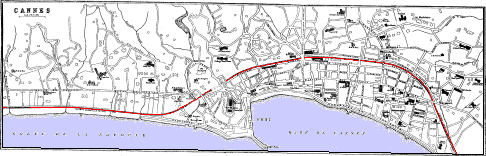
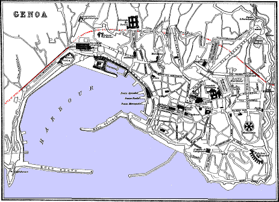

THE RIVIERA.
HOTELS, PRODUCTIONS, AND CLIMATE.

The Riviera is a strip of land extending 323 miles along the coast of the Mediterranean at the foot of the Maritime Alps and their off-shoots. It is usually divided into two portions—the Riviera from Hyères to Genoa, 203 miles long; and the Riviera from Genoa to Leghorn, 112 miles long. Temperature. The milder and more frequented of the two is the former—the Western Riviera—which has been subjected to most careful and minute meteorological observations, and the various stations classified according to their supposed degree of temperature. Yet in the whole 203 miles the difference may be said to be imperceptible. No one station in all its parts is alike, the parts of each station differing more from each other than the stations themselves. Yet each station has some peculiarity which suits some people more than others; this peculiarity being more often accidental and social—such as the people met with, the lodgings, the general surroundings, and many other little things which exercise a more powerful influence upon the health and well-being of the mind and body than the mere fractional difference of temperature. None of the protecting mountains of any of the stations are sufficiently high, precipitous, and united to ward off the cold winds when the higher mountains behind are covered with snow. All the ridges have deep indentations through which the cold air, as well as the streams, descends to the plain. Hence no station is exempt from cold winds, and all delicate persons must ever be on their guard against them—the more 108 sunny and beautiful the day, especially in early spring, the greater is the danger. All the stations suffer also, more or less, from the famous Mistral, a north-west wind, which in winter on the Riviera feels like a north-west wind on a sunny summer day in Scotland. The mean winter temperature (November, December, and January) of Hyères, considered the coolest of the winter stations, is 47°.4 Fahr., and of San Remo, considered the mildest, 48°.89 Fahr. The coldest months are December and January. With February the temperature commences to rise progressively. Throughout the entire region bright and dusty weather is the rule, cloudy and wet weather the exception. Vegetation. “In December wild flowers are rare till after Christmas, when the long-bracted orchid, the purple anemone, and the violet make their appearance. These by the end of January have become abundant, and are quickly followed in February by crocuses, primroses, and pretty blue hepaticas. Meanwhile the star-anemones are springing up in the olive-woods, with periwinkles and rich red anemones. In March the hillsides are fragrant with thyme, lavender, and the Mediterranean heath, to which April adds cistuses, helianthemums, convolvuli, serapiases, and gladioli.” —H. S. Roberton. There is a much less quantity of wild flowers now than formerly. The date-palm flourishes in the open air. Capital walking-sticks are made of the midrib of the leaf. Among the trees which fructify freely are the orange, lemon, and citron trees, the pepper tree (Schinus molle), the camphor tree (Ligustrum ovalifolium), the locust tree (Ceratona siliqua), the Tree Veronica, the magnolia, and different species of the Eucalyptus or gum tree and of the true Acacia. In marshy places the common bamboo (Arundo donax) attains a great height; while the Sedum dasyphyllum, the aloe, and the Opuntium or prickly-pear, clothe the dry rocky banks with verdure. The most important tree commercially is the olive, which occupies the lower part of the mountains and immense tracts in the valleys. The higher elevations are divided among the cork tree (Quercus suber), the Maritime, Aleppo, and umbrella pines, and the chestnut tree. The Japanese medlar (Eriobotrya japonica) is common in the orchards, flowers in December, and ripens its fruit in May. With the exception of the orange, lemon, and cherry, all the other orchard trees ripen their fruit too late for the winter resident.
On the Riviera generally, but especially in Hyères, St. Raphael, Grasse, and Menton, board and lodging in good hotels can be had for 8s. or 9s. per day, which includes coffee or tea in the morning, and a substantial meat breakfast and dinner, with country wine (vin 109 ordinaire) to both. In some boarding-houses (Pensions) the price per day is as low as 6s. If two are together, especially two ladies or a gentleman and his wife, an excellent plan is to take a furnished room, which, with a south exposure and good furniture, ought to cost about £2 per month. They can easily prepare their own breakfast, and they can get their dinner sent to them. If the party be numerous, apartments should be taken, which vary from £2 to £30 per month. For the season, from October to May, furnished apartments are let at prices varying from £18 to £100. As a general rule it is best to alight at some hotel, and, while on the spot, to select either the pension or apartments, as no description can give an adequate idea of the state of the drains nor of the people of the house. A maid-servant costs nearly £1 per month, a cook about one-half more, but they are not easily managed. Fluids are sold by the litre, equal to nearly a quart of four (not six) to the gallon. Solids are sold by the kilogramme, or, as it is generally called, the kilo, equal to 2 lbs. 3¼ oz.
Bread is about the same price as in England. The best beef and mutton
cost from 1s. 10d. to 2s. the kilo. A good chicken 2s. 6d. Eggs
when at their dearest cost 1½d. each. Excellent milk costs 4d. the
litre. The best butter 3s. 2d. to 3s. 6d. the kilo. Of French cheese
there are a great many kinds, all very good. Among the best are the
Roquefort and the fromage bleu, both resembling Stilton, and cost from
2s. 6d. to 3s. 6d. the kilo.
The Riviera: Fish.
Vegetables.
Fish are dearer than in England. The best caught off the coast are: the
Rouget or Red Mullet, the Dorade or Bream, the Loup or Bass, the
Sardine, and the Anchovy. The Gray Mullet, the Gurnard (Grondin), the
John Dory (Dorée Commune), the Whiting (Merlan), and the Conger are very
fair. The sole, turbot, tunny, and mackerel are inferior to those caught
in the ocean. The cuttle-fish is also eaten. Good vegetables can
be had all through the winter, such as carrots, leeks, celery, cabbage,
cauliflower, peas, lettuce, spinage, sorrel, and artichokes. The cardon
(Cynara cardunculus) and salsifis (Tragopogon porrifolius)
are often served up at dinner in the hotels. The cardon tastes like
celery, but the salsifis has a bitter flavour. The potatoes are of good
quality, but often spoilt in the cooking. In all the stations are
English clergymen, physicians, apothecaries, bankers, bakers, and
grocers.
Before commencing to treat in detail the different stations of the Riviera, “some of the general advantages of the invalid’s life in this region must be noticed. The chief of these is the amount of sunshine which he enjoys for weeks and even months together, when the sun 110 often rises in a cloudless sky, shines for several hours with a brightness and warmth surpassing that of the British summer, and then sinks without a cloud behind the secondary ranges of the Maritime Alps, displaying in his setting the beautiful and varied succession of tints which characterise that glorious phenomenon of the refraction of light, a southern sunset; when he imparts to the rugged mountains a softness of outline and a brilliancy of colouring which defy description. In the early stages of phthisis, and especially when the patient is young and active-minded, struck down by overwork or sudden exposure, this cheering influence is most beneficial. It is of great importance that, while taking the needful care of himself, he should not degenerate at an early age into a hopeless valetudinarian, especially as an every-day increasing mass of evidence warrants us in believing that under the influence of medicine and climate a large number of these patients gradually recover their health and lead useful lives, and, with due care, lives of no inconsiderable duration. Patients should never neglect to consult a doctor on their first arrival, as his experience and advice with regard to lodgings, food, etc., are of great value, and may often prevent them from falling into bad hands, or settling in unhealthy localities.” To these remarks of Dr. Williams may be added, that patients should bring with them a letter from their physician describing their case and the treatment he thinks should be adopted.
The best time for walking and driving is between 9 and 12, as then there is rarely either wind or dust. For invalids requiring quiet sunny walks there are no stations on the whole coast so suitable as Hyères and Bordighera.
The Riviera: Sea-bathing. Doctors’ Fees.
Sea-bathing on the Riviera may be continued with advantage by many during the greater part of the winter season. As the rise and fall of the tide are so trifling, the beach is always in a fit state for the bather. The water of the Mediterranean is more highly mineralised than that of the ocean. It contains about 41 per cent of common salt.
Doctors’ Fees.—French doctors charge their countrymen generally 10 frs. for each visit. English doctors charge for each visit 5, 10, or 20 frs., according to what they suppose to be the means of their patients. An extra charge is made for night work.
Tourists may find it convenient to take with them a little brandy, tea, arrowroot, Liebig’s extract, Gregory’s mixture, opium pills, and a little of whatever medicine they are in the habit of using. The ordinary wine at the hotels is neither so good nor so safe as formerly, and should always be watered.
111Marseilles.
MARSEILLES.
MARSEILLES, pop. 319,000, 15 hrs. 25 min. from Paris, and 6 hrs. 37 min. from Lyons. From Cannes it is 4 hrs. 31 min., and from Nice 5 hrs. 27 min. 536½ m. S. from Paris, 190¼ m. S. from Lyons, 120½ m. W. from Cannes, and 140 m. W. from Nice. On the departure side of the railway station is the Terminus Hotel (dear). The hotel omnibuses await passengers. Call out loudly the name of the hotel desired, to which the driver of its omnibus will respond.
A plentiful supply of Cabs is both at the railway and the custom-house station of the Bassin de la Joliette. Each coachman is furnished with an official tariff, which, though constantly changing, may be stated to be—Between 6 A.M. and midnight, for a cab with one horse, the course, 1 fr.; the hour, 2 frs. With 2 horses, the course, 1¼ fr.; the hour, 2¼ frs. From midnight to 6 A.M. 75 c. extra. Portmanteaus not above 30 kilo., or 68⅘ lbs., 25 c. each. The hotel omnibuses charge each passenger 1 fr.
Hotels.—In the Rue Cannebière, ascending from the Port, are very fine Cafés, and in the eastern continuation of it, the Rue Noailles, the best Hotels. The Hôtel du Louvre et de la Paix; the Hôtel Noailles; and the Hôtel Marseilles; all near each other, and charging from 12 to 20 frs. per day.
Less luxurious and expensive are: the Petit Louvre, No. 16 R. Cannebière, over the office of Messageries Maritimes steamboats; between the Port and the Bourse, the Hôtel de Genève, a comfortable house; on the opposite side of the Rue Cannebière and near the opera house, the Hôtel Beauveau; near it, in the R. Vacon, the *Hôtel des Colonies.
In and about the Cours Belsunce, where there are a large cab-stand and an important tramway terminus, are some good second-class hotels, of which the best is the Hotel des Phocéens, 28 R. des Récolettes. Rooms, 2½ frs.; Dinner, 3½ frs. with wine. Next it, at No. 26, is the Hôtel de l’Europe, a “maison meublée,” in which good rooms, including service, cost 2 frs. Breakfast and dinner can be had in the neighbouring restaurants. Of them, one of the most comfortable is G. Restaurant des Gourmets, adjoining the hotel. Near it is the Restaurant Bouches du Rhône, a cheap house. The other second-class houses in the Cours Belsunce which can be recommended are—the Californie; Deux Mondes; Hotel St. Marie; Négociants; Alger. The Hôtel du Cours is good also, but it is only a “maison meublée.” The continuation of the Cours Belsunce is called the Cours St. Louis, where a flower-market 112 is held. Just off this Cours, in the Rue d’Aubagne, is a cheap, good, and clean house, the hotel and restaurant St. Louis; rooms from 1½ to 3 frs.; dinner, à la carte. At No. 8 Place de Rome is a good and cheap house, the Hôtel Forer, well situated, but it is one of those for which either a cab or the general omnibus must be taken at the station.
Marseilles: Steamboats. Custom-House.
Steamboats.—The steamers of the Messageries Maritimes, of Morelli et Cie, of Fraissinet et Cie, of the P. and O. Navigation Co., etc., arrive and depart from the Dock or Bassin Joliette. The custom-house is at the north end of the dock, and just outside the dock-gates are porters and a large cab-stand. The custom-house contains one waiting-room for the first and second class, and another for the third. Passengers before they can have their baggage examined have to pay 6 sous at the end of the baggage-room for each box, for which they receive an acknowledgment. A tramway runs from No. 1 Quai Joliette to Longchamps, entering the Port and the Rue Cannebière by the R. de la République. There are no hotels near the steamboat station.
Small boats’ station at the head of the Port. Boats to and from the Château d’If, 8 frs. from 3 to 3½ hrs. On feast days small steamers make the round of the islands, starting from nearly the same place, but do not land the passengers, fare ½ fr., time 1 hr. At this part of the quay the feluccas from Spain discharge their cargoes of oranges and other fruits. From the Hôtel de Ville (1 in plan) on the port, the Bateaux Mouches cross over to the Place aux Huiles opposite, 1 sou. At the mouth of the port, from between La Consigne and the Fort St. Jean, other Bateaux Mouches cross over to the Bassin Carénage, by the side of Fort St. Nicholas, and just below the interesting old church of St. Victor, 1 sou. From this a road leads up to Notre Dame.
The principal Temple Protestant is in the R. Vincent, No. 2. There is another in the R. Grignan, No. 15, near the General Post Office at No. 53. Poste-Restante, “guichet,” on the ground-floor, opposite the entrance door. Telegraph office, No. 10 Rue Pavé d’Amour. Anglican chapel, No. 100 Rue Sylvabelle, south from the Rue Grignan and parallel to it. The public library is in the Boulevard du Musée, in the École des Beaux Arts. Open daily except Sunday.
Best money-changers by the west side of the Bourse, 10 in plan.
The Opera is near the Port; the other theatres are around the Rue Noailles.
Marseilles: Sights. Trams.
Sights.—Palais Longchamp, an artistic edifice, containing the Picture Gallery and the Natural History Museum; free. Closed on Mondays and every day between 12 and 2 (see p. 114). Near the 113 Palais is the Zoological Garden, free on Sundays. Notre Dame de la Garde (p. 116). The shops and cafés in the Rues Cannebière and Noailles. A drive on the Corniche road.
Of all the Trams the most important starts from the left of the statue in the Cours Belsunce, and runs by the Château des Fleurs and the Prado to its Bonneveine terminus, a little beyond the racecourse. Just behind the Bonneveine terminus is the Château Borély, containing the Musée d’Archéologie, including a collection of Phoenician relics found in the neighbourhood, which support the hypothesis of the Phoenician origin of Marseilles. Open on Sundays and Thursdays. On the ground-floor are Roman mosaics, busts, altars, tombstones, jewellery, mummies; and in the end room is a stone with a Phoenician inscription, regulating the tariff of the prices to be paid to the priests for sacrifices in the temple of Baal. Upstairs are collections of antique glass, necklaces, fayence from Provence and Marseilles, bronzes, gold jewellery, lamps, vases, weapons, and an octagonal plan of Marseilles 18 ft. in diameter.
Marseilles: Corniche. Bouillabaisse.
Return from the Bonneveine terminus by the tram for the Place de Rome, near 12 in plan. On its way it follows the Corniche road, considered the most beautiful drive about Marseilles, fare ½ fr. The gardens and pleasure-grounds in the whole of this neighbourhood are due to the irrigation afforded by the canal. Of the bathing establishments on the Corniche road the best is the Roucas Blanc; and of the restaurants the best is the Hotel Roubion, a first-class house, charging 15 frs. per day, and for vin ordinaire, lights, and service, 5 frs. additional. The house is situated on an eminence rising from the Corniche road, at the entrance into the Vallon de l’Oriol, commands a splendid sea view, has handsome dining-rooms, and is famed for its fish dinners and Bouillabaisse. Trams and omnibuses are constantly passing it. This establishment, as well as most of the other restaurants along the Corniche road, has tanks in the rocks on the beach, in which is kept a supply of live fish to make the Provence dish called Bouillabaisse, a kind of fish soup, which, like most national dishes—plum-pudding, puchero, haggis, etc.—admits of considerable latitude in the preparation. The essentials are—whole rascasses and chapons (scorpion fishes), and rock lobsters stewed in a liquor mixed with a little of the best olive oil, and flavoured with tender savoury herbs. An extra good Bouillabaisse should include also crayfish, a few mussels, and some pieces of any first-class fish, such as the bass.
Marseilles: Palais de Longchamp.
Those having little time to devote to Marseilles should, after taking 114 a short stroll about the Port and in the Rues Cannebière and Noailles, enter the Joliette tram on its way up to the Palais de Longchamp, fare 2 sous. The Palais de Longchamp, which cost £165,000, consists of two rectangular wings, united by a semicircular colonnade of Ionic volute-fluted columns. In the centre, under a richly-sculptured massive archway, an inscription records that the great undertaking of bringing the water of the Durance to Marseilles was begun on the 15th November 1839, and was accomplished on the 8th July 1847, in the reign of Louis Philippe I. Another records that the palace was commenced in the reign of Napoleon III., on the 7th April 1862, and finished on the 15th August 1869. From a group of colossal bulls under the colonnade gushes a copious stream of water, which in its descent makes a cascade of 90 ft. in three stages. The wing to the right, standing with the face to the palace, contains the Natural History Museum; and the other, the picture and sculpture galleries.
All the pictures are labelled. On the first floor are some large pictures by French artists and a few statues. In the second small room left hand is a collection of sketches by famous painters. Among the best pictures in the large centre hall of the upper story are:—F. Bol, d. 1681, portrait of woman and of King of Poland; Bourdon, d. 1671, portrait of P. de Champaigne; Cesari, d. 1640, Noah inebriated; Fontenay, d. 1715, Fruit; Girodet, d. 1824, Fruit; Gongo, d. 1764, Sacrifice to Venus and Jupiter; Greuze, d. 1805, portrait; Holbein, d. 1554, portrait; Loo, d. 1745, portrait of lady; Maratta, d. 1713, Cardinal Cibo; Mignard, d. 1695, Ninon de Lenclos; Nattier, d. 1766, Mme. de Pompadour as Aurora; Peeters, d. 1652, marine scene; Pellegrino, d. 1525, Holy Family; Perugino, d. 1524, Holy Family; F. Porbus, d. 1584, portrait; Raphael, d. 1520, St. John; Rembrandt, d. 1669, A Prophetess (sibyl); Reni, d. 1642, The Protectors of Milan; Ribera, d. 1656, Juan de Porcida; Rigaud, d. 1745, Duc de Villars; Rubens, d. 1640, Wild-boar Hunt; Salvator Rosa, d. 1675, Hermit; Veronese, d. 1588, Venetian princess; Zurbaran, d. 1662, St. Francis. In the room to the right is the “École Provençal,” containing, among other paintings—Barry, The Bosphorus; Duparc, d. 1778, The Milkmaid, and portraits of old man, woman, and girl knitting; Papety, d. 1849, “La Vierge Consolatrice”; P. Puget, Madonna. In the left room are, among others, J. F. Millet, b. 1815, Woman feeding Child.
The most important parts of the Museum of Natural History are the conchological division and the collection of ammonites.
115From the Palace gardens is a good view of Marseilles. Behind the palace, on the top of the hill, is the great reservoir 242 ft. above the sea, supplied with water from the main channel by a branch canal. (See under Roquefavour, p. 77.) At this part of the hill is one of the entrances to the Zoological Gardens; free on Sundays, when they are crowded with people. Near the entrance is the Observatory, one of the most important in France.
Marseilles: Hôtel de Ville. La Consigne.
The port of Marseilles has in all an area of 422 acres, and is
protected on the E. by Cape Croisette, and on the W. by Cape Couronne.
Its approaches are lighted by 6 lighthouses, of which the most distant
is on the Planier rock, 130 ft. above the sea, and 8 m. S.W. from
Marseilles. The large steam vessels lie in the dock La Joliette,
covering 55 acres, and finished in 1853; while the old-fashioned
trading-vessels, with their lateen sails, crowd together in the harbour
called emphatically the “Port,” containing 75½ acres. From the end of
the “Port” extends eastwards the handsome and greatly-frequented street
La Cannebière, so called from the rope-walks, whose site it now
occupies. At nearly the middle of the N. side of the “Port” is the
Hôtel
de Ville (1 in plan), built in the 17th cent., and adorned
with sculpture by Puget, born at Marseilles; while at the western
extremity of the same side, next Fort St. Jean, is a low building called
La Consigne, or Health Office. Over the chimney-piece in the
council-room of the Consigne is a beautiful relief in white marble
by Puget, representing the plague at Milan. To the right is a picture by
Gerard, representing Bishop Belsunce administering the sacrament to the
plague-stricken inhabitants of Marseilles in 1720. To the left, St. Roch
before the Virgin, by David. Fronting the windows, “The frigate Justice
returning from Constantinople with the plague on board,” “l’an 4 de la
République.” Opposite the fireplace, “The cholera on board the
Melpomene,” by Horace Vernet. Next it, by Guerin, “The Chevalier Rose
assisting to bury those who had died of the plague.” Between them is a
Crucifixion by Auber. Between the two windows is a portrait of Bishop
Belsunce. (Fee, ½ fr.) Near the Consigne is the pier of the ferry-boats.
Above the Hôtel de Ville is the town infirmary, and beyond it, on a
terrace 30 ft. above the quay of Joliette,
Marseilles: Cathedral.
Arc de Triomphe.
the Cathedral, a Byzantine basilica, 460 ft. from S. to N.,
and 165 ft. from E. to W. at the transept; built of gray Florentine
stone alternating with a whitish sandstone from the neighbourhood of
Arles. The nave is 52 ft. wide, and the roof 82 ft. high. The great dome
is 196 ft. high. Behind the cathedral are the Episcopal palace
116
(5 in plan), the Seminary (4), and the Hospice de la Charité (7).
Eastwards, in the Place d’Aix, is the Arc de
Triomphe, an imitation of the arch of Titus at Rome, commenced
on the 4th November 1825, to commemorate the prowess of the Duc
d’Angoulême in the Spanish campaign of 1823. It is 58 ft. high and 58
ft. wide, has on the south side statuary by Ramey emblematic of the
battles of Fleurus and Heliopolis, and on the north side similar
statuary by David, representing the battles of Marengo and Austerlitz.
Over the arch is the inscription— “A la République.” From
the arch a steep street, the R. d’Aix, descends to the Cours Belsunce,
with at the N. end a statue of Bishop Belsunce, “pour perpetuer le
souvenir de sa charité et de son dévouement durant la peste; qui desola
Marseille” in 1720. By the side of it are the terminus of the Bonneveine tram (p. 113) and the Alcazar
Lyrique, a kind of superior café chantant.
Marseilles: Bourse.
The continuation southwards of the Cours is the Rue de Rome, and farther S. the spacious Promenade du Prado. At the S. end of the Cours are, to the right the R. Cannebière, and to the left the R. Noailles, the two best streets in Marseilles. At the W. or Port end of the former is the Bourse (marked 10 in the plan), a parallelogramic building, 154 feet broad by 223 long, erected between 1858 and 1860. The principal hall, 60 feet by 94, is ornamented with mural paintings. In the vestibule are allegorical statues of Marseilles and France, and a bas-relief representing Marseilles receiving productions from all parts of the world. On the opposite side of the street, by the R. de Paradis, are the Opera-house, the Palais de Justice, and the Préfecture (12 in plan). The Palais de Justice, built in 1862 in the Greek style, has on the pediment and peristyle bas-reliefs by Guillaume, representing Justice, Force, Prudence, etc. The outer hall, the “Salle des Pas-Perdus,” is surrounded by 16 columns of red marble. The Préfecture is a splendid edifice in the Renaissance style, 300 ft. long by 260 ft. wide, adorned with statues and bas-reliefs, and furnished with a grand staircase, escalier d’honneur, communicating with handsome reception-room ornamented with mural paintings.
From the Bourse a pleasant road leads up to the church of Notre Dame de la Garde, one of the principal sights, and the most prominent object in Marseilles. From the Rue Paradis turn to the right by the Cours Pierre-Puget, traverse the pretty promenade, the Jardin de Colline, and then ascend the narrow road, the Montée des Oblats. On descending be careful to take the path to the left of the stone altar under a canopy on 4 columns. A small omnibus drives up the length of the Plateau 117 de la Croix, whence a series of 178 steps has to be ascended to attain to the terrace on which the church stands, 535 ft. above the sea. The church is shut between 12 and 2, but the tower, ascended by 154 steps, can always be visited. Fee, ½ fr. It is 148 ft. high, crowned with a gilded image of Mary 30 ft. high, ascended by steps in the interior to the head. The view, which is just as good from the terrace, commands the whole of Marseilles. To the N.E. the culminating peak is Le Taoume, 2166 ft.; to the S.E. is the Montagne de Carpiagne, 1873 ft.; and S. from it Mont Puget, 1798 ft. In front of Marseilles are the islands Ratonneau and Pomègue, connected by a breakwater. Between them and the mainland is the little island of If (p. 118). Off Cape Croisette are the islands of Maïre and Peirot. The road down the little ravine (the Valon de l’Oriol) leads to the Corniche.
Marseilles: Notre Dame de la Garde.
NOTRE DAME DE LA GARDE.
Notre Dame, an edifice in the Roman-Byzantine style, consists of an upper and a lower church. The dome over the apse is 48 ft. high. The interior of the church is lined with Carrara marble, but the pilasters and columns are of marble from Africa and the Alps. Over the high altar in the low church is the miracle-working image of Notre Dame. It is about 6 ft. high, stands on a pedestal of olive wood, is hollow, and made of a kind of stucco (carton-pierre) silvered over, excepting the face and hands of both it and the child. It weighs 1 cwt. 1 qr. and 14 lbs. On the high altar in the high church is a replica, nearly all of silver. The walls are covered with expressions of gratitude to it, and with pictures illustrating the manner in which its miraculous interposition was displayed.
Marseilles: Lycée. Saint Victor.
From the streets Cannebière and Noailles other handsome streets ramify, such as the Rue de Rome and the Cours Liautaud. Just where the Cours Liautaud leaves the Rue Noailles is the Lycée or head grammar-school, and in the neighbourhood (marked 11) La Bibliothèque et l’École des Beaux Arts, forming together a palatial edifice off the Boulevard du Musée, 177 ft. long by 164 ft. wide. On the ground-floor are the class-rooms, and on the first story, the library, the collection of medals, and the reading-room, 131 ft. long by 19½ wide. Among the medals are 2600 belonging to Provence. The library contains 95,000 vols. and 1300 manuscripts.
At the mouth of the Port, on an eminence above Fort St. Nicolas and the Bassin de Carenage (graving dock), is the oldest church in Marseilles, Saint Victor, all that remains of one of the most famous 118 monasteries in Christendom, founded in 420 by St. Cassien, ordained deacon of the church in Constantinople by Chrysostom. The exterior of St. Victor resembles a badly-built small fort surrounded by 7 unequal and uncouth square towers, the two largest at the N. side having been added by Pope Urban V., a former abbot of the monastery. Over the entrance door under these towers is a rude representation of St. George and the dragon. The upper church dates only from the beginning of the 13th cent. Near the sacristy in the S. side a stair of 32 steps leads down to the original church, a large and spacious crypt. Of this crypt the most ancient part is the small chapel shut off from the rest, with several tombs hewn in the rock. Among those buried here were St. Victor, and, according to the tradition of the place, Lazarus also, who is said to have died at Marseilles. The ancient appearance of this chapel is marred by a modern altar with a stone reredos, sculptured, it is said, by Puget. The shaft of one of the columns has a sculptured rope coiled round it. Pieces of ornamental sculpture are seen at different parts of the crypt, and remnants of a fresco painting. This also is the sanctuary of a miraculous wooden image of Mary and Child, said to have been carved by Luke. It is of a dark colour, is 3½ ft. high, and is called Notre Dame de Confession, whose intercession is sought by crowds of votaries from the 2d till the 9th of February. The best of the sarcophagi have been removed to the museum in the Château Borély (p. 113). At the foot of the eminence on which the church stands are Fort St. Nicolas and the Bassin de Carénage, whence a sou ferry steamboat crosses every four minutes to the other side. Among the modern churches perhaps the best is Saint Vincent de Paul, built in the style of the 13th cent.
Island of If.
Excursions.—The principal excursion from Marseilles is to the Island of If, with its old château built by Francis I., long used as a state prison. Boats for the excursion lie at the Cannebière end of the Port. They charge from 5 to 9 frs.; but it is necessary to arrange the price before starting. The landing-place is at some low shelving rocks, whence a stair ascends to the terrace, on which are, to the right the entrance to the Château, and a little to the left a restaurant. A man conducts visitors over the castle, of which the most interesting parts are the cell of Monte Christo, and the place where he was thrown over into the sea.
Marseilles to Martigues, 24 m. N.W. by rail (see map on p. 66). At Martigues station omnibus for Port Bouc, 3¾ m. W.; fare, ½ fr. From Port Bouc rail to Miramas, or steamboat by the canal to Arles 119 (see p. 76). After leaving Marseilles the first station of importance is L’Estaque (see p. 80), 7 m. W., with large brick and tile works, at the foot of a wooded hill. 4¼ m. farther is Pas-des-Lanciers, with an inn close to the station. Here the Martigues branch separates from the main line, and the Martigues passengers change carriages. Here also an omnibus awaits passengers for Marignane, 3¾ m. W. on Lake Marignane, pop. 7000. Remains of castle which Mirabeau inhabited. Lake Marignane is separated from Lake Berre by a narrow strip of land. The train after passing Marignane station arrives at the station for Châteauneuf, a village S. towards the hills.
Martigues.
Les Martigues, pop. 10,000. At station, omnibus for the inn, Hôtel du Cours, and omnibus for Port Bouc. Martigues is situated on both sides of the outlet from Lake Berre, and on the islets within this outlet, all connected by bridges. The railway station, the hotel, and a large part of the town are on the E. or Jonquière side. On the first or smallest of the 3 islets are the Tribunal de la Pèche and the fish-market; on the middle one is the Hôtel de Ville; and on the third and largest are the hospital and the parish church with sculptured portals. On the N. side of the canal is the part of the town called Ferrières, containing the harbour and the reservoirs for the manufacture of salt. Fishing is the principal industry of the inhabitants.
There are in Marseilles numerous charitable institutions. The infirmary (Hôtel Dieu), founded in 1188 and rebuilt in 1593, can accommodate 750 patients. The workhouse (Hospice de la Charité) contains generally from 600 to 680 orphan children and aged men and women. Near the Prado is the Hôpital de la Concepcion, with 800 beds.
Marseilles: Industries. Commerce.
The leading industry is soap-making, which occupies sixty factories, with 1200 artisans, and produces annually 65,000 tons, valued at £2,000,000 sterling. With this manufacture are connected oil and chemical works; in the former, which employ 2000 to 2500 workmen, 55,000 tons of different oils are produced yearly. The chemical works employ 2000 operatives in the manufacture of the salts of soda and concentrated acids, the value of whose annual production may be estimated at £320,000. Metallurgy is another great industry; a large quantity of ore, imported from Elba, Spain, and Algeria, is smelted in the blast furnaces of St. Louis in the suburbs. The Mediterranean ironworks and yards, together with other private companies, have large workshops for the construction or repair of marine steam-engines, and for every branch of iron shipbuilding, employing several thousand workmen. Marseilles is a great centre for the extraction of silver from 120 lead ore; 16,000 tons of lead and 25 tons of fine silver are separated annually.
Commerce.—The chief imports in point of bulk are cereals from the Black Sea, Turkey, and Algeria; but the one of greatest value, raw silk, £4,000,000 yearly, comes from Italy, Spain, the Levant, China, and Japan. Then follow metals, ores, timber, sugar, wool, cotton, and rice. The principal exports in respect of value are silk, woollen and cotton fabrics, refined sugars, wines and spirits; those of greatest bulk are cereals in the form of flour, building materials, oil-cakes, manufactures in metal, oils, glass and crystal.
Marseilles: History.
History.—The Greek colony of Massalia (in Latin, Massilia) was founded by the enterprising mariners of Phocæa in Asia Minor, about 600 B.C. After the ravages of successive streams of invaders it was repeopled in the 10th century under the protection of its viscounts. In 1112 the town bought up their rights, and was formed into a republic, governed by a podestat, appointed for life. In the remainder of the Middle Ages, however, this arrangement was modified, the higher town was governed by the bishop, and had its harbour at the creek of La Joliette. The southern suburb was governed by the abbot of St. Victor, and owned the Port des Catalans. The republic or lower town, situated between the two, retained the old harbour, and was the most powerful of the three divisions. The period of the Crusades brought great prosperity to Marseilles. King René made it his winter residence. Louis XIV. came in person to Marseilles to quell the disturbances under the Fronde. He took the town by storm, and had Fort St. Nicolas constructed. Marseilles repeatedly suffered from the plague, and an epidemic raged from May 1720 to May 1721 with a severity for which it is almost impossible to find a parallel; Bishop Belsunce, Chevalier Rose, and others immortalised themselves by their courage and devotion.
During the Revolution of 1793 the people rose against the aristocracy, who up to that time had governed the commune. In the Terror they rebelled against the Convention, but were promptly subdued by General Carteux. The wars of the empire, by dealing a severe blow to their maritime commerce, excited the hatred of the inhabitants against Napoleon. Since 1815 the prosperity of the city has received a considerable impulse from the conquest of Algeria and the opening of the Suez Canal.
The Marseillaise.
The Marseillaise.—The famous anthem called “The Marseillaise” was composed by Joseph Rouget de l’Isle, born at Lons-le-Saulnier on 121 the 10th May 1760, and died (it is said in poverty) at Choisy-le-Roi, 6¼ m. S. from Paris by rail, on the 27th June 1836. On the 24th April 1792, the day before the departure of a detachment of volunteers, Dietrich, the Mayor of Strasburg, gave a banquet to their officers, and during dinner requested Rouget, then an officer in the engineers, to compose a war-song for them. Although it was late before Rouget retired to his room, he had both the music and the words ready before going to bed. In the morning he handed the paper to his host, saying: “Tenez, voilá ce que vous m’avez demandé, mais j’ai peur que cela ne soit pas trop bon.” “Que dites vous mon ami?” said Dietrich, after casting his eye over the MS.; “vous avez fait un chef-d’œuvre.” The mayor’s wife having tried it on the piano, the orchestra of the theatre were engaged to perform it in the principal square of Strasburg, when such was the enthusiasm it created that the detachment marched off with nearly 1000 instead of 600 volunteers. For them Rouget called the air “Le Chant de guerre de l’armée du Rhin.” In July of the same year a detachment of volunteers was sent to Paris from Marseilles by order of Barbaroux, and as they were in the habit of singing this song both on their march and in the capital it received the name of the “Hymne des Marseillais.” Charles Barbaroux, born at Marseilles in 1767, died on the scaffold June 1794, was one of the deputies who contributed most to the fall of the monarchy. He belonged to the party called the Girondins.
122MARSEILLES TO MENTON.
By Hyères, Cannes, Nice, and Monaco. 155 Miles.
See Maps, pages 113, 155, and 185.
MENTON
155
MARSEILLES. See under “Marseilles, Toulon, Nice et Menton” in the
“Indicateur.” The train, after leaving Marseilles on its way to Toulon,
traverses beautiful fertile valleys opening to the sea, and bounded by
mountains mostly with whitish calcareous tops. Having crossed the stream
Huveaune and traversed several tunnels and the Durance and Marseilles
canal, the slow trains halt at the villages of St. Marcel, with the
chapel of N. D. de Nazareth, and St. Menet, and La Penne, all
situated at the foot of Mont Carpiagne. During the season, from May to
October, a coach at the St. Menet station awaits passengers for the
cold mineral baths of Camoins, 2 m. distant, or 5 m. by
omnibus from Marseilles. The bathing establishment is about ¼ m.
from the village, in an undulating hollow, among plane trees, olives,
and vines. The water is cold, and contains iron and iodine, with a great
deal of sulphur. It is very effective as a tonic, and in diseases of the
liver. The establishment is quiet but comfortable. Pension 8 to
9 frs. per day.
10½ m. from Marseilles is Aubagne, pop. 8100. H. Notre Dame. Omnibus daily to Marseilles, stopping at H. St. Louis. Every train halts at Aubagne. Junction with loop-line to Valdonne, 10½ m. N., with coal-mines and potteries. Coach from Valdonne to Aix by Fuveau, where take rail.
After Aubagne the train passes through the tunnel of Mussaguet, and, if a slow train, halts at the next station, Cassis, a pleasant fishing village in an oasis at the head of a small bay, between Mont Gardiole (to the west), culminating point 1800 ft., and Mont de Canaille (to the east), culminating point 1365 ft. Inn: Hotel and Pension Liautaud. An omnibus awaits passengers at the station, 30 cents. A very pretty path, passing by the Grotte de Regagne and through a forest of pines on the sides of Mont Canaille, leads to La Ciotat, 6½ m. east by this road, and 23 m. from Marseilles by rail. The station for La Ciotat is 2½ m. from the town, but an omnibus awaits passengers. Inn: H. de l’Univers, at the head of a well-protected harbour, nearly encircled by two strong stone jetties. At the western side of the little bay is a curious promontory, the Bec de l’Aigle (well seen from the station), composed of three lofty rocks in a row, perpendicular on the W. side. Beyond the point is the 123 small island Ile Vert. A little quarrying and coral fishing is carried on in La Ciotat; but the main business of the place is derived from the great shipbuilding yards of the Messageries Maritimes, which may be said to employ directly and indirectly the whole town.
4¼ m. beyond La Ciotat, or 27¼ from Marseilles, is the pretty village of St. Cyr, close to the station. 4¼ m. farther is the station for Bandol, a fishing village at the head of a shallow bay with small islands. The industries are cooperage and the culture of immortelles in fields on the plain and on terraces on the sides of the hills.
36 m. E. from Marseilles is the station Ollioules-St.-Nazaire, where omnibuses await passengers for St. Nazaire, pop. 2500, a port on the Mediterranean, and for Ollioules, pop. 3900, Inn: Trotobas; situated a short way inland on the Reppe, in a deep hollow surrounded by limestone cliffs, which, about 2 m. up the river, are so close to each other as to form a gloomy ravine, at one time the haunt of the brigand Gaspard de Besse. The great industry of Ollioules, Nazaire, and Bandol is the culture of immortelles, which, when made up into wreaths, are sent all over France. The largest and best cost 24 frs. the dozen. Yellow is the natural colour of the flower, but they are variously dyed or bleached. They are cultivated on terraces among olive trees. Oranges and lemons grow freely here. The coach for Beausset halts in the Place of Ollioules, and then runs up the right bank of the Reppe to Beausset, pop. 3000. Inn: France.
La Seyne. Six Fours.
38½ m. E. from Marseilles, and 6 m. W. from Toulon, is La Seyne station. An omnibus awaits passengers for the town, pop. 11,000, H. de la Méditerranée, situated on the roads opposite Toulon, between which two ports there is constant communication by steamers. Near the hotel is the office of the omnibus for Tamaris, a village 1¼ m. S.E., at the foot of Fort Napoleon, and on the Rade (roads) du Lazaret. The omnibus returns by Balaguier. The Toulon omnibus for Reynier passes through La Seyne, from which Reynier is 3 m. W. On the hill above Reynier are the new fort and what remains of the ancient village of Six Fours, once a town of importance. The greater part of the crumbling walls has been cleared away, and in their stead a strong fort has been built, which occupies the entire summit of the hill. The old church still remains, of which the earliest part, 6th cent., is at the entrance extending east and west, and was originally the whole building. To the right hand are two stone altars (6th cent.), with windows behind them to give light to the officiating priest, who at that time said mass with his face to the audience. The nave, extending 124 N. and S., was added in the 15th cent. It contains a Madonna by Puget, and some pictures on wood of the 15th cent. Under the church is a large cistern, formerly, according to the “Annales de Six Fours,” the chapel or house where Mary, sent by her brother Lazarus, told the inhabitants about Jesus. She was buried in the crypt of St. Maximin (p. 143).
MARSEILLES TO CANNES.
opp. 123
[West End] For continuation northwards see map, page 66.
[East End] For continuation northwards see map,
page 163.
For continuation westwards see map, page 66.
For Esteral Mountains see map, page 146,
and for continuation eastwards see map, page
163.
See Environs of Toulon, page 129.
Toulon.
TOULON.
42 m. E. from Marseilles, 13 m. W. from Hyères, 22 m. S. from Carnoulles, 59 m. S.W. from St. Raphael, 79 m. S.W. from Cannes, 98½ m. S.W. from Nice, and 113 m. S.W. from Menton, is Toulon, pop. 71,000 (see maps, pp. 123 and 129). Hotels: near the station, the Grand Hotel, a large first-class house; a little farther and near the post, the theatre, and Temple Protestant, are the Victoria and the Louvre; in the Place Puget is the Nord, and at No. 15 an office where carriages can be hired for Mont Faron and other excursions. From this “Place” start the omnibuses for Hyères, 11 m. E. by the road; also omnibuses for Ollioules and Beausset. The porpoises and scallop shells on the fountain in the centre of the “Place” are by Puget. In the Place d’Armes is the H. Place d’Armes, fronting the Arsenal and the Promenade, where the band plays on Sundays.
The omnibuses for Cap Brun, Ste. Marguerite, Le Pradet, La Valette, La Garde, and La Crau, and the diligences for Pierrefeu, Collobrières, Cuers, Solliès-Pont, Belgentier, Meounes, Neroules, and Brignoles, start from the Place d’Italie at the east end of Toulon. In this “Place” are the inns H. Petit, St. Jean, and H. Croix-Blanche. (For the above places see maps, pp. 123 and 129.) In the Place Puget are several cheap restaurants. The best restaurants are on the quay of the port.
Toulon: The Quai du Port.
The Quai du Port.—The bronze statue on this quay, representing Navigation, is by Daumas, by whom are also the colossal statues in front of the theatre. Near it are the berths of the steamers for Saint Mandrier, 3½ m. S., and for the Iles d’Hyères. More to the right is the berth of the large steamers for La Seyne. At the west end is the hulk of the famous Belle Poule, covered with a roof of sloping planks. This was the vessel in which Napoleon’s body was brought from St. Helena and deposited in the Hôtel des Invalides on the 15th December 1840. The Chamber of Deputies granted £40,000 to defray the expenses of the expedition, and entrusted the command to the Prince de Joinville, with whom were associated Bertrand, Gourgaud, the younger Las Casas, and Marchand the Emperor’s valet, all the latest and most devoted of Napoleon’s adherents. On the 125 16th October the coffin was opened, when the body was found in an excellent state of preservation. On that same day the remains were embarked on board the Belle Poule, and on the 18th the ship set sail. On the 30th November it reached Cherbourg, where the body was transferred to the steamboat Normandie, which conveyed it up the Seine to Courbevoie, where it was placed on a most magnificent car.
Toulon: Cab Fares. The Arsenals.
Cab fares.—The course, 1¼ fr.; the hour, 2 frs.
The strongly-fortified port of Toulon occupies a plain rising gradually from the sea to the lofty ridge of Mont Faron, which runs east and west, and sends out lower branches, enclosing the town and harbour on either side. On the summit, immediately behind the town, are Fort Croix and large barracks; to the east is La Platrière, 1000 ft., and immediately behind it Mt. Coudon, 2305 ft. To the west is the Cap Gros, 1735 ft, and behind it Mt. Caoume, 3268 ft. On every commanding position is a fort; while from the water’s edge at the west end of the port rises Fort Malbousquet. Similarly situated on the eastern end is Fort Lamalgue, the last held by the English in 1793. The Petit Rade offers a spacious and most secure roadstead. From it are walled off, at the east end, the Port Marchand and the Vieille Darse, or town-docks, whence the steamers sail. Then follow the Government docks of Vauban, Castigneau, and Missiessy, all communicating with each other by swing bridges, and surrounded by well-built quays. The most conspicuous features of Toulon are the arsenals and the establishments connected with them, which are on a scale of almost unrivalled magnificence, occupying 717 acres, and employing above 10,000 men. Near the west end of the Port a large gateway with marble columns forms the entrance into the “Arsenal Maritime,” covering 240 acres, and containing a general storehouse, 100 forge fires, two covered building-slips, a ropery 1050 feet long, and an armoury with at the entrance two caryatides and a colossal eagle by Puget. Adjoining is the Arsenal de Castigneau, constructed on piles along the bay towards La Seyne, with the bakery, ironworks, and ship-equipment departments.
Although Toulon, rather a dirty town, is crowded with marines and sailors, it maintains by the constant influx of the peasantry all the characteristics of a town of Provence. Theatres of every grade abound, from the Grand Opera House down to the poor little café chantant, where gaudily-dressed females electrify the audience with popular ballads. The most pleasant lounge in winter is on the Quai du Port, as the wharf fronting the town-dock is called. As long as 126 the sun is above the horizon it shines there, consequently during the cold season it is crowded with all kinds of people, most of whom, unfortunately, are poisoning the air with execrable tobacco. On it are good cafés and restaurants, and booksellers’ shops where plans of the town and neighbourhood are sold. This now gay sunny promenade was in November 1793 the scene of one of the most horrid butcheries of human life recorded in history, when the infuriated Republican soldiers, mad with vengeance, slaughtered above 6000 of their countrymen, not sparing even those of their own party, in their blind rage. Sir Sydney Smith, amidst the flames of burning ships and dockyards, and the shrieks and imploring cries of the terrified populace, succeeded in rescuing and embarking some 1500. Napoleon, then a lad of 23, by whose military genius the discomfiture of the English had been effected, exerted himself to the utmost, but in vain, to stay the carnage.
Toulon: Town Hall.
Among the houses which border the Quai du Port is the Town Hall, adorned with two admirable caryatides by Pierre Puget. In front is the statue representing Navigation, and at No. 64 of the street behind is the corner house Puget built for himself. It contains four stories of nearly square windows, those in the lowest and highest rows being the smallest. The small side has three windows in each row, and the large four, the windows of the first three rows over the doorway being in couples. On the angles are shallow grooved foliated pilasters, and under the eaves a projecting dentil cornice.
The most sheltered street in winter, and the coolest in summer, is the Rue Lafayette, a broad avenue lined with shops and shaded with immense lime trees. It commences at the east end of the Port and bends round to the Place Puget. About half of the street is occupied by a fruit, flower, and vegetable market. In the second story of the narrow five-storied house, at No. 89 (the Port end), is one of the cannon-balls fired by the English during the struggle of November 1793. (See above.) At the Port end of the street is the “Place,” whence the omnibus starts for Mourillon; also the church of St. François de Paule. The interior contains pictures and statues of some merit. The reredos of the altar to the left represents one of the interviews between J. C. and Marguerite Alacoque, while that of the altar to the right represents Mary announcing herself to the girl swineherd at Lourdes to be the “conceived without sin.”
Toulon: Sainte-Marie-Majeure.
The street ramifying from the west side of the Rue Lafayette, between houses Nos. 77 and 79, leads to the cathedral of Sainte-Marie-Majeure, commenced in the 11th cent., and finished in the 18th. 127 The exterior is unattractive. The interior is better. The organ-loft over the entrance is of carved oak. The alabaster reredos of the altar in the chapel to the right of the high altar is by the sculptor Veyrier. The tabernacle and the two angels under it are by Puget, who is said to have executed also the alto-relievo on the side wall of the chapel representing the apostles looking into the empty tomb of Mary. Over the arch of the chapel on the left of the high altar is a Madonna in wood by Canova. Several very good pictures adorn the church.
All the steamers sail from the Quai du Port. The best and largest are those which cross to La Seyne (p. 123). The steamers for the Iles d’Hyères and for St. Mandrier sail also from this wharf. The St. Mandrier steamer makes the trip six times daily, calling first at Balaguier, where the landing-place is between Fort Aiguillette to the north and Fort Balaguier to the south, the latter being easily recognised by its round tower. The restaurant and houses are situated towards Fort Aiguillette. On the other side of the point of Fort Balaguier is Le Tamarin, or Tamaris, consisting chiefly of pretty villas in luxuriant gardens full of palms and orange trees. Behind Tamaris rises Fort Napoleon, commanding a splendid view. An excellent carriage-road leads up to the top. It commences near the neck of land of the peninsula of Cepet. An omnibus runs between Le Tamaris, Balaguier, and La Seyne. St. Mandrier. The steamer, after touching at Balaguier, crosses the roads or Rade du Lazaret and enters the small bay of St. Mandrier. At the landing-place is a comfortable inn, charging 8 to 10 frs. per day. Round the point, in a warm nook among the hills, is the hospital of St. Mandrier, with 1200 beds, one of the most important establishments of this kind in France. It occupies three sides of a parallelogram, has a handsome chapel, and a great cistern vaulted with concentric circles. Adjoining is a large and well-sheltered garden with orange trees. Visitors are readily admitted. In Toulon, near the Place d’Armes, is the Hôpital de la Marine, exclusively for the navy. Although well ordered, it is hardly sufficiently ventilated.
Toulon: Mont Faron.
One of the most interesting walks is to the top of Mont Faron, 1792 feet above the sea. From the Porte Notre Dame, at the E. end of Toulon, take the broad road or street leading northwards by the bridge across the railway. Then passing one of the artillery establishments, leave the town by the Port of Ste. Anne—the name is on the gateway. From this the real road commences, excellent all the way, and in its gentle ascent and continuous windings ever unfolding the most lovely views of the town and the bay. When not far from 128 the summit three roads meet. The road to the left goes to the barracks and to the top. The nearly level road to the right goes to Fort Faron, and the steep road to the left to Fort de la Croix on a rock above Fort Faron. Both are on the east or the La Valette side of the mountain. The summit consists of a stony tableland, from which rise knolls of various elevations. It can be done in a carriage.
La Valette. Mont Coudon. Cap Brun.
Toulon Omnibuses.—Among the omnibus-drives from Toulon the best are to Hyères (p. 133) by La Valette, and to the village of Dardenne, on a stream in the picturesque valley between Mont Faron on the right or S. side and the steep Tourris mountain, with bald calcareous summits, 1426 ft. high. As far as the omnibus goes the road is good. The road eastwards through the valley leads to La Valette, and the short road northward to the village of Le Revest, on the top of an eminence commanding a good view of the ravine of the Dardenne. The village of La Valette, pop. 1700, is 3¼ m. E. from Toulon and 7¾ W. from Hyères by the omnibus. The carving on the church door, representing John writing the book of Revelation in the island of Patmos, is said to have been done by Puget. From this village the ascent is made of Mt. Coudon, 2305 ft., in about 2½ hours. “From Mt. Coudon there are grand views in all directions. I have sought for them a great deal, and seen a great many, but have never beheld any scene so lovely as the graceful yet bold indentured coast of France as exhibited from Coudon.” —George Sand. A carriage-road leads up to the very top, but unfortunately, when only a few feet from the summit, farther progress is stopped by a fort, and the best of the view lost. Commence the ascent from the narrow lane opposite the Hôtel de Ville, and, once on the high road, never leave it. On the way up many very beautiful land and sea views disclose themselves.
The next best omnibus-drives are to Cap Brun and Ste. Marguerite, eastward on the coast, and to Le Pradet, a village N.E. from Ste. Marguerite, on the road to Carqueyranne. Both omnibuses start from the Place d’Italie. Although this road skirts the coast, very little of it is seen on account of hills and garden-walls. Cap Brun and Ste. Marguerite are both forts on cliffs projecting into the sea. To the east of the Fort Ste. Marguerite is the village, consisting of a few houses, with a small chapel among villas and cottages scattered over the slope of an eminence rising from a tiny cove. Le Pradet is a considerable village a little to the S. of La Garde. La Garde, on its hill crowned with the ruins of a castle, forms a marked feature in the landscape. At Cap Brun is the villa of Sir Charles Dilke.
129Mourillon.
The omnibus to the sea-bathing suburb of Mourillon, 3½ m. E., behind Fort La Malgue or Malague, starts from the Port end of the Rue or Cours Lafayette.
Diligence Drives.—Toulon to Meounes, 19¼ m. N. by diligence from the Place d’Italie. Time, 3 hrs.; fare, 2½ frs. (see map, p. 129).
Belgentier. Meounes.
The diligence, after passing through La Valette, Farlède 4¾ m., and Solliès-Ville, arrives at Solliès-Pont, 272 ft. above the sea and 10½ m. from Toulon, situated on the railway and on the Gapeau. The diligence halts near the inn H. du Commerce, where passengers from Hyères can await its arrival. The coach to Brignoles passes by the same way, but at an earlier hour. From Solliès-Pont commences the beautiful part of the route, up the fertile valley of the Gapeau between lofty and precipitous calcareous mountains. The slopes are covered with large olive trees, and the plain with fields and vineyards and numerous cherry trees. Nearly 2 m. farther up the valley, but on the other side of the Gapeau, is Solliès-Toucas (328 ft.), situated in a sheltered nook. 5 m. higher up, and 12½ m. from Toulon, is Belgentier (pronounced Belgensier), on both sides of the Gapeau. The horses are changed here. The inn (auberge), which is indifferent, is round the corner to the right. From Belgentier the olives cease to be continuous. The diligence, after passing the flour-mill Pachoquin, 558 ft., arrives at the best headquarters in the valley, Meounes, 919 ft., on the stream Naille, an affluent of the Gapeau, 3½ m. N. from Belgentier, 8¾ m. N. from Solliès-Pont, 6 m. E. from Signes, 4¾ m. S. from Roquebrussane, 12 m. S.E. from Le Camp, 5 m. S. from Garéoules, and 7½ m. S. from Forcalqueiret railway station, which is 7 m. E. by rail from Brignoles (see map, p. 123).
The inn of Meounes is behind the church. On a small peak overlooking the village is an image of Mary. Round three sides of the pedestal are the words “Mary conceived without sin, the tower of David, the refuge of sinners, pray for us.” On the fourth side “June 1870.” Eastward is a great circular mass of mountains, which rises abruptly on the eastern and southern rim, and sinks towards the western and northern. Going round from south to east the culminating points reach the elevations of 1794 ft., 1860 ft., 2073 ft, 2248 ft., 1934 ft., 2326 ft., and 2060 ft. Tablelands, more or less fertile, and peaks of various elevations, occupy the centre. The rocks are calcareous, and most of the paths which traverse this region are excessively stony.
Montrieux.
Scarcely 3 m. from Meounes by a very pretty road is the Carthusian Monastery of Montrieux (pronounced Monrieux), on an eminence 945 ft. above the sea. To go to it descend the high road for about 1½ m. to a bridge and first road right, which take. A little way up, the road divides into two; take the left one, which crosses the Gapeau. The building, which is prettily situated, is small, and contains only about from 30 to 35 inmates. It was founded in 1117, and had very large possessions, which, with the house, were taken from the monks at the fatal revolution of 1793. In 1845 the building was repurchased, 130 along with 74 acres of land, and peopled with a detachment of friars from the head monastery of the order, the Chartreuse of Grenoble. The Carthusians and Trappists resemble each other in dress and in their rules, the chief difference being that the Trappists sleep in the same room, and dine together in the same room, while the Carthusians have each a separate suite of small rooms or cells, where the inmate sleeps and feeds by himself. Both affirm: “Nous ne permettons jamais aux femmes d’entrer dans notre enceinte; car nous savons que, ni le sage, ni le prophète, ni le juge, ni l’hôte de Dieu, ni ses enfans, ni même le premier modèle sorti de ses mains, n’ont pu échapper aux caresses ou aux tromperies des femmes.” A nearer but very stony path, commencing opposite the church door of Meounes, leads also to the convent.
Through Meounes pass the Toulon courrier to Brignoles by Roquebrussane, the Toulon coach to Brignoles by Garéoules, and the Toulon coach to Garéoules. The drive between Meounes and Brignoles is monotonous, and the inns in the villages poor. Fare from Meounes to Brignoles 3 frs., distance 15 miles. (For Brignoles, see p. 142.)
La Crau. Cuers. Pierrefeu. Collobrières.
Toulon to Collobrières.—From the Place d’Italie a coach starts daily to Collobrières, 25 m. N.E. by E., passing through La Valette 3¼ m., La Garde with its castle 5 m., and La Crau 7½ m. Inn: H. de France. Beyond the inn are the post and telegraph offices, and a few yards farther, in the Rue de Gapeau, the halting and meeting place of this diligence with the coach that runs between Hyères and La Crau.
From La Crau the diligence proceeds to Pierrefeu, 18 m. from Toulon, where the horses are changed near the first terrace, a little higher than the inn. From Pierrefeu the diligence proceeds to Collobrières, up the thinly-peopled valley of the river. Fare, 2½ frs.; time, 4½ hrs. Excursionists from Hyères should await the diligence at La Crau, where it arrives about 4 P.M.; or take the rail to Cuers station, and then the courrier, which leaves Toulon every forenoon for Collobrières, passing through Pierrefeu (p. 142).
From Toulon to Pierrefeu the road traverses a fertile plain more or less undulating, covered with olive trees, vineyards, and wheat fields. The Gapeau, the river that supplies Hyères with water, is crossed a few yards beyond La Crau, and shortly afterwards the road to Pierrefeu takes a northerly direction up the valley of the Real-Martin, the principal affluent of the Gapeau. Pierrefeu, pop. 4000, is a dirty village on a hill, 482 ft. above the sea, with narrow, crooked, steep streets. From the terrace there is a pleasing view of the plain below. From Pierrefeu the coach ascends the valley of the Réal-Collobrier to Collobrières, pop. 3600, on an eminence rising from the stream. Inn: H. de Notre Dame, near the diligence office, good and clean. The office of the courrier is in the principal street, near the Post and the Hôtel de Ville with the promenade. From the top of the hill, where stands the old church, now abandoned, is an excellent view of the valley. The lower part is covered with fields and vineyards interspersed with fruit trees. On the side of the mountains facing the north are forests of 131 chestnut trees, some very old and of most fantastic forms, while on the opposite side are forests of sombre cork oaks. Cork-cutting, wine-making, and the exportation of chestnuts form the principal industries. The wine, when four years old, makes an agreeable vin ordinaire. In the tenth year it is at its best, when it becomes straw-coloured.
A winding coach-road across the Maure mountains extends northwards to Gonfaron, a station on the railway to Cannes. Between this road and Pignans station is the culminating point of the Maures, on which is the chapel of N. D. des Anges, 2556 ft. above the sea.
Isles d’Or.
The Islands of Hyères, or the Iles d’Or.
Steamer every other day from Toulon to Porquerolles; time 2 hrs., fare 2 frs.; thence to the Ile Port-Cros, time 1 hour. Fare there and back to Porquerolles, 2 frs. Steamer also every other day from Les Salins of Hyères to Porquerolles by the Iles du Levant and Port-Cros.
The finest of the views of Toulon and neighbourhood is from the deck of the steamer while sailing through the roads. To the north rises the massive and precipitous Mont Faron with its forts and barracks, and to the east is La Malgue with its forts and batteries. To the west is La Seyne, by the north side of the hill on which is Fort Napoleon, and southwards is the peninsula of Cepet with the large Military Hospital of St. Mandrier. The whole coast from Toulon to Hyères is afterwards seen distinctly from the steamer. Just before arriving at Porquerolles the steamer sails closely along the southern shore of the peninsula of Giens (see p. 140, and map, p. 123).
Porquerolles.
Porquerolles, pop. 500, is 5 miles long, and of an average breadth of 2 miles. The culminating point is 479 ft. above the sea. The northern coast is low, the land sloping upwards to the south, where it terminates in vertical cliffs of schistose and quartzose rocks. The vegetation is nowhere luxuriant. Pines, arbutus, and heaths cover the mountains, while the more fertile plains and valleys have vineyards and fields. The climate is very dry, and the water-supply is obtained from wells. Mosquitoes can hardly be said to exist. Many rare plants are found in the woods, such as the Delphinium requienii, Galium minutulum, Pelargonium capitatum, Latyrus tingitanus, Alkanna lutea, Genista linifolia, Cistus Porquerollensis, and the Cistus olbiensis.
The Port of Porquerolles is situated in nearly the centre of the N. side of the island, exactly opposite Hyères, and 9 m. from Les Salins. The pier has not sufficient water to allow the steamer to moor alongside. In the “Place,” quite close to the pier, are the church, the museum of the island collected by the most worthy curate, and the two inns, of which the H. du Progrès is the larger of the two. Above the town, at an elevation of 215 ft., is the castle, with some small buildings formerly used as an hospital, now a prison.
There are three main roads in the island—the road by the N. coast westward is called the Chemin du Langoustier, the road by the N. coast eastward the Chemin des Mèdes, and the road up the centre of the island, from N. to S., the Chemin au Phare. This last road 132 commences at the N.W. corner of the “Place” and terminates at the lighthouse on Cap d’Armes, the most southern point of the island, 210 ft. above the sea. The lighthouse, first-class, is ascended by 70 steps, is 46 ft. above the ground, and has a white light.
The first road right from the N.W. corner of the “Place” is the Chemin du Langoustier, which, on its way westward, traverses a comparatively open country. The building in ruins, seen on the top of the ridge to the left, 370 ft. high, is an old watch-tower, considered the most ancient structure on the island. Near the end of the road is a decayed soda manufactory. At the terminus on the peninsula is a Vigie, a watch-tower and signal-station combined, 108 ft. above the sea.
The road along the N.E. coast, the Chemin des Mèdes, traverses the most fertile part of the island. About half-way, near Point Lequin, it passes round the N. end of a ridge, extending N. and S., on whose summit, 479 ft. above the sea, is a semaphore or signal-station, commanding a perfect view of the whole island, while the view of the other islands, of the peninsula of Giens, of Hyères, and of the coast to beyond Cannes, is admirable. The way up is by the first branch road right at the commencement of the wood. The road at the commencement looks as if it led up the plain. The Chemin des Mèdes terminates at a farmhouse called Notre Dame, formerly a monastery, whence the continuation is by a path leading to a fort on Cap des Mèdes, to the N. of a hill 449 ft. high.
Port-Cros. Port Man. Levant.
Port-Cros.—11½ m. E. from Porquerolles port is the island of Port-Cros, 12½ m. S. from Les Salins, on the western side of the island, at the head of a small landlocked bay. An inn is near the pier. The main road extends from the landing-place up the valley by the church and the proprietor’s house to Port Man at the eastern end of the island. Port-Cros consists of a picturesque wooded ridge, whose culminating point is to the south, 669 ft. above the sea; it is 2½ m. from S.W. to N.E., and 1½ m. from N. to S., and contains 1482 acres. The rocks in Porquerolles and Port-Cros are similar—mica, schist, and quartz. Round the coast are numerous little coves with tiny smooth beaches. Excellent sea fishing may be had at all times.
About a mile east from Port Man is the western extremity of the more sterile island of the Levant, 5 m. from E. to W., and 1½ from N. to S. The culminating point is in the centre of the island, the Pierres Blanches, on which there is a signal-tower, 423 ft. above the sea. Mica, amianthus, actinolite, and tourmaline abound.
Toulon to Hyères.
Toulon to Hyères.—Passengers at Toulon for Hyères, 11 m. E., can go either by the omnibus, which starts three times daily from the Place Puget, fare 1 fr., time nearly 2 hours, or by train. If by rail they should examine the Indicateur, and select a direct train, otherwise they may have to wait some time at La Pauline, where the branch line commences by La Crau to Hyères, 13 miles by rail from Toulon.
133Hyères. Hotels.
HYÈRES,
pop. 13,000, the most southerly of the stations on the Riviera, the nearest to England, and only 18¼ hours from Paris. It is not so gay as Cannes, Nice, Monte Carlo, and San Remo, nor perhaps even Menton; but none of these places have such beautiful boulevards, nor such a variety of charming country walks and drives either by private or stage coaches. The hotel omnibuses await passengers at the station. The station is ¾ m. S. from Hyères, and ¾ m. N. from the Hermitage.
Hotels.—At the west of the town are the Hôtel des Palmiers, below the Place des Palmiers; the *Iles d’Or, with garden off the main road; the H. Continental, on an eminence above the Iles d’Or. These three are first-class houses, and charge per day from 15 to 20 frs., including bedroom, service, wine, candles, and three meals with coffee or tea in the morning. Next the Iles d’Or is the Hesperides, 8 to 12 frs. Off the main street are the Ambassadeurs and the Europe, both from 10 to 12 frs., frequented chiefly by those who come only for a few days. At the east end of Boulevard des Palmiers the H. du Parc, 12 to 15 frs. On opposite side, and well situated for the sun, is the second-class house, the H. Iles d’Hyères, 7 to 10 frs. Near it, but not well situated, is the Méditerranée, third-class. The principal hotel on the east side of Hyères is the H. Orient, 10 to 13 frs., a comfortable and old-established house, opposite the public gardens. Farther east, and off the high road to St. Tropez, is the Beau-Séjour, from 12 to 15 frs. Down by one of the roads to the sea is the H. des Étrangers, 10 to 13 frs., in a sunny situation. About 1½ m. S. from Hyères, near the Hermitage chapel, but in a sheltered nook overlooking one of the warmest and most favoured valleys of the Montagnes des Oiseaux, is the *Hôtel and Pension de l’Hermitage, 9 to 12 frs., retired and comfortable, and frequented chiefly by English. As it is near the sea, in a forest of pines and cork oaks, it combines the advantages of Arcachon with those of Hyères. All the above prices include tea or coffee in the morning, and meat breakfast and dinner, with wine to both. Abundance of furnished apartments and villas to let. In the Place des Palmiers are a French and an English bank. Both exchange money. In the same “Place” is the Temple Protestant, and a little beyond the English Pharmacy. The Episcopal chapel is in the Boulevard Victoria. The town hospital is at the west end of the town.
There are several clubs; the best are the Siècle and the Progrès, which take in English newspapers. Here, as well as in the other stations 134 on the Riviera, all the first-class clubs or “cercles” have large gambling-rooms, as productive of evil as Monte Carlo.
Cab fares.—Per hour, 2 frs. A coach per month with driver and 2 horses, 500 frs. With 1 horse, 300 frs.
Hyères: Drives.
Drives.—A 3 to 4 hours’ drive in a coach with 1 horse costs 6 to 8 frs., with 2 horses 10 to 12 frs., but, as there is no recognised tariff, it is necessary in every case to settle the price beforehand. The drive to Carqueyranne by the coast and back by the road between the Paradis and Oiseaux mountains, with 1 horse, 8 frs. The same price to La Crau, round by the west side of Mt. Fenouillet, and back by the valley of the Gapeau. The great drive, forming a good day’s excursion, is to the Chartreuse of Montrieux, 18 m. N., by La Crau, Solliès-Pont (a railway station), and Belgentier (pronounced Belgensier). (For description, see p. 129.) Coach with 2 horses, 25 frs. there and back. The other great drive (costing the same) is to the Fort of Brégançon, 16 miles east by the coast-road, passing by Les Vieux Salins, at the eastern extremity of which a road strikes off due north towards the St. Tropez road, passing Bastidon (7 m. from Hyères) amidst large olive trees. After Les Salins the road enters the part of the plain called La Plage Largentière, in which is situated the Château de Bormettes, built by Horace Vernet (7½ m. E. from Hyères). A little farther east, on the Plage de Pellegrin, are the châteaux of Léoubes (11 m.) and Brégançon; and, on the western point of Cap Bénat, Fort Brégançon, about 4 miles west of Bormes. (For Bormes, see p. 142.) Another pleasant drive is to Cuers, 14 m. N.W. by the Gapeau and Pierrefeu. The first road that ramifies to the right, from the Gapeau valley road, leads up into the Vallée de Borel, in the heart of the Maure mountains. This road passes by the large farmhouse of Ste. Eulalie, in a plain full of large olive trees, some 6 feet in diameter. There are also some large pines. Besides these excursions there are a great many little drives which may be taken in the wooded sheltered valleys running up between the ridges of the Maure mountains, but for them a light vehicle should be selected, as some parts of the roads are not good.
Hyères: Coaches.
Coaches.—From the Place de la Rade start daily coaches for Carqueyranne 6¼ m. W., for Les Vieux Salins 4 m. E., for La Crau 4½ m. N. (see p. 130), and for St. Tropez 32½ m. E., whence a steamer sails to St. Raphael. Near the “Place,” opposite the Hotel and Restaurant du Var, start several times daily large omnibuses for Toulon by La Valette (see maps, pp. 123 and 129).
135Hyères proper is a little dirty town of narrow streets, running up the south-east side of the castle hill; like, however, all the other winter stations, the new quarter, with its handsome streets and villas, has far outgrown the original limits. A plain, 2 m. wide, is between the town and the sea. The beautifully-wooded Maure mountains surround it on the land side, mitigating the keenness of the north, north-east, and east winds, but affording indifferent protection from the mistral or north-west wind. The Toulon road, extending east and west, forms the principal thoroughfare. On it, and in its proximity, are the best shops and the best hotels. From it rise the steep streets of the old town, of which two of the gateways still exist. At the east end, fronting the Place de la Rade, is the Porte des Salins, and at the west end the Porte Fenouillet. Exactly half-way between these two stood the principal gateway, the Porte Portalet, from which the street R. Portalet leads directly up to the *Place Massillon, containing the fish-market, a bust of Massillon, and the Maison des Templiers, 12th cent., now the Hôtel de Ville. Massillon. Standing with the face towards the Hôtel de Ville, we have to the left a dirty narrow street called the Rue Rubaton, in which is the house, No. 7, where Massillon, the greatest of the pulpit orators of France, was born on the 24th of June 1663. In the pulpit he appeared sedate, without gesture and parade. On one occasion, when he preached to the Court at Versailles, his sermon produced such a powerful effect on Louis XIV. that he exclaimed in the presence of the Court— “Father, I have heard several good orators and have been satisfied with them, but whenever I hear you I am dissatisfied with myself.” The language of Massillon, though noble, was simple, and always natural and just, without labour and affectation. When he preached for the first time in the church of St. Eustache in Paris his famous sermon on Matthew vii. 14, and had arrived at the peroration, the entire congregation rose from their seats, transported and dismayed. This prosopopœia, which still astonishes in the perusal, has been chosen by Voltaire in the article “Eloquence” in the Encyclopédie as an example presenting “la figure la plus hardie, et l’un des plus beaux traits d’éloquence qu’on puisse lire chez les anciens et les modernes.” His father, who spelt his name Masseilhon, was a notary. The business was continued from father to son in the same house from 1647 to 1834.
Hyères: St. Paul. St. Louis.
Above the “Place” is the church of St. Paul, 12th cent., on a terrace commanding a view towards the sea. The figures by the side of the altar represent the apostles Peter and Paul. In the clumsy modern addition to the church is an ancient baptismal font.
136At the low part of the town, in the Place Royale or de la République, is the church of St. Louis, built in the 12th cent. in the Byzantine style and restored in 1840. The floor is 11 steps below the entrance. The quadripartite vault is supported on lofty wide-spanned arches. The pulpit, of walnut, is beautifully carved. The 19 stalls display elegance and originality of design in the form and arrangement of the canopies. The confessionals are also tastefully carved, and are set into the wall. Behind the altar, to the right, is a large and remarkable picture representing the landing of St. Louis with his queen and their 3 children on the beach of Hyères (the Plage du Ceinturon) on the 12th of July 1254, when the royal family were the guests of Bertrand de Foz in the castle. The other picture, which is modern, represents St. Louis about to enter Notre Dame of Paris. The statue over the fountain in this square, the Place de la République, represents Charles of Anjou and Provence, 9th son of Louis VIII. of France, and brother of Louis IX. In 1245 Charles married the great heiress the Countess Beatrice, which event closed the independent political life of Provence by uniting it to the house of Anjou. In 1257, on the principle that might is right, he dispossessed Count Foz of the castle and territory of Hyères. At the western end of the town is the Place des Palmiers, with palms planted in 1836. Those which adorn the Boulevard des Palmiers were planted in 1864, and came from Spain. Napoleon I. lodged in the house No. 7 of the Place des Palmiers after the siege of Toulon. Around Hyères are numerous nursery-gardens, and on the plain, down by the Avenue de la Gare, is the “Jardin d’Acclimatation,” where animals, birds, and plants are reared for the Jardin d’Acclimatation of Paris, of which it is a branch. These gardens form a most enjoyable and amusing retreat, are well sheltered, and plants, flowers, and milk are sold in them. Open to the public.
Hyères: Costebelle.
From the railway station to the sea extends a tract called the Costebelle, about 2½ m. from N.E. to S.W., on the wooded slopes of the Montagnes des Oiseaux. The winter here is exceptionally mild, and some of the villas stand in little hollows clothed with pine and olive trees. Near the southern end of Costebelle, on Hermitage Hill, 320 ft. above the sea, is the chapel of Notre Dame d’Hyères, visited by pilgrims. From this hill are lovely views, not obstructed by trees. In the valley on the western side are old olive trees.
Hyères: Château.
THE CHÂTEAU OF HYÈRES.
On the top of the hill on which the old town is built is the Château of Hyères, which should be visited as early as possible, for the sake 137 of acquiring a topographical knowledge of the environs. Ascend by the Hôtel de Ville and the steep narrow streets beyond, keeping to the right, as the entrance into the castle-grounds is at the S.E. end of the wall. The castle, 657 ft. above the sea, is believed to have been founded in the 7th cent., although not mentioned till the 10th, when it is called Castrum aræarum or aræis, “air-castle.” Considerable portions of the walls, and some of the towers and dungeons, still remain, the most perfect part being on the western side, above the Hôtel des Iles d’Or. The view from the ramparts is beautiful. Immediately beneath are the town and its dependencies, like a map in bold relief. Southwards, towards the sea, is the great plain, studded with farmhouses, cypresses, olive plantations, and vegetable gardens. Beyond is the roadstead, with generally one or more vessels of war moored off the village of Les Vieux Salins. Out at sea, to the east, are the islands of Levant, Port-Cros, and Bagaud, the smallest of the three. Farther west, towards the peninsula of Giens, is Porquerolles (p. 131), the largest of the islands. Giens is distinctly seen, with its two necks of land 3 m. long. On the land side from Giens the view is bounded to the west by the little hermitage hill bearing the chapel of N. D. d’Hyères, and the Oiseaux mountains, on whose sunny flanks is Costebelle. North from Oiseaux peak is Mt. Paradis, 982 ft., which looks as if the top had been shaved off. Northwards from Mt. Paradis, on the other side of the plain, are Mt. Coudon, 2305 ft. (see p. 125), and the eastern extremity of Mt. Faron, behind Toulon. Towards the east the view is bounded by the Maure mountains and the Pointe de la Galère, with Fort Brégançon. From this fort, northwards by the beach, are the châteaux of Brégançon and Léoubes. The highest peak of the Maures is 2556 ft. above the sea, crowned by the chapel of Notre Dame des Anges. (Refer to maps, pp. 123 and 129.)
Mont Fenouillet.
Behind Hyères Castle is the highest of the ridges in the Maurette group, the culminating point being Mt. Fenouillet, 981 ft., at the western extremity. The path to it, which skirts the whole ridge, commences at the back of the castle, just under the peak of La Potence, 633 ft., on which is a fragment of a tower. A gibbet for the execution of malefactors stood there, hence the name. The small hill above the east end of Hyères, and standing between the old and new cemeteries, is a favourite walk, and commands a good view. Before descending from the castle observe the road to Mt. Fenouillet.
Excursion to Mont Fenouillet.—Behind the castle ramify three paths. The path to the right leads eastward along a lower ridge of 138 the Maurettes by the Potence to Mt. Decugis, 585 ft. The path to the left, called the “Chemin St. Bernard,” leads down to the west end of Hyères, near the octroi office and the hospital. The centre path leads to Mt. Fenouillet through plantations of olives, cork oaks, and firs, and some fine brushwood, of which the most beautiful in winter is the Arbutus unedo, or strawberry tree. When less than half-way a road at Mt. Roustan, 608 ft., diverges N.E. by a ridge projecting into the valley of the Gapeau. Just under the peak of Fenouillet is a small chapel visited by pilgrims. From the summit, at the foot of the cross (3 Mai 1877), there is a superb and extensive view. Numerous paths lead from it down to the road between Hyères and Toulon.
Excursion to the Montagnes des Oiseaux.—The best way is to take the path commencing in the first valley N. of the Costebelle road, ascending by the N. shoulder. The whole way the path is good, only in some places it is nearly concealed by brushwood, especially by the Quercus coccifera. The trees on the summit, 982 ft., obstruct the view, but on the way up charming landscapes now and then unfold themselves of Hyères on one side and of Carqueyranne on the other.
The Trou des Fées.
The Trou des Fées.—On the top of the hill (345 ft), opposite the E. side of the Oiseaux peak, is a cave called the Trou des Fées. The entrance is by a vertical cavity, resembling a well. The interior, covered with stalactites, is about 96 ft. long by 40 wide. To explore it lights are necessary. The hole is not very easy to find, though a path leads directly to it. It is situated under some fir trees. The road down by the eastern valley of the Montagnes des Oiseaux to the Costebelle road passes near one of the principal springs which supply the town. The other source is in the plain, on the road “du Père-Eternel,” nearly 2 m. S.E. from the town. It is pumped up by an engine of 26 horse-power. This water filters to this place from the Gapeau, 1 m. E., through the gravelly soil of the plain.
To mention all the drives and walks would be both difficult and confusing. As all the roads and paths are free, the tourist may ramble in whatever direction he pleases, either through the orchards or up the lonely but beautifully-wooded valleys and mountains. The only sound heard is the occasional report of a gun, fired by the “chasseurs” at such game as blackbirds, thrushes, jays, bullfinches, and larks. In the swamps about Giens are occasionally snipes and wild ducks. The Maure mountains and their interminable valleys offer ample scope for the walking powers of the most indefatigable pedestrian.
Cork-cutting.
The principal agricultural products of Hyères, as indeed of all the
Riviera, are olives, wine, and cork. The olive-berry harvest commences
139
in December. The small berries make the best oil. The trunk has a
curious propensity to separate and form new limbs, which by degrees
become covered with bark. If the sap be still in a semi-dormant state,
and the weather dry, the trunk and branches can bear a cold of 12°
Fahr., while the orange and lemon are killed by a cold of 22°. The cold
of 1820 killed the orange trees about Hyères, and nearly all the trunks
and branches of the olive trees, but not the roots; from each of which
sprang, in the course of time, two or three saplings, now trees growing
round one common centre. Next to the Aleppo, maritime and umbrella
pines, the most numerous of the forest trees is the cork oak, or Quercus suber, generally
accompanied with the diminutive member of the oak tribe, the Quercus
coccifera. The bark forms an important article of commerce. When the
stem of the young cork oak has become 4 inches in diameter, the bark is
removed for the first time, but it is of no use. Ten or even fifteen
years afterwards, when the bark is about an inch thick, the trunk is
stripped again, by making two circular incisions 3 to 4 feet apart,
and two vertical on opposite sides. This operation is repeated every
tenth year in the month of June, when the sap is in full vigour.
A cork tree does not produce fine-grained cork till it is fifty
years old. Cork-cutting, which formed an important industry in the
mountain villages, is gradually leaving them and settling in the towns
on the railways, on account of the greater facility of transport.
Processional Caterpillar.
Pipes.
The curious caterpillar of the Moth, Bombyx processionaria, feeds
on the leaves of the Aleppo and maritime pine trees. Their nests, made
of a cobweb material, and shaped like a soda-water bottle, are firmly
attached to the branches. On cutting them open the caterpillars are
found coiled up in a ball, and do not endeavour to escape. They feed
during the night. When they leave the nest they go in procession,
following each other with great precision. On the summits of the Maures,
and on all the mountains bordering the Riviera, grows the heath Erica
arborea, from whose roots pipes are made. The digging up and the preparing of
these roots for the Paris manufacturers form now an important industry
in the mountain villages. In England they are called briar-root pipes,
briar being a corruption of the French word bruyère, signifying
heath.
The “specialité” of Hyères is the rearing of early vegetables, fruits, and flowers, for the northern markets, especially roses, strawberries, peaches, apricots, artichokes, and peas. The broad flat alluvial plain between the town and the sea is admirably suited for this purpose. The gardens are easily irrigated, and besides, within a few feet of the surface, there is always abundance of water.
“About Hyères are many rare butterflies. Among the best is the Nymphalis-Jasius, the only representative in Europe of the genus Charaxes. The first brood appears early in June, the second at the beginning of September. It is found all over the Riviera, but most abundantly at Hyères. The Vanessa Antiopa appears in July and September, many of the latter generation living through the winter. Thais Medesicaste, T. Hypsipyle, Anthocaris Eupheno (the Aurore de Provence), Polyommatus 140 Ballus, and Rhodocera Cleopatra may be taken in April. A little later there is an abundance of the Podalirius (scarce Swallow Tail), the Machaon, the Thecla Betulæ, the Argynnis Pandora, the A. Niobe, the A. Dia, the A. Aglaia, the A. Valenzina, the Arge Psyche, the Satyrus Circe, the S. Briseis, the S. Hermione, the S. Fidia, the S. Phædra, the S. Cordula, the S. Actoæ, the S. Semele, and the S. Bathseba, all common more or less throughout the summer.” —W. A. Powell of the English Pharmacy of Hyères.
Climate of Hyères.
Climate.—Hyères is especially fitted for old people and young children, and all those whose weakened constitutions require to be strengthened by a winter abroad. Indeed, all of limited means coming to the Riviera should try this place first, as it is the nearest, the cheapest, and the most rural. For such as require gaiety, Hyères is not suited. “The chief attractions of Hyères are its climate and the beauty of its environs, which render it an agreeable place, of winter abode, even for persons in health, who do not require the animated movement and recreative resources presented by large towns, and who are in tolerable walking condition; the walks and rides, both on the plain and through the cork-tree woods, by which the hills are for the most part covered, presenting considerable variety, while from the more elevated positions charming prospects may be enjoyed.” —Dr. Edwin Lee. The mean winter temperature is 47°.4 F., and the average annual rainfall is 26 inches. But on the Riviera, as in England, every winter varies in the rainfall and in the degree of cold; and therefore the chances are that the traveller’s experience will not agree with the carefully-compiled stereotyped meteorological tables. The climate of Hyères is less stimulating and exciting than at Cannes and Nice; and, “generally, it may be said to be fitted for children or young persons of a lymphatic temperament, or of a scrofulous diathesis, either predisposed to consumption, or suffering from the first stage of that disease.”
THE BRANCH-LINE BETWEEN HYÈRES AND LES SALINS.
The railway from La Pauline and Hyères to Les Salins extends 11 m. south-east. The beautiful mountain standing in full majesty before La Pauline station is Mont Coudon (see p. 128, and map p. 129).
8¾ m. S. from La Pauline, and 2½ m. S. from Hyères, is the station for La Plage, consisting of some pretty villas built between the beach and a wood of umbrella pines. From the pier the Zephyr sails every afternoon (excepting Sunday) to Porquerolles (p. 131). The beach adjoining the E. side is Le Ceinturon, where St. Louis landed in 1254. At La Plage station commences the larger of the two necks of land which connect the peninsula of Giens, 3¼ m. S., with the mainland. The large neck is traversed by a line of rails extending nearly to the Tour Fondue, whence a boat sails to Porquerolles, the town opposite (p. 131). The road along the neck, which at some parts is very hot and sandy, skirts large square basin-like marshes, where salt is made by the evaporation of the sea-water by the heat of the sun. At the south 141 end of the marshes is the little village of the saltmakers. The salt is heaped up in pyramid-shaped piles, covered on the top with tiles, and on the sides with boards, which gives them the appearance of houses. Very fine views both of Giens and Hyères are obtained on the way to the saltworks. The easiest way to approach the narrow neck is by the Carqueyranne coach. It leads directly to the village of Le Château, with a neat church and the ruins of a castle. Many rare plants and immense quantities of uni- and bivalve shells are found at Giens, especially on the smaller of the two necks.
From Le Château a road leads westward to the small fishing hamlet of La Madrague, passing on the left a huge block of quartz with layers of mica. From a little beyond La Madrague take the road leading up to a house with a pepper-box turret, whence the continuation leads up to the semaphore or signal-station, on the highest point of the isthmus, 407 ft. above the sea. The hills are well wooded, and the tiny valleys covered with orchards, vineyards, and fields. Many pleasant rambles can be had on the isthmus.
After La Plage station the train, having passed the sea-bathing station of Capé (Gapeau) and crossed the river Gapeau, arrives at
Les Salins. Pomponiana.
Les Salins, 18 m. from Toulon and 5 from Hyères by rail. The omnibus from Hyères to Salins stops at the small “Place” opposite the pier. Fare, ½ fr. It traverses a road bordered by mulberry trees, between vineyards and olive groves. Les Salins is a poor hamlet with a little harbour frequented by feluccas and the boats of the training ships anchored in the bay. Behind the hamlet are immense shallow reservoirs for the evaporation of sea-water principally in July and August. These reservoirs or Salins occupy above 1000 acres, and produce annually 20,000 tons of the value of £10,000. It is very coarse grained, but is much esteemed by the fish-curers. 60 workmen are employed permanently, but during the hot or busy season 300 (see map, p. 129).
Coach to Carqueyranne, 6¼ m. W., by Costebelle and the coast. After having rounded the base of Hermitage Hill the coach arrives at the commencement of the small neck of land where passengers for the peninsula of Giens alight. Scarcely 200 yards beyond this are the almost buried ruins of the Roman naval station of Pomponiana, some fine olive trees, and several villas. A road from this leads to the Hermitage, passing an olive-oil mill. West from Pomponiana by the high road is Carqueyranne, a small straggling village, from which the little port is about ½ m. distant by nearly a straight road southwards. The Toulon omnibus from the Place d’Italie halts at the port, but passes through the village on its way to Toulon. The peak to the west of Carqueyranne is Mt. Negre, 985 ft., and to the east are the peaks Oiseaux, 982 ft., and Paradis, 980 ft. Mt. Paradis may be conveniently ascended from Carqueyranne, commencing from the valley between the two chains. In Carqueyranne are produced the earliest strawberries, peas, potatoes, and artichokes for the Paris market. It is 3½° warmer than Hyères.
142Bormes.
Coach to Bormes, 14½ m. E. from Hyères. The coach, after passing the ramification southwards to Les Salins, halts a few minutes at La Londe, 7¾ m. E., a little village with an inn, situated on both sides of the St. Tropez road. Shortly afterwards the Bormes and Lavandou road separates from the St. Tropez road, and extends S. through a wood of fir and cork trees. Bormes is picturesquely situated among a group of hills to the east of that long ridge which terminates with Cape Benat and the Fort Brégançon. In the Place de la République or St. François is the inn, commanding a good view from the back windows. At the east end of the inn is the old churchyard, and a little beyond the new cemetery on the road to Collobrières, 14 m. N. On the other side of the “Place” is the parish church, from which a path leads up to the ruins of the castle, 12th cent., built by the Seigneurs of Bormes. Latterly it was occupied by monks. From the castle a path, passing six small chapels, ascends to the church of Notre Dame, commanding, especially from the portico, a pretty view of the plains, sea, and mountains, as far as Toulon. Bormes suffers from want of water. Less than an hour’s easy walking from Bormes is Lavandou, a prosperous fishing village on the coast road from Brégançon to St. Tropez. Savoury “langousts” or rock-lobsters are caught in the bay (see map, p. 123).
MARSEILLES
MENTON
49
106
LA PAULINE, a few
houses with a new church, near the foot of Mont Coudon. Junction with
line to Hyères, 6½ m. E. Passengers who have missed the train
for Hyères should await the omnibus at the little café below. From La
Pauline the train arrives at Solliès-Pont, pop. 3000; Inns:
Victoria; Commerce; on the Gapeau. Four hundred feet higher, on a steep
hill, is the partially-walled and half-deserted Solliès-Ville, almost of
the same colour as the cliffs it stands on. Then Cuers, on the side of
the hill. Inn: Poste. From the station the courrier leaves for
Collobrières (see p. 130).
Carnoules.
MARSEILLES
MENTON
63½
91½
CARNOULES. Inn:
H. de la Gare. Junction with line to Gardanne, 52 m. N.W., on
the line between Marseilles and Aix.
Gardanne. Barjols.
Gardanne to Carnoules.
Gardanne, pop. 3100. H. Truc, with large coalfields, 11 m. N. from Marseilles and 7 m. S. from Aix (see p. 77). On this line, 16 m. N.W. from Carnoules and 36 m. E. from Gardanne, is Brignoles, pop. 6000, on the Carami. Inns: Poste; Cloche d’Argent; Provence. This rather dirty town, situated in the midst of plantations of plum and mulberry trees, has long been famous for its dried plums. When ripe, they are first carefully peeled and the stone taken out, then dried and gently pressed. They are put up in small flat circular boxes. The church, 143 13th cent., is in the highest part of the town. St. Louis of Anjou, Bishop of Toulouse, was born in the palace of the Counts of Provence, now the Sous Préfecture, situated a little higher up the street than the church. In the sacristy are preserved several of his sacerdotal vestments. Diligence daily to Barjols, 16½ m. N., pop. 3000; H. Pont d’Or; situated at the confluence of the Fouvery and the Crevisses (p. 167). Diligence also to Toulon by Meounes (see p. 129).
St. Maximin.
On this branch line, 12 m. W. from Brignoles, is St. Maximin, 1043 ft. above the sea, pop. 3400. Inns: H. du Var; France. The church of this ancient town was commenced by Charles II. of Sicily towards the end of the 13th cent, over the underground chapel of St. Maximin, 1st cent. It has no transept. The nave is 239½ ft. long and 91½ ft. high, and the aisles on each side 211 ft. long and 58 ft. high. The width of the church is 127½ feet. The exterior is ugly and unfinished. The interior of the roof rests on triple vaulting shafts rising from 10 piers on each side of the nave. Above the western entrance is a large and fine-toned organ, which was saved from destruction by the organist Fourcade playing upon it the Marseillaise. The case, the pulpit, and the lovely screen of the sanctuary are of walnut wood from the forest of Ste. Baume. Few parts of any church present such an admirable combination of beauty, elegance, and symmetry as this sanctuary, by a Flemish monk, Frère Louis, in 1692. Round the screen are 20 sculptured panels, each bearing within a wreath a representation in relief of one of the incidents in the life of some celebrated member of the order of St. Dominic. Under them are 92 stalls in 4 rows; at one end is the rood-loft, and at the other the high altar against the apsidal wall. The entrance is by one door on each side, adorned with chaste sculpture and spiral colonnettes. To the left, or N. of the altar, is a relief by Puget (?) in marble, representing the Ascension of Mary Magdalene, and on the other side, in terra-cotta, Mary receiving the Communion from St. Maximin down in the crypt where she died. The reredos of the altar at the east end of the N. aisle consists of a painting on wood by an Italian artist in 1520. In the centre is a large Crucifixion, and on each side 8 paintings on panels representing the Passion. Below, on the table of the altar, is an Entombment. In the second chapel from this is another reredos in the same style, representing St. Laurent, St. Anthony, St. Sebastian, and St. Aquinius. Here, in a small window-like recess, is a very ancient iron Crucifixion. From the chapel behind the pulpit is the entrance into the cloister and convent, 13th and 14th 144 cents. The sculpture above the sound-board of the pulpit is of one piece, and represents the Ascension of Mary Magdalene. The undulating fluting on the panels and the sculpture on the railing are very graceful. Behind is the stair down to the crypt in which Mary Magdalene died after having swallowed a consecrated wafer given her by St. Maximin. Her body was afterwards put into the elaborately-carved alabaster sarcophagus on the left side of the altar. The marble sarcophagus next it contained some bones of the Innocents Mary is said to have brought with her from Palestine. Opposite Mary’s is the marble sarcophagus of St. Maximin, 1st cent., and then follow the sarcophagi, also in sculptured marble, of St. Marcella (Mary’s maid) and St. Sidonius, 2d cent. They are all empty, having been rifled at the Revolution of 1793. In the shrine on the altar is the skull of Mary Magdalene, and in a sort of bottle the greater part of one of her armbones. (See also under Six Fours, p. 123.) The cave of Ste. Baume, in which Mary Magdalene is said to have lived 34 years, is situated among the picturesque mountains, partly in the Var, and partly in the Bouches du Rhône, Mont Bretagne. Trets. of which the culminating point is Mont Bretagne, 3498 ft. To go to it, coach to La Poussiere, 5½ m. S.W., then ascend to the cave by Nans, 5 hrs. distant. Frequented by pilgrims. From the chapel St. Pilon, 3285 ft. above the cave, glorious view. (See map, p. 123.) 12 m. W. from St. Maximin and 12 E. from Gardanne is Trets, pop. 2200; Inn: France; a dirty town surrounded by its old walls garnished with square towers. In the neighbourhood are coalpits, but they are small and unimportant.
MARSEILLES
MENTON
75¼
79¾
LE LUC station, 1½ m. from
the town, pop. 3900. Inns: Poste; Rousse. Coach daily from the
station by a beautiful road across the Maure mountains to St. Tropez,
26 m. S.E., by La Garde Fraisenet and Cogolin. Fare, 5 frs.
Time, 4 to 5 hours. The coach, shortly after leaving the station, begins
the ascent of the Maures, amidst vines, olives, chestnuts, and firs. On
the top of the pass, 1495 ft. above the sea and 12 m. from Luc, is
the village of La Garde Fraisenet, pop. 750, where the horses are
changed. This was the site of the Grand-Fraxinet, one of the strongholds
of the Saracens. 17 m. from Luc and 5 from La Garde is, on an
eminence, Grimaud, pop. 1400, an interesting village with arcaded
streets. In the principal square is a deep well hewn in the rock. The
massive walls of the church are built of large blocks of granite. On the
top of the hill is the castle built by Jean Cosse in the 15th cent., and
occupied till the
145
middle of the 18th. 19 m. from Luc, 7 from St. Tropez, and 25½ E. from
Hyères, is Cogolin, pop. 1000; Inn: Piffard; situated on an
eminence. On the top of the hill the Saracens had a castle, from which
they were driven (p. 187), and all the
fortifications destroyed excepting one tower, now the town clock tower.
By the roadside, about half-way between Cogolin and St. Tropez, is a
very large fir tree. 32 m. N.E. from Hyères and 26 m. S.E. from Luc
station is
St. Tropez, pop. 3300, Inn: Grand Hotel, a house with large rooms, at the head of the port on the quay, commanding an excellent view of the bay. The town, as usual, consists of dirty narrow streets. The church is in the style found in the valley of the Rhône and along the east coast of the Mediterranean. Nave surrounded by arches on high piers or tall slight columns, such as at Tournon and Hyères. Small chancel and no apsidal chapels, but generally an altar on the right and left of the high altar, one of the two usually being to “Maria sine labe concepta.” Behind the church, on a hill, is the citadel; and at the foot of the hill, close to the sea, the cemetery. At the head of the harbour, opposite the Grand Hotel, is a statue of Pierre André de Suffren, one of the greatest admirals France ever had. He was born at St. Cannat, in Provence, 13th July 1726, and died at Paris 8th December 1788. The promenade has seven rows of large Oriental plane trees. The sea-urchins of St. Tropez are very good. The drive by diligence from Luc to St. Tropez is more beautiful than from Hyères to St. Tropez. Coach daily to Hyères, 32½ m. W.
Draguignan. Lorgues.
MARSEILLES
MENTON
84½
70½
LES ARCS, pop. 1200,
H. de France. Branch line 8 m. N. to Draguignan on the Nartubie, pop. 10,000.
Hotels: *Bertin; Poste; France; Var. From the side of the
H. Bertin diligences start for Salernes, pop. 2250, on the Bresque.
Inn: H. Bernard; 13½ m N.W. from Draguignan (see map, p. 123). From Salernes the coach proceeds to
Aups, pop. 2350, on the Grave, 1657 ft. above the sea, and 7½ m. N.
from Salernes. Inn: Gontard, with good beer. From Aups diligence
to Manosque by Riez (see p. 166). Also
diligence to Brignoles by Barjols (see
p. 143). From Draguignan diligence 3 times in the week to Fayence,
pop. 1000, situated half-way to Grasse. Diligence also to Lorgues, pop. 3000; Inn:
Bonne Foy; 6 m. W.
Draguignan is situated on the south side of the Malmont mountains, which attain an elevation of 1995 ft. In the old town is the clock-tower, 58 ft. high, commanding an extensive view of the plain and of the surrounding mountains. In the new town the streets are broad and intersected by avenues and a beautiful promenade containing 146 thirteen rows of lofty Oriental plane trees, about twenty in each row. The Jardin des Plantes is small. In the Place aux Herbes is one of the ancient gateways. Preserved fruits, oil, raw silk, and leather are the principal products, ¾ m. from Draguignan, by the road to Comps, is a large dolmen composed of one flat stone resting on four similar stones. The top slab is 16 ft. long by 12½ wide and 1½ thick. The others are each 7 ft. high, excepting one, which is broken. Indications of markings may be traced. Growing around this interesting Celtic monument are an oak, a splendid specimen of a “micocoulier” (Celtis australis), and a juniper, 20 ft. high, of a very great age. The way to it is from the H. Bertin, ascend the street, and take the first road left. When within a few yards of the kilomètre stone, indicating 1 kil. from Draguignan and 30 from Comps, take the private road to the left, leading into an olive tree plantation (see map, p. 123).
Frejus. Colosseum.
MARSEILLES
MENTON
98
57
FREJUS, pop. 3400,
H. Midi close to station. Situated on the Reyran at the S.W.
extremity of the Estérel mountains, a picturesque group 13 m.
from N. to S. and 10 from E. to W., traversed by the “Route de Paris en
Italie,” which, from Frejus to Cannes, 22½ m. E., passes by their
highest peak, Mont Vinaigre, 2020 ft. above the sea. The peculiar charm
of the Estérels is due to the warm reddish hue and fantastic forms of
the bare porphyry cliffs rising vertically from the midst of the sombre
green pines which clothe these mountains.
To the west of the station are the remains of the city walls, the Porte de Gaules, and the Colosseum, or Arènes, of which the greatest diameter was 224 ft., with accommodation for upwards of 9000 spectators. On the eastern side of the station are the Porte Dorée and the terrace called the Butte St. Antoine. East of the Butte stood a Roman lighthouse. At this part are remains of Roman towers and walls. The masonry throughout is admirable, composed of stones of the size of large bricks. The Porte Dorée has alternate layers of stone and brick. Having visited the ruins by the side of the railway, pass up by the church, and leave the town by a road having on the left hand a large building—the seminary. Having walked a few paces, there will be seen to the left rather an ugly square tower, which marks the site of the theatre. The lofty ruins of arches in this neighbourhood are the remains of the Roman aqueduct which brought water to Frejus from the Siagnole, near Mons, 24 m. N.E., and contained 87 arches. To the right of the road is a terrace supported by (once) powerful masonry. Below is the old Chapelle St. Roch. In the higher part of the town is the parish church, which, with the adjoining 147 “éveché,” belongs to the 12th cent. To the left on entering is the baptistery. In the Rue Éveché is a house with a sculptured doorway and well-executed caryatides. From Frejus commence the pleasant views and glimpses of the Mediterranean, which continue all the way to Genoa. The Phœnician merchants of Massilia (Marseilles) founded the cities of Forum Julii or Frejus, Antipolis or Antibes, Nicæa or Nice, and Agatha or Agde. Agricola, the father-in-law of Tacitus, was born at Frejus.
opp. 146
the ESTÉREL MOUNTAINS
with FREJUS and St. RAPHAËL
to CANNES
Saint Raphael.
MARSEILLES
MENTON
100½
54½
SAINT RAPHAEL, a
rapidly-increasing place of 3000 inhabitants. In winter its guests come
from the colder regions in quest of warmth, and in summer from the hot
interior in quest of the cooling breezes and the still more refreshing
sea-bathing. Hotels: close to the station, the France, 8 to
9 frs. More expensive houses: G. H. de St. Raphael, on an
eminence, with garden; near the beach, the *G. H. des Bains, 9 to
13 frs.; and Beau Rivage. Among the numerous handsome villas is the
cottage built by Alphonse Karr. Temple Protestant, Anglican Chapel.
Little steamer daily to St. Tropez; whence diligence to Hyères (p. 134). Omnibus runs between St. Raphael and
Valescure, 2 m. inland, with G. H. de Valescure. St. Raphael,
only 43 minutes from Cannes, makes a salubrious and agreeable residence,
with pleasant walks, either by the beach or up the valley of the Garonne
into the Estérel mountains, where the rambles are endless. At the E. end
of St. Raphael is a very pleasant park, rising from the rocks on the
coast. A little farther towards Cannes is the Boulerie, with a
large hotel.
Napoleon landed at St. Raphael on his return from Egypt in 1799, and here he embarked when he sailed for Elba. Along this part of the coast are fine specimens of the Pinus pinea.
Agay. Sainte Baume.
MARSEILLES
MENTON
105
50
AGAY, a small custom-house
station, with a few houses at the head of a small but deep bay, into
which flows the stream Grenouiller. On the top of the conical hill, on
the S.W. side of the station, is the Tour de Darmont,
a signal-tower. The great excursion from Agay is to La Sainte
Baume, 4½ m. distant, and a little to the N. of the peak of Cape
Roux, 1444 ft. above the sea. From the station take the path eastward to
the old château, which leave on the right hand, and pass under the
railway to an abandoned farmhouse. There a good path begins and winds
upwards to the summit of a small hill. From there descend boldly into
the valley in an eastwardly direction towards the rugged red summit of
Cape Roux till a stream is reached. Leaving the stream, a pathway
will be seen going upwards to Cape Roux. Follow that till a high ridge
is reached, close to the summit,
148
where is a splendid view to the east and west and north-west; then take
to the left, and in a few hundred yards a platform, with a spout of
running water and a couple of abandoned buildings, is reached. Distance
about 3½ miles. About 260 ft. above this, in the face of the rock, is
La Sainte Baume, the holy
cave of St. Honorat, in which this saint is said to have lived a
hermit’s life for some years. The best way back to Agay is by the wide
path seen from the hermitage leading westward to the river in the
valley. On the way remark, on the left hand, a truncated stone
pillar, a Roman milestone, with an inscription. Some archæologists
base upon the existence of this stone their assertion that the Via
Aurelia passed this way. At the bottom of the valley cross the
Grenouiller, and join the road to Agay.
Le Trayas.
After Agay the railway sweeps round by the base of Cape Roux, where a magnificent panoramic view displays itself, just before arriving at Le Trayas, the next and last station before reaching Cannes, 11 m. E. from St. Raphael, 6¼ m. E. from Agay, and 8¾ m. W. from Cannes. From Trayas also a road leads to the chapel of Ste. Baume, which is considered nearer though not so good as the road from Agay. At Trayas the train passes from the department of Le Var to the department of the Alpes Maritimes, then traverses the Saoumes tunnel, 886 yards, and having passed the pretty villages of Theoule and La Napoule, enters the beautifully-situated town of Cannes.
Cannes.
opp. 149

[East Edge: Northward Arrow] To Villa Nevada
[East Edge: Southward Arrow] To Hotel California
CANNES,
on the Gulf of Napoule, 120½ m. E. from Marseilles, 79 m. N.E. from Toulon, 78¼ m. N.E. from Hyères, and 19¼ m. S.W. from Nice. Fixed population, 19,400. Hotels and Pensions.—Although there are already very many hotels, their number continues to increase. Of villas there are about 450, which, with the exception of some 110 belonging to resident French and English proprietors, are let by the season, from the 1st of October to the last of May, at rents varying from £80 to £1200, including plate and linen. Many have coachhouse, stables, and gardens attached. For information regarding them apply to Taylor and Riddett, agents, bankers, and moneychangers, 43 Rue de Frejus. They have also a well-supplied readingroom, which they place at the disposal of the public without any charge. The first-class hotels charge from 10 to 25 frs. per day; the second from 8 to 12, including everything. A fair gratuity for service during a prolonged stay is from 50 c. to 75 c. per day.
Cannes: Hotels and Pensions.
Those requiring to study economy will find the most reasonable hotels and pensions at the east end of the town. The Pension Mon Plaisir, 8 frs., in garden, Boulevard d’Alsace, near railway station. In the Boulevard Cannet, Pension d’Angleterre, 9 to 10 frs., in garden. Farther up the same Boulevard the Pension St. Nicolas, 8 frs. Near Trinity Church, the *Pension Victoria, 8 to 11 frs., with very large garden fronting the promenade.
Cab, with one horse and seated for two, from the station to the hotels, 1½ fr.; each portmanteau, ½ fr.
The atmosphere on the hills, and at some little distance from the sea, is supposed to be in a less electrical condition, and not so liable to produce wakefulness, as in those places near the beach, and therefore many prefer the hotels and pensions situated inland. Hotels: fronting station, the Négociants; the 1 *Univers, 7½ to 9 frs. In the Allées, on the beach, the Hôtel Splendide, 12 to 20 frs. At E. end of R. d’Antibes, the Pensions Luxembourg; Wagram, 8 to 11 frs.; and the H. Russie, 9 to 12 frs.
1 The asterisk, here as elsewhere, prefixed to the name of hotel indicates that it is one of the best of its class.
Hotels to the east of the Allées, fronting the beach, taking them in the order from west to east:—The National, 9 to 15 frs.; Midi, 8 to 12 frs.; *Beau-Rivage; *Gray and Albion; *Grand Hotel; Plage; the last four are first-class houses, charging from 10 to 20 frs. The 150 H. Suisse; Augusta; Anne Therese; *Victoria, in large garden, 8 to 12 frs. Behind the Grand Hotel is the Theatre. Behind the H. Midi, in the R. Bossu, No. 8, the Post and Telegraph Offices.
On the north side of the railway, but a little higher, are the Louvre; H. Central; Alsace-Lorraine, all 10 to 20 frs. St. Victor; La Paix. A little way hack are the Pension d’Angleterre; H. de France; H. Méditerranée, 9 to 13 frs.
Farther east, and approaching the region of Californie, are Hotels Windsor; Mont-Fleuri; *Beau-Séjour; St. Charles; Des Anges; *Californie; Des Pins, 10 to 25 frs. On the hill overlooking the H. de Californie is the Villa Nevada, where the Duke of Albany died on Friday morning, 28th March 1884.
In the interior, on eminences on the west side of the Boulevard Cannet, are the *Prince of Wales; *Provence; Des *Anglais; *Richemont; all with gardens, and charging from 12 to 25 frs. per day.
At the foot of this hill, on the Boulevard Cannet, is the Pension Lerins, a plain but comfortable house, charging 7 to 8 frs. A little higher up this Boulevard is the English church of St. Paul; whence a road ascends to the Hôtel *Paradis, which, although a first-class house, on an eminence in a garden, charges only from 10 to 15 frs. Next it is the Hôtel de Hollande, similarly situated. Also well inland, on the Nouveau Chemin de Vallergues, is the H. *Beau-Lieu, 10 to 20 frs.
On the west side of Cannes, near the agency of Taylor and Riddett, is the *Hôtel des Princes, 10 to 20 frs. On the hill above this part is the H. Continental, 10 to 20 frs. Between the Scotch church and the beach, and fronting the public garden, is the H. *Square Brougham, 8 to 10 frs., well situated. Beyond, between the railway and the beach, is the H. Pavilion, 12 to 25 frs. A little beyond is Christ Church, and on an eminence opposite the H. *Terrasse, 12 to 16 frs., a large house with garden. Farther west, and considerably inland, upon separate eminences, are two handsome hotels, the *Belle-Vue, behind the Rothschild villa; and the *Beau-Site, 12 to 25 frs., behind Lord Brougham’s villa. Farther west, and on the same level, is the H. Estérel, same price. On a hill, a little beyond the perfume distillery of M. Lubin, is the Pension de la Tour, well situated, and not expensive. The western suburb of Cannes is called La Bocca, and sometimes La Verrerie, from the bottle-works there. From this a road runs up the broad valley of the Siagne, where there are fields of the fragrant red Turkey rose, gathered in May for the perfumeries (see page 161).
Cannes: Churches. Cab Fares. Steamers.
Churches.—Christ Church, Rue de Frejus; St. Paul’s, Boulevard 151 du Cannet; Trinity Church, a little to the east of the Cercle Nautique. Scotch Church, Rue de Frejus. Near the Church of St. Paul is the Invalid Ladies’ Home. French Churches, on the Route de Grasse, and in the Rue Notre Dame. German Church, Boulevard Cannet.
Bank and money-changer opposite post office. In the neighbourhood the office of Cook & Son, where their railway and hotel tickets are sold.
Cab Fares.—One horse with 2 seats, the course 1½ fr.; the hour, 2½ frs. Two horses with 4 seats, the course 2 frs.; the hour, 3½ frs. Portmanteaus, ½ fr. each. Steamers from No. 20 Quai St. Pierre for Marseilles and Cette. Twice daily for the islands of St. Marguerite and St. Honorat, 1 and 2 frs. there and back. On Thursdays and Saturdays trips to Theoule, 2 frs.
Cannes extends 4½ m. from east to west, partly on the Gulf of Jouan, and partly on the Gulf of Napoule, covering likewise with its houses and gardens Cape Croisette, which separates these two gulfs. Landwards it extends nearly the same distance, where large hotels crown the hills, and pretty villas with gardens occupy the valleys. The principal square, called the Allés de la Liberté, is nearly in the centre of the town, at the head of the Gulf of Napoule, and is about 700 yards long by 110 wide. It contains the Hôtel de Ville and the H. Splendide. Between them is a marble statue, life-size, “A Lord Brougham, né à Edinburgh, le 19 Septembre 1778. Décédé à Cannes le 7 Mai 1868.” He is in his official robes. In his left hand, resting on the top of a palm, he holds a rose. The Hôtel de Ville contains the Public Library and interesting collections illustrating the natural history of the neighbourhood. The obliging director gives every assistance in naming the plants, insects, and minerals. At the head of the Allées, and on the adjoining eminence, is the old or original town. On this hill is the Church of Notre-Dame-d’Espérance, 17th cent., with a reliquary of the 15th. In front is a rudely-constructed wall with embrasures. Above it are St. Anne, 13th cent., the old chapel of the castle, and the square tower commenced in 1080 by the Abbot Adalbert II., of the monastery of St. Honorat. From the top is an extensive view. Near the foot of the tower is a small observatory. On a much higher hill behind is the new cemetery, where Lord Brougham was buried on the 24th of May 1868. The monument consists of a massive lofty cross on a double basement, bearing the following inscription:— “HENRICVS BROVGHAM. Natus MDCCLXXVIII. Decessit MDCCCLXVIII.” Near him lies James, fourth Duke of Montrose, K.T., died December 1874.
The climate, though dry and sunny, is at times precarious. In 152 nooks sheltered by hills from the wind the heat is often oppressive, but on leaving their protection a chilling current of air is experienced. The mean winter temperature is 47° Fahr. The average number of rainy days in the year is 52, and the annual rainfall 25 inches, the same as at Nice. “The electrical condition of the climate of Cannes, as well as its equable warmth and dryness, together with the stimulating properties of the atmosphere, indicate its fitness for scrofulous and lymphatic temperaments.” —Madden’s Resorts. “While Cannes, therefore, possesses a winter climate well suited for children, elderly people, and many classes of invalids, especially those who require a stimulating atmosphere, it is not so well adapted for the majority of those suffering from affections of the respiratory organs.” —Dr. Hassall.
Cannes: Drives.
Drives.—In Cannes there are great facilities for driving in carriages, light open cabs, and omnibuses. The omnibuses start for their destinations either from the east corner of the Cours (Allées de la Liberté), or from the Rue d’Antibes, near the Cours. The largest livery stables are in the Rue d’Antibes. They charge for a carriage, with coachman and two horses, per month £30. The cabmen carry their tariffs with them, and are bound to show them when required. Copies of the “Tarif des Voitures” are kept for distribution in the Kiosque on the Cours. The recognised gratuity given to coachmen is at the rate of 3 frs. for a 25 frs. fare.
Road to Vallauris.
THE CORNICHE OF CANNES.
The best of the drives is to Vallauris by the low road to the Golfe de Jouan, 4 m. N.E., then up the valley to Vallauris, 2 m. N., and 250 ft. above the sea. From Vallauris return to Cannes, 5½ m. S.W. by the Corniche road and La Californie. Carriage and pair, 25 frs. Cab with one horse, 14 frs.; with two, 18 frs. Omnibus to Vallauris, 1 fr. By taking the omnibus to Vallauris the remainder makes a delightful and easy walk along the Corniche road. Cross the Vallauris bridge a little below Massier’s pottery, and ascend the broad road. About ½ m. from the bridge is the “Observatoire de la Corniche,” where tea and coffee can be had, and whence there is a charming view east from Cannes to Bordighera. About half-way between this and the observatory at the Cannes or S.W. end of the road is the large hotel Cannes-Eden.
The Belvédère, at the Cannes end of the road, in La Californie, is 545 ft. above the sea, and can be approached by omnibus from the Cours, 1 fr. each. Behind it is the terminus of the branch of the canal which supplies the east part of Cannes. The terminus of the 153 other branch, by which the west of Cannes is supplied, is just above the Belle-Vue hotel on the road up to the Croix des Gardes. The canal commences near the source of the Siagne, a few miles from St. Cesaire.
From the Belvédère an excellent carriage-road ascends to a still higher summit, 795 ft. above the sea, or 250 ft. above the Belvédère. The view is similar, including more of the interior. A short distance N.E. from this is another summit, 804 ft. above the sea, which from the top looks as if it were nearly over Antibes.
Many prefer to commence this drive by Californie, and to return from Vallauris by the Golfe de Jouan and the low road. Opposite the Golfe de Jouan station is C. Massier’s pottery, and a few yards along the road towards Antibes is Napoleon’s column (p. 169).
Vallauris. Pottery. Mines.
Vallauris, pop. 4000, is a poor village, with small cafés and restaurants. The omnibus stops in the “Place” opposite the church and the Hôtel de Ville, containing a large flat stone bearing an inscription, stating that “the Emperor Tiberius remade the road it refers to in the 32d year of his tribunician authority.” Also a column, 4 ft. high and 14 inches in diameter, bearing an inscription to Constantine. Vallauris has long been famous for the manufacture of kitchen pottery, “Potteries Réfractaires,” earthenware utensils, principally of the “marmite” or stewpan class, capable of bearing great heat without cracking. A dozen marmites, in assorted sizes, are sold for 2 frs. To this the Massiers and others have added the manufacture of artistic pottery, of which there is a good display, both in the showrooms in the village and in those down at the Golfe de Jouan. Several of the clay-beds may be seen by the side of the road leading up northwards from Vallauris; but the best and richest strata, all of the Pleiocene period, are in that valley near the spot where this road meets the road to Antibes. About 220 yards beyond this meeting-place a cut-up road ramifies, left, into the valley containing the clay-mines. The entrances into them are covered with roofing. Any one may descend into them. The colours of the clay are blue, red, black, and gray, all in various shades. The most valuable is the blue. Most of the common articles are made of a mixture of all the clays. Red clay from Estaque, near Marseilles, is also used in the making of artistic pottery.
Vallauris to Antibes.
The road leading northward from Vallauris and afterwards S.E. to Antibes traverses beautiful hills and valleys covered with Aleppo pines. Having passed the junction and the valley of the mines, we come to a firebrick and marmite manufactory, 410 ft. above the sea. The road behind, extending N.W., ascends to Castelaras. Afterwards a bridge is passed, and some arches of the aqueduct built by the Romans to convey water to Antibes. (For Antibes, see pp. 154 and 169.)
154Cannet. La Croisette.
CANNET.
Two miles N. from Cannes, by the beautiful Boulevard Foncière, is Cannet, 265 ft., pop. 2600. At the head of the Boulevard is the H. *Bretagne, 10 to 20 frs. A little to the east of the church Ste. Philomène is a smaller house, the H. and Pension Cannet, 8 to 10 frs. Immediately opposite the church is the Villa Sardou, where in 1858 the accomplished tragedian Rachel died of consumption. At that time none of those broad roads existed which now encircle the house. Above the church is the “Place,” commanding a very pretty view. Omnibus, 6 sous. Cab to Cannet, and return by the Grasse road, 7 or 9 frs.
Drive to La Croisette, the first cape east from Cannes, by the beautiful road 2 m. long, skirting the sea. Cab, 1 horse and 2 seats, 1½ fr., or 2½ frs. the hour. 2 horses with 4 seats, 2 frs. Tram, 6 sous. Omnibus 6 times daily, fare 30 c. This is a most enjoyable walk or drive by the beautiful esplanade fronting the sea. Near to La Croisette is the entrance to the orange orchard “Des Hesperides,” occupying 4 acres. The trees stand in rows 12 ft. apart, and were planted in 1852, when they were from 5 to 8 years old. In gardens in the country the oranges cost about a sou each, but in the Hesperides they are dearer. The best are those the second year on the tree. Frosts retard the sweetening process, and in some years damage the trees. In the village of La Croisette there is a place for pigeon-shooting, and also the remains of fortifications begun by Richelieu, but never completed.
Cannes to the Cap d’Antibes, 7 m. E. Cab with 1 horse and 2 seats, 18 frs. With 2 horses and 4 seats, 22 frs. Private carriage, 30 frs. Omnibus between Cannes and Antibes 3 times daily. In Cannes it starts from the Allées de la Liberté, and in Antibes from the “Place,” fare 1 fr. Very near this “Place” are two comfortable inns, the H. Escouffier and the H. des Aigles d’Or; pension 7 to 8 frs. Their omnibuses await passengers at the railway station. Antibes has a little harbour and pier, and strong fortifications by Vauban, who also built the fortress Fort Carré, near the northern side of the entrance. From the N. ramparts, but more especially from the high walk above the pier on the roofs of some small houses, are seen distinctly Nice, the fishing village Cros de Cagne, and Cagne. Inland from Cagne are St. Jeannet, La Goude, Vence, and St. Paul, and, farther west, Le Bar. In the background are the Maritime Alps, generally tipped with snow in winter. In the centre of the town are two ancient towers. One of them stands in front of the church, and is used as the belfry; the other forms part of an adjoining building, the “Bureau du Recrutement.”
Cap d’Antibes. Lighthouse.
The Cap d’Antibes affords a delightful little walking excursion. To visit the “Cap” from Antibes, leave the town by the small gate, the 155 Porte Fausse, between the sea and the Porte de France, and then take the first road left by the side of the sea and the telegraph-posts. Ascend the hill, to the church, by the terraced steps of a “Via Crucis,” bordered with the usual 14 chapels, each with a group representing some part of the passion of our Lord. At the top is N. D. d’Antibes, frequented by pilgrims. The north aisle, which is the oldest part of the building, is of the 9th cent. Behind it is the lighthouse built in 1836, on a hill 187 ft. above the sea. The building is 82 ft. higher, and ascended by 115 steps. On the top is a fixed white light, visible at a distance of 28 miles. Fee for one person, ½ fr. The view is splendid. Before descending, observe the road to the Villa Thuret and to the Hôtel du Cap, a first-class house, 10 to 14 frs. Omnibus at station. The villa and grounds of Thuret are now a Government school for the culture and study of semi-tropical trees and shrubs. It is said that the first gum trees introduced into France were planted in 1853, and those in this garden in 1859. (For Antibes, see also p. 169.) The great tower on a rock to the W., overlooking the sea, is a powder-magazine.
Croix des Gardes. Theoule.
Drives to the west of the Hôtel de Ville.—La Croix des Gardes, 2½ m. N.W., and 498 ft. above the sea. The nearest way ramifies from the Frejus road by the E. side of the Belle-Vue hotel. The cross rises from a column on a block of granite. The view is extensive. By the side of the road will be observed considerable plantations of the Acacia farnesiana, from whose flowers a pleasant perfume is distilled.
Cannes to Napoule, 6 m. W, Cab with 1 horse and 2 seats, 12 frs.; with 2 horses and 4 seats, 16 frs. 1 hour’s rest allowed. By omnibus, 30 c., leaving Cannes at 1 for the Bocca. At the Bocca it corresponds with the omnibus to Napoule, 50 c.; which, as it does not return till 4.30, affords ample time to walk on to Theoule and back, 2 m. W. The Napoule road commences from the western, or what is also called the English, portion of Cannes. It passes the little Scotch church, behind which are the Square Brougham and the public gardens. Farther W. is Christ Church, one of the three Episcopal Chapels. A short distance beyond, on the right side of the road, is the villa Eléonore-Louise, where Lord Brougham died. The house is hidden among the trees, but the garden is easily recognised by 2 large cypress trees growing by the side of the rail. Three m. from Cannes, on an eminence covered with pines, oaks, and cypresses, on the S. side of the road, is the poor little chapel of St. Cassien, the patron saint of Cannes, whose day is held on the 23d of July, in much the same manner as the Pardons in Brittany, called here Roumeiragi. Napoule is a small hamlet by the side of an old castle on the beach, at the foot of wooded hills. From it a very pretty road by the coast, cut in the face of the cliffs, leads to the hamlet of Theoule, on a tiny plateau over the beach, at the foot of the Estérel mountains. The restaurant of Theoule is better than that at Napoule. Between these two hamlets, and spanned by the railway viaduct, a narrow precipitous valley penetrates into the mountains. From Theoule a road extends to Trayas.
Estérel. Pégomas.
Cannes to the Inn of Estérel, 12 m. S.W. and 830 ft. above the sea. 156 Carriage there and back, 35 frs. Cab with one horse and two seats, 18 frs.; with two horses and four seats, 22 frs. After passing the Bocca and St. Cassien, the carriage crosses the Siagne, having on the right or north Mandelieu nestling in the sun, at the foot Mt. le Duc, 1265 ft., a little to the east of the flat peak La Gaëte, 1663 ft. Afterwards the Riou is crossed at the village of Le Tremblant, 167 ft. above the sea, whence the ascent is continued by an excellent road amidst picturesque scenery to the Inn and Gendarmerie of Estérel. The inn is situated to the N. of Mt. Vinaigre, having to the east the Plan Pinet, 876 ft. above the inn, and to the west Mt. Vinaigre, 1193 ft. above the inn. The path to the summit of Mt. Vinaigre commences near the inn. The culminating part, 1030 ft., of the carriage-road is about 1¼ m. west from the inn at a place where four roads meet, almost immediately below Mt. Vinaigre, which is ascended from this point also.
7 m. N. from Cannes by the Plaine de Laval and the wide valley of the Siagne, passing the Hôtel Garibondy, is the village of Pégomas, pop. 1350, on the Mourachone, a slow-running stream, in some parts hidden among bamboos. Beyond the mill of the village is a pretty but difficult walk up the ravine of the stream. Omnibus, 75 c. Cab, 12 or 16 frs.; 1 hour’s rest.
About 3 m. N.W. is Auribeau, pop. 480, prettily situated on the Siagne. Cab, 18 or 22 frs., with 2 hours’ rest.
Mougins. Castelaras.
4¾ m. N. from Cannes, on a hill 820 ft. above the sea, is Mougins, pop. 1680. The road ascends all the way, passing by the cemetery and traversing vineyards and large olive groves. The omnibus goes no farther than Les Baraques, about ¼ m. below the town. Fare, 75 c. Cab there and back, one horse, 12 frs.; two horses, 16 frs.; 1 hour’s rest. Mougins still retains a few low portions of its walls and one gate, just behind the church. In the shop near the gate is the key of the church tower. The church dates from the 12th cent. From the tower, ascended by 75 steps, is a beautiful view. To the west is La Roquette, N.W. Mouans-Sartoux, and beyond Grasse. To the S.W. near the sea, and on the border of the Estérels, is the village of Mandelieu.
4 m. N. from Mougins, by the stony old road, or a little farther by the new road, is Castelaras, 1050 ft. above the sea. It is half a villa and half a farmhouse, commanding from the tower a splendid view of Grasse, Le Bar, the valley of the Loup, Tourettes, Vence, etc., to the north; Biot, Antibes, Nice, etc., to the east; Mouans, Auribeau, and the Estérel mountains to the west; and Cannes with its islands to the south. The easiest way to approach Castelaras on foot is to take the train to Mouans-Sartoux, pop. 1010, then ascend the hill by the steep road to the east of the station. When on the top the farmhouse and tower are distinctly seen. Carriage there and back, 35 frs. The column farther north marks the tomb of a gentleman who died at Grasse in 1883.
Sail by steamboat to the Iles de Lerins. Time, 1 hr. The steamer makes two trips, so that passengers may land by the first at Ste. Marguerite, and by the second be carried on to St. Honorat, where the steamer remains sufficient time to visit the castle.
157ILES DE LERINS.
The Island of Ste. Marguerite, 4½ m. in circumference and 1½ m. from the mainland, is covered entirely with a pine forest, except at Point Croisette, on which stands the fort founded by Richelieu, containing the apartments in which Marshal Bazaine was confined and the far more interesting vaulted cell in which the Man of the Iron Mask was closely guarded. The present entrance did not exist at that time, the only communication then being by the now walled-up door which led into the house of the governor, M. de St. Mars. From behind the prison a road, bordered by the Eucalyptus globulus, goes right through the pine plantation to the other side of the island.
The name of the Man of the Iron Mask was Hercules Anthony Matthioli, a Bolognese of ancient family, born on the 1st December 1640. On the 13th of January 1661 he married Camilla, daughter of Bernard Paleotti, by whom he had two sons, one of whom only had posterity, which has long since been extinct. Early in life Matthioli was public reader in the University of Bologna, which he soon quitted to enter the service of Charles III., Duke of Mantua, by whom he was finally made Secretary of State. The successor of Charles III., Ferdinand Charles IV., the last sovereign of Mantua, of the house of Gonzaga, created Matthioli supernumerary senator of Mantua, and gave him the title of Count. Towards the end of 1677 the Abbé d’Estrades, ambassador from France to the Republic of Venice, conceived the idea, which he was well aware would be highly acceptable to the insatiable ambition of his master, Louis XIV., of inducing the weak and unfortunate Duke Ferdinand Charles to allow of the introduction of a French garrison into Casale, a strongly-fortified town, in a great measure the key of Italy. The cession of the fortress of Pinerolo to the French by Victor Amadeus, Duke of Savoy, in 1632, had opened to them the entrance into Piedmont, while the possession of Casale would have opened to them the broad and fertile plains of Milan.
The great difficulty Estrades had to encounter at first in the prosecution of this intrigue was to find a medium of communication between himself and the Duke. This channel was at last found in the person of Matthioli, who enjoyed the Duke’s confidence and favour, and was besides a complete master of Italian politics. Through him the schemes of Estrades progressed so well that he was invited to the French court, where he was received and rewarded by Louis XIV., 158 who at the same time presented him with a valuable diamond ring. Shortly after Matthioli’s return to Italy he allowed himself to be bought over by the Austrian party, which frustrated the French negotiations and so exasperated the vindictive Louis that he sent orders to the Abbé Estrades to have him kidnapped at all hazards. For this purpose Matthioli was induced to go to the frontier beyond Turin, where he was arrested as a traitor to France by the Abbé, accompanied by four soldiers, on 2d May 1679. Such a scandalous breach of international law required the adoption of extraordinary precautionary means of concealment. His name was changed to Lestang, he was compelled to wear a black velvet mask, and when he travelled armed attendants on horseback were ready to despatch him if he made any attempt to escape, or even to reveal himself.
By the direction of Estrades he was comfortably lodged and fed in prison, till orders came from Paris, stating— “It is not the intention of the king that the Sieur de Lestang should be well treated, nor receive anything beyond the absolute necessaries of life, nor anything to make his time pass agreeably.” He was handed over to the charge of St. Mars, who took him to the castle of Pinerolo, whence in 1681 they removed to the castle of Exiles. From Exiles St. Mars removed his unfortunate and now crazy prisoner to the Island of Ste. Marguerite, where they arrived 30th April 1687, after a journey of twelve days.
Among the erroneous anecdotes told of Matthioli during his ten years’ sojourn on the island are:—On one occasion he is alleged to have written his name and rank on a silver plate, which he threw out of the window. A fisherman picked it up and brought it to St. Mars, who, on finding the man could not read, let him go. On another occasion Matthioli is said to have covered one of his shirts with writing, which he likewise threw out of the window. It was found by a monk, who, when he delivered it to St. Mars, assured him that he had not read it. Two days afterwards the monk was found dead. The origin of these stories is to be found in a letter from St. Mars to the Minister, dated 4th June 1692, in which he informs him that he has been obliged to inflict corporeal punishment upon a Protestant clergyman named Salves, also in his keeping, because he would write things on his pewter vessels and linen, to make known that he was imprisoned unjustly on account of the purity of his faith.
In 1697 Matthioli with his keeper left for the Bastile, of which place St. Mars had been appointed governor. They arrived on 18th September 1698.
On the 19th November 1703, about 10 P.M., Matthioli died in the Bastile, after a few hours’ illness, and was buried next day at 4 P.M. in the cemetery of St. Paul.—Extracted from the History of the Bastile, by R. A. Davenport.
The Island of St. Honorat. Abbey. Massacre.
The Island of St. Honorat contains 97 acres, or is ¼ the size of Ste. Marguerite, from which it is 750 yards distant. A pleasant road of 2½ m., shaded by umbrella pines, leads round the island. Straight 159 from the landing-place is a convent of Cistercian monks, settled here only since 1859. The original monastery was founded by St. Honorat in 410. In 730 and 891 the Saracens invaded the island, pillaged the establishment, and massacred the monks. In the 10th century the again flourishing brotherhood received Cannes as a gift from Guillaume Gruetta, son of Redouard, Count of Antibes. In 1073 they built the tower on the island, and in 1080 the Abbé Adalbert II. commenced the castle of Cannes. In 1148 the monks strengthened and enlarged the fortifications of their tower. In 1788 the monastery was suppressed on account of the irregularities of the inmates. In 1791 the island and buildings were sold. In 1859 they were finally bought by the Bishop of Frejus, who handed them over to the present occupiers, a colony of Cistercian monks, 50 in number, of whom about two-thirds are lay brethren.
“What Iona was to the ecclesiastical history of northern England, what Fulda and Monte Cassino were to the ecclesiastical history of Germany and southern Italy, St. Honorat was to the church of southern Gaul. For nearly two centuries the civilisation of the great district between the Loire and the Mediterranean rested mainly on the Abbey of Lerins. Sheltered by its insular position from the ravages of the barbaric hordes who poured down the valleys of the Rhône and of the Garonne, it exercised over Provence and Aquitaine a supremacy such as Iona, till the Synod of Whitby, exercised over Northumbria. All the more illustrious sees of southern Gaul were filled by prelates who had been reared at Lerins. To Arles (p. 70) it gave in succession Hilary, Cæsarius, and Virgilius.
“The present cloister of the abbey is much later than the date of the massacre of the monks, which took place, according to tradition, on the little piece of green sward in the centre of the cloister.
“With the exception of the masonry of the side walls, there is nothing in the abbey church earlier than the close of the 11th cent.” —J. R. Green’s Stray Studies.
The tower or rather castle, as it now stands, represents two tall rectangular elevations of unequal magnitude, crowned by projecting cornices. On the ground-floor, with entrance from the beach, is a large hall with groined roof, said by some to have been a chapel, and by others a bakery, but most likely a “parloir” or reception-room. In the wall, a little to the left or west, and about 30 ft. from the ground, is a cannon-ball fired by the English when they took possession of the islands in 1746. The interior of the castle is shown by the concierge of the convent. The first part entered is the oblong cloister, in three stories, of which two remain entire. The corridor of the first is supported on short columns standing round the edge of a cistern. From this corridor open the doors into the bedrooms and refectory. From the upper corridor is the entrance to the chapel, which opened into the library. Above the library was the infirmary, of which not a vestige remains. A good view is had from the top. Visitors are next taken to the convent. The church and buildings are 160 modern, excepting one of the cloisters. It is therefore a pity to spend much time there, especially for those who have arrived by the last steamer, and have consequently little time to spare.
Chapel of the Trinity.
By the road round the island are the remains of chapels of the 7th cent., or even earlier. Going from west to east there is, against the wall of the convent, a little to the west of the castle, the Chapel of St. Porcaire (restored), where, it is said, the saint was buried. At the western extremity of the island, within an old fort, is the Chapel of St. Sauveur. To the west of the landing-place, near the large gateway, are little better than the foundations of the Chapel of St. Pierre. Farther east, beside the Orphanage, is St. Justine, now a stable. The Orphanage contains about 25 boys. They are taught different trades. The franc charged for showing the castle goes to their support. On the eastern point of the island, beside a fort, is the most interesting chapel of all, the Chapel of the *Trinity, 35 ft. long by about 25 wide, placed from east to west. The great corner-stones of this small temple, by their size and solidity, are the main supports of the building, illustrating thereby the reason why in Scripture so much importance and honour are attached to them in edifices. The roof of the nave is semicircular, strengthened by three arches, the centre one springing from two round columns. The roofs of the three apsidal chapels are semispherical.
Cannes to Grasse, 12½ m. N. by rail, pop. 12,100. Hotels: the G. H. International, 9 to 12 frs., a first-class house on the road to Le Bar. In the town, H. Muraour and the Poste, 8 to 10 frs. Their omnibuses await passengers. Those who wish to walk commence by the stair to the right of the station, and then the steep road on the other side of the highway. Grasse, a town of charming views, delicious water, and the best of air, makes an excellent and beneficial change from Cannes. The town, with its terraces and labyrinth of narrow, crooked, steep streets, is situated 1090 ft. above the sea, on the southern slope of Mt. Rocavignon, which rises almost perpendicularly 695 ft. above the town. To the N.E. of Rocavignon is the Marbrière, 2920 ft. above the sea. The short but stony road to the top of Rocavignon commences opposite the fountain used by the washerwomen. On the summit is a stony plateau, commanding extensive and exquisite views. Plain of Napoleon. A little way inland is a grassy plot, called the Plain of Napoleon, because here, on 2d March 1815, he breakfasted at the foot of the three tall cypresses, and then went on to St. Vallier. In the face of the large calcareous cliff a few yards beyond the trees is a cavern or “foux,” whence, after heavy rains, a large body of water issues in the form of a roaring cascade. The path which leads down into the beautiful valley below commences about 500 yards farther inland. It joins that very pretty road among olive trees, seen from the plateau, which, after passing the large white house, a hospice for the aged, enters Grasse by the powder-house, formerly the chapel of St. Sauveur, a little circular building with flat shallow buttresses, built in the early part of the 10th cent. On entering Grasse by this way, and just at the commencement of the promenade called the Cours, is the hospital. The large door gives access to the chapel, 161 in which are hung, at the west end, three pictures attributed to Rubens—the Crown of Thorns, the Elevation of the Cross, and the Crucifixion. The concierge uncovers them. Immediately below, and opposite the entrance into the public gardens, is the house of M. Malvillan, containing paintings by a native of Grasse, Jean Fragonard. Jean Horace Fragonard, who died at Paris in 1806. The best of them are five pictures, which were painted for Madame Dubarry, representing frolicsome scenes, young people playing games. At the foot of the Rue des Dominicains, in a large house with bulging iron grating, are some decorative paintings attributed to Flemish artists. These pictures are shown by courtesy. In the centre of the old town is the parish church, built in the 11th cent., but altered and repaired in the 17th. It contains several pictures, but the only good one is an Ascension of Mary, by Subleyras, behind the high altar. From the terrace at the east end of the church is one of the many beautiful views. Adjoining is the Hôtel de Ville, and attached to it is a great square tower of the 11th cent.
A stair at the head of the main street leads down to the principal square and market-place, with a fountain at one end and one of the sides arcaded. The best promenades are the Cours, the terrace of the Palais de Justice above it, and the Jardin des Plantes below it.
Perfumery.
PERFUMERY.
The standard industries of Grasse are the distilling of perfumes and the preserving of fruits. The flowers are cultivated on terraces resembling great nursery-beds. Of the perfumes, the most precious are the Otto of Roses and the Néroly. It requires 45 lbs. avoirdupois of rose leaves (petals) to make 1 gramme, or 15½ grains troy of the Otto of Roses, which costs from 2½ to 3 frs. the gramme; and 2¾ lbs. troy of the petals of orange flowers to make 1 gramme of Néroly, which costs 8 to 10 sous the gramme. The best Néroly, the Néroly Bigarrade, is made from the flowers of the bitter orange tree. It is used principally in the manufacture of Eau de Cologne, of which it constitutes the base. In colour it resembles sherry, and the odour is that of Eau de Cologne. The water that comes off in distilling Néroly forms the orange-water of the cafés. The Otto of Roses of Grasse is superior to that of Turkey. Extracts for scenting pocket-handkerchiefs are made from freshly-gathered flowers laid between two sheets of glass, held by their frames 4 inches apart, and piled one above the other, without pressing the flowers. On each side of the glass is a layer of lard ⅓ of an inch thick, which, in 12 to 24 hours, absorbs completely the odoriferous oil. When the flowers are abundant they are renewed every 12 hours, sometimes even every 6. The operation is repeated several times on the same lard with fresh flowers. Jonquilles are changed 30 times, the cassia and violet 60, the tuberose (a kind of hyacinth) and the jasmine, both 80 times. The lard is then melted in a large iron vessel, and mixed with spirits made from grain, which, combining with the volatile oil, rises to the top. The fluid is then filtered. 162 This is called the cold method. Orange and rose petals require the hot methods, either by the still or by the “bain-marie.” The distilling of the fragrant oil from the petals requires the most vigilant attention, and the maintenance of the same degree of heat. Rose and orange pomade are made by the bain-marie method by submerging a large iron pot full of lard in boiling water. When the lard is melted the petals are added, and after having remained there for 12 or 24 hours the mass is filtered to remove the now inodorous petals. The operation is repeated from 30 to 60 times, according to the required strength of the perfume. The red Turkey rose is the only rose used.
At the very foot of the Rue des Cordeliers is the confectionery of *Negre. He has showrooms and priced catalogues of his preserved fruits, which are made up in the candied (cristallisé) state, in the glazed-sugar (glacé) state, whole and in syrup (compotes), or as jams and jellies (confitures). At No. 22 Rue des Cordeliers is the perfumery of Bruno-Court, where purchases of the best material may be made from a franc upwards. Below the church is the perfumery of Warwick and Co., and in the B. Fragonard that of Pilar Frères, both of whom supply Atkinson of London with the raw material.
St. Cesaire. Cannes Canal. Callian.
Grasse to St. Cesaire.—9 m. W. by a beautiful road. Carriage there and back, 20 frs. Diligence, 1½ fr. Time, 2 hours. This little village, pop. 350, is situated on an eminence above the Siagne, 1560 feet above the sea, or 470 feet higher than Grasse. In front of a large elm in the “Place” is a plain but clean inn, the Hôtel de la Siagne (pension from 6 to 8 frs.), where those who desire to fish in the river or ramble in the environs can live comfortably. From the end of the street, right from the inn, is a terrace, left hand, whence there is a view of the valley of the Siagne, with the Cannes canal on its eastern side. The path to the cave “Grotto de la Foux” goes by the upper side of this canal, and requires 1½ hour’s easy walking. The commencement of the Cannes Canal is about a half-hour’s walk farther up. No guide is necessary, unless it be desired to inspect the cave with lights. Guide, 5 frs. Like the more famous caves of Cahors and of Vaucluse (p. 64), this cavern or “foux,” at the base of a calcareous cliff, contains a great basin of limpid water, but no stalactites. The Cannes Canal is a narrow uncovered conduit 31 m. long, exposed to animal and vegetable impurities throughout nearly its entire course. Of greater interest is the commencement of the Roman aqueduct, which conveyed water from the Siagnole to Frejus (p. 146, and map, p. 129) by a channel covered with bricks, and stones of the size of bricks, through the Roquotaillado tunnel, 164 ft. long, 27 wide, and 82 high, in all probability originally a cave, but adapted by the Roman engineers to their requirements. It is most easily visited from Montauroux, on the hill opposite, 3 m. distant by a bridle-path, Inn: Bourgarenne, where pass the night. From this village the tunnel is about 9 m. distant by an excellent carriage-road. 1½ m. from Montauroux is the village Callian, Inn: Castel, 1200 ft., supplied with water by the Roman aqueduct.
opp. 163
THE DURANCE, THE VAR,
the col di tenda, san remo
For continuation northwards see map, page 327.
For continuation eastwards see map, page
211.
For continuation westwards see map, page 66.
For continuation southwards see map, page
123.
Nearly 2 hours’ walk from the Cannes Canal up the Siagne, and 163 situated at a considerable elevation, is the stalactite cave of Mons. Those who have already seen such caves will find in this one nothing new nor striking. To visit it not only is a guide necessary, but the keeper of the cave at Mons must be advised beforehand, that he may be at the mouth of the cave with the key. It is much the better plan to return from the commencement of the Cannes Canal to St. Cesaire, and drive back to Grasse. The olives of St. Cesaire are considered among the best flavoured of the Riviera.
Grasse by Coach to Cagnes Station.
Grasse to the railway station of Cagnes by the Pont du Loup and Vence, 21 m. By omnibus, 3 frs. By private carriage, 30 frs. This drive is generally taken in two parts—Grasse to the Pont du Loup; then from the Pont du Loup to Vence or Cagnes.
Pont du Loup. Tourette.
Grasse to the Pont du Loup by Le Bar, 7½ m. N.E. Carriage with two horses there and back, 15 frs. Omnibus to Le Bar 3 times daily, 1 fr. Distance, 5½ m. N.E.; whence it is a pleasant walk of 2 m. up the valley of the Loup to the inn and Pont du Loup, at the mouth of the Gorge du Loup. From the Pont 2½ hours of fatiguing walking up the ravine of the Loup brings the traveller to the falls of the Loup, which requires a good deal of rain to make them imposing. The whole way from Grasse to Vence is by a beautiful Corniche road, nearly on the same level (1090 ft.) throughout its entire course, disclosing at every turn exquisite views towards the sea. The Pont du Loup, with its little cluster of houses and orange-gardens, is at the top of a long narrow valley, just at the point where the Loup rushes forth from a rocky gorge. On the top of a plateau, about 500 ft. over the Pont du Loup, is the village of Gourdon. From the terrace adjoining the church of Le Bar there is an excellent view of Gourdon, the valley of the Loup, and of the carriage-road on both sides of it. Those who visit the Pont du Loup generally content themselves with a ramble in the gorge, and then, after having taken some refreshments, either return to Grasse or go on to the railway station of Vence-Cagnes (see p. 169), 13½ m. farther, or 21 m. from Grasse. The drive from Grasse to Vence-Cagnes station in a private carriage costs 30 frs. The very same road is traversed by the omnibus from Grasse to Vence, 15 m. eastward. Fare, 2 frs. Time, 4 hours. A seat should be taken in the “Imperial.” Next day, at one, start from Vence to Cagnes railway station by another omnibus. Fare, 1 fr. Time, 1 hour. Distance, 6 m. The road from the Pont to Vence continues to follow the course of the Loup till within a few miles of the village of Tourette, pop. 980, at the foot of Le Puy de Tourette, 4158 ft. above the sea, where the omnibus halts.
Vence.
Vence, 1100 ft. above the sea, pop. 2800. Inn: Lion d’Or, pension 9 frs. Picturesquely situated on a hill in the midst of mountains clothed with olive trees and studded with houses standing singly and in clusters. This, the ancient Vintium, has still large portions of its 164 old walls and ramparts, with massive square towers (11th cent.) next the gates. At the northern entrance is the ancient palace of the Lords of Vence, with a beautiful tower, built in the 15th cent., in the style of the palaces of Florence, only without a court, for which there was no space. In front is a fine old ash tree, sadly mutilated.
The bishopric of Vence, founded in 374, was afterwards united to that of Frejus. In the centre of the town is the cathedral, 110 ft. long, 68 ft. wide, and about 70 high, inside measure. Two aisles with massive piers and semicircular arches (slightly stilted) are on each side of the nave. Above is a triforium 15 ft. wide. Roof waggon-vaulted. The choir, containing 50 stalls in dark carved oak, is in a gallery opposite the altar, in the position usually occupied by the organ. At the N.E. corner of the church is an ancient and beautiful baptismal font, of which, unfortunately, a large piece of the pedestal is sunk into the ground. The chancel was formerly a Roman temple. The column now in the square behind the church, and the other over a well at the west end, stood formerly at the entrance into the temple. On the table of the second altar right is part of a sculptured stone which formerly adorned this temple. In the next chapel is the tomb of St. Lambert, many years Bishop of Vence, with Latin inscription on table of altar. Under the chancel is the vault in which the bishops were buried, while the vault of the Lords of Vence was under the nave. The present “Place” behind the chancel was the public cemetery. Several stones with inscriptions are on the walls. One slab bears an eagle in relief, and under it is a still larger stone sculptured in a diaper pattern, with a stork and crowing cocks worked into the design. The style resembles that of the old carved door in the first chapel right of altar, all probably of the 14th or 15th cent.
Roche-Blanche. Rocher-Noir.
To the N. of Vence is a row of four calcareous mountain cliffs, extending eastward to the Var, and each about 2000 ft. above the sea. The most prominent is the mighty cliff above Vence called the Roche-Blanche, commanding a superb view. On the summit are the remains of a walled village and castle, and less than half-way up the ruins of a castle of the Knight-Templars. The road up to the summit is by the first narrow path beyond the castle, ascending through beds of wild thyme and bushes of the prickly broom. The next hill is the Rocher-Noir, having on its eastern side, right above the bed of the Cagnes, a “foux,” an immense cave called the Riou, containing a large basin of water, whence flows a copious stream. It is 3½ m. from Vence. The next cliff rises over St. Jeannet, and bears its name. The most easterly is La Gaude, with vineyards producing one of the better wines of Provence, drank as vin ordinaire during the first year, when still sweet and unripe, but of good body and agreeable in the fifth and sixth years, when it costs 1½ to 2 frs. the litre bottle. Vence is famous for double violets. They are cultivated in hollows between furrows, and are sold to the makers of perfumes at the rate of 3s. 8d. the pound. A woman will gather 4 kilogrammes (8 lbs. 13 oz.) in a day, for which she is paid at the rate of 2½d. the kilo.
165Cagnes.
The road from Vence to the Cagnes railway station descends the whole way, passing at some distance the village of St. Paul, pop. 700, with part of its old walls, and below it the village of La Colle, pop. 1500. The coach drives through the low or modern town of Cagnes. Inn: Savournin, not comfortable during the mosquito season. The real town occupies, as usual, a hill, on the summit of which is a castle built by the Grimaldi, a polygonal tower bought by the present owner at an auction; who has restored the painting by Carloni on the ceiling of the Salle Dorée, representing the Flight of Phaeton, and has also added a small picture gallery. A little way down from the castle are the ruins of the small abbey church of St. Veran, 6th cent. The chancel is still in good preservation. From Cagnes the views are not equal to those from Vence. (For the Vence-Cagnes station, see p. 169.)
St. Vallier.
ST. VALLIER.
Grasse to Digne, 63 m. north.—By the courrier 16 frs., changing coach at Castellane. Fare to St. Vallier, 2½ frs., Escragnolles 4 frs., Castellane 8½ frs., Barrème 11½ frs., and Digne 16 frs. By private coach from Grasse, with two horses, 100 frs. Dining first day at Escragnolles, and passing the night at Castellane. Next day breakfasting at Barrème, and then driving down to Digne (see map, p. 165).
The road between Grasse and Digne is broad, well constructed, and rises at an angle from 5 to 7 in the 100. From Grasse to St. Vallier (2350 ft. above the sea, or 1260 ft. above Grasse, and 6½ m. distant, population 536) the ascent is continuous, disclosing all the way grand views of Cannes, the sea, and the Estérel and the Tanneron mountains. The courrier and private carriages halt generally a few minutes in the “Place,” near the column with a marble bust of Napoleon I., indicating the spot where he reposed “2 Mars 1815.” The Hôtel du Nord is about 100 yards from this. The house is pretty comfortable, and charges per day from 8 to 9 frs. A carriage from this hotel, towards the Ponte-à-Dieu, as far as it can go, 3½ m., costs 5 frs. The remainder can be walked in about half an hour. A carriage from Grasse to St. Vallier, and towards the Pont-à-Dieu and back, 20 frs. The Pont-à-Dieu is a calcareous rock which spans the Siagne in the form of a bridge, like the “Pont” across the Ardèche.
From St. Vallier the road makes very circuitous windings on the steep sides of the mountains, ascending nearly all the way to Escragnolles, a hamlet, pop. 320, consisting of a few houses and a small roadside inn, with clean but hard beds, and plain and scanty fare, situated 3282 ft. above the sea, or 2192 ft. above and 18 m. north from Grasse. A little before arriving at Escragnolles is seen, in a deep valley, one of the principal sources of the river Siagne. The views from Escragnolles and Castellane exhibit lofty, wild, and partially-wooded mountains, with fields of wheat on laboriously-terraced ground.
Castellane. Taulanne. Barrème.
19 m. N.W. from Escragnolles, or 37¼ from Grasse, is Castellane, 2370 ft. above the sea. Pop. 2000. Inns: Levant; Commerce. A village of crooked streets on the Verdon, crossed by a bridge of one 166 arch. A narrow path leads to the top of the lofty cliff on which is the chapel of Notre Dame, rebuilt in 1703, commanding a most extensive prospect. Napoleon I. descended into Italy by the road on the left bank of the river. Those in private carriages generally spend the night here. A small coach runs between Castellane and Digne, which, although not very comfortable, is much better than the courrier in bad weather. 18 m. W. from Castellane by a mountain-road is Moustiers Sainte Marie (see p. 167). From Castellane the road by a series of zigzags reaches the top of the Col St. Pierre, 3600 ft., and then descends to Taulanne, 7 m. N.W. from Castellane. From Taulanne the road descends 5 m. S., chiefly through a picturesque ravine, to Senez, pop. 620, among wild barren mountains, at the foot of Mont La Combe, on the river Asse. The hamlet has a poor inn, and a cathedral built during 1130 to 1242.
44¼ m. N.W. from Grasse, and 18¾ m. S. from Digne, is Barrème, pop. 1100, on the confluence of the Clumane with the Asse. Breakfast is taken here, and the diligence changes horses. Cloth-mills and trade in dried fruits, especially prunes. In the neighbourhood is a saline spring. The road from Barrème to Digne descends by a ridge between the valleys of the Asse and the Clumane.
Digne.
Digne, pop. 8000, 2000 ft. above the sea, 14 m. E. by loop-line from the station St. Auban on the main line. St. Auban is 80½ m. N. from Marseilles, 62¼ m. N. from Aix, and 20½ m. N. from Manosque. It is 109½ m. S. from Grenoble; 45½ m. S. from Aspres, the terminus of the road from Die; 41 m. S. from Veynes, whence commences the loop-line to Gap; and 31¾ m. S. from Serre, the terminus of the road from Nyons (see map of Rhône and Savoy). Hotels: Boyer; Remusat, both in the Boulevard Gassendi, near the statue of Pierre Gassendi (1592-1655), one of the most eminent philosophers of France. This, the ancient Dinia, the capital of the Avantici, is situated chiefly on hilly ground rising from the Bléonne and the Eaux-Chaudes. On the highest part is the cathedral, and on the plain up the river, near the seminary, the much more interesting church of Notre Dame, 12th cent., numbered among the historic monuments of France. 1¼ m. up the Eaux-Chaudes, at the foot of Mt. St. Pancras, are sulphurous springs, temp. 115° Fahr., efficacious in the cure of wounds and rheumatism. Bath, 2 frs. From Digne Napoleon issued his proclamation of March 1815. Digne makes a good resting-place and good headquarters. Both of the hotels are comfortable and moderate, 8 to 10 frs. per day, and both supply carriages at so much per day (see map, p. 165).
Riez. Barjols.
Among the many diligences that start from Digne, the most important is to Riez, 26 m. S.W., fare 4 frs., time 4½ hrs., a great diligence centre. Riez, pop. 3000, on the Colostre, at the foot of Mont St. Maxime. Inn: H. des Alpes, whence start coaches daily for Manosque, 22 m. W., by Allemagne, 5 m.; St. Martin, 8 m.; and to Gréoulx (see p. 167), 12½ m. S.W. from Riez, and 9½ m. E. from Manosque, fare 4 frs. For Moustiers Sainte Marie (see p. 167), 9 m. E., 167 by Roumoulles, fare 2 frs. For Montmelian, 18 m. S., by Quinson. Travellers on their way to Draguignan spend the night at Montmelian, H. Sicard, and proceed next morning to Aups, 9½ m. E., Inn: H. du Cours, and thence to Draguignan. From Montmelian a coach runs to Barjols, Inn: H. Pont d’Or, 9½ m. S., whence other coaches run to Brignoles (see p. 142). For Valensole, 7½ m. W., whence to Volx railway station, other 7 m. W. From Volx coach to Digne, 25 m. N., by Puymoisson, 3¾ m. N.; Le Begude, 8 m.; Estoublon, 11¾ m.; Mezèl on the Asse, Inn: H. du Cours, 15¾ m.; and Châteauredon, 7½ m. S. from Digne. All these roads traverse sometimes deep valleys and at other times extend across wide elevated tablelands. Down in the valleys are olive trees, in the higher regions quinces, plums, walnuts, and cherries (see map, p. 165).
Riez, the Colonia Julia-Augusta of the Romans, is still partly surrounded by its old fortifications, of which the highest of the towers has been converted into a belfry. Up the main street, through either of the gateways, are houses with sculptured doors and transomed windows which tell of better days. Near the two inns, but on the other side of the river, is La Rotonde, a temple, square externally, enclosing a peristyle of 8 monolith granite Corinthian columns, bearing an elongated octagonal dome. The diameter of the circle is about 23 ft. Near it are the remains of a colonnade consisting of 4 composite monolith granite columns. On the top of Mont St. Maxime is the chapel St. Maxime, 10th cent., restored and altered in 1857. It is 17 yds. long and 10 wide, outside measure. On each side of the chancel are three Corinthian columns similar to those in the round chapel. At the S.W. corner is a short square tower with a spire. From the brow of the eminence, where there is a statue of Mary, there is an excellent view of the dingy town and of the pleasing valley of the Colostre.
Moustiers Ste. Marie.
A very pleasant drive of 9½ m. E., fare 2 frs., is to the curious village of Moustiers Ste. Marie by the courrier, starting at 2 and returning at 4. Inn: H. du Mouton Couronné. The village consists of poor dingy houses, partly in a narrow gully and partly on the slopes, at the base of vertical calcareous sandstone cliffs, rising to the height of from 500 to 1000 ft. Between two opposite points of these precipices is a chain 745 ft. long, from which was suspended a gilt iron star which fell in 1878. Up the cliffs, by the stair of the “Via Crucis,” is the chapel of Notre Dame, almost immediately below the chain. Several caves are in the neighbourhood. Lower down is the parish church of the 10th and 13th cents. From the S. side rises a square belfry in three diminishing stages. Between Moustiers and Riez is Roumoulles, with the ruins of a castle. 18 m. E. from Moustiers is Castellane, but no public coach runs between them.
Gréoulx. Baths.
12½ m. W. from Riez, and 9½ m. E. from Manosque, is Gréoulx, pop. 1400, a dirty village on a hill rising from the Verdon. On the top are the gaunt ruins of a castle built by the Knight-Templars. Less than ½ m. from the village is the hotel and the bathing establishment. The rooms cost from 2 to 5 frs. Coffee in the morning, 60 cents. 168 Breakfast and dinner, 7 frs. Service, ½ fr. Or the lowest price per day, 10 frs., which is dear considering the quality of the house and furniture. Bath, 2 frs. Cure lasts 25 days. The establishment is 1150 ft. above the sea. The mineral water, of which there is a most abundant supply, is limpid and unctuous, and tastes like slightly salt new milk. Temp. 95° to 100° Fahr. The principal ingredient is the chloride of soda, and, in less quantities, the chloride of magnesia, the carbonate of lime, and the sulphate of lime and soda. The water is also rich in organic substances, such as baregine and glairine along with other sulphurous compounds, which develop themselves rapidly when the water is exposed to the action of the air. This organic matter is used in the mud-baths for the cure of sores and tumours. The baths are partially sunk into the floor, and are easily entered. The flow of water into and out of them is constant. Coaches daily from Gréoulx to Manosque, Mirabeau, and Riez (map, p. 165).
Manosque.
Manosque, pop. 6200, on the railway between Marseilles and Grenoble, 22 m. north from Pertuis, 41½ m. from Aix, 48½ m. from Gardanne, and 59½ m. from Marseilles. 4½ m. south from Volx, 20½ m. from St. Auban, 31 m. from Sisteron, 61½ m. from Veynes, 66 m. from Aspres, and 130½ m. from Grenoble (see map of Rhône and Savoy).
Hotels: Pascal; Eymon, commanding an extensive view of the surrounding mountains; near it the G. H. de Versailles; and the Poste. Manosque is situated on an eminence rising from the plain of the Durance, nearly surrounded by hills covered with vineyards and olive trees. Portions of the town walls and towers still remain, and the eastern and western gateways have been repaired and restored. Entering the town by the gate close to the hotels, we ascend the narrow and badly-paved principal street to the church of St. Sauveur, easily recognised by the square belfry attached to the S.E. end. Within the main entrance are two large caryatides. The windows of the façade are circular, the others small and round-headed with modern glass. On each side of the nave are semicircular arches of a great span; the chancel is extremely shallow, the roof 4 partite, and the floor considerably lower than the street. The narrow lane opposite the corner of the façade leads to the principal “Place,” where there is a fountain, and whence there is a good view. Higher up the principal street is Notre Dame, in exactly the same style as St. Sauveur. The table or altar in the chapel to the left of the high altar is formed of a marble sarcophagus, 5th cent., with figures, in bold relief, of the apostles, and in the centre a crucifixion. Above is a black image of Mary and child, supposed to date from the 6th cent. In the Hôtel de Ville is a silver bust by Puget of Gérard Jung, the founder of the order of the Hospitallers, a religious community whose office was to relieve the stranger, the poor, and the sick. In the neighbourhood are deposits of gypsum and lignite. Coach daily to Riez, 5 hrs., 22 m. E.; to the baths of Gréoulx, in the same direction; to Apt (see index), 26 m. W., by Reillane 15½ m., and Céreste 20½ m. W. Volx station is the intended terminus of the rail from Apt.
169Vallauris. Antibes.
MARSEILLES
MENTON
124
31
GOLF JOUAN or
VALLAURIS. A few
yards straight up from the station is a short column, which marks the
spot where Napoleon bivouacked after his arrival from Elba on March 1,
1815. A very pleasant road, lined with villas, connects this small
port with Cannes. Opposite station are pottery showrooms.
MARSEILLES
MENTON
127
28
ANTIBES, pop. 6000.
Hotels: Escouffier, Aigles d’Or. A fortified port founded by
the Greeks, but, with the exception of two old towers, without any mark
of antiquity. The streets are lined with tolerable houses. In the square
the inhabitants have erected a monument to their valour. Those wishing a
bird’s-eye view of the town should ascend the tower beside the church.
The bellman’s house is close by. The wine of Antibes is of superior
quality (see p. 154). From Antibes
station omnibus to Biot, pop. 1400.
MARSEILLES
MENTON
132
23
VENCE-CAGNES. At
this station coaches await passengers for Cagnes, pop. 3000, about
1 mile distant. It is built on the slope of a hill, and contains
the old mansion of the Grimaldi. Six miles northwards by the same road
is Vence, pop. 3000, with an old cathedral and several
interesting antiquities. It is famous for figs, and flowers for
perfumery. One mile distant is St. Martin, with a splendid view from the
terrace, and most picturesque environs. Between Vence-Cagnes and Nice
runs a diligence (see p. 165).
MARSEILLES
MENTON
136
19
VAR. This station is on the left
or Nice side of the river Var, at the eastern end of the viaduct over
the mouth of the river. ¾ m. N.W. from the station by the road to
St. Martin are the Nice nurseries or pépinières, extensive, but not well
kept. About 2 m. N.E. from the station, up on the hill, is the
Caucade cemetery, in three stages. The first is used by the French, the
next by the English, and the highest by the Russians. The last two
contain many beautiful marble monuments.
At the mouth of the Var is the racecourse. The races take place in January.
Nice.
NICE
is 140 m. N.E. from Marseilles, 95½ m. N.E. from Toulon, 95¼ m. N.E. from Hyères, 39 m. N.E. from St. Raphael, and 19¼ m. N.E. from Cannes. It is 9½ m. W. from Monaco, 15 m. S.W. from Menton, 23½ m. S.W. from Bordighera, and 30 m. S.W. from San Remo (see railway map, fly-leaf). Situated on the Bay des Anges and on the embouchure of the Paillon, mostly covered over, pop. 66,300.
170Hotels and Pensions on the Promenade des Anglais, taking them in the order of east to west. The Hôtel des Anglais, with one side to the “Jardin Public.” Next it is the Cercle (club) de la Méditerranée; and opposite it, projecting into the sea, a casino. On the other side of the cercle is the H. Luxembourg. Then follow the Pension Rivoir, 13 to 18 frs.; the H. Méditerranée, H. Westminster, and the H. West End, all first-class houses charging from 15 to 25 frs. per day.
The following are at the western end of the Promenade, and, as they have considerable gardens in front, the inmates do not hear the noise of the sea so much. The H. de l’Elysée, No. 59; the Pension *Anglaise, 8 to 11 frs., No. 77; the H. Continental, 10 to 15 frs. On the Boulevard du Midi, the eastern prolongation of the Promenade des Anglais, are the Beau Rivage; the H. des Princes, 12 to 15 frs.; and on the Quai des Pouchettes, the *H. et P. Suisse, 8½ to 12 frs.
Around the “Jardin Public” are the first-class houses, the Angleterre and the Bretagne. On the Quai Massena the H. de France; while in the Place Massena are the best cafés and restaurants, large cab-stands, and the terminus of the trams. Over the river near the Place Massena is the Casino Municipal, fronting the Quai St. Jean Baptiste, on which are the hotels Cosmopolitain; the Paix; and the Grand Hotel, fronting the garden in the Square Massena. These hotels are first-class, and charge from 10 to 20 frs. Higher up is a second-class house, frequented chiefly by French, the H. Ferrand, 8 to 10 frs.
On and near the Avenue de la Gare are some excellent hotels and pensions. Taking them in the order of the Place Massena towards the railway station we have, under the arches, the hotels Meublés, Deux Mondes, and opposite the Univers. Then follow the hotels Ambassadeurs with garden, Iles Britanniques, Prince of Wales, all the three from 10 to 20 frs. Opposite, at No. 42, is the H. and R. Duval, 9 to 12 frs. At the top of the R. de la Gare, the H. National, 9 to 12 frs., and the Hotel des Alpes.
In the streets at right angles to the R. de la Gare near the H. Iles Britanniques are the Russian, German, English, and Scotch churches, and some comfortable hotels and pensions, mostly with gardens. The best of the hotels are the *Paradis and the *Louvre, in the Boul. Longchamp, near the Scotch Church. At the western end of the Boul. Longchamp, the H. et P. des Palmiers, and the H. Splendide, all from 10 to 20 frs. Near the Splendide is the P. Java, 9 to 11 frs.
Behind the Scotch Church are the P. Internationale and the H. et 171 P. de Genève. Next the Russian Church is the P. Helvétique. Near it the H. Royal; the H. et P. Mignon and the P. *Millet, entered from R. St. Etienne, 8 to 12 frs.
At W. end of the R. de la Paix the H. Raissan, 10 to 12 frs.; near it the Russie and the Beau Site, both quiet houses with gardens.
Opposite the station the H. et P. du Midi, 9 to 11 frs. Farther down the H. et P. Interlaken, 8 to 11 frs. with wine.
From the E. side of the Avenue de la Gare parallel streets extend to the Boulevard Carabacel. In the first of these, the Rue Carnieri, is the Theatre Français. In the Rue Pastorelli the Pension St. Etienne and the H. Négociants, 8 to 12 frs. In the broad B. Dubouchage are the first-class houses—the H. Littoral; *Empereurs; *Albion. Behind the Albion, in the Rue Alberti, the H. et P. d’Orient. The large building in the B. Dubouchage is the Bourse. Near it is the American Episcopal Church. In the Avenue Beaulieu are the H. Central and the G. H. *Rubion.
The hotels, pensions, and villas at the end of the B. Dubouchage, and about the B. Carabacel, are frequented by delicate people, who sun themselves in the gardens and boulevards of this quarter. At the Carabacel end of the B. Dubouchage are the first-class houses—the H. Hollande; H. *Windsor; and opposite, the H. *Julien. On an eminence in a garden off the B. Carabacel is the H. *Nice. Then follow, on the B. Carabacel, the H. Bristol, P. Londres, H. de Paris, and houses with furnished apartments. In this quarter is the Carabacel Episcopal Church, and near it the Hôtel Carabacel.
On the way up to Cimiès, the G. H. Windsor. On Cimiès Hill, near the Convent of St. Barthélemy, is the H. et P. *Barthélemy, on the road to the Val Obscur, and near many pleasant rambles. On the Cimiès Hill, on opposite sides of the Amphitheatre, are the H. et P. Cimiès, and the Pension Anglaise, in the three houses from 9 to 12 frs. They are about 2 m. from Nice, and 430 ft. above it. The tram from the Place Massena has its terminus near the P. Barthélemy. The H. Cimiès has its own omnibus. The town omnibus runs within a short distance of the P. Anglaise.
In the street behind the Promenade des Anglais, the R. de France, and its continuation the R. Massena, are hotels and pensions, with moderate prices. Commencing at west end and going eastward—at No. 100, in garden, the P. Torelli. On the hill behind the H. de Rome, 12 frs. At No. 121 is the H. de l’Elysée, with front to the Promenade des Anglais. At No. 46 the P. *Metropole, 8 to 10 frs.; 172 and opposite, the H. du Pavillon, with front to the Promenade des Anglais. At No. 34 the P. Lampiano, 9 to 11 frs. At No. 30 R. Massena the H. St. André, 8 frs. In the Place Massena the H. et R. Helder, 18 frs. For commercial gentlemen the best is the H. des Étrangers, R. Pont Neuf, 9 to 10 frs.
Those requiring to study economy will, by a little search through the private pensions, find very comfortable and moderately-priced lodgings. In the meantime they may alight at any of the following houses, where they can arrange at the prices given:—H. du Midi, opp. station, 8 to 11 frs., 3 meals, wine extra. At the head of the Avenue de la Gare the H. des Alpes and the H. National, 9 to 12 frs. At 17 B. Carabacel H. et P. de Londres, 8 to 10 frs. with wine. In the Rue de France the P. *Metropole, 8 to 10 frs. At the west end of the Promenade des Anglais the Pension Anglaise, 8 to 10 frs. In the Rue Massena the H. St. André, 8 frs., including everything. In the R. Gioffredo the H. and R. Montesquieu, 8 to 9 frs.
Nice: Cafés. Banks.
Cafés.—The best in the Place Massena. Restaurants.—The *London House, Pl. du Jardin Public. Restaurant *Française, 3 Av. de la Gare, and at No. 11 Rest. d’Europe. Clubs or Cercles.—The Cercle de la Méditerranée in the Prom. des Anglais. Cercle Massena, Quai St. Jean.
Banks.—The Banque de France, 6 Quai du Midi. The best for all kinds of banking business and money changing is the “Credit Lyonnais,” 15 Avenue de la Gare. Other banks—the Banque de Nice, 6 P. Massena; Lacroix et Roissard, 2 P. Massena; Viterbo, 13 Avenue de la Gare.
House Agents.—John Arthur and Co., 1 Place Jardin Public; C. Jougla, 55 R. Gioffredo; Salvi and Co., 2 R. du Temple.
Post Office, 20 Rue St. François de Paul, behind the Quai du Midi. Most of the clocks have two minute-hands, one for railway or Paris time, the other for Nice time. The railway time is 20 minutes behind the Nice time. In the same street is the excellent public library, with 45,000 volumes. Open from 10 to 3 and 7 to 10 P.M. It contains a few antiquities, some Roman milestones, a collection of medals, and a bust of Caterina Segurana. The Museum of Natural History is in No. 6 Place Garibaldi. Observatory on the top of Mont Gros, 1201 ft. above the sea.
Booksellers.—Galignani, 15 Quai Massena, with well-supplied reading-room; Barbery, Place du Jardin Public; Visconti, 2 Rue du Cours. Cook’s office adjoins Galignani’s. Gaze’s is at No. 13, and Caygill’s No. 15 Avenue de la Gare.
Druggists.—Of these there are excellent English establishments in the principal streets.
173Confectioneries and Perfumeries.—Of the confections the specialité of Nice is candied Parma violets, sold in little round boxes weighing 100 grammes, or 3½ oz., for 5 frs. the box. The most expensive of the glazed fruits are pine-apple, 10 frs. the kilogramme (2 lbs. 3¼ oz.), strawberries, 10 frs., and apricots, without the stones, 8 frs. All the others cost either 5 or 6 frs. the kilo. The best shops are— *Caëtan Féa, 4 Avenue de la Gare; Guitton and Rudel, 23 same street; and *Escoffier, in the Place Massena. Rimmel’s garden and perfume distillery are near the slaughter-house, on the left bank of the Paillon.
Nice: Churches. Conveyances.
Churches.—Temple Évangélique or Vaudois in the Rue Gioffredo; Russian Memorial Chapel, N.W. from the station; Russian Church, Rue Longchamp; German Church, Rue Adelaide; American Church, Rue Carabacel. Trinity Church, Rue de France; St. Michael’s, Rue St. Michel; Carabacel Episcopal Church, at the east end of the Rue Notre Dame. Scotch Church, in the Rues St. Etienne and Adelaide.
Steamers to Marseilles, Genoa, Leghorn, and Corsica once weekly.
Coach hire.—A carriage with coachman and 2 horses, 750 frs. per month. Per day, 30 frs. There are many excellent livery stables, where carriages and riding horses can be had per day or per month.
Cabs.—Drivers have to produce their tariffs. Cab with 1 horse and seat for 2, the course 75 c.; seats for 4, 1 fr. The hour, seat for 2, 2½ frs.; seats for 4, 3 frs. Cabs with 2 horses, the course 1½ fr.; the hour, 3½ frs.
To or from the station. Cab with seat for 2, 1 fr.; with seats for 4, 1½ fr. Cab with 2 horses, 1 fr. 15 sous. Each article on top of cab 25 c., and 25 c. for each stoppage. It is better, if not sure of a hotel, to engage the cab by the hour.
All the tram cars start from the Place Massena.
Diligences.—From the office, No. 34 Boulevard du Pont Neuf, start daily:—Coach to St. Martin Lantosque, 3117 ft. above the sea, and 37 m. N. from Nice. Fare 6 frs., time 10 hrs. (see p. 180). Coach to Puget-Théniers, 1476 ft. above the sea, and 42 m. N.W. from Nice. Fare 2½ frs., time 9 hrs. (see p. 182). To St. Sauveur, 40½ m. N. (p. 182). Omnibus twice daily during the winter season to Monte Carlo, by the low Corniche road. From the office, Place St. François, start:—Coach to Cuneo, 80 m. N., by Tenda and the Col di Tenda tunnel. Fare 16 frs., time 18 hrs. Coach to Tenda alone, 2680 ft. above the sea, and 51 m. N. from Nice. Fare 9 frs., time 11 hrs. (see p. 182). From Hôtel Chapeau Rouge, Quai St. Jean Baptiste, coach to Levens, 1916 ft. above the sea, and 15 m. N. from Nice. Fare 3 frs., time 4 hrs. From the Cloche d’Or, Rue de l’Aqueduct, 174 coach to Contes, fare 1½ fr., time 2 hrs., 10½ m. N. up the valley of the Paillon, passing the pretty village of Trinité—Victor, 5½ m. N., pop. 1300; Drap, on both sides of the Paillon; and then on a hill to the left, 2½ hrs. distant by a path, the ruins of the village Châteauneuf, abandoned on account of the want of water. Contes. Contes, pop. 1700, has good country inns, gardens full of orange trees, and vineyards producing good wine. Cab with 1 horse and 2 seats to Trinité-Victor and back, 5 frs.; ½ hour’s rest allowed.
Nice: Climate.
Climate.—If I should be asked to draw a comparison between Nice and Cannes with respect to climate, I should be inclined to call Nice a trifle colder in winter, especially if there be much snow on the mountains. M. Teysseire has preserved and published records of twenty years’ meteorological observations taken at Nice with instruments placed outside his window, on a fourth floor facing the north-north-east. His mean results for the twenty years are as follow; to which, for the sake of comparison, I append the means of my six winter seasons at Cannes:—
| Nice. | Cannes. | |
| November | 53.8 | 52.6 |
| December | 48.5 | 46.3 |
| January | 47.1 | 48 |
| February | 46.2 | 48.8 |
| March | 51.8 | 51 |
| April | 58.1 | 55.5 |
The mistral is as well known at Nice as it is at Cannes.—Health Resorts, by M. Marcet, M.D.
Nice occupies a plain bounded by the limestone summits of the Maritime Alps, whence descend fertile wooded ridges composed of a reddish conglomerate and a gray-blue clay of the Pleiocene period. Between these ridges are deep vallons, gullies, or furrows, with precipitous sides, scooped out to a great depth by the intermittent action of torrents, the breadth and depth of the valleys depending on the volume of water in the stream and the degree of consistence of the conglomerate. The great vallons have tributary vallons. The pleasant Vallon de Magnan exemplifies both kinds. From the Pont de Magnan (near which a tram stops) the first tributary is nearly a mile up the stream, opening from the right or west side. This vallon is short, the walls nearly perpendicular, and in some parts scarcely 2 ft. apart. Higher up the Magnan, and opening from the left or east side, next a church, is the more beautiful and more extensive tributary vallon, the Madeleine, which high up becomes so narrow and so choked with troublesome brambles as to be almost impassable. The banks are covered with vegetation, and the more level parts with maritime pines and olive trees. At the entrance are beds of clay of immense thickness, of which 175 fire-bricks are made. The Mantéga Vallon, entered from the Chemin de Mantéga (see plan), has great walls of clay and conglomerate. The softer conglomerate is quarried and broken up for its sandy dolomitic material, which, mixed with lime, makes excellent mortar.
The city of Nice consists of three distinct parts:—1st, the new or fashionable quarter, stretching westwards from the Paillon, containing avenues and gardens, and broad and well-paved streets bordered with large and elegant buildings, of which a large proportion are hotels and “pensions;” 2d, the Old Town, a perfect labyrinth of narrow, dirty, steep streets, radiating from the Cathedral as a sort of centre, and running up the sides of the Château hill, which separates it from, 3d, the Port, with its seafaring population, and about 16 acres of harbour.
During the season, from November to April, Nice is a luxurious city, with the attractions and resources of the great northern capitals. In winter the population may be estimated at 90,000, whereas in summer it is only about 54,000, a diminution in numbers apparent only in the largest and most elegant part of the city. The non-fluctuating population inhabit the crowded tenements in the narrow streets huddled together between the Paillon and the Château hill.
Nice: Promenade. Castle. Cemetery.
The glory of Nice is the Promenade des Anglais, commenced by the English in 1822 to employ the poor during a season of scarcity. This beautiful terraced walk, 85 ft. broad, extends 2 m. along the beach of the Baie des Anges, from the Quai Lunel of the Port to the mouth of the Magnan, whence it will be continued other 3 m. west to the mouth of the river Var, near the Racecourse.
Over the Port rises the Castlehill, 315 ft., commanding from the platform, in every direction, the most charming views. To the E. are the peninsula of St. Jean and Cape Boron, and rising from it, Fort Montalban, Mt. Vinaigrier, and the Observatory residence and buildings. To the N. is Mt. Chauve; to the E. the roofs of Nice; and in the distance the Roche-Blanche (p. 164), the peninsula of Antibes, and the Estérels. This fortress, founded by the early Phœnician colonists, and destroyed and rebuilt at various periods afterwards, was finally razed to the ground in 1706, by order of Louis XIV., by Maréchal Berwick. Now it has become the great park of Nice. A round tower that still remains, over the Hôtel des Princes, called the Tour Bellanda, was probably added to the Castle by Emmanuel Philibert in 1560. On the W. side of the hill (see plan) is the cemetery in five stages. At the entrance is the monument to the “Victimes de l’Incendie du Theatre, 23d March 1881.” Towards the E. end, at the wall, is the grave of 176 Rosa Garibaldi, d. 19th March 1852. The tombstone was placed by her son, General Garibaldi. In the highest terrace is the grave containing Gambetta and his mother. In a terrace by itself in the eastern end is the Protestant cemetery.
Near the harbour, and above the Quai Lunel, is the statue of King Charles Felix. In the Rue du Murier, leading down from the Rue Segurane to the Port, is the mulberry tree where Caterina Segurana had her tent. On the 15th of August 1543 she, at the head of a devoted band, attacked the allied French and Turkish forces commanded by François de Bourbon and the Turk Barbarossa, struck down with her own hand the standard-bearer, and put the enemy to flight. Giuseppe Garibaldi was born, 19th July 1807, in a house which stood at the head of the Port before its enlargement. In a small street, ramifying from the Rue Segurane, is the church of St. Augustin, in which Luther preached in 1510. At the east end of the R. de la Préfecture, last street left, No. 15 R. Droite, is the Palais des Lascaris, with ceilings painted in fresco by Carlone. It is now the “École Professionnelle.” This is also the street of the jewellers patronised by the peasantry. Paganini died (1840) in the house No. 14 R. de la Préfecture. The jambs and lintels of the doorway are slightly decorated. The Cathedral and the other churches in the old town are in the Italian style, ornamented with gilding and variously-coloured marbles. The new church, Notre Dame, in the Avenue de la Gare, is Gothic in style. The first non-Romanist church erected in Nice was the Episcopal chapel of the Trinity in 1822. As it became too small, the present church was built on the same site in 1856 at a cost of £6000. To the N.W. of the railway station, by the Chemin St. Etienne, in an orange grove, is the Nice: Memorial Chapel. Russian Memorial Chapel, a series of ascending domes, built over the spot on which stood the villa in which the Prince Imperial of Russia died, April 24, 1865. The interior is covered with designs in gold leaf, varied here and there by a light-blue ground. Round the base runs a white marble panelling, enclosing frescoes of saints in niches.
The principal thoroughfares in Nice are the Place Massena and the handsome broad street the “Avenue de la Gare,” extending in a straight line northward from the “Place” to the station. Next in importance are the Quais Massena and St. Jean Baptiste. In the above are all the best shops. The Rue Massena, and its continuation the Rue de France, behind the Promenade des Anglais, contain shops principally of the provision kind, British stores, grocers, wine merchants, confectioners, 177 and dressmakers. At the east end of the Rue de France is the Croix de Marbre, a marble crucifix under a canopy on four marble columns, erected in 1568 to commemorate the visit of Charles V., Francis I., and Paul III. in 1538, and the partial reconciliation of the two potentates through the intervention of the Pope. The column opposite commemorates the visits of Pio VII. in 1809 and in February 1814. Near this is Trinity Church, and in the Rue Gioffredo the Temple Évangélique, the second Protestant church built in Nice.
On the arched part of the Paillon, fronting the Quai St. Jean, is the large and handsome Casino, and a little farther up the river the pretty public garden called the Square Massena, with a statue in the centre, in an animated posture, of André Massena, Prince of Essling and Marshal of France, who was born on May 7, 1758, in a house now demolished, which stood on the Quai St. Jean Baptiste. In 1810 he was chosen by Napoleon to stop the advance of Wellington in Portugal, and was commissioned “to drive the English and their Sepoy general into the sea.” But the wary strategy and imperturbable firmness of the British general proved resistless, and Massena was compelled to save his military fame by a masterly retreat. On the pedestal Clio is seen writing his name in the chronicles of his native city. This garden forms a pleasant lounge, but it is not so fashionable as the other farther down, at the mouth of the river, called the “Jardin Public,” planted with magnolias, acacias, Japan medlars, and gum, cork, camphor, and pepper trees. The band plays here in the afternoon. The most beautiful of the public gardens is on the Castlehill, intersected by footpaths and carriage-roads up to the summit. On one side of the hill is the public cemetery.
Cimiès.
All the side streets which ramify eastward from the Avenue de la Gare lead to the Quartier Carabacel, one of the most sheltered parts of Nice, and inhabited by the most delicate invalids. Above it, about 2 m. distant, or 3 from the Place Massena, is Cimiès (430 ft. above the sea), another favoured spot, frequented principally by nervous invalids requiring a sedative climate. On the top of this hill stood the Roman city Cemenelium, of which all that remains are the ruins of an amphitheatre 210 ft. long by 175 wide. Just under the Boulevard Prince de Galles are artistic ruins composed of ancient material gathered in this neighbourhood. They stand in the spacious grounds of the superb villa Val Rose, which in shape resembles Noe’s ark. Entrance from behind G. H. Windsor. The first road right from the theatre leads to a Franciscan convent built in 1543 on the site of a temple of Diana. 178 The altar-pieces of the two chapels to the right of the altar were painted by Ludovico Brea, a contemporary of Raphael, and the only artist of eminence Nice has produced. The cemetery contains some beautiful tombstones. In the centre of the “Place,” on a spiral marble column, is a crucifix with a winged J. C. Above is a pelican feeding its young, a favourite Christian symbol of charity during the Middle Ages.
A path in the corner of the “Place” leads down to St. Pons (p. 179).
At No. 6 Place Garibaldi is the Museum of Natural History. The first hall contains a collection of the fungi growing in the department; and separate, under a glass case, specimens of those allowed to be sold in the market for food.
The best of the drives from Nice is to Menton, 20 m. east, either by the high Corniche road along the flanks of the mountains, passing above Monaco, or by the beautiful new road which seldom rises much above the coast, and passes through La Condamine to Monte Carlo. An omnibus runs daily between the Boul. du Pont Neuf and Monte Carlo by this road (see p. 187).
Cab with 1 horse and 2 seats to Villefranche and back, 5 frs.; ½ hour’s rest allowed. With 2 horses and 4 seats, 7 frs. Above the Pont Neuf, near the Place St. François, omnibuses (without fixed time) start for Villefranche, ½ fr.; St. Jean, 15 sous; and Beaulieu, 15 sous. On feast-days a steamer generally sails to Monaco. In the village of St. Jean there is a very comfortable country inn, H. Victoria, where bouillabaisse can always be had. Pension, 8½ frs. And at Beaulieu, close to the station, is the *H. et P. des Anglais, pension 9½ to 12 frs. Those who go from Nice to St. Jean with luggage should leave in the omnibus, but for Beaulieu the rail should be taken. A carriage with 2 horses to St. Jean and Beaulieu and back, 25 frs. The tour round Mt Boron, ascending by the new and descending by the old road, costs, in a coach with 2 horses, 15 frs. Time, 1½ hour.
Val-Obscur.
Nice to the Val-Obscur, 4 m. N.—Take tram from the Place Massena to St. Maurice, 2 m. N. It stops in front of the gate of the Villa Chambrun, by the side of the Octroi. For the Vallon des Fleurs ascend by the road to the right. For the Val-Obscur ascend by the road to the left, passing the Chapelle du Ray. Carriages can drive the length of the water-conduit. From this part the bed of the stream may be followed, but as it is very stony it is better to keep on the path by the side of the conduit as long as possible. The Val-Obscur is a deep ravine, 440 yards long, between cliffs of an earthy 179 conglomerate from 200 to 300 ft. high, and 7 ft. apart at their narrowest point. By continuing this path for a little distance past a house on the side of the hill, then crossing over by a path to the right, we reach the chapel of St. Sebastien, whence a road ascends to Mt. Chauve, passing by Le Ray, with an inn, 1446 ft. above the sea, or only 1324 ft. below the summit of Mt. Chauve.
The Vallon des Fleurs ou des Hepatiques is renowned for its olive trees and its wild flowers in early spring. The commencement of the valley is about 10 minutes’ walk from the St. Maurice terminus of the tram. A path leads to the top of the valley. From the summit it leads round by the head of other two vallons to the Cimiès road, which it joins nearly opposite to the observatory, only a little higher up the valley of the Paillon. The whole forms a very agreeable walk. (For Cimiès, see p. 177.)
Nice: Villa Clery. St. Pons. Grotte St. Andre.
A much-frequented drive or walk is to the Grotte St. André, about 3¾ m. N. from Nice by the west bank of the Paillon and the Vallon St. André. A cab with 1 horse and 2 seats there and back, 5 frs.; with 2 horses and 4 seats, 7 frs.; ½ hour’s stay allowed. Carriage, 15 frs. But if the return to Nice be made by Falicon, 25 frs. When about 1½ m. up the Paillon there is a large gate which gives access to the orchard of the Villa Clery, containing some orange trees above 100 years old, yet in the whole plantation there is not one well-developed specimen. The oranges are sold at from 4½ to 6 frs. the 100, and packed and despatched to order. Almost opposite, on the east side of the Paillon, are the more beautiful gardens and perfume distillery of Rimmel. On the top of the hill (430 ft.), above the Clery orchard, is seen the monastery of Cimiès, built in 1543 after the original house, which stood near the Croix de Marbre, had been destroyed by the Turks. The next large edifice passed on the west bank is the monastery of St. Pons, built in 775 by St. Syagrius, a contemporary of Charlemagne, on the spot where the Roman senator St. Pontius suffered martyrdom. The emperor is said to have spent some days here in 777 while on his way to Rome. In 890 it was destroyed by the Saracens, and in 999 rebuilt by Fredericus, Bishop of Nice. In 1388 the treaty was signed here by which Nice was annexed to the house of Savoy. A short distance beyond, at the part where the stream St. André unites with the Paillon, 3 m. from the Place Massena, is the asylum for the insane. First-class boarders pay 4 frs. per day, second 3 frs. A little higher up the stream are the village, pop. 660, and (on a hill) the château of St. André. The château is a plain house with a small chapel at the west end, 180 fronted by a terrace built by the brothers Thaon of Lantosque in 1685. Part is occupied by a school and part is let. The chapel is now the parish church. At the east end is a small petrifying spring. From the château an avenue of ill-conditioned cypresses (the best have been cut down) leads to the Grotte St. André. Fee, ½ fr. each. It is a natural tunnel, 114 ft. long and 25 ft. high, through the limestone rock, under which flows the stream St. André, dammed up at the outer end to enable the man to take visitors through it in a boat. Near it are a restaurant and shop in which petrifactions are sold.
From the “Grotte” up to the 8th kilomètre stone the ravine becomes so narrow that there is barely room between the high cliffs for the road and the stream. It is so picturesque that those who have come to visit the cave should walk up this distance, 1 mile, before returning. Those in carriages generally pass up this way and return by Falicon, a village perched on the top of a steep hill above the river St. André.
To the Observatory, 1215 ft. above the sea, constructed in 1881 at the expense of M. Bischoffsheim. Take the Abbatoir tram the length of the Place Risso (see plan), where take the corner to the right and ascend by the Corniche road. If on foot, on arriving at a well beside a house, ascend the hill by the mule-path. The views are charming. The establishment possesses 1235 acres of land. On the highest part are the various buildings for astronomical purposes. A few yards below, on the west side of the mountain, is a handsome building 228 ft. long and 46 broad. In the centre is the library, and the wing at each end dwelling-houses.
Nice to Cuneo by St. Martin Lantosque.
(Map, page 165, and Map of Rhône and Savoy.)
Nice to Cuneo by St. Martin Lantosque.—Diligence from Nice to St. Martin, 37 m. N. From St. Martin to Entraque, on the north side of the Col di Finestra, 8 hrs. by mule, considered equal to 25 m. From Entraque to Cuneo by Valdieri and Dalmazzo, 24 m. N. by coach.
Levens. Lantosque.
The diligence from Nice ascends by the west side of the river Paillon,
and after passing the villages of St.
André (p. 179) and Tourette, near the ruins of Châteauneuf,
arrives at Levens, 1826 ft.
above the sea, pop. 1560, Inn: H. des Étrangers, where the
coach halts a short time. After Levens it crosses the Col du Dragon, and
then descends into the prettiest part of the valley of the Vesubie,
where it passes through the village of Duranus, 18 m. from Nice,
pop. 1500. Then, after having traversed a tunnel 88 yds. long, crossed
the Vesubie, and passed by the hamlet of Le Suque (Suchet), 25 m.
from Nice, it reaches the village of Lantosque, 28½ m. from Nice, 1640
181
ft. above the sea, pop. 1910, Inn: H. des Alpes Maritimes.
On a plateau 765 ft. above Lantosque, and 1¼ m. distant, is La
Bollène, with a large hotel, charmingly situated amidst hills covered
with chestnut trees. The coach next halts at Roquebillère, pop. 1800, on
the Vesubie, 3½ m. from Lantosque, 32 from Nice, and 1968 ft. above
the sea. It is the station for the village of Belvédère, pop. 1250, with
a comfortable hotel on a plateau 755 ft. above Roquebillère.
St. Martin Lantosque.
Col di Finestra.
From Roquebillère the coach proceeds up the valley of the Vesubie by the
villages of Berguerie, St. Bernard, and St. Sebastien, to St. Martin
Lantosque, 37 m. from Nice, pop. 1956, and 3117 ft. above
the sea. An ancient village at the junction of the Vesubie with the
Salèses. In the “Place” where the diligence stops is a very good inn,
the H. des Alpes. Down in the town is the Belle-Vue pension,
6 frs. Up by the side of the promenade are some good pensions. On
the opposite hill, ½ hour walk from St. Martin, and 700 ft. higher, is
the village of Venanson, pop. 250, commanding splendid views of the
surrounding valleys. The lower parts of the mountains are covered with
chestnut and cherry trees, and the higher with large firs. From St.
Martin commences the bridle-path to Entraque, by the valley of the
Vesubie and the Col di
Finestra, 8269 ft. above the sea, called thus from a fancied
resemblance of a cleft in the peak to a window. Mule and guide to
Entraque, 22 frs.; time, 8 hrs. 1¼ m. up the Vesubie is the stone
which marks the boundary between France and Italy, and 6¼ m.
farther the inn and the chapel of the Madonna di Finestra, 6234 ft.
above the sea. Many rare plants are found here, especially the
remarkable Saxifraga florulenta, on the ridges of rock above the
sanctuary. Half an hour beyond, a lake is passed among jagged
peaks, and, in about another ½ hour more, the summit of the pass, 8269
ft., is attained, commanding an extensive view both towards Italy and
France. At Entraque there is an inn, and a coach daily to Cuneo.
Valdieri.
A mule-path from St. Martin extends to the Baths of Valdieri, about 20 m. distant, time 7 to 8 hrs., by the Salèses, which it follows all the way to the Col de Moulières, 6890 ft. A few miles farther northward it crosses also the Col di Fremamorta, a depression between two mountains, 8745 ft. and 8964 ft. respectively above the sea. It then descends by a long dreary road to the Val di Vallaso, where it turns eastwards to the river Valletta and the Baths of Valdieri. From the baths a carriage-road extends 24 m. N.E. to Cuneo, passing by the village of Valdieri on the Gesso, 2493 ft. above the sea, 10 m. N. from the baths, and 7½ m. S. from the next village, Roccavione, in the picturesque valley of the Vermanagna. The coach then passes through the Borgo San Dalmazzo, 5 m. from Cuneo, in a well-cultivated plain at the junction of the Vermanagna with the Gesso.
A more direct but not such a good path separates from the Fremamorta road at a small hamlet about 4 m. N. from St. Martin, whence it ascends northwards by the Col de Cerise, 8500 ft., and then follows the course of the Valletta to the baths. “The Baths of Valdieri make excellent headquarters for exploring this part of the Western 182 Alps. In every village an inn of more or less humble pretensions is to be found; and, though the first impressions may be very unfavourable, the writer [Ed.] has usually obtained food and a bed such as a mountaineer need not despise. Apart also from the advantage of being accessible at seasons when travellers are shut out by climate from most other Alpine districts, this offers special attractions to the naturalist. Within a narrow range may be found a considerable number of very rare plants, several of which are not known to exist elsewhere. The geology is also interesting, and would probably repay further examination. A crystalline axis is flanked on both sides by highly-inclined and much-altered sedimentary rocks, which probably include the entire series from the carboniferous to the cretaceous rocks, in some parts overlaid by nummulitic deposits.” —The Western Alps, by John Ball.
Puget-Theniers. Saint Sauveur.
Nice to Puget-Theniers, 42 m. N.W. by the Vallon du Var, which does not become picturesque till Chaudan, 22 m. N. from Nice, at the junction of the Tinée with the Var, where the horses are changed and where the coach from St. Sauveur (18¼ m. N. from Chaudan) meets the Puget coach. Puget-Theniers (Castrum de Pogeto de Thenariis, pop. 1450, 1476 ft. above the sea, Inn: *Croix de Malte) is a dirty village on the confluence of the Roudoule with the Var at the foot of bare precipitous mountains. Coach daily from the inn to Guillaumes, pop. 1300, on the Var, 22 m. N., Inn: Ginié. The roads beyond are traversed by mules. Coach also to Entrevaux, 3¾ m. W. from Puget.
The banks of the Tinée are more picturesque than those of the Var. On the Tinée, 40½ m. N. from Nice, is Saint Sauveur, pop. 800, Inn: Vial, with Romanesque church containing a statue of St. Paul, dating from 1309. Hot and cold sulphurous springs issue from a granite rock called the Guez. From St. Sauveur a good road extends northwards by the Tinée to St. Etienne, where there is an inn. From St. Etienne, pop. 150, a good mule-path leads by the Col Valonet to Vinadio (see map, p. 165).
Nice to Turin by the Col di Tenda.
Nice to the village of Tenda, by coach, 51 m., 11 hours,
9 frs.; Tenda to Cuneo, 29 m., 7 hours, 7 frs.; Cuneo to
Turin, by rail, 3 hours (see maps, pp. 165 and
107). This is rather a
fatiguing journey. The most beautiful views are seen during the descent
from Tenda to the Mediterranean. Nice.—Start from the Place
St. François. The road ascends the E. bank of the Paillon by the
villages of Trinité-Victor, pop. 1300, and Drap,
pop. 800, with a sulphurous spring called Eau de Lagarde. Beyond this it
leaves the Paillon and crosses over to Escarène on the Braus,
12½ m. N.E. from Nice, pop. 1500. About 1½ m. farther is
Touet, pop. 400, whence commences the tedious ascent of the Col
di Braus, 3300 ft, between the Tête Lavine on the S. and Mt. Ventabren
on the N. The road now descends to Sospel, 1125 ft., pop. 3500, on the Bevera, an
affluent of the Roja, 25½ m. N.E. from Nice. H. Carenio; coach
daily to and from Menton, 14 m. S. The
183
road now ascends the Col di Brouis, 2871 ft., whence passengers in this
direction have their last view of the Mediterranean.
Giandola.
Saorgio.
The descent is now made through bleak and barren mountains to Giandola, 39¼ m. N.E. from Nice,
1247 ft., at the base of lofty frowning rocks. Inns: Étrangers,
Poste. Coach daily between this and Ventimiglia. To the E., on the Roja,
are Breglio, pop. 2580, and the ruins of the castle of Trivella. The
road now ascends a narrow defile of the Roja, which, suddenly widening, discloses Saorgio, pop. 1600, 400 ft. above
the torrent, composed of parallel rows of dingy houses among almond and
olive trees. On the top of the hill is the castle of Malemort, destroyed
by the French in 1792. From this the valley contracts so much that the
road has repeatedly to cross and re-cross the river on its way to
Fontana on the Italian frontier, 43 m. from Nice, pop. 1230.
Luggage and passports are examined here. Almost the only habitat of the
curious plant Ballota spinosa is between Fontana and Breglio. The
road from this to St. Dalmazzo, 5 m. N., passes through one of the
most formidable defiles in the Alps, the Gorge de Berghe, between steep
massive walls of igneous rock. “The bold forms of the cliffs, and the
luxuriant vegetation which crowns every height and fills every hollow,
make the scenery of this road worthy to compare with almost any other
more famous Alpine pass.” —Ball. At St. Dalmazzo is a
hydropathic establishment, pension 8 frs. Coach daily between
Ventimiglia and Tenda.
Limone. Cuneo.
51 m. N.E. from Nice, 2 m. S. from the tunnel, and 12 m. S. from Limone, is the village of Tenda, pop. 1800; Inn: H. National; 2680 ft. above the sea, and 1516 ft. below the tunnel; situated on the Roja at the base of a rock, on which are the picturesque ruins of the castle of Beatrice di Tenda, executed on the 13th Sept. 1418 by her jealous and tyrannical husband, Duke Fil. Maria Visconti. Many rare plants are to be found on the rocks over the village. The village church (1476-1518) is a good specimen of Lombardian architecture. The tunnel, opened in 1882—4196 ft. above the sea at the Tenda end, and 4331 ft. at the Limone end—is 9844 ft. long and 23 ft. high. The Tenda end of the tunnel is at the hamlet called La Punta, and the Cuneo end at the hamlet La Panice. From La Panice the road descends rapidly by the Vermanagna to Limone, 3668 ft., 63 m. N.E. from Nice and 17 m. S. from Cuneo; Inn: H. de la Poste; pleasantly situated in the valley of the Vermanagna, from which an occasional glimpse may be had of Monte Viso, 12,670 ft. The road, after passing Robillante, Roccavione, and Borgo-San-Dalmazzo, pop. 4600, arrives at Cuneo, 80 m. N.E. from Nice, 1500 ft. above the sea, pop. 1200; Inns: Barra di Ferro, Albergo di Superga; situated at the confluence of the Stura with the Gesso. 55 m. N. by rail is Turin.
Mondovi. Acqui.
The easiest way to go to Turin from Nice is to take the rail to Savona, whence rail to Turin, 91 m. N.W. by Carru, Bra, and Cavallermaggioré. On this rail, 4 m. W. from Savona, is the Santuario di Savona, a pilgrimage church with large hospice for poor devotees (p. 210). From Carru station, 50 m. N., a branch line extends 8 m. S. 184 to Mondovi, pop. 17,000, on the Ellero. Inns: Croce di Malta; Tré Limoni d’Oro. From Mondovi is visited the Cave of Bossea, about 15 m. S., in the valley of the Corsaglia. Each seat in the conveyance, 8 frs.; cave, 2½ frs. each, shown from June to October. 12 m. S.W. from Mondovi, and about the same S.E. by coach from Cuneo, is the Certosa di Val Pésio, formerly a monastery, founded in 1173, now a hydropathic establishment, open from 1st June to 30th September. Pension, 8 to 10 frs. It is well managed, and well situated for botanists, fishers, and sketchers.
At the station S. Giuseppe di Cairo, 13 m. W. from Savona, is the junction with line to Alessandria, 52 m. N., by Acqui, 31 m. N., traversing a picturesque country, between S. Giuseppe and Acqui, where it passes down the beautiful valley of the Bormida.
Acqui, pop. 8000, on the Bormida, and 21 m. S. by rail from Alessandria. Hotels: Italia; Moro. The town is partly on and partly round the Castello. On the other side of the river is the bathing establishment, a large building with abundant accommodation. The pension price per day is from 9 to 12 frs., including the use of the water, which, besides being drank, is employed both in water and in mud baths. The waters are sulphurous and alkaline, temp. 120°, and were known to the Romans under the name of the Aquæ Statielæ, yet of their times nothing exists but the ruins of an aqueduct. The mud-baths of Acqui are remedies of considerable power. The patient remains immersed for about half an hour in the humus or mineralised mud of a temperature as hot as he can bear. Immediately after he receives a warm mineral water bath. “The therapeutic influence of this application is most evident in chronic articular enlargements, rheumatic arthritis, some indolent tumours, intractable cases of secondary syphilis, and rheumatism.” —Dr. Madden’s Health Resorts.
Villefranche.
MARSEILLES
MENTON
142½
12½
VILLEFRANCHE,
pop. 3500. Approached by omnibuses from the Pont Vieux at Nice, also by
rail. Station at the head of the bay. Hotel: Marine. Pleasant
boating excursions may be taken here to the peninsulas of St. John and
the Hospice. The climate of Villefranche resembles that of Cimiès and
Carabacel. 2 m. E. from Nice, at the head of a deep narrow bay,
2 m. long, are the arsenal, fortress, and port of
Villefranche, founded in the 13th cent. by Charles II., King
of Naples.
The bay is a favourite place of anchorage of the French squadron, as
well as of other ships of war and yachts. Boat from the mole to the
little pier on the peninsula of St. Jean, 1 fr. each person. From
Villefranche commences the splendid Road to Monaco, 8 m.
long and 18 ft. wide, exclusive of the space for foot-passengers. This
most enjoyable carriage-drive skirts with the railway the base of the
precipitous cliffs which rise from the sea. 1 m. from Villefranche
by rail, or 1¾ by road, is
opp. 185
THE CORNICHE ROAD
NICE to MENTON
Beaulieu.
MARSEILLES
MENTON
143½
11½
BEAULIEU, famed for its
large olive trees. A little above
185
the station is one of the oldest trees, and near it the H. des
Anglais among “countless terraces, where olives rise unchilled by
autumn’s blast or wintry skies.” Down towards the village is another old
olive tree, not far from a restaurant. Near the Church on the Monaco
road is the Restaurant Beau-Rivage, where a Bouillabaisse lunch can be
had. In the creek below are small boats for hire. Beaulieu is really a
beautiful place. It is situated in one of the most sheltered nooks of
the Riviera, at the foot of gigantic cliffs with patches of strata of
reddish sandstone. The edges of this grand precipice are fringed with
trees, which in the bright atmosphere look almost as if they were
transparent; while below, groves of stately olive trees cover the base
and struggle as far up as they can by the fissures in the rocks. Behind
the olives, and intermixed with them, are orchards of orange and lemon
trees, bending under the weight of their beautiful fruit. Trees and tall
shrubs hang over the edges of the abrupt banks, which enclose the tiny
creeks and bays bordered with diminutive sandy beaches, or with long
ledges of marble rocks, dipping gradually down into the deep-blue water,
carpeted in some places with the thin flat siliceous leaves of the
Posidonia Caulini, a Naiad not an alga, which covers the shore of
the Mediterranean, and of which great accumulations are seen thrown up
at various parts. It makes a poor manure, but prevents in some degree
evaporation.
Port of St. Jean.
A charming road, at some parts rather narrow for a carriage, leads from Beaulieu round by the edge of the bay and east side of the peninsula to the Port of St. Jean. The real carriage-road commences at the railway bridge, goes round by the west side of the peninsula, and descends to St. Jean, a little before reaching the chapel of St. Francis. The continuation past the chapel, of the road, extends to the lighthouse, passing the signal-tower to the right.
The port of St. Jean, Inn: H. Victoria, is used principally by the tunny fishing-boats from February to April. It makes a very pleasant residence for artists and naturalists. It is situated among creeks and bays, gardens, orchards, villas, and woods, in the most fertile part of the peninsula. Beyond, on the highest point of the peninsula of St. Hospice, is a round tower, the remains of the fortifications razed by the Duke of Berwick in 1706. The more ancient crumbling masonry around belonged to a stronghold of the Saracens, whence they were driven in the 10th cent. “A fir-clad mound amid the savage wild bears on its brow a village, walled and isled in lone seclusion round its ancient tower. It was a post of Saracens, whose 186 fate made them the masters for long years of lands remote and scattered o’er a hundred strands.” —Guido and Lita, by the Marquis of Lorne. Below, towards the point, are a cemetery, a church, 11th cent., visited by Victor Emmanuel in 1821, and a battery.
At the south extremity of the peninsula of St. Jean is the lighthouse (second-class), built in the 17th cent., but repaired, and the top story added, in 1836. It is 98 ft. high, or 196 ft. above the sea, and is ascended by 120 steps. The light is white and revolving, and is seen at a distance of 20 m. The Antibes light is fixed, and is of the first-class. By the east side of the lighthouse is the grave of Charles Best, who died at Tenda, on the 30th day of July 1817, aged 38. The tomb is hewn in the rock and arched over. His friends have laid him in a grand place to await the call of the resurrection trumpet. Large euphorbias and myrtles cover this stony part of the peninsula.
Petite Afrique. Eze.
EZE.
The most picturesque part of the Monaco road is between Beaulieu and Eze, the next station, 2 m. distant by road, but only 1½ by rail. The steep flanks of the mountains between Beaulieu and Cape Roux are so exposed to the sun, and so protected from the cold, that this region has been called the Petite Afrique. Cape Roux itself, the abrupt termination of a lofty ridge, looks as if it would topple over into the sea, to which it is so close that both the rail and the road have to pass through it by tunnels. On the eastern side of this cape is the equally picturesque and sheltered bay, the Mer d’Eze, backed by a phalanx of lofty stalwart cliffs and mountains. On the peak (1300 ft. high) of one of this confused assemblage of lofty calcareous rocks is the nearly deserted village of Eze, pop. 770, with the ruins of its castle founded by the Saracens in 814, and its small church, recently restored, built on the foundations of a temple of Isis, whence the name Eza or Eze is said to be derived. From the floor of rock of the castle, under the remains of a vaulted roof, a charming marine landscape displays itself, while inland is seen the Pass or highest part (1750 ft.) of the Corniche road, which here crosses the ridge terminated by Mt. Roux. At the Pass are an inn and a few houses. The road up to Eze commences near the station. In some parts it is steep, and much exposed to the sun, and throughout very picturesque and stony, passing through plantations of firs, olives, and carouba or locust trees. The ascent requires, doing it leisurely, 75 minutes. From Eze a road ascends to the Corniche road, and another descends to St. Laurent, on the road to Monaco. A little beyond Eze is the station for La Turbie.
187Monaco.
100 min. from Cannes, 35 from Nice, and 44 from Menton, is
MARSEILLES
MENTON
149
6
MONACO station, situated in
La Condamine. At the station (6) an omnibus awaits passengers for Monaco
on the top of the S.W. promontory, 195 ft. above the sea. For Monte
Carlo, on the top of the N.E. promontory, alight at the next station,
1¼ m. N.E.
Monaco proper, pop. 1200. Hôtel de la Paix, 7½ frs., splendid view from the square. Pharmacies under the direction of MM. Cruzel and Muratore. Till the arrival of F. Blanc in 1860, Monaco was a poor place, where the Prince and his subjects had to maintain themselves from the produce of a few small vineyards and orchards scattered over patches of scanty soil on the slopes of the mountains. But now that the gambling-tables have brought a flood of gold into the principality, wealth has taken the place of poverty, the palace has been furnished anew, the humble Grimaldi church, 13th cent., thrown down, and in its stead a majestic cathedral erected, the barns have been filled with plenty, costly roads have been cut through the cliffs, the formerly arid hills clothed with exuberant verdure, and beautiful villas have been built in the midst of enchanting gardens, in places where, only a few years ago, hardly enough of short wiry grass could grow to feed a goat. The gambling establishment of Monaco was opened in 1856 by a company with the sanction of Prince Charles III. The first house was in the Place du Château; whence, after sundry changes, the company commenced to build a house in 1858 on Monte Carlo. Becoming short of funds, they sold their rights and property in 1860 to François Blanc.
The Grimaldi family have been in possession of this small territory since 968, when the Emperor Otto I. gave it to Grimaldi I., Lord of Antibes and father of Giballin Grimaldi, who drove the Saracens from the Grand-Fraxinet of St. Tropez (p. 145). The greatest length of the principality, from the cemetery wall at the western extremity to the brook St. Roman at the eastern, is (including curves) 3½ m., and the greatest breadth, from Point St. Martin northwards, 1 m. Population 10,000, distributed among four different centres—the city, or Monaco proper; the port, or La Condamine; Monte Carlo; and Les Moulins. They are all united excepting the city, which, like an eagle’s nest, occupies its own isolated rock, and is the one clean old town on the whole coast of the Mediterranean, and, although about 200 ft. above the sea, is most easily accessible by well-planned and gently-sloping roads. Monaco: The Palace. At the landward or north end of the promontory is the palace, of which the rooms in the upper floor on the west side are shown to the public on 188 certain days. The earliest parts, including the crenellated towers, date from the commencement of the 13th cent., but the rest is much more modern and of different dates. It is in the form of an oblong rectangle, the south small side being occupied by the entrance and the north by the chapel, sumptuously decorated with marble, gilding, and mosaics. Within the entrance is the Cour d’Honneur, decorated on the east side with friezes and designs in fresco by Caravaggio, retouched in 1865, representing the triumphal procession of Bacchus. On the opposite side a horse-shoe marble staircase, of 30 steps in each branch, leads up to an arcaded corridor. Under the 12 inner arches are frescoes by Carloni, representing the feats of Hercules. The rooms shown are to the left and right of the entrance passage, at the north end of the corridor. To left the first room is the usher’s room. The second is in blue satin; hangings and furniture in style Louis XV.; some family portraits on the walls. 3. Reception-room in red; handsome chimney-piece of one stone. Bust and full-length portrait of Charles III., Prince of Monaco. Ceiling painted in fresco by Horace Ferrari. 4. Room with brown hangings and green furniture. On the walls are some indifferently executed pictures representing the exploits of the Grimaldis. 5. Bedroom with red furniture; style Louis XIII.
Rooms on right hand of passage. 1. Sitting-room of the Duke of York, brother of George III.; red furniture and hangings; family portraits, some very good, and frescoes by Annibale Carracci. 2. The bedroom in which he died, 1760; the walls hung with rich embroidered scarlet satin; ceiling painted in fresco by Ann. Carracci. Table in mosaic. Elegant bedstead, shut off by a richly-gilt banister or low screen. 3. Sitting-room in pale yellow; style Louis XV. 4. Bedroom. Furniture and walls covered with white satin richly embroidered.
The door in the N.W. corner of the court gives access to a very pretty garden, 130 ft. above the sea, full of palms, orange trees, and flowers. Below, near the beach, is the kitchen garden.
At the southern part of the town is the cathedral, built with money bequeathed by Blanc. It is placed from north to south, is 75 yards long, and at the transepts 32 yards. In front, handsome terrace and good view. Northward, in the Rue de Lorraine, is the Church des Penitents Noirs, and a little way farther down the same street are the Église de la Visitation, founded in 1663, its schools, and the Hôtel Dieu. Down on the face of the southern cliffs is the domain of the washerwomen. They spread their clothes to dry on the hot rocks, or 189 over the prickly pear plants, here very abundant. At this end is also the Jardin St. Martin, a very pretty promenade, with charming views. 500 yards west from the foot of the Monaco rock, on the splendid road to Villefranche, is the cemetery, whose wall forms the western limit of the principality. Among the many tombs there is a beautiful marble monument to Pierre and Modestine Neri, brother and sister.
La Condamine. St. Devota.
On the little plain between the promontories of Monaco and Monte Carlo is La Condamine, whose handsome houses extend, where practicable, a considerable way up the surrounding mountains. In the picturesque gully, entered from beneath the railway viaduct, is the parish church, on the spot where the body of Santa Devota, a Roman martyr, the patroness of Monaco, was washed ashore. In 1070 Hugues, Prince of Monaco, caused the nose and ears of Captain Antinopes to be cut off for having stolen the relics of St. Devota. La Condamine contains the harbour and the principal railway station, as well as the less expensive hotels, such as the G. H. des Bains between the sea and the gas-works, and the Bristol on the terrace. Within the town, the Condamine; Étrangers; Angleterre; Beau-Séjour; Beau Site; France; Marseille; in all, board and lodging from 8 to 10 frs. At the station the H. Nice and Des Voyageurs. On the road up to Monte Carlo are the first-class hotels: Princes; *Beau Rivage; *Monte Carlo, occupying the house the late Madame Blanc built for herself. On Monte Carlo are the first-class houses: the Paris; the *Grand Hotel; *Des Anglais; Russie; Londres; Colonies; still higher up, the *Victoria in the principality, but on the confines of France; in all, 15 to 20 frs. per day. Behind the Londres a narrow lane leads up to the Corniche road by the village of Le Carniet. Those hotels marked in this instance with an asterisk do not receive promiscuous company. Abundance of excellent restaurants, cafés, and furnished rooms. English chapel in France, above the Hôtel Victoria. Mean winter temperature, 49°.3. Cabs.—The course, within the principality, 1½ fr.; the hour, 3 frs. To Menton and back, 15 frs. The omnibus that runs between Monte Carlo and Nice by the new road starts from the Casino (see page 178).
Monte Carlo is not an isolated rock like Monaco, but the abrupt termination of a ridge sloping upwards from Point Focinana to the Corniche road and the Château Mountains, both a considerable way beyond the territory of Monaco. On the face of Monte Carlo, or rather of Focinana Point, is the Casino, a large and showy building, erected in 1862 by F. Blanc (d. 1877), a native of Avignon, and formerly the 190 proprietor of the Cursaal of Homburg. To the right of the entrance into the Casino are the cloak-rooms, the ladies’ (dames) and gentlemen’s (hommes) lavatories, and the reading-room. Fronting the entrance is the concert-room—a superb rectangular hall profusely decorated with gilt ornaments intermingled with paintings in fresco representing the Muses and mythological subjects. It is furnished with 600 cushioned arm-chairs covered with scarlet velvet. The stage, or the part occupied by the orchestra, is less ornamented, and the colours are more subdued. Directly opposite is a sumptuous gallery for the use of the prince and his suite, entered from the large door at the west side of the Casino. The orchestra consists of nearly 80 first-class musicians, of whom about three-fourths play on stringed instruments. To the left of the entrance are the gambling-rooms and the office where visitors give their names and addresses before entering. In the first three rooms are the tables for roulette, which is played with one zero, and at which the smallest sum admitted is 5 frs., and the largest 6000 frs. or £240. The fourth room, ornamented with panel paintings by Clairin and Boulanger, representing young lady riders, croquet-players, fencers, fishers, archers, mountaineers, shooters, and sailors, is devoted to trente-et-quarante, at which the smallest sum admitted is 20 frs., and the largest 12,000 frs. or £480. Only French coin and notes taken at the tables.
Les Moulins.
Charming gardens and lawns with exquisite turf surround the Casino, and under it, at the foot of the cliff, is a large pigeon-shooting gallery. Entrance, 5 frs. Well-constructed carriage-drives and footpaths ramify in all directions, up the hill to the Corniche road, and along the coast either to Menton or to Nice by the magnificent coast-road to Villefranche (see p. 184). The whole hill itself, or rather slope, is studded, even beyond the boundaries of Monaco, with beautiful villas, partially hidden among orange, lemon, and olive trees. On the eastern side of Monte Carlo is Les Moulins, now quite a town, with shops, hotels, restaurants, and furnished lodgings. Up on the main road is the Hôtel de la Terrasse, 20 frs., dear. Down below on the coast-road, fronting the sea, is a small house, the Hôtel du Parc.
At the Casino it is not necessary to gamble, while those inclined to that horrid vice will find more dangerous traps laid to catch them in the clubs of the principal towns on the Riviera. In Monte Carlo no one can gamble on credit. Lemons. About a quarter of an hour eastward from Moulins by the main road is the valley of 191 St. Roman, with some very large olive and locust trees. In the principality are also large groves of lemon trees. They flower and bear fruit throughout the whole year. The lemons, which ripen in spring, are called graneti, and those which ripen in summer verdami. They are the juiciest, and as they keep longest, are the most suitable for exportation. The best paper for wrapping them in is that made from old tarry ropes. The manure preferred for the lemon and olive trees is composed of the waste of horns, woollen rags, and refuse.
Excursions.—1640 feet above Monaco is La Turbie, ascended by a road containing 860 terraced steps, of which the best are 14 feet long by 9 feet wide, but a great many are smaller, and the most are in bad condition. The ascent, walking leisurely, requires one hour. It commences from the Rue de Turbie, the second street left from the railway station. At Turbie, pop. 2400, there are three restaurants—the France, Paris, and Ancre; the first is the most frequented. Bedrooms, 2 frs. Delicious lemonade, most grateful after a hot climb. When up at La Turbie ascend by the tower of Augustus to the little knoll close by and take a seat under the rock at the top, whence “From ancient battlements the eye surveys a hundred lofty peaks and curving bays.” But the one great view, which excels all the others, is from the
Tête de Chien.
Tête de Chien.
The road to it ramifies from the Corniche road at the west end of La Turbie. Carriages drive all the way. As there is a Fort on the top, permission must be procured from the captain to approach the brow of the mighty projecting precipice, which by its position commands a splendid uninterrupted view east and west, but spoils that from the other places. From the Tête de Chien eastward are seen every mountain, town, village, cape, creek, and bay the length of San Remo. On the western side the view is much more extensive, reaching to St. Tropez and the Maure mountains. The east side embraces Monaco, Monte Carlo, Les Moulins, Mt. de la Justice, Mt. Gros, Roquebrune, Cape St. Martin, Menton, Ventimiglia, Braja and Bordighera on the Cape San Ampeglio, which conceals San Remo, but not the entrance into the bay. The western side embraces Eze, Cape Roux, Beaulieu, the whole of the peninsula of St. Jean, a piece of Villefranche, the greater part of Nice, Antibes, the lighthouse and peninsula, the Lerins islands, the Esterel mountains, and the Maures above Saint Tropez, which close the view. A good opera-glass should be taken. A stony road leads down the west side of the Tête, through a plantation of firs, to the Monaco road, which it joins near the battery (see map, p. 185).
192La Turbie.
La Turbie, the ancient Trophræa Augusti station, on the Via Julia, is a poor village, composed of narrow streets, old houses, and gateways close to the massive Roman fort, which, after having stood nearly intact for 1700 years, was reduced to its present dilapidated condition by a prince of Monaco in the reign of Louis XIV. The village is supplied with excellent water from a spring to the N.W. of Mt. Agel. To the west of Turbie, at the Colonna del Ré, a road descends northwards to the sanctuary of Notre Dame de Laguet, at the foot of Mt. Sembole, 13 m. from Nice, but scarcely 2 from La Turbie.
The conical hill, rising over La Turbie, is Mt. la Bataille, and the long ridge farther east, leading up to Mt. Agel, 3771 ft., are the Château mountains. The view from none of these mountains equals that from the Tête de Chien; moreover, the ascent is uninteresting, by stony paths. Ascend by the first road east from Turbie, and when at the Turbie reservoir turn to the left for the Montagne de la Bataille; but for the Chateau mountains take the path to the right. This path leads round into a narrow ascending valley, at the top of which is the summit of the Château mountains, and the commencement of the peak of Mt. Agel, one half-hour higher. The mountain immediately over Monte Carlo and Les Moulins is La Justice, 911 ft., used as a quarry. On the top is a pillar of rough stones, rudely plastered together. By the side of it are the remains of a similar column. At the chapel of St Roch a road leads up to the Corniche road (see map, page 185).
MARSEILLES
MENTON
150¼
4¾
MONTE
CARLO station. Alight here for the Casino, for the hotels on
Monte Carlo, and for Les Moulins and its hotels.
Roquebrune.
MARSEILLES
MENTON
152½
2½
ROQUEBRUNE station,
where the Corniche road from La Turbie joins the low road from
Menton.
Roquebrune, pop. 1080, is 150 ft. above the station and the sea, among great masses of brown conglomerate rocks. From the main road a series of paved steps leads up to the village through a plantation of lemon trees. The streets are steep and narrow, but the houses are better and more comfortable than those of the villages similarly situated in the neighbourhood of Menton, Bordighera, and San Remo. Near the terrace is a small restaurant. On the summit of the hill are the ruins of the great castle built by the Lascaris of Ventimiglia, who, in 1363, ceded it to Charles Grimaldi. On a lintel on the eastern square tower is the almost defaced sculpture representing a bishop’s mitre, with the armorial bearings of the Grimaldis, and the date August 17, 1528. This bishop is supposed to have been Augustine 193 Grimaldi, councillor to Francis I. of France, who repaired this castle in 1528. A broken staircase leads up to the top. “No warrior’s tread is echoed by their halls, no warder’s challenge on the silence falls. Around, the thrifty peasants ply their toil, and pluck in orange groves the scented spoil from trees that have for purple mountains made a vestment bright, of green and gold inlaid.” —Guido and Lita, by the Marquis of Lorne.
Menton. Hotels.
699 m. S.E. from Paris, 155 m. N.E. from Marseilles, 34½ m. N.E. from Cannes, and 15½ m. N.E. from Nice, is
MENTON,
population 11,100, 16 miles S.W. from San Remo. Hotels and Pensions.—Commencing with those at the west end of the Promenade du Midi, near the Gorbio, and going eastward through the town to the Garavan. Those hotels with ² prefixed have a front to the sea and esplanade, and another to the Avenue Victor Emmanuel II. The asterisk signifies recommended. W signifies bottle of wine, and the price given that of the cheapest quality. P signifies pension or boarding-house. At the west end of the esplanade the ²H. du Pavilion; the H. St. George, 9-12 frs., W 1½ fr., by the side of the Borrigo; ²*P. Condamine; *H. et P. Londres. These 4 houses charge from 9 to 12 frs., W from 1½ to 2 frs. Near the Carrei and the Episcopal Church of St. John are the *H. Splendide, 9-12 frs., W 1½ fr.; the Parc, 8-10 frs., W 1½ fr.; and the ²*Russie, 9-12 frs., W 1½ fr. Now cross the Carrei, on which is a very sheltered promenade up the eastern bank. By the side of the Place (where the band plays), built over the mouth of the torrent, is the ²*H. de Paris, 10-14 frs., W 1½ fr. Same side, ²H. et P. d’Angleterre, 9-12 frs. Opposite, the H. Camous, 9-12 frs.; and the Banque Bottini. Situated in the busiest part of Menton are the *P. and H. Méditerranée, 9-12 frs., W 1½ fr. Next it the house agencies of Amaranté et Cie and Tonin-Amaranté; and a little farther, the Menton Bank of Biovès et Cie. Opposite, the ²H. Westminster, ²H. Victoria, and ²*H. de Menton, all large good houses, charging 9-15 frs. The H. Menton is patronised by Messrs. Cook. Nearer the harbour, but with a front only to the sea, is the Midi, same price. We now enter the eastern or most sheltered quarter, called the Garavan. The hotels are large and first-class, and charge from 10 to 20 frs., and wine from 1½ to 2½ frs. The most westerly is the H. Italie, and, about 100 feet up the bank behind, the principal house of the hotel. A little farther east, on the same eminence, is the *Belle-Vue. Near the Belle-Vue, and on 194 the same level, is the Villa Helvetia, a benevolent home for ladies not younger than 18 nor older than 40, who are received for 20s. a week, which includes everything “except laundress and fire in bedroom.” For conditions of admission apply to Ransom, Bouverie, and Co., bankers, London; Mrs. Seton Karr, 30 Lancaster Gate, Hyde Park; or Miss Mackenzie, 16 Moray Place, Edinburgh. Below, on the terrace along the beach, is Christ Church, and adjoining is the Paix, a well-furnished house. Then follow the *H. des Anglais, the H. et P. Santa Maria, *Beau Rivage, Grand Hotel, Beau Site, Britannia. Queen Victoria spent the spring of 1882 in the Châlet des Rosiers, about 200 yards from the H. des Anglais.
Inland, on the east side of the Carrei, in a warm nook, under the shelter of a high hill, is a cluster of large and small hotels, just behind the busiest part of the town. Of these the most prominent are the first-class houses of the *H. des Iles Britanniques (expensive), *H. National, *Orient, *Louvre, and Princes. Rather lower down are the Ambassadeurs, Turin, Venise, Malte, Alpes, 9-15 frs., W 1-2 frs.; the last five being less costly. Up the west side of the Carrei is the P. des Orangers, pleasantly situated. On the road down from the station, on the right or west bank of the Carrei, is the H. de l’Europe, 9-14 frs., W 2 frs. Almost adjoining is a second-class house, the H. and P. des Deux-Mondes, 6-7 frs. The above prices include service, coffee in the morning, and meat breakfast and dinner, but never wine, excepting the G. H. de Menton, whose price includes wine but not coffee.
Menton has certainly some very sheltered nooks, but this only renders the more exposed parts the more dangerous. The distinguishing feature of the neighbourhood is the abundance of lemon trees in the small valleys watered by mountain streams. The annual yield of the trees amounts to 30 million lemons, of which the minimum price is from 12 to 15 frs. the thousand.
Menton: Bankers. Churches. Conveyances.
Bankers.—Bank of France, Maison Palmaro. In the Av. Victor Emmanuel are: Biovès et Cie, Credit Lyonnais, A. Bottini, and Credit de Nice. In 17 R. St. Michel, the Palmaro Bank and the English Consulate. House Agents.—G. Amaranté and T. Amaranté, 12 and 19 Av. V. Emmanuel; Willoughby, R. St. Michel. English doctors, chemists, and grocers.
Protestant Churches.—Christ Church, adjoining the H. de la Paix; St. John’s, near the Pont Carrei; Presbyterian, above H. Italie; Vaudois, R. du Castellar; German Church, R. Partouneaux.
Cabs.—One-horse cab—the course, 1 fr. 25 c.; the hour, 2¾ frs. Two-horse cab—the course, 1 fr. 75 c.; the hour, 3 frs. 75 c. A one-horse cab for the whole day costs 20 frs.; a two-horse cab, 25 frs. Donkey for the whole day, 5 frs.; gratuity, 1 fr. Boats, 2 frs. the hour.
195Menton is situated round a large bay, bounded on the west by Cape St. Martin, and on the east by Mortola Point. This bay is divided into two smaller bays by the hill, 130 ft. high, on which the old town is built. The platform of the parish church, St. Michel, is reached by 95 steps in 8 divisions. All the streets about it are narrow, dirty, steep, and even slippery. The new town stretches out a great way along the beach. The public promenade (about 40 ft. wide) bends round the west bay from the town to Cape St. Martin. A kind of gloom pervades Menton. The strip of ground on which it stands is narrow, and so are the streets. Immediately behind rise great mountains with dark gray limestone cliffs, intermingled with deep green olive trees and stiff straggling pines. The valleys are narrow and sombre. The roads up the mountains are steep, badly paved, and are generally traversed on unwilling donkeys.
The pleasantest walks and drives are those along the coast, extending from Cape St. Martin to the Italian frontier, to which there are two roads, an upper and a lower. The former, the main road, crosses the bridge of St. Louis, while the latter skirts the beach to the famous bone-caverns. The débris found in these caves, like the shell-banks in the north of Scotland, consisted of the waste accumulation from the food of the early inhabitants, together with the stone implements they had employed. Four of the caves are above the railway, a little beyond the viaduct under the Italian custom-house, and two are just below the line close to the beach.
Cape St. Martin. Gorbio. St. Agnès.
Cape St. Martin, 2 m. W. Tram from Garavan to St. Martin, 50 c. The tram stops at the N.E. corner of the cape. On the road northward from the cape leading to Roquebrune is, right hand, a Roman sepulchre, consisting of a centre arch with a smaller arch on each side, all that remains of the Roman settlement Lumone, mentioned by Antoninus. From this a straight road leads directly S. through a grove of large olive trees to the signal-tower in the centre of the peninsula. Beside it are the ruins of a nunnery, which was connected with the monastery of St. Honorat (p. 158). Afterwards the road leading westward joins the carriage-way, which sweeps round the peninsula. A stony path on the W. side, parallel to the road, extends along the coast by the rocks and cliffs (see map, p. 185).
Gorbio, 2½ hrs. or 5 m. N. up the valley of the Gorbio, and 1427 ft. above the sea. Take the road E. from the Pont de l’Union, passing by the entrance into the Villa (Palais) Carnolès, and, traversing groves of lemon and olive trees. When about 1 hr. from the village the road 196 becomes steep, and pines take the place of lemon trees. Gorbio, pop. 500, occupies the summit of a hill rising from a valley formed by the stream Gorbio and by one of its affluents. The streets are narrow, steep, and roughly paved; the houses poor but substantial; and the little church, built in 1683, is dedicated “Soli Deo.” At the upper end of the village is a beautiful tulip tree. The path northward from the tree leads to Mt. Gorbio, 2707 ft., and to Mt. Baudon, 7144 ft. The rough stony road leading to the right or eastward from the tree ascends, in less than 2 hrs., to St. Agnès. It is easily followed, and unfolds lovely views. St. Agnès, pop. 580, is situated 2180 ft. above the sea, or 330 ft. below the mountain peak, crowned with the ruins of the castle built in the 10th cent. by Haroun, a bold Saracen chief. A narrow path leads up to the top in 45 minutes, whence there is an extensive prospect.
From the village descend to Menton by the path on the W. side of the village, which, after innumerable windings, reaches the road by the side of the Gorbio. On the way down it is difficult, among the network of execrable paths, to follow the right one, which in descending is not of much consequence, but in ascending adds immensely to the fatigue. If the traveller should stray into the Vallon Castagnec or Primevères, the bed of the stream should be followed as much as possible. One excursion should be made of Gorbio and St. Agnès, commencing with Gorbio.
Annonciade. Castellar.
Convent and Chapel of the Annonciade, 722 ft. above the sea, on the ridge between the Carrei and the Borrigo. Walk up the right or west bank of the Carrei to beyond the railway bridge, the length of the Hôtel Beau-Séjour, whence the path commences. Opposite, on the other side of the river, is seen the Hôtel des Iles Britanniques. The object of this easy excursion is the charming view from the terrace in front of the convent. The walls of the church are covered with votive offerings.
Castellar, 1280 ft. above the sea, 4 m. north, pop. 770. The road commences from the narrow street, R. de la Caserne, a few yards W. from the Place du Marché. Having passed a church, it enters on the broad highway which skirts the flanks of the steep mountains, covered with lemon and olive trees, rising from the left or east side of the stream Menton. With a few interruptions the road is excellent all the way. Castellar, on the plateau of St. Sebastian, surrounded by olive trees, is a poor village, consisting of three narrow dirty parallel streets lined with ugly dingy houses, and terminating 197 at the N. end with the parish church, rebuilt in 1867. Near the church are the crumbling ruins of a castle of the Lascaris, descendants of the Byzantine Emperors. From the terrace, where there are some beautiful elm trees, is a charming view. Here also the village feast-day is held on the 20th of January. From Castellar 2 to 3 hrs. are required for the ascent of the Berceau, 3640 ft. above the sea, commanding a magnificent prospect. Guide advisable.
Bennet’s Garden.
Pont St. Louis, Bennet’s Garden, Hamlets of Grimaldi and Ciotti.—At the east end of the Garavan is the boundary between France and Italy, a narrow ravine with cliffs 215 ft. high, spanned by a bridge of one arch 72 ft. wide. From this, on the first projecting point, are an Italian custom-house station and the two entrances into the Bennet Garden. The lower entrance is just before reaching the top of the point, the other is by the path ascending from the point to Grimaldi. The upper entrance is by the side of the square tower converted into a villa. The garden on terraces is an oasis among cliffs, rocks, and stones, and is chiefly remarkable for the number of English garden flowers in full bloom in the middle of winter. The views from the walks are charming.
The continuation of the path, or rather stair, up the steep rocky hill leads to Grimaldi, a few straggling cottages among olive and lemon trees. After Grimaldi the path crosses the top of the ridge, and having passed up by the E. or left side of the Vallon St. Louis, ascends the hill, on the top of which is the hamlet of Ciotti (1090 ft.), consisting of some 20 houses compactly grouped together. N.E. from Ciotti is Mt. Belinda, 1837 ft.
La Mortola. Hanbury Grounds.
La Mortola, about 2 m. E. from Garavan. The Menton and Ventimiglia omnibus passes through Mortola by the gate (200 ft. above the sea) of the Hanbury Grounds, consisting of 99 acres, sloping down to the beach by terraces. Large olive trees occupy the larger portion, while in the more sheltered nooks are palms, orange and lemon trees. On a level with the house, the Palazzo Orengo, 150 ft. below the entrance, is the Pergola, a charming walk covered with trelliswork supported by massive pillars, up which climb above 100 different species of creeping plants. Queen Victoria visited the grounds on the 25th March 1882. An excellent view of the house and grounds, as well as of Ventimiglia and Bordighera, is had from the stone seat a little below the Mortola cross, on the highest part of the road, a little to the W. of Mortola. For time and conditions of admission into the Hanbury Grounds apply to the Palmaro Bank, 17 R. St. Michel. The 198 generous founder and father of the present owner died a few years ago. Just beyond is the Piano di Latte, one of the most favoured little valleys in the Riviera. Mortola is nearly an hour’s drive from Bordighera.
Les Moulins. Monti. Hermit’s Grotto.
The most important drive towards the interior is to Sospel, 14 m. N., on the road between Nice and Cuneo by the Col di Tenda (see p. 182). Excellent carriage-road all the way, ascending by the western or railway station side of the Carrei. In the lower part of the valley are large plantations of lemon trees. To the left of the road near the octroi are Les Moulins olive-oil mills, with four stages of water-wheels. 4 m. farther up the valley of the Carrei, on a eminence considerably above the stream, are the church and straggling village of Monti. The bridle-road that descends here to the Carrei crosses over to Castellar, well seen on the opposite side. About a mile beyond Monti, opposite the part of the road where it makes a sudden bend to the left, is seen a small stone bridge on the other side of the Carrei. This bridge crosses the stream that forms the cascade called the Gourg-d’Ora.
About a hundred yards to the west of the bridge, on the face of an almost vertical rock, and at a considerable height, is a kind of window or cavity called the Hermit’s Grotto. Over the entrance is an illegible inscription in red hieroglyphics. By the side is another inscription giving the name of a hermit who once lived in this cave:—
CHRISTO LA FECE. BERNARDO L’ABITO.
1528.
(Christ made it. Bernard inhabits it.)
The inside of the grotto is composed of two rooms; the first, 6 yds. by 4½, is continued by steep staircases up into the mountain for about 27 yds. At this extremity a large cavity leads into a second room, 3 yds. long, with a floor sloping in the opposite direction to the opening. Into this cave the crusader Robert de Ferques is said to have retired from grief.
At the time when King Philip Augustus had summoned all his nobility to take part in the third crusade, a lord, named Robert de Ferques, hastened to join the banner of the Count of Boulogne, his sovereign. This Robert de Ferques had been recently married, and his young bride, Jehanne de Leulinghem, unable to bear the thought of separation, resolved to follow her lord and share his toils. She succeeded by concealing her sex under a man’s dress, and set out with joy in the capacity of esquire. Unhappily, during the journey she fell from her horse, and was forced to stop at an inn. Robert de 199 Ferques was obliged, with broken heart, to follow the army, and abandon his young wife to the care of a faithful servant. But in a few days the old esquire came with tears in his eyes to announce to his master the death of the courageous Jehanne. The poor knight was so overwhelmed with grief that, with the consent of the Count of Boulogne, he resolved to give up the world, and consecrate to God, in the most austere solitude, a life which he had already almost sacrificed to Him in war with the infidels. In 1528 he seems to have been succeeded by the anchoret Bernard.
Castellon. Climate.
The Sospel road now begins to ascend the Col de Guardia, pierced near the top by a tunnel 260 ft. long, and shortly after it reaches the walled town of Castellon or Castiglione, on an eminence 2926 ft above the sea, commanding an extensive view, 8¼ m. from Menton, pop. 320. 5¾ m. farther is Sospel, pop. 3500 (p. 182).
Climate.—Menton being protected by an amphitheatre of high hills from the northerly blasts, the winters here are generally milder.
“A cool but sunny atmosphere, so dry that a fog is never seen at any period of the winter, whatever the weather, either on sea or on land, must be bracing, invigorating, stimulating. Such, indeed, are the leading characteristics of the climate of this region—the Undercliff of western Europe. Such a climate is perfection for all who want bracing, renovating—for the very young, the invalid middle-aged, and the very old, in whom vitality, defective or flagging, requires rousing and stimulating. The cool but pleasant temperature, the stimulating influence of the sunshine, the general absence of rain or of continued rain, the dryness of the air, render daily exercise out of doors both possible and agreeable. I selected Menton as my winter residence six years ago, because I was suffering from advanced pulmonary consumption, and after six winters passed at Menton I am now surrounded by a little tribe of cured or arrested consumption cases. This curative result has only been attained, in every instance, by rousing and improving the organic powers, and principally those of nutrition. If a consumption patient can be improved in health, and thus brought to eat and sleep well, thoroughly digesting and assimilating food, the battle is half won; and helping the physician to attain this end is the principal benefit of the winter climate of the Riviera.” —Bennet’s Winter Climates.
“With all its vaunted security from biting winds, and its mountain shelter from the northern blasts, Menton lies most invitingly open to the south, south-east, and south-west, and winter winds from these directions can be chilly enough at times. What tells so keenly upon the weak and susceptible is the land breeze, which regularly at sundown steals from the mountains towards the sea. The mean temperature of November is 54°, December 40°, February 49°, March 53°. When the air is still, a summer heat often prevails during the day, though in the shade and within doors the mercury seldom rises above 60°.” —Wintering at Menton, by A. M. Brown.
For the Excursions, see maps pp. 163 and 185.
200THE ITALIAN RIVIERA,
or
Menton to Genoa.
By Ventimiglia, Bordighera, San Remo, and Savona.
Distance 100½ miles. See accompanying Map.
GENOA
100½
MENTON. The road from Menton to Genoa crosses the frontier at the
bridge of St. Louis, spanning a ravine 215 ft. deep.
6½ m. E. from Menton by the carriage-road, passing the village of Mortola, and traversing the Piano di Latte, is
MENTON
GENOA
6¾
93¾
VENTIMIGLIA, pop.
8500, on a hill at the mouth of the Roja. Inns: near station, the
Hôtel Suisse; in the low town, the Hôtel Tornaghi. All the trains halt
here ¾ of an hour, and luggage entering France or Italy is examined. The
new station is commodious. At one end of the luggage-room is a clock
with Paris time, and at the other one with the time of Rome, 47 minutes
in advance of Paris. The waiting-rooms, “Sale d’Aspetto,” cloak-rooms,
“Camerini di Toeletta,” and the refreshment rooms are all at the French
end, as well as the way out to the train. The town is well seen from the
station. The church occupies a prominent position; and close to it, in
the Via Lascaris, are the post office, theatre, and the best café. The
walk up this same Via to the town-gate shows the best part of the town,
while the avenues in continuation beyond it lead up to the best sites
for views. Not far from the station, on the right bank of the Nervia,
on a large sandbank, are the remains of a theatre and of a cemetery,
which probably mark the site of the ancient Albintemelium. What remains
of the theatre is composed of large blocks of greenstone from the
quarries of Mortola. The excavations have been carried on under the
direction of the inspector of historic monuments in the province.
Omnibus between Ventimiglia and Bordighera. Diligence once daily between
Ventimiglia and Tenda, p. 183.
Bordighera.
MENTON
GENOA
10
90½
BORDIGHERA, pop.
2800. The old town, the Bordighera di sopra, is compactly built on the
summit of the eminence rising from the cape S. Ampeglio, whose
sides are covered with olives and palms. Down below, on almost a level
with the sea, is the low or new town, where most of the invalids reside,
though it is doubtful if the site is well chosen. Hotels: the
best is the ¹*H. Angleterre, a first-class house in a garden,
near the station.
Similarly situated is the
201
¹H. Bordighera. Both charge from 10 to 20 frs. Behind the Angleterre is
the Episcopal chapel. West from the Angleterre is ²*Beau Rivage, 6 to 10
frs. Immediately opposite station are ²H. and P. Continental, 9 to
11 frs.; the ²H. and P. Sapia, 8 to 9 frs., and the Bordighera
bank, where money can be changed. Eastward are the hotels ²Victoria and
²Windsor. Admirably situated on an eminence overlooking the Moreno
palm-garden is the ¹*H. and P. Belvédère, 8 to 12 frs. Near it
is the ²*Pension Anglaise, 6 to 9 frs. At the commencement of the
Vallecrosia valley is a Home with industrial school for orphans of poor
Italian Protestants, founded by an English lady. Omnibus between
Bordighera and San Remo, passing through Ospedaletti, a beautiful
drive. Also omnibus every half-hour between Bordighera and Ventimiglia.
It passes through the low town of Ventimiglia and stops at the
commencement of the ascent to the high town.
The great feature of Bordighera are its plantations of palms, whose tufted tops wave above the more lowly lemon trees laden with pale yellow fruit, while the whole of the background is crowded with vigorous olive trees. Some of the palms are 800 years old. The lemon, after the olive, is the most profitable tree.
To the Tower of Mostaccini, 1½ hr. there and back, by the Strada Romana, till near Pozzoforte, where ascend by path right hand. This tower, of Roman origin, and still in excellent preservation, served as an “avisium” or watch-tower in the Middle Ages. From it is obtained a delightful view of part of the coast.
Isola Buona.
2½ m. west from Bordighera is the commencement of the valley of the Nervia, 16 m. long from north to south, with a varying breadth of 1½ to 2½ m. A good carriage-road extends all the way up to Pigna, 11 m. from Bordighera. On this road, 1½ m. up the Nervia, or nearly 4 m. from Bordighera, is Campo-Rosso, on the Nervia, at its junction with the Cantarena, pop. about 250. It possesses two churches, both 12th cent. St. Pierre has frescoes, 15th cent., on principal entrance and on the sacristy, also some pictures attributed to Brea of Nice. The confessionals are in the gallery. From Campo-Rosso a bridle-path leads up to the top of the hill, on which is the chapel of Santa Croce, commanding an extensive view. About 2 m. farther up the valley is Dolce-Acqua, on both sides of the Nervia, crossed here by a stone bridge with a span of 108 ft. Over the village, consisting of houses crowded together and piled above each other, rises the imposing feudal castle of the Dorias, reduced to its present dilapidated condition by the Genoese in 1672. 2¼ m. from Dolce-Acqua, or 8½ m. from Bordighera, is Isola Buona, pop. 1200, with paper and olive mills, heath pipe manufactories, and cold sulphurous springs. From Isola, a little way up the Merdanio or Merdunzo, is Apricale, pop. 1000. South from Apricale is Perinaldo, the birthplace, 8th June 1625, of Giovanni Domenico Cassini, the most famous of a family distinguished as astronomers, who succeeded one another as directors of the observatory at Paris for four generations.
Pigna.
A little more than 11 m. from Bordighera is Pigna, on the Nervia, 202 at the foot of Mont Torragio, 3610 ft. above the sea, a village where the principal occupation is the cutting and sawing of the timber from the surrounding forests. The church, built in 1450, has on the rose window a representation of the descent of the Holy Ghost on the apostles. The frescoes on the choir are nearly of the same date as the church, and are attributed to Jean Ranavasio. In the wild and picturesque ravine of the Nervia, above Pigna, is a copious sulphurous spring, temp. 79° Fahr., utilised by a bathing establishment. Near Pigna, on a hill covered with chestnut trees, is the village of Castel-Vittorio or Franco. From Pigna a bridle-path leads, 4 m. N., to Les Beuze, the last village in the valley of the Nervia.
The most pleasant of the drives is to San Remo, 6¾ m. N.E., by Ospedaletti. About a mile from the E. side of Cape S. Ampeglio is the hamlet of Ruota, with a small chapel containing a group in alabaster representing the Annunciation. A short way farther a path descends from the road to a house on the beach in a luxuriant garden of palm and lemon trees. At the inner end of this orchard, near the railway, is an excellent sulphurous spring, temp. 70° F. After this the Corniche road bends round to Ospedaletti (see below). On the hills behind Ospedaletti, about 2 m. N., is La Colla, 1000 ft. above the sea. In the Town Hall is a valuable collection of 120 paintings, mostly by great Italian masters, such as Frà Bartolomeo, I. Bassano, F. Barocci, A. Carracci, Caravaggio, Cortona, C. Dolci, Domenichino, Sasso Ferrati, Reni, Salvator Rosa, Andrea del Sarto, and Spagnoletti. In another room is the library. The pictures and books were collected by the Abbé Paolo Rambaldi during his long stay at Florence, who at his death (1864) bequeathed them to this his native city. In the sacristy of the parish church is a beautifully-carved ivory crucifix, bequeathed, along with some other articles, by the Prelate Stefano Rossi, also a native of this quarter. A coach with 2 horses from Bordighera to La Colla and back costs 20 frs.
La Colla is the native town of the sea-captain Bresca, who, contrary to the orders of Pope Sixtus V., broke the silence by calling aloud to “wet the ropes” when the obelisk was being raised in front of St. Peter’s. 2 m. E. from La Colla is San Remo, which is 3 m. from Ospedaletti.
The climate of Bordighera is similar to that of San Remo; but as a residence it is more rural and has fewer resources. The mistral at Bordighera, instead of being a north-westerly wind, deviates by the configuration of the coast into a west wind.
Bordighera supplies Rome with palm-leaves for the Easter ceremonies, as also the Israelites in Germany and Holland for the feast of Tabernacles.
Ospedaletti.
MENTON
GENOA
13½
87
OSPEDALETTI, pop.
1000, a small village with nearly a mile of frontage towards the sea,
from which it is separated by the railway. In the village is the ²H. and
P. Ospedaletti, room 40 frs. the month.
203
Upon an eminence with garden is the ¹H. de la Reine, 12 to 20 frs.
Adjoining is a handsome Casino, in which there is dancing even during
the day. The gambling is private, and on a small scale.
San Remo. Hotels.
MENTON
GENOA
16½
84
SAN REMO, 16¼ m. E. from
Menton by the coach-road, pop. in winter 18,000. As Italy is entered it
will be observed that the women, the maidens and their mothers, are the
hewers of wood and drawers of water, and that to their lot falls the
menial work of the most laborious trades.
Hotels.—Those with the figure ¹ are first-class houses, with ² second-class. The asterisk signifies that they are especially good of their class. Commencing at the railway station and going eastward by the principal street, the Via Vittorio Emanuele, we have the ¹G. H. de la Paix, close to the station and fronting the public garden. Then follow the ²H. and P. Nationale, 7 to 8 frs.; the ¹*H. San Remo; the ²P. Suisse; the Rubino Bank; the Squire-Pharmacy; the Asquasciate Bank; the Vicario Store; the ²P. Molinari, and the ²H. Bretagne, frequented principally by commercial travellers. Behind Squire’s is the Episcopal Chapel, and a little farther west, left hand, the Post Office.
On the Corso Garibaldi, the eastern continuation of Via Vittorio Emanuele, are the ¹H. Nice and the ¹*H. Angleterre. Near the Angleterre are the Pensions ²*Allemagne; ²Rossi; and ²Lindenhof; and the Home for invalid ladies of limited means. Twenty-five shillings the week; which, as at the similar institution at Menton, includes doctors’ fees, comfortable living, wine or beer, and everything except washing and fire in bedroom. For particulars apply to Messrs. Barnetts & Co., bankers, 62 Lombard Street, London.
At the end of the corso are two large houses in gardens, with one front to the sea and the other to the road—the ¹H. Méditerranée and the ¹*H. Victoria. Near the harbour, behind the Via V. Emanuele, are the ²*Beau-Séjour with garden, and the H. Bains.
At the west end of San Remo are some good houses, mostly on eminences in gardens. Taking them in the order from E. to W. we have the ²P. Anglo-Americaine; the Presbyterian Chapel; the ²P. Tatlock (German); ¹*Hôtel Royal; ¹*Belle-Vue; ¹Paradis; ¹*Londres; ¹Pavillon (moderate); ¹Anglais; ¹Palmieri; and the ¹*West-End, the most important hotel on this side of San Remo, and situated at the commencement of the pleasant walk by the Strada Berigo. In the first-class hotels the pension is from 9 to 18 frs., in the “pensions” from 7 to 11 frs.
Omnibuses run between the two ends of the town; also between San Remo and Bordighera; San Remo and Taggia by Bussana; San Remo and Dolce-Acqua; and San Remo and Ceriana, 6½ m. N. (see map, p. 165).
Cab Fares.—The course, 1 horse, 1 fr. during the day, and 1½ 204 fr. night. Per hour, 2 frs.; at night, 3 frs. The course, 2 horses, 1½ fr. during the day, and 2½ frs. at night. The hour, 3 frs.; at night, 4 frs.
Old San Remo is built on two hills, and the modern town at the foot of these hills, on the Nice and Genoa road, called at this part the Via Vittorio Emanuele, where are now all the best hotels, restaurants, booksellers, confectioners, and dealers in inlaid woods. “The mean temperature is 49°.1 Fahr. (Sigmund), nearly as high as Dr. Bennet’s estimate of that of Menton; while it would appear, from a comparison of the thermometrical tables kept by Dr. Daubeny with those of Dr. Bennet for the same winter, that the range of temperature at Menton is nearly 3° more than at San Remo. The climate is warm and dry, but from the protecting ranges not rising precipitously as at Menton, the shelter from the northerly winds is less complete. At the same time the vast olive groves screen the locality from cold blasts and temper them into healthful breezes, imparting a pleasing freshness to the atmosphere, and removing sensations of lassitude often experienced in too well-protected spots. The size of the sheltered area gives patients a considerable choice of residences, which can be found either close to or at varying distances from the sea, according to the requirements of the case; while the numerous wooded valleys, abounding in exquisite wild flowers, provide plenty of donkey and foot excursions.” —Williams’ Winter Stations.
San Remo has many pleasant walks, in valleys full of lemon trees, as at Menton, or up mountains covered with olive trees, generally on terraces built up with low stone walls without plaster.
San Remo: Drives. Poggio. Madonna Della Guardia.
The best of the drives is to the Madonna della Guardia, on Cape San Martino, by the village of Poggio, and back by the coast-road. From the Hôtel Victoria the Corniche is continued till arriving at a part where the road divides into two; one descends, the other ascends; take the latter, which an inscription on a marble slab indicates to be the “Strada Consortile de San Remo à Ceriana.” This road ascends through olive trees to Poggio. Just before entering Poggio, the carriage-road to the Madonna strikes off to the right by the east side of the promontory, while a stony bridle-path goes right over the centre. The town seen on the opposite side of the valley is Bussana. Poggio, one of the many wretchedly poor villages, has two churches. The road, which has ascended all the way from San Remo to Poggio, still continues to ascend by the Ceriana valley to Ceriana. Inn: H. Etoile d’Italie, 6½ m. from San Remo, commanding ever-extending views, which, together with the profusion of wild flowers, form the principal 205 attraction of the excursion. Cab with 1 horse to Ceriana and back, 14 frs.; 2 horses, 20 frs., with ½ hr. rest. The Madonna road from Poggio is nearly level. The chapel, with a few tall cypresses, stands at the extremity of Cape San Martino. The prospect is extensive. To the east are, on the coast, Arma, Riva, San Stefano, and in the distance San Lorenzo. On the hills behind them are Bussana, Pompeiana, and Lingueglietta. Behind is Poggio. To the west are San Remo, La Colla, and Bordighera. Cab with 1 horse to the chapel and back, 7 frs.; 2 horses, 10 frs., with ½ hr. rest (see maps, pp. 163 and 199).
A good carriage-road, commencing near Cape Nero, leads up to La Colla, on one of the spurs of the Piano del Carparo, 1000 ft. above the sea, and 2 m. from San Remo, by the bridle-path. Cab with 1 horse, 8 frs.; 2 horses, 12 frs., with ½ hr. repose. See page 199.
San Romolo.
St. Romolo to Monte Bignone.
One of the most frequented excursions is to San Romolo, 1700 ft. above the sea, and 4 m. northwards, either from the Place St. Etienne, or the Place St. Sir. Donkey, there and back, 5 frs. San Romolo consists of some villas, an old convent, and a chapel, built over the cell which was inhabited by the hermit St. Romolo. It commands splendid views, and from it the ascent is made of the Piano del Ré, a ridge 3500 ft. above the sea, between Mounts Caggio or Cuggio and Bignone. To reach the ridge, descend a short way the Romolo road, then take the path to the left, and make for the corner next Monte Bignone, whence the bridle-path ascends to the summit, 4235 ft. above the sea, 5 hrs. from San Remo, or about half that time from San Romolo. “In making the ascent of Monte Bignone, it is always safest to be accompanied by a guide. For those who are strong the ascent on foot is the pleasantest, but the road is quite practicable for sure-footed donkeys, although in places it is somewhat trying for those whose nerves are not strong. The whole route is exceedingly beautiful, glorious prospects meeting the eye at almost every turn; the path sometimes traverses forests of fir trees, with amongst them innumerable bushes of the bright-leaved holly, at others it runs along the edges of steep ravines and precipices: many curious and rare wild flowers attracting the eye on the way; till at length, after an ascent of about two hours from San Romolo and four from San Remo, the broad sloping and grassy summit of the mountain is reached. Continue the ascent until its highest point, marked by a stone obelisk, is gained, and from which one of the most magnificent prospects imaginable 206 lies stretched out on all sides, embracing an area in some directions of more than a hundred and fifty miles, astonishing and enchanting the beholder. To the south, the glorious expanse of the Mediterranean, and in the far distance the island of Corsica, with the snowy peaks of Monte Rotondo; on the right Monte Caggio, and the mountains forming the western half of the San Remo amphitheatre, terminating at Capo Nero surmounted by Colla, and the valleys of San Remo and Bordighera; farther away, the mountains of the Mentonean amphitheatre, and along the coast successively the various capes and promontories as far as Cap d’Antibes and even the Esterels; on the left the Ceriana and Taggia Valleys, with on the farther side of the latter Castellaro and the Madonna di Lampeduza, and Pompeiana and Riva on the seashore; while far away to the east are the mountains of the Eastern Riviera or of the Riviera di Levante, with the Apennines in the distance; lastly, to the north is a broad and deep valley, having on the other side a range of mountains still loftier than the one on which we are standing, and above these again, the snow-capped Alps stretching away in the one direction towards the Esterels, and in the other to Turin. Looking now more closely into the valley below, on a narrow ridge on the near side of the valley, is seen the town of Perinaldo, and on a hill on the opposite side, Apricale; both of a singularly deep red hue, from the fact that the tiled roofs only of the houses are seen from this great altitude. There is a pathway leading down to Bajardo, and thence to Pigna, where accommodation at a small but clean inn may be had for the night; whence the return home can then be made by the Nervia valley and Bordighera, altogether a most beautiful and varied excursion. (For the valley of the Nervia, see p. 201, and map, p. 165.)
“It is impossible to convey in words anything like a correct idea of the splendour of the prospect on a clear day from Monte Bignone; it must be seen to be appreciated; it has been described as one of the finest in Europe. The excursion is one which may be safely undertaken with ordinary precautions, and is within the compass of any person of fair health and strength. An additional charm consists in the number of rare and beautiful wild flowers, which are different from those found at a lower elevation. Amongst the most noticeable of these is the blue Hepatica, Anemone, Hepatica L., a pink variety of which is sometimes met with, the pink cyclamen-like flower, Erythronium Dens Canis L. with its trefoil-like and spotted leaves; in shady places the Primrose, Primula acaulis All.; everywhere over the summit 207 of the mountain the Cowslip, Primula veris; two species of Gentian, Gentiana verna and G. acaulis L.; Ophrys fusca Link, also a species of Asphodel, Asphodelus albus Willd.; Saxifraga cuneifolia; Sempervivum arachnoideum L.; and lastly, in shady dells, Daphne laureola L. With two or three exceptions, these flowers were found in blossom at the end of April, but they had been so for some weeks previously. On my way up the San Romolo valley I noticed many plants of Helleborus fœtidus L., as also for the first time in flower the large and handsome pink Cistus, C. albidus L.; this is the species so commonly found above the region of the olive trees.” —San Remo and the Western Riviera, by Dr. Hassall.
San Remo to Taggia, there and back, cab, 1 horse, 8 frs.; 2 horses, 12 frs., with ½ hr. rest; by coach, 2 horses, for the day, 20 frs. Or from San Remo by rail to Arma, whence omnibus to Taggia, 10 sous. Donkey from Taggia to Lampedusa, 2 frs. The best place for refreshments in Taggia is the Albergo d’Italia, formerly the palace of the Marquis Spinola. The stream Taggia or Argentina is crossed by a long curved bridge of unequal arches. From the east end of this bridge a steep road leads up to the town of Castellar, whence a well-kept path ascends to the chapel of the Madonna di Lampedusa. From both places there are charming views. The Taggia road ascends the valley the length of Triora, by the village of Badalucco.
Taggia.
MENTON
GENOA
21½
79
TAGGIA, pop. 5000, on the
Giabonte, 3 m. from the station. An omnibus awaits passengers
(½ fr.) In Taggia it halts at the Locanda d’Italia, at the
termination of the Via Curlo; whence commences the road to Castellar,
situated upon a hill on the opposite side of the river, and about ½
hour’s walk from Taggia. Castellar is visited on account of the gaudy
sanctuary and the view from the hill. Taggia, though a poor dirty town,
with steep, narrow, and slippery streets, has two very fair churches. At
No. 1 Via Soleri—the principal street in the town—is the
habitation of Giovanni Ruffini (Dr. Antonio). To reach it, on entering
the town, after having passed through the archway, take the street to
the left, the Via Ruffini, then, first left, the Salita Eleonora. On the
beach, near the Taggia station, is the little port of Arma, with the
ruins of a fort built in the 15th cent. 2 m. farther east by rail
is San Stefano, pop. 600, at the foot of Mont Colma, with a climate like
that of San Remo.
Porto Maurizio. Oneglia.
MENTON
GENOA
31
69½
PORTO
MAURIZIO, pop. 8000. Hotels: France; Commerce.
Porto Oneglia, pop. 8000, H. Victoria, on the opposite sides of a small bay. The most important part of San Maurizio is the high town, 208 containing the principal church, of which the porch consists of a double row of Corinthian columns flanked by two square towers. The interior represents the Roman-Greek style met with in all the churches on this coast, only here the details are more elaborate and more highly finished. The roof, instead of being plain barrel-vaulted, is divided into arches, domes, and semi-domes, resting on massive piers with attached Corinthian pillars. The soffits of the arches and domes are covered with diaper mouldings, with rich friezes and dentils along the edges. The form of the pulpit is graceful, and the staircase nearly hidden. Many of the old houses have handsome cornices over their windows and doorways. A good and much-frequented road, or rather promenade, connects Porto Maurizio with Oneglia, about a mile distant, beautifully situated at the mouth of the Impero. This is the birthplace of Admiral Andrea Doria, 1466. After passing through a long tunnel we reach the Port of Diano Marina. The broad valley inland up the Piètro is covered with fine olive trees. Farther east is Cervo, on an eminence overlooking the station and the sea. Then Laigueglia, with gardens full of orange trees. From Laigueglia a fine smooth beach extends all the way to
Alassio.
Alassio, pop. 5000, a new winter station, 44½ m. east from Menton, and 56 m. west from Genoa, built along the beach, and nearly surrounded by a high wall, with at both ends a suburb beyond the walls. Hotels: H. et P. Suisse, opposite station, 6 to 9 frs. On the beach at the E. end, the *G. H. Alassio, 8 to 9 frs. On the beach at the W. end, the H. Méditerranée, 6 to 8 frs. Near the station, the Episcopal chapel.
Alassio and its neighbour Laigueglia are partially protected from some of the cold winds by low but compact mountains belonging to the chain of the Ligurian Alps. Pleasant walks and well-paved causeways extend up the hills, while along the coast are pretty drives to Loano and Ceriale, or up the valley westwards from Albenga. Around both towns are many large carouba and orange trees. Palms are less abundant. Between Alassio and the next station, Albenga, is the small island of Gallinaria, with a castle on the summit of the hill.
Albenga.
Albenga is 4 m. N. from Alassio, on the Caprianna, and at a little distance from the coast. Hotels: Hotel d’Albenga; Italia; Vittoria. Their omnibuses await passengers. This, the ancient Albium Ingaunum, the birthplace of the Emperor Proculus, is situated on low ground, in a broad valley watered by the Caprianna. Around Albenga are many deciduous trees, and here and there in the sheltered spots orange and lemon trees trained as espaliers. A good carriage-road 209 extends up the valley of the Nerva and across the Col di S. Bernardo, then by the town of Garessio and the valley of the Tanaro to Ceva, 4 hours by rail from Turin.
After Albenga follow Loano, pop. 3800, pleasantly situated on the beach at the foot of a gentle sloping hill, and Pietraligure, on the Isola, pop. 1000, a sheltered town, with abundance of palms, orange, and lemon trees, principally at the eastern end, round the cape.
Finalmarina. Noli.
MENTON
GENOA
59½
41
FINALMARINA, pop.
3500. Hotel: Garibaldi. The church of St. John the Baptist, after
the design of Bernini, is richly ornamented with marbles of various
hues, mingled with rich gilding and bright frescoes, presenting a grand
combination of gorgeous colour. In Final Borgo is the church
S. Biaggio, resplendent also with colour, but more subdued. The
pulpit and altar display most delicate workmanship. There is a great
deal of fine scenery in the neighbourhood, and pleasant walks in the
valleys, and up the heights to the numerous dismantled forts (15th
cent.), and to the Castello Gavone, a picturesque ruin. Five miles
N. from Finalmarina is Noli,
pop. 1000, Inn: Albergo del Sole, at the commencement of the
arcade, fronting the beach. This curious town, formerly a republic under
the protection of Genoa, is still partially surrounded by walls
garnished with rectangular towers. It is pierced from E. to W. by narrow
parallel streets, the best being the Via Emanuele II., which
commences at the beach on E. side by the clock-tower, near the inn, and
traverses the town to the W. side by the new church. The continuation,
outside the town, the Via Monasterio, leads up to the mountains covered
with vines, olives, and maritime pines. On the top of the hill are the
ruins of Noli castle, with walls garnished with circular towers. The old
church, 11th cent., is near the station. Fishing is the chief industry.
A beautiful road, 2 m. N. by the coast, leads to Spotorno.
opp. 211
GENOA and SAVONA
to SESTRI-LEVANTE
Savona.
MENTON
GENOA
74
26½
SAVONA, pop. 17,000.
Hotels: Suisse, a large house in the Piazza di Teatro;
*Roma, under the Arcades; and the Italia, opposite the Suisse. In the
ancient seaport of Savona, Mago the Carthaginian deposited his spoils
after the capture of Genoa. The greater part of the town is now modern,
consisting of handsome gardens, boulevards, and well-paved broad streets
lined with massive arcades, and substantial houses built in enormous
square blocks of from four to five stories high. The rock, the Rupe di
S. Giorgio, on which the acropolis formerly stood, is occupied by
the castle, and pierced by an elliptical tunnel. At both ends are small
harbours with shallow water. The
210
Cathedral, built in 1604, is, in the
interior, entirely covered with ornamental designs in different shades
of brown and orange, relieved here and there by stripes of gilding. The
two large frescoes in the choir, and the other at the western end, are
by V. Garrazino. In the last chapel, N. side nearest the altar, is
a triptych by Brea, 1495. Near the Cathedral, in the Sistina chapel, is
the tomb of the parents of Pope Sixtus IV., the uncle of Julius II.
In the church of San Domenico there is in the first chapel, left on
entering, a “Nativity” by A. Semini. The figure of the Virgin
appears rather large, but the contour and expression of the others are
admirable. In another chapel on the same side of the church is an
“Adoration of the Magi” by Albert Durer, in the form of a triptych. In a
small church, called the Capella di Christo, over the altar within a
niche, is a wooden figure of our Lord, said to be 800 years old. In the
sacristy are two reliefs in black marble from 400 to 500 years old. The
Emperor Pertinax, and the Popes Gregory VII., Sixtus IV., and
Julius II., were born in or in the neighbourhood of Savona.
4 m. from Savona by coach and rail is the sanctuary of Nostra
Signora di Misericordia. The church, built in the 16th cent., is covered
with precious marbles, and ornamented with paintings by Castello, the
intimate friend of Tasso. At Savona junction with line to Turin,
91 m. northwards (see p. 183).
Albissóla.
MENTON
GENOA
77
23½
ALBISSÓLA, pop. 2000,
on the Sansobbia. This town is about a mile from the Port or Marina.
4½ m. farther eastwards by rail is Varazze, pop. 10,000, a pleasant town at the
head of a large bay. A little shipbuilding is carried on here.
Beautiful palm, lemon, and orange groves. This is the birthplace of
Jacopo di Voragine, the author of the Golden Legend, the reading
of which was the principal means of transforming Ignacio Loyola from an
intrepid soldier into a zealous missionary. Between Varazze, 64 m.
N.E. from San Remo, and Arenzano, 6¼ m. N.E. from Varazze, is
another favoured part of the Riviera, sheltered by a ridge of most
picturesque hills, of which Monte Grosso (1319 ft.) is the culminating
point. The road here passes through firs, umbrella pines, carouba trees,
cypresses, evergreen oaks, arbutus trees, and some fine shrubs of
Phillyrea angustifolia, with here and there just enough olive
trees to afford evidence of the comparative mildness of the climate.
About half-way between Varazze and Cogoleto is the village of
Inoria.
Cogoleto. Columbus.
MENTON
GENOA
85
15½
COGOLETO, pop. 1000.
From the station walk down to the town; and on reaching the main street,
the Via Cristoforo Colombo,
211
turn to the left. In the second division, right hand, at No. 22, is the
house of Columbus, with the
following inscription:—
Hospes, siste gradum. Fuit hic lux prima Columbo;
Orbe viro majori heu nimis arcta domus!
Unus erat mundus. Duo sunt, ait iste. Fuere.
It consists of three stories, with one side fronting the sea, and the other the main street. The rooms are small, and with arched roofs. That in which Columbus was born (1435) is on the first story. Fronting the adjoining room is a large balcony overlooking the Mediterranean, where it is possible the boy Columbus learned to conceive the idea of a continent beyond the Atlantic by having been accustomed to gaze on this sea at his feet, with the knowledge that beyond it there lay the vast continent of Africa. Although his parents were in humble circumstances, they were descended from a family belonging to the most illustrious nobility of Piacenza, who had lost their estates during the wars of Lombardy. Boatbuilding and fishing are the principal industries of Cogoleto. Map, p. 199.
Arenzano. Pegli.
MENTON
GENOA
87¼
13¼
ARENZANO, pop. 5000.
*H. Arenzano, 7 to 8 frs., near station. One of the cleanest
towns on the Riviera, pleasantly situated in a picturesque country and
commanding extensive views of the coast. The road between Arenzano and
Cogoleto passes by Monte Grosso.
MENTON
GENOA
91¾
8¾
VOLTRI, and the next town,
Pra, may be called one. Paper-making and shipbuilding are the principal
industries. Map, p. 199.
MENTON
GENOA
95
5½
PEGLI, pop. 1000. A winter
station. The largest hotel is the *H. Pegli et de la
Méditerranée, with one side to the sea and the other to the public
garden and English chapel. Pension in winter, 9½ to 15 frs. On the beach
the H. Gargini, second class. Pegli is a quiet little village,
prettily situated on the sea, and among hills. It has constant
communication by tram and rail with Genoa, and is visited on account of
the grounds around the Villa Pallavicini, ornamented with
statues of Roman divinities, temples, triumphal arches, huts, and an
obelisk. But the remarkable object is the artificial cave, covered with
large stalactites, in the midst of a lake 5 feet deep, surrounded
by evergreen shrubs and trees so arranged as to produce wonderfully
pretty vistas. At one part the edge of the lake seems to join the sea,
although many miles distant. All this has been created on the formerly
sterile side of a hill, where almost nothing would grow from the want of
water and of soil. Water was brought from a great distance, and caused
to tumble down the mountain in cascades
212
into the lake, which had to be lined with porcelain to retain it. The
cave was then built of brick, and covered with consummate art with
stalactites, as in nature. The visitor is rowed in a boat about this
most curious piece of land and water. In other parts there are a
multitude of surprises, in unexpected jets of water, and in beautiful
peeps of scenery no larger than a picture. Attendant, 1 fr.; for
party, 2 frs.
Sestri-Ponente. Cornigliano.
1¾ m. E. from Pegli and 3¾ W. from Genoa is Sestri-Ponente, pop. 10,800. Hotel: *G. H. Sestri, 8 to 12 frs., with commodious bathing establishment at the foot of the garden. The beach, composed of small pebbles, has a rapid slope. Good sea water can be brought to bedroom every morning. The station is near the hotel, and the trams pass by the gate. The interior of the parish church is superbly gilt and covered with frescoes. Just under the wide spanned roof are painted statues of the patriarchs and prophets. Sestri makes a better winter station than the next town, Cornigliano, *H. Rachel, 9 to 12 frs., with sheltered garden, 2½ m. W. from Genoa. Both of these towns are considered from 4° to 5° colder than Menton. The tram passes the garden gate of both hotels. After Cornigliano the tram and train traverse the populous suburb of Sampierdarena and arrive at Genoa. The principal railway station is at the W. end of Genoa. The Piazza Annunziata is the terminus of the Pegli, Sestri, and Cornigliano trams.
Genoa.
opp. 214 
MENTON
100½
GENOA, pop. 145,000. The
hotels most conveniently situated for visitors are the G. H. de
Gènes, 9 to 15 frs., in the Piazza de Ferrari, opposite the theatre and
the post office; the *G. H. Isotta, 10 to 15 frs., No. 7 Via
di Roma, parallel to the glass arcade, and also near the post; the
*Londres, 9 to 10 frs., near the station; the Victoria, in the Piazza
Annunziata, and the H. Étrangers, No. 1 Via Nuovissima. The above are in
a line with the palaces, and cost 8 to 10 frs. Down in the port in the
Via Carlo Alberto, and most conveniently situated for those who have to
embark, are—taking them in the order from W. to E.—the Croix
de Malte, the H. de la Ville, the H. Smith, the
*H. Trombetta, and the *France. They charge from 8 to 14 frs. By
the side of the last two hotels is the Bourse, and in the neighbourhood
of the Bourse are the best money-changers.
For Genoa to Turin, see p. 279.
Anglican church in the Via Goito, a small street leading northwards from the Acqua Sola Promenade. In the same neighbourhood is the broad street Via Assarotti, with at No. 37 the Valdensian and Presbyterian churches. Shops for filigree work in gold and silver in the Via degli Orefici by the side of the Bourse, and at the foot of the Sestiere 213 della Maddalena, which descends from the Piazza delle Fontane Morose. At No. 17 of that Piazza is a good shop for coral ornaments.
Genoa: Cafés. Cabs. Steamers.
Cafés.— *Café Roma, by the Teatro Carlo Felice; *Stabilimento delle Nazioni, Via Roma; *Concordia, Via Garibaldi. The principal sights are the church of the Annunziata, p. 212; the Cemetery approached by the Staglieno omnibus from the Piazza de Ferrari; the Palaces between the railway station and the Piazza Nuova. The church of Santa Maria in Carignano, approached by the Carignano omnibus from the Piazza de Ferrari, passing through the Acqua Sola Gardens, 138 ft. above the sea (p. 218). North from the Acqua Sola is the Villa Negro, containing the Museum of Natural History. The best of the drives is along the Via di Circonvallazione.
Florio-Rubattino have steamers to Bastia (Corsica), Cagliari, Civita-Vecchia, Leghorn, and Porto Torres, in the north of Sicily. Peirano, Danovaro, and Co. have steamers to Ancona, Brindisi, Catania, Gallipoli, Leghorn, Messina, Naples, and Triest. For the English steamers between Liverpool, London, and the ports of the Mediterranean, apply to Lertora Fratelli, No. 2 Via S. Lorenzo.
1-horse cabs—the course, 1 fr.; the hour, 1½ fr.; every successive ½ hour, 80 c. 2-horse cabs—the course, 1½ fr.; the hour, 2 frs.; every successive ½ hour, 1 fr. Boats to and from the steamers, 1 fr. each. Rail from Genoa to Turin, 104 m. N.W. (p. 279).
Post Office in the Galleria Mazzini. Telegraph Office in the Palazzo Ducale. Best money-changers near and around the Bourse.
Genoa is singularly constructed around a small bay on shelving ground, rising rapidly from the water’s edge to the height of from 500 to 600 feet. The old part of the town is a labyrinth of crooked streets from 6 to 12 feet wide, and frequently so steep that steps have to be cut in them. The most remarkable of the new streets is the Via di Circonvallazione, composed of a series of lofty terraced “corsos” skirting the face of the hills, commencing at the E. end from the Piazza Manin, 330 ft. above the sea, and extending westward in a zigzag form to the railway station by the Albergo dei Poveri. They are reached from the upper ends of the Vias Palestro, Mameli, Caffaro, and Brignone di Ferrari, by ramps and long stairs. The palaces, another feature of Genoa, are large gaunt mansions, all similar in style—gates 40 feet high, with marble columns—courts paved with various coloured marbles—broad staircases, all of marble—rooms 30 feet high with arched ceilings, and adorned with gilded columns, large mirrors, crystal lustres, and mosaic floors; the roofs panelled, and the panels 214 divided by sculptured figures, and filled with finely executed paintings in oil. The best churches and palaces are in the streets extending in a continuous and slightly curved line from the railway station, at the west end, to the Piazza de Ferrari at the eastern end of Genoa.
Genoa: Palaces. Palazzo Doria.
The visiting of the palaces is rather fatiguing, as the best works of art are preserved in the upper stories, reached by splendid but lofty staircases. The best two are close to each other, the Palazzo Durazzo Pallavicini, No. 1 Via Balbi, and the Palazzo Rosso, No. 18 Via Garibaldi. They contain specimens of everything for which the palaces are remarkable. A fee of 1 fr. is sufficient to leave with the keeper of the gallery. Most of the palaces have each of the rooms provided with a list of the pictures and frescoes it contains printed on a card, which makes the visitor quite independent of the servants and guides.
As there are so many places to visit between the railway station and the cathedral, the best plan is to do that portion on foot, and after having visited the cathedral, to take a cab from the stand at the foot of the Via S. Lorenzo, and drive by the Via Vittorio Emanuele, round by the ramparts, and up the Via Rivoli to the church of Sta. Maria di Carignano.
The only palace west from the station is the Palazzo Doria, reconstructed by Montorsoli, 1525, and decorated and embellished by Perino del Vaga, a pupil of Raphael’s, and a contributor to the paintings in the Vatican. Perino’s best works here are Jupiter defeating the Giants, in the principal hall, and the Triumph of Scipio, at the entrance. In the centre of the garden is a fountain representing Andrea Doria as Neptune, with his Sea-horses, by P. Carlone. In the garden, on the other side of the railway, are a colossal statue of Hercules, erected by Doria, and a monument to the memory of his dog Rolando, given him by the Emperor Charles, who conferred upon him the title of “Il Principe.” The tomb of Andrea Doria is in the church of San Matteo, and over the altar the sword presented to him by Paul III.
Genoa: Via Milano.
Adjoining the Doria palace is the Via Milano, a terraced promenade lining the western side of the harbour, as the less beautiful but more costly terrace by the Via Carlo Alberto lines the eastern front. Walking eastward from the station the first large building is the Royal Palace, No. 10 Via Balbi. This palace, formerly the property of the Durazzo family, was erected after the plans of P. F. Cantone and J. A. Falcone, while the staircases and terraces, which have been so greatly admired, were by the Chevalier Charles Fontane. The accommodation is extensive, but the rooms are small, excepting the principal 215 reception hall, the theatre, and the library. The pictures are indifferent.
The Balbi Palace, No. 4 Via Balbi, built after the plans of B. Bianco, and improved by P. A. Corradi, contains a large collection of paintings—among others a Lucrecia, Cleopatra, and a St. Jerome, by Guido; St. Jerome, a Virgin, and Jesus scourged, by Tizziano; a St. George and St. Catherine; and the Infant Jesus, by Correggio.
Genoa: P. Durazzo Pallavicini.
No. 1 Via Balbi is the P. Durazzo Pallavicini, one of the most important to visit. The architect was B. Bianco, but the vestibule and staircases (considered the finest in Genoa) are by A. Tagliafico. The paintings are almost entirely by Italian masters, such as Molinaretti, Guercino, Franceschini, Leida, Carracci, Lanfranco, Procaccini, Cappuccino, Langetti, Castelli, Ferrari, Vercelli, Reni, Merone, Cogorano, Zanotti, and Merighi. In the first room there is a valuable triptych by A. Durer, and the gem of the collection, James I. of England and Family, by Van Dyck. In the reception room are other three choice works by the same master. The frescoes on the roofs are by Boni, Piola, Davolio, and Bazzani. In each room there are cards with the names of the artists and subject.
From the Via Balbi we pass into the Piazza dell’ Annunziata, with, on the left hand, the church of that name, the most sumptuous in Genoa, built in 1228 by the Monaci Umiliati, but altered and left in its present state by the Conventurati in 1587. The façade, supported on six stately marble columns, is unfinished. The interior is full of beauty, and resplendent with glowing colours harmoniously blended. Over the entrance is Procaccino’s masterpiece, the Last Supper. The frescoes on the cupola are by A. Ansaldi, those on the choir by J. Benzo, and the remainder principally by the Carloni. Among the other beautiful things are the angels supporting an altar, the spiral pillars in the apse, and the elegant columns of the nave. In front of this church trams start for Cornigliano, Sestri Ponente, and Pegli every 10 minutes.
We now pass along the Via Nuovissima, and at No. 6 descend to San Siro, which was the cathedral church of Genoa till 985. The high altar is by Puget. The fresco on the roof by G. B. Carlone. The marble columns are all of one piece. Near San Siro, in the confined little square No. 6 Piazza Pellicceria, is the Palazzo Spinola, with many beautiful paintings, such as the Martyrdom of St. Barthélemy and St. Laurent by Ribera, the Four Seasons by Bassano, Virgin and Child by Guercino, a Magdalene by Guido, St. Anne and the Virgin 216 by L. Giordano, the Last Supper by G. C. Procaccini, S. Jerome by Spagnolletti, a Holy Family by Albani, the Four Evangelists by Van Dyck. In the fourth room is the gem of the collection, a Holy Family by Rubens. The frescoes are by Tavarone, G. Sebastiano, Ferrari, and Gallery.
Genoa: Palazzo Rosso.
In the Via Garibaldi, No. 18, is the Palazzo Rosso (Galleria Brignoli), with a small but valuable collection of pictures by Italian masters, distributed among the rooms denominated Spring, Summer, Autumn, and Winter. The frescoes on the roofs are by Toila, Ferrari, and Carloni. It contains also a good library.
No. 9 Via Garibaldi is the Municipicio or City Chambers, a splendid building, entirely of marble, and covered with frescoes representing incidents in the history of Genoa. All the rooms and galleries are open to the public excepting the council-chamber, the Sala Rossa, and the Sala Verde. In the first hall (the council-chamber) is a portrait of Columbus in mosaic, and on the roof a fresco representing him in the presence of Ferdinand and Isabella. In the second, among other paintings, is a triptych ascribed to A. Durer, and in the third (the Sala Verde) a beautiful bust of Columbus. The architect was Rocco Lugaro, the ornaments and figures over the windows are by G. T. Carlone, and the frescoes by Pavarone, Paganelli, Passano, and M. Canzio.
Genoa: Palazzo Serra.
At No. 12 Via Nuova is the P. Serra, built, like most of the other palaces in this street, about the year 1552, by the celebrated architect Galeazzo Alessi. The size and distribution of the principal apartments are excellent, and many are beautifully ornamented in fresco by the brothers Semini, particularly the ceiling in the first antechamber, representing the funeral games instituted by Æneas in honour of Anchises. The dining-room was the work of the famous Genoese architect Tagliafico, and is greatly admired for its simplicity and good taste. But the greatest object of attraction in this palace is the grand salon, shining with gold. Along each side are columns of marble gilt, alternating with lofty mirrors reaching from the floor to the roof. The architraves and panels are curiously carved and gilt. The fresco on the roof is by Leon, and represents the triumph of Spinola over the Turks. The roof of the next room was painted by A. Semini.
The Palazzo Adorno, No. 8 Via Garibaldi, contains a good though smaller display of paintings and frescoes. The same may be said of No. 5 in this same street, the P. Spinola.
At No. 6 Via Garibaldi is the P. Doria, with a handsome portico and splendid halls containing a choice collection of paintings by 217 P. Veronese, Guercino, Murillo, Van Dyck, Domenichino, and Tintoretto. We now enter the Piazza de Ferrari, with the post office, the principal theatre, the H. Gènes, and the Accademia delle Belle Arti, where young men assemble at night to study drawing, painting, and sculpture. Important trams start from this Piazza. The Staglieno tram stops at the cemetery; the Carignano tram at the church of Carignano.
The second street left from the P. de Ferrari leads to S. Matteo, built in 1278, but altered in 1530 by G. A. Montorsoli at the request of Andrea Doria, relating to whose family are the numerous inscriptions on the church. Over the altar is his sword. The “palaces” in front of the church belonged to the Doria family.
Genoa: S. Ambrogio. Cathedral.
In the Piazza Nuova is S. Ambrogio, entirely covered with beautiful marbles and adorned in much the same style as the church of the Annunziata. Among other paintings it contains a large picture of the Assumption by G. Reni, third chapel right; St. Ignatius healing one possessed of devils, by Rubens; and over the high altar, by the same master, the Circumcision. The frescoes in the cupolas are by Carloni and Galeotto. The large building to the right is the former Ducal Palace, now the government house. The grand reception room up stairs is ornamented with 54 columns of Brocatello marble, with bases of Siena marble. From the windows is seen the tower of the Embriarci, constructed by Guglielmo Embriarco, the inventor of the movable wooden towers used by Godfrey de Bouillon in his attacks upon Jerusalem.
On the other side of the Ducal Palace is the Cathedral, built in the 11th cent., but repeatedly restored. The exterior and interior are of black and white marble in alternate bands. The façade consists of three large portals resting on spiral, plain, and twisted columns. The arch of the centre porch has an immense span, bordered by bold fascicled work, while over the doorway is the Martyrdom of St. Laurence in relief. In the interior there is a strange mixture of styles. The nave is separated from the aisles by sombre coloured pillars supporting pointed arches, over which runs a series of round-headed arches. The roof of the choir has frescoes by Teverone. The marquetry of the stalls was executed in the 16th cent. The leading feature, however, in this church is the chapel of St. John the Baptist, in the centre of the left aisle. It was built in 1490, and ornamented with statues by G. Porta and M. Civitali, of which the best are those representing Zacharias in his official robes, Elizabeth, and Habakkuk. Under a canopy supported by four porphyry columns is the shrine by D. Terrano (1437), said to contain the ashes of John the Baptist, brought from Mirra in 218 1097. At the end of the right or south aisle is the chapel of Mary, with a Crucifixion by Van Dyck. In the sacristy is preserved a vase once famous under the name of the Sacro Catino (sacred vessel). It was found at Cæsarea, in Palestine, and tradition asserted that it had been presented by the Queen of Sheba to Solomon, and that out of it the Saviour had eaten the paschal lamb with his disciples. It was believed to be of emerald; and a law was passed in 1476, declaring that if any one applied a hard substance to the vase he should suffer death, because it was suspected that the material was only glass.
Below the cathedral at the foot of the Via S. Lorenzo is a cab-stand, whence drive by the church of Carignano and the Acqua Sola Gardens to the Via di Circonvallazione, commanding a series of beautiful views of Genoa. From the P. de Ferrari an omnibus runs to Carignano, passing through the Acqua Sola Gardens, 30 c.
Genoa: S. Maria. Campo Santo, or Cemetery.
S. Maria in Carignano, built 1555-1603 after designs of Galeazzo Alessi, is 165 ft. square, and 174 ft. above the sea. The statues above the entrance, of Mary, Peter, and Paul, are by David. Of the four colossal statues below the dome, St. Sebastian and Bishop Sauli are by Puget; the other two are by Parodi and David. The best of the paintings (covered) are—St. Francis by Guercino, Mary with Sts. Francis and Charles by Procaccini, St. Peter by Piola, and a Descent from the Cross by Cambiaso. But better than all the pictures is the view from the highest gallery on the dome, 368 ft. above the sea, ascended by an excellent stair of 249 steps, fee 25 c. each. The omnibus in the square goes to the Acqua Sola Gardens. From the top of the little wooded hill at the N.W. extremity of the Splanata della Acqua Sola is another fine view.
About 2 m. from Genoa by the western side of the Bisagno is the Campo Santo, the Staglieno cemetery, approached by omnibus every ½ hour from the Piazza de Ferrari. The greater part of the road runs parallel to the Genoa aqueduct arches, which follow the sinuosities and inequalities of the mountain sides for nearly 15 miles.
The front portion of the cemetery is rectangular, 656 ft. wide and 820 ft. long, surrounded by a double arcade of marble arches with a span of 21 ft., and 18½ ft. high. Each arch can contain seven tiers of three coffins each, the end space of each narrow cell allowing just room enough to label the date of the death and the name of the occupant. The poorest people are buried in the ordinary way, in the ground surrounded by the arches. The richest have a whole arch to themselves, where all that money can command in talented sculpture is made to 219 do service to the feelings of bereaved friends, by perpetuating the memory of those they have lost, in the choicest and most costly marbles. These lovely statues appeal more to the sympathy of the spectator than the medley contents of even a famous sculpture-gallery. Above this rise other two galleries, and behind the second on the hill side is another large piece of ground. On a level with the first upper gallery, and approached by 77 long white marble steps bounded by a massive parapet of dark greenstone from the quarries of Pegli, is the mortuary chapel, consisting of a great dome supported on 16 round columns, each of one block of black marble 32½ ft. high. In eight niches round the interior are colossal statues of Bible personages, beginning with Eve. The façade rests on six white marble columns 21 ft. high. The whole vast structure of galleries, stairs, walls, and floors is arched into cells and vaults for the dead. Genoa: Albergo dei Poveri. At the N.W. end of Genoa, above the Annunziata, is the workhouse, Albergo dei Poveri, 318 ft. above the sea, on the Via di Circonvallazione, founded in the 17th cent., and containing accommodation for 1300 poor. At the E. end of the city is a large establishment for the insane, called the Regio Manicomio.
The Riviera di Levante; or, Genoa to Pisa.
Distance 102½ miles, time 4½ hours by “direct” train. See Maps, pages 199 and 211.
PISA
102½
GENOA.—The best winter stations on the Italian Riviera are,
with the exception of Bordighera and S. Remo, those situated
between Nervi and Rapallo. The coast is exceedingly picturesque and
sheltered from the N. winds by precipitous mountains, covered at the
base with vineyards, orange and lemon trees, and on the higher zones
with olive, peach, and fig trees. Lord Carnarvon has been the first to
take advantage of the superior beauties of this part of the Riviera in
the choice of a site for a villa on Cape Portofino. Map, p. 211.
Nervi.
GENOA
PISA
7½
95
NERVI, pop. 8000. *H. et
P. Anglais, E. from the station, with large garden, 8 to 15 frs.
H. et P. Victoria, on the W. side of station, 9 to 12 frs. On
the face of the mountain, about 100 ft. above the H. et
P. Anglais, the *H. et P. Belle-Vue, 8 to 9 frs.,
including wine; admirably situated. In the Piazza, near the station, and
at the terminus of the Genoa and Nervi trams, is the *P. Suisse, 6 to
8 frs. Opposite, the H. et P. Nervi, 9 to 12 frs. English
doctors. Episcopalian service.
Nervi, with the neighbouring town of Bogliasco, forms one continuous narrow street 2 m. long, hemmed in between houses and 220 walls. On the S. side is the sea, on the N. high hills covered with olive trees and studded with churches and cottages. Ten m. S.E. from Nervi is Santa Margherita Ligure, pop. 5000. *H. et P. Belle-Vue, 7 to 10 frs. A charmingly situated town at the head of a sheltered tiny bay. In the neighbourhood is the sumptuous villa Spinola, in the midst of beautiful gardens. The prettiest walk is by the road skirting the beach to the village and promontory of Portofino, 3 m. S. To the right or N. is the villa Castello di Pagi, and on the fourth hill from the end of the promontory the villa of Lord Carnarvon overlooking the little fishing village of Portofino, and commanding a glorious view.
GENOA
PISA
18½
84
RAPALLO, pop. 6000.
H. et P. Europe, 8 to 10 frs. At the head of a small bay.
A good deal of lace and olive oil is made here. Among the many
pretty walks is the one to S. Margherita, 2 m. N., by the low
road skirting the beach. The high road is more beautiful, and a trifle
longer.
Chiávari.
GENOA
PISA
24¼
78¼
CHIÁVARI, pop. 12,000,
at the mouth of the Entella. Inns: Albergo della Fenicé; Locanda
Nazionale; Caffé Ristorante Priario. One of the best towns on the coast,
with well-paved and arcaded streets, substantial houses, and handsome
churches containing a few valuable pictures. The most profusely
ornamented is, close to the station, the church of the Virgin of Orta,
whose “sacred” picture hangs over the high altar. Chiávari manufactures
lace and chairs of light wood with twisted straw seats, plain and
coloured, called Sedié di Chiávari. Many of the organ-grinders are said
to hail from this town. 4½ m. from Chiávari, across the Lavagnaro,
is Sestri Levante, pop. 8000. Hotels: Grand Hotel, with
palm-garden; Italia. Trains halt a few minutes at this pleasant place,
the Segeste of the Romans. Sestri is situated on a bay terminating with
a promontory, on which is a garden commanding a grand view. Shortly
after passing Riomaggiore, 51½ miles from Genoa, the Gulf of Spezia
comes into view, with the promontory of Porto Venere and the island of
Palmaria on the right, and in front numerous capes, the chief of which
is Cape Corvo. From Sestri to Spezia by carriage and pair, 45 frs.
Spezia.
GENOA
PISA
56½
46
SPEZIA, pop. 11,500, 1 m.
from station. Spezia, although near good scenery, has nothing attractive
itself; neither does it make a suitable winter residence. It has some
excellent hotels bordering the spacious corso along the beach, the best
being the “Croce di Malta,” a large and handsome building, 10 to 15
frs. Then follow the H.
221
National; the Italia; and, below the arcade, the Brettagna, all
first-class, but the Brettagna is the most moderate. Boats with one man,
1½ fr. per hour; with two men, 2 frs. In 1861 Spezia was made a
station of the Italian navy. As a harbour it is one of the finest and
largest in the world. Napoleon I. intended to have made it the
Mediterranean harbour of France. The Royal Dockyard, at the southwest
side of the town, occupies 150 acres; while the artillery magazines, in
the bay of S. Vito, cover an area of 100 acres. On the W. side of
the bay is the picturesque Porto Venere, the ancient Portus Veneris,
8 m. distant by land, 10 frs. per carriage 1½ hr., or boat 2½ hrs.
The marble of Porto Venere is black, with gold-coloured veins.
“To the N.W. and W. of Spezia is a chain of mountains, of which Monte Bergamo, 2109 ft., is the most distant. It may be ascended from the Genoa road, which runs under its N.E. flank. Nearer to Spezia is Monte Parodi with a carriage-road to the top, whence there is a grand panoramic view of the surrounding country. Near this is the village of Biassa, whose inhabitants are supposed to be of Moorish origin. While the N.W. coast of the Gulf of Spezia is rugged and hilly, the northern and eastern portion for about three miles is comparatively level, which renders it a good walking place for invalids. The valleys of the Migliarini, at the northern extremity of the eastern half of the Spezia valley, are also excellently adapted for invalids, especially at that time of the day when the sea-breeze is blowing freshly. A favourite excursion from Spezia by water is to Lerici and San Terenzo, about 6 m. S.E. The steamer sails at noon, and returns at 4. Lerici is in a most sheltered situation, and remains in sunshine an hour after the sun has set at Spezia. The house, a square old-fashioned Italian villa, which Shelley occupied in 1822, is on the shore close to the sea, near the village.” —The Riviera, by Dr. Sparks. After Spezia, the train crosses the Magra, the ancient boundary between Italy and Liguria, and arrives at
Sarzana.
GENOA
PISA
67¾
34¾
SARZANA, pop. 11,200.
Hotels: New York; Londres. This ancient town, with the
picturesque fortress of Sarzanella, formerly belonged to the Grand Duke
of Tuscany, who, in the 15th century, ceded it to the Genoese in
exchange for Leghorn, at that time a mere village. Sarzana was the
birthplace of Tommaso Parentucelli, who, from a simple monk, was in 1447
elected pope under the title of Nicholas V., and who constituted
his native place into a bishopric. He was a great patron of learning and
founder of the Vatican library.
The Bonaparte family lived in this town till 1612, when they removed 222 to Corsica. The cathedral (14th cent.) is a plain cruciform edifice, partly of marble and partly of stone. Behind the cathedral, by the first street right, is the citadel, two minutes’ distant; and about fifteen minutes’ farther, the fortress built by Antelminelli, Lord of Lucca, a beautiful though low machicolated structure on the top of a hill overlooking the railway. Both citadel and castle are partly in ruins, and well seen from the station.
Avenza. Carrara.
GENOA
PISA
74
31
AVENZA. Station for Carrara,
3¼ miles N.E. by branch line. Gigs also for Carrara await passengers at
the station. Fare, 5 fr.
Carrara (pop. 14,000), situated on the Carrione, formed by the union of the Torano, Fantiscritti and Colonnata streams, descending valleys with valuable marble strata. Hotels: The Nazionale, close to the theatre; The Posta, adjoining the Post-office and close to the Accademia. Near the Nazionale is the Italian Protestant chapel. At the station great blocks of marble meet the eye. Passing them and crossing the bridge by Walton’s marble works, walk up the Corso Vittorio Emanuele to the Piazza Alberica, with a statue of Maria Beatrice and a short arcade. Near the right side of this piazza are the two hotels. The road to the left leads up the Carrione to the valley of the stream Torano, and the village of the same name, ¾ of a mile from Carrara. The valley now becomes narrower, the road worse, and the heavily laden bullock-carts more numerous, carrying and dragging blocks of marble. To the left rises Mount Crestola, and immediately opposite Poggio Silvestro, Polvaccio di Betogli, and the Mossa del Zampone, from all of which the Romans procured statuary marble, and which still continue to yield some of the finest quality. All the quarries (cavé), of which there are 400, employing 6000 men, are a good way up the face of the mountains. The ascent to them is over steep slippery marble debris. The nearest and the easiest “cavé” to visit are on Mt. Crestola. The other quarries are in the valleys of the Colonnata and of its affluent the Fantiscritti. In the Fantiscritti mines Roman relics have been found. Any boy will do to show the way to the rivers Carrione and Torano, and when there it is impossible to go wrong; but to visit any particular mines a guide is necessary. Fee 4 fr. Besides the common road there is a railway for the conveyance of marble blocks from the valley of the Torano to the Marina or Port of Carrara. Many antique Roman statues are of marble from Carrara, anciently called Luni. The marble of which the Greek statues are made is from Paros, and from Mount Pentelicon, near Athens. Carrara is a healthy and busy town, not troubled in the least with mosquitoes in winter and spring. The great business of the town is the transporting and dressing of marble; and the principal establishments the studios of the artists, where statues, monuments, chimney-pieces, and ornaments are sculptured and exposed for sale. Admission readily granted.
The churches present nothing remarkable; the marble of the exterior walls of the cathedral has become brown, while that of the interior is 223 nearly black. In the Accademia delle Belle Arti are some good copies of the works of great artists and a few Roman antiquities found chiefly in the mines of Fantiscritti.
GENOA
PISA
78¼
26¾
MASSA is about a mile from the
railway, by a good road, at the foot of Mt. Castagnola, which, with the
still loftier peaks in the rear, Mts. Tambura and Rotondo, protect it
from the northerly and easterly winds, so that it may be considered one
of the winter stations on the Mediterranean. The climate is mild, as the
vigorous orange trees in the gardens testify. In the neighbourhood are
many pleasant walks, both on the plain and up the valleys. The Hotel
Giappone in the Piazza Aranci, although a plain house, is clean, and is
kept by kindly people. The town is quiet; there are a few workers and
dealers in marble, but the principal occupation is agricultural. The
ducal palace in the square was once the residence of Elisa Bacciocchi,
Napoleon’s sister. Valuable marble quarries. Pop. 5000.
GENOA
PISA
84¼
20¾
PIETRASANTA, pop.
1000. Inn: Europa. A poor town, with marble works near the
station outside of the walls, where baths are chiefly made. On the first
large house, right hand of square, a tablet informs us that in it
Michael Angelo Buonarrotti, on the 27th April 1518, “strinse nuovi
contratti per la facciata di S. Lorenzo in Firenze.”
S. Martino (13th cent.) has a fine wheel window, of the kind found
in nearly all the churches in this neighbourhood. At the entrance
opposite the Campanile (1380) is a font about the same period. In the
interior of the church are handsome marble columns, confessionals,
pulpit, and font. The domes and semidomes are painted in fresco. Next is
the Uffizio Municipale, with, in front, a statue to
Leopold II., 1848. Then follows St. Agostino (14th cent.), all
within a few yards of each other. In the neighbourhood are quicksilver
and argentiferous mines and the Quarceta marble quarries.
Viareggio.
GENOA
PISA
90¾
14¼
VIAREGGIO, pop.
20,000. Hotels: Russie; Pension Anglo-Americaine; Commercio.
A favourite sea-bathing station of the inhabitants of Pisa and
Florence. On the 22d of July 1882 the body of Shelley was found cast on
this beach. A few miles eastward, towards Lucca, is Lake
Massaciuccoli, and the Roman ruins called the Bagni di Nerone, about
6 m. W. from Lucca in a beautiful country.
Pisa.
Pisa: Piazza del Duomo. Cathedral.
GENOA
105
PISA, pop. 26,300.
Hotels: On right bank of the Arno, in the Lung’ Arno Regio, the
*Grand Hotel; *Bretagna; *Nettuno; Londra. Close to station, right hand,
the *Minerva et de la Ville; Washington;
224
left hand, Commerce. Behind the H. Bretagna is the Anglican church.
On the left side of the Arno, opposite the Victoria, is the Post-office.
Cab-stand at the station. Fares.—From the station to the
cathedral, with from one to two passengers, 1 fr.; from three to
four, 1 fr. 15 sous. The hour, 2 fr. From the station go
straight up the Via Vittorio Emanuele to the Arno, where cross the
bridge and walk down the river to the fifth street right, the Via Santa
Maria, crossed by an arch at the commencement. The Via Santa Maria leads
directly to the Piazza del Duomo, containing, in a row,
the Leaning Tower, the Cathedral, and the Baptistery, and immediately
behind, the Campo Santo, with frescoes considerably effaced, yet
valuable as specimens of the Tuscan school of the 14th and 15th
centuries. Fee for the Campo Santo 25 cents each.
The Cathedral, commenced in 1063 by the Greek architect Buschetto, was completed in 1092. The exterior is adorned with a range of blind arches decorated with party-coloured marble. Four open arcades, similarly constructed, rise over the western entrance, with the beautiful bronze doors of John of Bologna, as well as over those at the southern entrance by Bonano. Both doors are covered with a profusion of figures in delicately wrought iron, representing saints, prophets, and various other objects, enclosed in an elegant border of birds, foliage, fruits, and flowers. The internal length of the church is 311½ ft., and of the transepts 252 ft. The roof of the nave is 109 ft. high. A double row of columns runs up the nave, and a single row along the transepts and choir. Sixty of them are of oriental granite, and the rest (14) of fine marble, and each of one piece. The arches resting on them are semicircular, and are mostly in alternate layers of white and black marble. The roof is covered with richly gilt panelling. The altars are by Michael Angelo, and are arranged in pairs, each couple opposite each other being alike, excepting the two at the opposite ends of the transepts, which, however, are similar in design. One represents the fall by woman, and the other the reconciliation by woman in the ascension of the Virgin. Over the high altar, on the semidome, is a colossal Mosaic by G. Gaddi, in 1325. Among the best of the paintings are four of saints by A. del Sarto, near the bishops’ chairs. Here also are paintings of Moses and Aaron, St. Luke and St. John, by Beccafumi, and the Sacrifice of Abraham and the Entombment by Sodoma. Upon a pier of the right transept is a St. Agnes by A. del Sarto, and on the corresponding pier of the left transept a Madonna by Perino del Vaga. In the right 225 transept notice the altar of St. Blaise, the chapel and tomb of S. Ranieri, the great picture of the Virgin with Saints by del Vaga and Sogliani. In the left (north) transept is the chapel of the Holy Sacrament, with a beautiful silver ciborium. The windows are small, but have some fine stained glass of the 14th and 15th cents. Galileo, while a student at Pisa, discovered, by observing the oscillations of the lamp suspended in the nave, that the vibrations of a pendulum are synchronous, or recur at equal intervals whether great or small.
Pisa: Leaning Tower. Baptistery.
The Campanile or leaning tower is a cylindrical edifice built of square blocks of compact marble, and consisting of a well-designed solid basement, 159 ft. in circumference, with walls 13 ft. thick, above which rise six open arcaded galleries, supported by 200 granite and marble columns. Over the sixth arcade rises a round tower 27 ft. high. The entire height is 183 ft., the mean diameter of the main portion 52 ft., and the deflection from the perpendicular 11 ft. 2 inches, exclusive of the cornice, which projects 32 inches more. It was commenced in 1174, and finished 1350. The ascent is very easy, by a stair 3 ft. wide, formed in the wall; but not fewer than three are allowed to visit the top at the same time. Fee for the party, 1 fr. The keeper lives in one of the small houses (No. 14) nearly opposite.
The Baptistery is a circular building, 361½ feet in circumference, surmounted by a dome 180 feet high, and constructed after the designs of Diotisalvi. It was commenced in 1153 and finished towards the end of the 14th cent. Above the third storey rises the dome, intersected by long lines of very prominent fretwork, meeting in a cornice near the top, and terminating in a small dome crowned with a statue of St. John the Baptist, the titular saint of all such edifices. In the interior eight large Sardinian granite columns and four marble piers support twelve arches, over which rises the tier of piers and arches which support the cupola, within conical, but externally hemispherical. In the centre stands an octagon marble font for the baptism of adults, with four circular compartments at opposite sides for the baptism of infants. The beautiful pulpit by Niccolo da Pisa (1260) is ornamented with bas-reliefs, and supported on seven columns. Pisa: Cemetery. Behind the Baptistery is the Campo Santo, founded about the year 1189 by the Archbishop Ubaldo. It is a rectangle 424 feet long by 145 broad, and surrounded by a broad gallery with a plain wall to the exterior, and 62 mullioned arches with quatrefoil tracery towards the interior. The inner side of the wall is covered with paintings in fresco, begun about the year 1300, and continued till 1670. Immediately to the left on entering is the 226 monument of the oculist Andrea Vacca by Thorwaldsen. To the right commence frescoes illustrating incidents in the life of St. Ranieri, the patron saint of Pisa, by Andrea da Firenzi, 1377. Those beyond the second door illustrate the temptations and miracles of hermits in the Theban wilderness, by the Lorenzetti. Between Nos. 39 and 40, Hell. Above 38, the Day of Judgment. Then, by Orcagna, the Power of Death,—filling those living in pleasure with horror, but those in sorrow with joy. Now follow (in the eastern side) the oldest of the three chapels, and frescoes illustrating the Crucifixion, Resurrection, and Ascension. On the north wall the most interesting frescoes are by Puccio Orvieto, 14th cent., illustrative of events in the Old Testament. On the west wall is hung part of the chain the Pisanos caused to be drawn across the mouth of the harbour, which, however, Conrad Doria broke through in 1290, burnt the fleet of Pisa, and carried off the chain to Genoa. A few years ago, according to the inscription, the Genoese returned it to Pisa. On the wall, under the chain, is the monument to Giov. Niccoli Pisano; and, a little to the right, a Madonna by that famous sculptor. The empty space within the cloisters was once the common burying-ground of the city. It is filled, to the depth of ten feet with earth brought from the Holy Land by the galleys of Pisa. Pisa: S. Maria della Spina. Among the other churches may be mentioned Santa Maria della Spina, on the bank of the Arno (a low square church)—an excellent specimen of the Moorish-Gothic introduced into Italy in the 11th cent. The churches of St. Matteo, St. Pierino, St. Michele in Borgo, St. Andrea, and St. Francisco, contain a few curious and some good paintings, with other antiquities. The church of St. Stephano is reputed to contain the bones of St. Stephen. The palaces of the Cavaliers, Lanfreducci, Seta, and Casa Mecherini, are worthy of notice.
Near the Grand Hotel is the Sapienza or University, founded by the Emperor Henry VII. The quays and bridges of Pisa are extensive, and well-constructed. Four miles from Pisa are the baths of St. Julian, considered beneficial for diseases of the liver and gout (see next page).
Leghorn.
Between Pisa and Leghorn there are trains nearly every hour, distance 11¼ miles. Leghorn (pop. 90,000). Hotels: In the Piazza del Cantiere, the Nord, fronting the harbour; and close by, in the Via Vittorio Emanuele, the Bretagne; New York; France; and at No. 59 of the same street, Il Giappone. Anglican church in the Scala degli Hollandesi. Presbyterian church, No. 3 Via degli Elisi. Cabs per hour, 1½ fr. Boat from the hotel to the steamer, 2 fr. Leghorn has many handsome and well-paved streets; among the best of them is the 227 Via Vittorio Emanuele, which, commencing at the head of the harbour from the Piazza dei Cantieri, traverses the principal square, the Piazza d’Armi, with the cathedral, and extends to the Piazza Carlo Alberto. Its continuation, on the other side of the square, the Via Larderel, extends to a large building on the right hand crowned with a semi-dome. This is the grand reservoir, supplied with water from the mountains Colognone by an aqueduct 12 m long. Smollett died at Leghorn just after completing “Humphrey Clinker,” and was buried in the English cemetery. Leghorn: Steamers for Corsica. Steam-boats every week for Bastia in Corsica, for Porto Torres in Sardinia, and for Marseilles and Genoa.
Pisa to Florence by Lucca and Pistoja.
Distance 62 miles east. See Map of Turin to Florence, page 199.
FLORENCE
62
PISA. The direct line to
Florence is by Pontedera Empoli. Distance, 49 miles. Time, 2 hours and
10 minutes. The first station by the Lucca route is San Giuliano, with its
thermal springs, temp. 109° and 84° Fahr., rising from a calcareous rock
at the foot of the wooded Monti Pisani. The waters “are used internally
in chronic hepatic complaints, in gravel, and some renal affections; in
dysentery, and dyspepsia attended with pain and vomiting.”
—Madden’s Health Resorts. After Giuliano, we reach the
Rigoli station, whence the line extends along the left side of the
Serchio, enclosed within its bed by expensive embankments.
PISA
FLORENCE
15
47
LUCCA (pop. 22,000). Each
portmanteau taken from the station to the cab, 6 sous; bag, 2 sous. Cabs
await passengers, 1 fr.; portmanteau, 4 sous.
Sights.—A walk on the ramparts, 3 miles in circumference, and a visit to the Duomo and to the Picture-Gallery. To the south of Lucca, near the station, is an ancient aqueduct of 459 arches.
Hotels:
Universo, between the Duomo and the Piazza Napoleone, a first
class-hotel; Croce di Malta, near the Piazza Napoleone; and the Corona,
near the Piazza also, but towards the church of St. Michele. Diligence
to the Baths of Lucca start from a court opposite the H. Corona.
Distance, 17 miles. Fare, 3 fr. Carriage, 15 fr. Money-changer in
the Piazza dell’Erba, off the P. Napoleone. Lucca is one of the
most ancient cities in Italy. Originally it belonged to
228
the Etrurians, but was taken from them by the Ligurians, and colonised
by the Romans about 170 years before the birth of our Lord. The most
remarkable event that distinguished it in ancient times was the
interview which took place here between Cæsar, Pompey, and Crassus, and
which attracted to the town half the senate and nobility of Rome. After
the fall of the Roman empire, Lucca was governed by princes of its own,
from one of whose race, Azon II., of the house of Este, the royal
families of Brunswick and England are descended. The town is in the form
of the letter O, surrounded by ramparts which afford a most agreeable
drive. At the railway end is the Piazza Napoleone, and near it all the
principal sights.
Lucca: Palazzo Ducale.
Picture-Gallery. Cathedral.
One entire side of the Piazza is occupied by the Palazzo Ducale, now the
Palazzo Provinciale, a vast and substantial edifice, built in 1578,
enclosing two large courts, and containing the prefecture, the
post-office, the picture-gallery, and the government offices. The
Picture-Gallery,
open every day (except Mondays), between 10 and 2, although small,
contains some precious works, in handsome halls. In the first room is a
Madonna della Misericordia, and in the second, the Creator with Mary
Magdalene and St. Catherine, both by Fra. Bartolommeo, in 1515 and 1509.
Also pictures by Reni, Zucchero, and Tiziano. In the Sala da Ballo,
painted in fresco by Luigi Adamolli Milanese in 1819, are a Madonna by
Perugini; a full length portrait of Napoleon’s sister Elisa; and
two ancient pictures on wood—a Nativity, and a Christ with Saints.
The remainder of the pictures are in the rooms which were occupied by
Maria Aloysia Borbonia (Marie Louise), whose monument by Bartolini
(1843) stands in the centre of the square. Leaving the Piazza Napoleone,
by the street at the end of the small avenue, we come to another open
space containing San Giovanni and the Duomo, and between the two
churches a house called the “Administrazione del opera della chiesa;”
where, among other things, are preserved La Croce dei Pisani, an
elaborately wrought gilt silver cross, by B. Baroni in 1350, and
the gold lamp, weighing 24 lbs., which formerly hung in front of the
Tempietto in the Duomo. They are shown at any time, but a fr. is
expected. The Cathedral or Duomo of St. Martino was commenced by Anselmo
Badagio, who, three years afterwards, as Pope Alexander II.,
blessed the enterprise of the Norman invader of England. The façade,
with its three tiers of columned galleries, was built in 1204, the choir
in 1308, and the triforium in 1400. The sculptures of the portico are
subjects from the life of St. Martin. Over the door on the left is a
Descent from the Cross, by Nicolo di Pisa, 1233.
Loftiness and simplicity, verging on plainness, characterise the
interior of this church, as well as those of all the others in Lucca,
with the exception of San Romano, which is profusely decorated. The
windows are small and filled with modern glass, excepting the three at
the eastern end, which are by P. Ugolino. All the pictures are
covered, excepting on Sundays and feast-days, but the custodian can
always be found in the sacristy, who shows the church for a franc.
Commencing at the first altar, right hand from main entrance, Nativity,
by Passignano; second, Adoration of the Magi, P. Zucchero; third,
Last Supper, Tintoretto; fourth, Crucifixion, Passignano; fifth,
Resurrection. In south transept, west side, is the monument to Pietro da
Noceto, one of the many admirable works by Matteo Civitali, to whose
genius the church owes its best sculpture, which he contributed during a
period of nearly thirty years from 1472. The angels on the altar in the
Chapel del Sagramento, opposite the monument, as well as the whole of
the chaste white marble altar in the Chapel of St. Regulus, adjoining
the sacramental chapel, are by him. On the left side of the high altar
is the altar to “Christo Liberatori,” by G. Bologna, and adjoining,
La Cappella del Santuario, where again we find the beautiful handiwork
of Civitali displayed on the altar and reliquaries on both sides. The
Madonna which forms the reredos of the altar is by Fra
Bartolommeo. This picture and the Madonna by Ghirlandaio (1400), in the
sacristy, are the two gems in the church. Just outside the Cappella del
Santuario is a recumbent figure of Ilaria del Carretto by Jacopo
della Quercia (1444), unfortunately slightly mutilated, yet a beautiful
imitation of the repose of nature transferred to statuary.
Lucca: The Tempietto.
S. Giovanni.
S. Frediano.
In the north aisle is the Tempietto, a small octagonal chapel
standing apart, in which is preserved the cedar wood crucifix, 8th or
9th cent., said to have been carved by Nicodemus with the assistance of
an angel. The fresco on the left side of the main entrance into the
Duomo represents him cutting it out. This cross is exhibited three times
a year. The embroidery on the red curtain is an exact copy. The figure
of S. Sebastian on the Tempietto, as well as the elegant pulpit
opposite, are by Civitali. Opposite the cathedral is San Giovanni,
founded in the 12th cent. The baldness of its great walls is partly
relieved by the coloured panelled ceiling. Leaving the Piazza Napoleone
by the western corner of the Palazzo Provinziale, we soon reach the
Piazza and Church of San Michele, founded in the 8th cent., with a lofty
façade composed of tiers of variously shaped columns. Continuing in the
same direction towards the ramparts, we reach S. Frediano, of
the
230
7th cent., with a large Mosaic (12th cent.) over the main entrance. Just
within it, on each side, are frescoes by Ghirlandaio. To the right is an
ancient circular font about 9 feet in diameter, beautifully carved
in relief by Magister Robertus in 1151. The font at present used is
against the wall, and is by N. Civitali, the nephew of Matteo. The
second chapel on the right contains the tomb of St. Zeta, the patroness
of Lucca, in a sarcophagus on the altar. Third chapel beyond this (east
side) is a coronation of the Virgin by Francia, and on the opposite wall
of the same chapel a curious old carving in relief, representing the
assumption of the Virgin. On the opposite side of the church is a chapel
covered with ancient frescoes by Aspertino, one of which represents the
transporting to the church of the cross made by Nicodemus after it had
been found in the sea. By the side of it is St. Augustine being baptised
by St. Ambrosius at Milan; and above them, in the semicircle, an
entombment. Opposite is S. Frediano (who was an Irishman) staying
by prayer an encroachment of the sea, and an Adoration of the Magi.
Above is St. Ambrosius instructing his disciples. On the ceiling, God
surrounded by Angels, Saints, and Prophets. 3½ m. from Lucca is the
Villa di Marlia, in the midst of beautiful grounds.
The Baths of Lucca.
The Baths of Lucca.
17 miles from Lucca. See Map, page 199.
The road ascends by the left bank of the river Serchio, through pleasing scenery, passing the town of Muriano, situated on the right side of the river. About 13 miles from Lucca is the curious bridge of the Maddalena, consisting of four arches, the arch next the village of Borgo being disproportionately large, and with a gradient from the bank to the centre of 60°. It is only 4 feet wide, and, although built in 1322, is the only bridge across the Serchio that withstood uninjured the great flood of 1836, when the Serchio attained in three hours a height till then unknown, and swept away with irresistible fury all the other bridges, and broke up the mounds, dikes, and embankments. The two villages (pop. 9500) which go under the name of the Baths of Lucca are Il Serraglio on the left bank, and Corsena on the right bank of the Lima, near its junction with the Serchio. On the hill behind Corsena are the springs and bathing establishments. By the side of the Lima is the Bagno Cardinali, close to the Casino; and about 100 feet above the Cardinali is the Bagno Bernabó. A short way westward, overlooking the valley of the Lima, is the Bagno Doccebasse, and immediately below it the Bagno dello Spedale-Demidoff, for the exclusive use of the poor. On the top of the hill, among some houses, is the Bagno Caldo, and a little to the east, standing by itself, the Bagno San Giovanni. Hotels: the best are Pagnini’s Hotel and Pension, next the Casino; and the America, nearer the bridge. On the opposite side of the river, in Il Serraglio, 231 are the New York, and the Corona, plainer houses. A mile up the river by the right bank, along a beautiful road, the Strada Elisa, is another village, which is also included in the Baths of Lucca, the Bagno alla Villa, the most beautifully situated of the three. Hotels: At the entrance of the village, the H. and P. Queen Victoria. At the foot of the hill on which the bathing establishment is situated, the H. and P. du Pavilion and the Anglican chapel. Near them the H. and P. du Parc. The pension price in all, both here and at Corsena, is from 7 to 11 frs. Cabs: First hour, 2 fr.; afterwards 1½ fr. Numerous furnished houses to let. From 400 to 1000 fr. for six months.
The bathing establishments are fitted up with every modern appliance. The baths are rather small. Chemically the different springs are very similar, but in temperature they vary; the coolest is the Doccebasse, 85° Fahr., and the hottest the Bagno Caldo, 133° Fahr. The principal ingredients are sulphates and carbonates of lime, chlorides of soda and magnesia, and carbonate of iron. The total amount of saline matter being 15 grs. to the pint. On a tablet at the entrance to the baths of La Villa is inscribed a list of the diseases cured by the water; but their principal action is on the digestive organs, and through them sympathetically on the whole animal economy. Besides, a great deal of the beneficial effect said to be produced by the water ought with more reason to be ascribed to the delightful mountain air, and the charming walks, drives, and rides, which entice visitors to spend the greater part of the day in healthy rambles. The surrounding country is beautiful—steep mountains covered with vines, chestnuts and oaks rise on each side of the river; while well-made paths and roads wend their way up through these vineyards and forests to multitudes of points of various heights, commanding charming views. Season, May to October.
Pistoja. Cathedral. Baptistery.
PISA
FLORENCE
40½
21½
PISTOJA (pop. 13,600).
Hotels: Globe et Londres; Inghilterra, both in the Piazza Cino.
Cabs from the station to the hotels, 1 fr.; portmanteau, 20 c. Next
the H. Inghilterra is the church of S. Giovanni, erected at
the end of the 12th cent., in alternate layers of black and white
marble. The sculptured pulpit, resting on lions, is supposed to be by
Fra Guglielmo of Pisa, 1270. The centre of interest is in the Piazza
Duomo, easily found from different parts of the town by means of the
lofty Campanile, the “Torre del Podesta,” which rises above all the
other buildings. By the side of it is the Duomo, a plain edifice, built
in 1240. Over the central door is a Madonna, with angels, by
A. della Robbia, and over the side-door frescoes by Balducci and
Giovanni Christiani, 1369. To the right, on entering, is the monument to
the jurist Cino (1336). In the upper tier he is represented addressing
an assembly, accompanied by six other doctors, while below he is
represented in his class-room lecturing to nine students.
232
The altar of the chapel, to the right of the high altar, is of solid
silver. It is generally covered, but by applying at the sacristy a man
will uncover it for 2 fr. It remained unfinished for more than 150
years (1314-1466), and is said to be the finest piece of silversmith’s
work of that time in Italy, and that 416 lbs. of silver were employed in
its execution. Below the chancel is a crypt. Fronting the Duomo is the
Baptistery, begun 1339 (by C. di
Nese), an elegant octagonal structure, also in alternate layers of black
and white marble, each corner terminating in a pinnacle. The font is
quadrangular, of panelled marbles, and constructed in the 13th cent.
Outside, near the door, is a beautiful stone pulpit. Adjoining is the
Palazzo del Podestá (now the seat of the Tribunale Civile), constructed
in 1367, and restored in 1864. The vaults and soffits of the massive
arches are covered with the armorial bearings of the former mayors of
the town; while, to the left of the entrance, are still the stone-seats
and tables where they sat in judgment.
Pistoja: Pal. Municipale.
S. Andrea.
Opposite is the Palazzo Municipale (14th cent.), and a little way down
the street, the Ospedale del Ceppo (13th cent.), with a coloured
terra-cotta frieze. Near the two hotels is the church of
S. Maria dell’ Umilta, built in 1509 by Ventura Vitoni. In
the vestibule are large frescoes by Vasari. Near it is S. Andrea
(12th cent.), with quaint reliefs over the entrance door, and in the
interior a precious marble pulpit, sculptured by Giovanni da Pisa,
1298-1301. The beadle, for a trifle, illuminates this piece of elaborate
sculpture, when it is seen to still greater advantage. Between the two
last churches is S. Filippo da Neri, with such a quantity of
frescoes, representing angels and saints in glory, that even the visitor
on entering feels himself among clouds also. In the Piazza Prato is
S. Francesco, with some good frescoes and altar pieces. In the
centre of the nave is the tomb of an Englishman, Thomas de Weston,
Doctor Legum, 1408. The word pistol is said to be derived from the name
of this town, as they have been manufactured here from a very early
date. Catiline lost his life in a battle fought near Pistoia, B.C. 62, and the precise spot where he is
said to have fallen is marked by a tower.
Passengers from Pisa to Florence have generally to change carriages at Pistoja.
11¼ m. from Florence and 50¼ m. from Pisa is Prato, pop. 13,100. Hotels: Giardinetto, Contrucci, surrounded by ancient walls, and defended by a castle built by the Ghibelines. The interior and exterior of the Cathedral are faced with white and green marble in bands. The nave has columns of serpentine. The elevated choir has good frescoes by Filippo Lippi, and in a chapel are others by Agnolo Gaddi (1365).
23361½ m. from Pisa by Lucca, or 49 m. by Empoli, is Florence, 357 m. from Turin, 82 m. from Bologna, 134 m. from Piacenza, 196 m. from Rome, and 60¼ m. from Leghorn.
Florence: Hotels and Pensions.
FLORENCE, on the Arno, pop. 169,000. Hotels and Apartments: On the right or north side of the Arno, the Grand Hôtel Royal de la Paix; de la Ville; Grand Hôtel d’Italie; Washington; Grand Hôtel Nueva York; Gran Bretagna; del Arno; and just behind the Paix, the Russie. All these hotels have a south exposure, and are greatly run after in winter. Charge from 10 to 16 frs. per day, according to the room. The following charge from 9 to 13 frs., and are situated in the new streets a little way back from the Arno, and near the Cascine or Park of Florence (north-west side of plan):—Hôtel and Pension Corona d’Italia, Via Montebello; Hôtel and Pension Iles Britanniques in No. 42; and Hôtel and Pension Venise in No. 33 Via della Scala. In the Iles Britanniques are also furnished apartments at from 250 frs. to 400 frs. per month. Hôtel and Pension Couronne d’Angleterre, Via Solferino; Hôtel and Pension Anglo-Americain, Via Garibaldi; and the Universo in the Corso Vitt. Emmanuele. In the busy parts of the town, and charging rather less than the above, the Hôtel Milan No. 12 Via Cerretani; Hôtel and Pension Angleterre, Via Panzani; and at No. 21 of same street, Hôtel Bonciani, with front also to the Piazza S. Maria Novella. Near the bridge La Santa Trinitá, and in the Via Tornabuoni are the Europe and Nord. In the Via Porta Rossa the Hôtel Porta Rossa; in the Via della Spada the Ville de Paris; in the Via Condotta, La Luna; in the Piazza S. Maria Novella (near the station) Hôtel Roma; Minerva; Bonciani, with furnished apartments; and by the side of the station, La Posta and Rebecchino. In the Piazza Maria Novella there are omnibuses for Sesto Fiorentino and a large cab-stand. Conveniently situated for visiting the sights, and not expensive (from 7 to 9 frs. per day), are the H. d’Espagne above the Restaurant Etruria and the Etoile d’Italie in the V. Calzaioli. Pension Suisse, Via Tornabuoni; Le Phœnix, Via dei Martelli; Lion Blanc (in which also single rooms are let), Via Vigna Nuova; Cavour, Via del Proconsolo; Commerce, Piazza di S. Maria Novella; Hôtel and Pension Rudolfo, Via della Scala. Furnished apartments all over the town. Just outside the Porta Romana, in the Viale Petrarcha, furnished apartments cost from 250 to 400 frs. the month. The most expensive as well as the most fashionable are those situated on the right bank of the Arno; but in the streets a little way back from the Arno apartments can be had for less. It is of very great importance in winter to have 234 bedrooms with a south exposure. Those with a north exposure feel cold even on a sunny day. People who take furnished rooms can dine at very moderate rates in restaurants, such as the Toscana or the Etruria, both in the Via Calzaioli. Best money-changers and restaurants in the Via Calzaioli, between the Piazza della Signoria and del Duomo. Fioravanti and Co., 5 Via Cerretani, change circular notes as well.
Protestant Churches.—American Church, 17 Via dei Serragli; American Episcopal, 11 Piazza del Carmine; English Episcopal, 5 Via del Maglio; Scotch Church, 11 Lungarno Guicciardini.
Cab Tariff.—The course, 1 fr.; night (between 7 P.M. to 6 A.M.), 1 fr. 30 c. Time, first half-hour, 1 f. 30 c.; every successive half-hour, 70 c. Large trunks, 50 c.; portmanteau, 25 c. Omnibuses run between the Piazza della Signoria and the old city gates. Fare, 10 c.; Sundays, 15 c.
Florence: Hints and Directions.
Best maps of Italy and of the environs of Florence at the office of the Topografico Militare, No. 8 Via Sapienza, near the Annunziata. Best plans of the town published by Pineider, in the Piazza della Signoria, and Bettini, No. 12 Via Tornabuoni. They also publish excellent little guides to Florence, with complete catalogues of all the pictures and statues in the various museums and churches. Pineider’s is published in English likewise, and costs only a franc. They have a similar one for Rome. For the investigation and study of art in Florence, see the works, Walks in Florence by Susan and Joanna Horner, 2 vols., Isbister and Co., London, and volume 3 of Hare’s Cities of Italy.
It is fatiguing, and unwise in those who are not students, to wander into every part of Florence to gaze upon every picture and every figure by a great master. The best are all in a few places, which, fortunately, are near each other. For oil-paintings the combined galleries of the Uffizi and Pitti are sufficient. In them the most important room is the Tribuna (p. 238), containing the concentrated excellence of both galleries in painting and antique sculpture. Besides what are in the Tribuna, Raphael has eleven pictures in the Pitti, of which the most famous is No. 266 in the Stanza dell’ Educazione di Giove (see p. 244). Michael Angelo’s finest sculpture is in the new sacristy of San Lorenzo (see p. 265), but the best collection of his works is in the National Museum (see p. 261). His David is in the Accademia delle Belle Arti (see p. 272). In the National Museum is the best collection of sculpture by great Italian Artists, such as Michael Angelo, G. Bologna, Luca and Andrea della Robbia, Ghiberti; Brunelleschi, Donatello, Pisano, 235 Benvenuto Cellini, Rossi, Mino da Fiesole, and Verrochino, chiefly in the first and sixth rooms of the first floor, and in the sixth room of the second floor. Of the churches, the most important are the Duomo or Cathedral, the Baptistery and Campanile, Santa Croce, San Lorenzo (but particularly the Sagrestia Nuova and the Cappella dei Principi, attached to St. Lorenzo), S. Maria Novella, and the Annunziata. They are open from early in the morning till mid-day, and again from three till six. The best specimens of fresco painting are in the churches and their cloisters. Remarkable ancient frescoes in the Brancacci chapel of Del Carmine (page 252). Best painting by Cimabue, a Madonna, executed in 1240, in the Rucellai chapel of S. Maria Novella (page 268). Best frescoes by D. Ghirlandaio on the chancel or recess occupied by the high altar in S. Maria Novella (page 268). Best frescoes of A. del Sarto in the narthex of the Annunziata (page 269). Best frescoes of Giotto in the first and second chapels of S. Croce (page 260). Of the palaces the best are the Palazzo Vecchio (page 274), Palazzo Strozzi (page 275), and the Palazzo Corsini (page 275). The best view of Florence is from the top of the dome; the ascent is very easy. The pleasantest drive, with views, is to the Piazza Michel Angiolo, by the Porta Romana and the Boulevards Machiavelli, Galileo, and Michel Angiolo (page 249), studded with handsome villas.
Florence: Piazza della Signoria. Loggia dell’ Orcagna.
At Florence the Arno is crossed by six bridges. One of these, the Ponte Vecchio, differs from all the rest in having shops on each side. By referring to the plan it will be observed that the road to the Pitti Palace with the Boboli gardens, commences at the south end of this bridge; while, at the northern end, commences the Via Por S. Maria, leading to the Piazza della Signoria. From the north-west corner of the Piazza della Signoria a fine broad street, the Via Calzaioli, leads to the Piazza del Duomo; from the eastern corner the street called the Borgo de’ Greci leads into the Piazza Santa Croce. It is of great importance to understand the relative position of these three squares. The chief feature of the Piazza della Signoria is the Palazzo Vecchio, a fine specimen of the Florentine castles of the Middle Ages (page 274). On either side of the main entrance are the terminal statues of Baucis and Philemon, by Bandinelli, and in front the colossal group of Hercules and Cacus, also by him. Opposite is the spacious Gothic arcade called the Loggia dell’ Orcagna, from the name of the architect, or dei Lanzi, from the name of the watchman who formerly guarded the building. It was usual in the early period of the Republic to provide a space near the government-house where the people 236 could meet and take part in public affairs; and for this purpose this open gallery was built opposite the Palazzo Vecchio about the year 1376. Five steps, running along the front, lead up to the platform, covered by a vaulted roof, supported on four arches, resting on three columns terminating in beautiful capitals of the Corinthian order. Two shaggy lions, in Cipollino marble, ornament the entrance. The lion on the left is by F. Vacca, 17th cent.; the other, on the right, as well as the six statues of Sabine priestesses, along the inner wall, beautiful in attitude and drapery, are antiques, and were brought from the Villa Medici in Rome in 1788. In front, under each arch, stand three separate groups, by celebrated masters of the 16th cent. To the right is the Rape of the Sabines, by G. Bologna, in 1583. Originally this group was intended to represent Youth, Manhood, and Old Age. To the left the statue in bronze of Perseus, with the head of the sorceress Medusa, by B. Cellini. The posture is fine, and full of power and animation, but the head and body of the Medusa are represented streaming with blood with a revolting exaggeration. Also left, Judith and Holofernes in bronze, by Donatello. Behind Perseus is the Rape of Polixena, a marble group, by Pio Fedi, in 1864. In the centre is an antique group supposed to represent Ajax dragging the body of Patrocles—restored by S. Ricci. Next it is the marble group, by G. Bologna, representing Hercules slaying the Centaur. In this Piazza is also the Fountain of Neptune, by Ammanati (pupil of Bandinelli), 1571. It is crowded with nymphs and satyrs, presided over by a statue of Neptune (19½ feet high) in a car drawn by four horses. Adjoining is a superb equestrian statue of Cosmo, by Bologna. The horse is admirable. To the left of the statue is the Palazzo Uguccione (considered to have been designed by Raphael), built in 1551. Adjoining the Loggia dei Lanzi are the extensive buildings “degli Uffizi,” the great storehouse of art treasures. On both sides of the Piazza, along the basement floor, extends a wide and lofty colonnade, by Vasari (1560-74), ornamented with 24 statues of the most eminent Italians. On the same side as the Loggia is the Post-Office (Reale Poste). Florence: National Library. On the opposite side, at the second door from the end, is the entrance to the Galleria degli Uffizi, and six doors farther down, the entrance to the Biblioteca Nazionale, with about 250,000 vols. and 14,000 MSS. Open from 9 to 4. Any book may be had for consultation in the reading-room by writing the name on a slip of paper. The National Library was formed in 1864 by the union of the Palatine Library collected by the Medici with the Magliabecchian Library collected by Antonio Magliabechi in 1700. The arch at the S. end of the colonnade leads to the river Arno and the Ponte Vecchio.
opp. 237
PLAN of the UFFIZI & PITTI
GALLERIES
Galleria degli Uffizi.
Open daily from 10 to 3. Fee, 1 fr. each. Sundays, free. W.C.’s near the portrait rooms; key with the keepers in the corner of the southern gallery. In the top storey of the Uffizi buildings is the famous collection of paintings, statues, and antiquities, united with a similar collection in the Pitti Palace, by long galleries which cross the Arno by the Ponte Vecchio, and extend along the street Via Guicciardini, by the tops of the houses. The payment of a franc admits to both collections, and the visitor may commence at either end; either from the second door left hand, under the Uffizi colonnade, or from the door at the N.E. corner of the Pitti Palace, next to the iron gate opening into the Boboli gardens. But the easiest plan is to commence with the Uffizi, and to descend towards the Pitti gallery by the stair at the top of the western gallery. The only part of the way in which it is possible to go wrong, is where (after having passed through the gallery of birds, fishes, and plants, admirably drawn in 1695 by Bart. Legozzi, and a small room with a few beautiful miniature paintings representing scenes in the life of our Lord,) we come to a common stone staircase, which, to enter the Pitti galleries, ascend, but to go out, descend. Downstairs, outside, are the Piazza Pitti and the entrance to the Boboli gardens.
Florence: Uffizi Gallery—Vestibules—Corridors.
Entering the Uffizi by the second doorway under the colonnade, those who wish to save themselves the fatigue of the 126 steps up to the galleries may, for a franc, be carried up in a lift. In the first vestibule are Roman statues and bas-reliefs representing festivals and sacrifices, and busts of Lorenzo the Magnificent, Cosmo I., Francis I., and of others of the Medici. Second vestibule, more Roman statuary, and an inimitable Greek figure of a wild boar; the whole expressing admirably the growling ire kindling in an irritated animal. Two exquisite wolf-dogs, bold, spirited, and true to nature. The horse, said to have belonged to the Niobes group, does not bear close examination.
We now enter the eastern corridor, 178 yards long, with the ceiling painted in arabesques by Poccetti. Ranged on both sides are valuable specimens of ancient statuary, and of Roman busts of emperors and members of the imperial family, Augusti et Augustæ. On the walls is hung a valuable and interesting series of pictures, beginning with the stiff gilded Byzantine style of the infancy of the art, as No. 1, a Madonna by Andrea Rico di Candia (1102), and advancing gradually by No. 2, St. Cecilia, by Cimabue, 130 years later. A marked improvement in colour and grouping is seen in No. 6, Christ in Gethsemane, 238 by Giotto, pupil of Cimabue. No. 17 is a beautiful triptych by Fra. Angelico; No. 24 a Madonna by Credi; No. 29 a Battlepiece by P. Uccello; and No. 61 a Crucifixion by Lippi.
Florence: Uffizi Gallery.—Tuscan School.
From the two long sides of the gallery large doors open into halls where the pictures are arranged in schools; the first of these being, as is shown on the plan, the Scuola Toscana, contained in three rooms, and consisting of 165 paintings, by M. Albertinelli, A. and C. Allori, B. Angelico, M. A. Anselmi. B. Bandinelli, Fra. Bartolommeo, G. Biliverti, S. Botticelli, A. Bronzino. F. Cambi, J. Casentino, Cigoli, P. di Cosimo, L. di Credi, F. Curradi. C. Dolci. Empoli. P. Francesca, M. A. Franciabigio. A. L. Gentil, D. and R. Ghirlandaio, F. Giorgio, G. S. Giovanni, B. Gozzoli, F. Granacci. Ignoto (unknown). Fra F. Lippi. O. Marinari, Masaccio, T. Manzuoli, G. da Milano, F. Morandini. G. Pagani, M. Pasti, S. Pieri, A. Pollaiolo, Pontormo. G. Ramacciotti, Razzi, Il Rosso, G. F. Rustici. V. Salimbeni, C. Salviati, A. del Sarto, L. Signorelli. Fr. Ubertini. R. Vanni, O. Vannini, G. Vasari, Dom. Veneziano, A. Verrocchio, Leonardo da Vinci, Volterrano. F. Zucchero. The earliest painters are in the inner room. Among the most remarkable of them are, B. Angelico, 1294. A. Botticelli, 1286, a large picture, and 1289 and 1299. Fra. F. Lippi, 1307. D. Ghirlandaio, 1295 and 1297. G. da Milano, 1293, in ten compartments. A. Pollaiolo, 1301 and 1306; D. Veneziano, 1305.
In the middle hall—Albertinelli, 1259. Fra. Bartolommeo, 1265; Bronzini, 1271. Cigoli, 1276 his best work. F. Lippi, 1257 and 1268; Razzi, 1279, formerly a banner carried in processions. Leonardo da Vinci, 1252, an unfinished picture.
First hall—Albertinelli, 1259; Allori, 1165; Biliverti, 1261, one of his best works; Bronzino, 1271; Cigoli, 1276; Credi, 1168; Leonardo da Vinci, 1157 and 1159 remarkably fine.
Florence: Uffizi Gallery.—Tribuna.
Next to the rooms occupied by the Scuola Toscana is the Tribuna, a plain 8-sided hall, 30 ft. in diameter, designed by B. Buondelmonti, and painted and decorated by Poccetti. In this room are preserved five of the most famous antique statues in the world, and forty-two of the choicest pictures in the collection by Alfani, F. Barocci, Fra. Bartolommeo, A. and L. Caracci, Correggio, Domenichino, A. Durer, Guercino, L. Kranach, F. Francia, Lanfranco, B. Luini, Mantegna, Michael Angelo, L. d’Olanda, P. Perugino, Raphael, G. Reni, Giulio Romano, Rubens, A. del Sarto, Schidone, Spagnoletti, Tiziano, Van Dyck, P. Veronese, and D. Volterra. Facing the door is the Venus de Medici, 4 ft. 11 inches high, supposed to be by Cleomenes, son of Apollodorus, which, along 239 with the statue of the Apollino, were brought from the Villa Hadrian, in Tivoli, during the reign of Cosmo III. The group of the Wrestlers, exquisitely finished, wants animation. The Dancing Fawn, attributed to Praxiteles, is one of the most exquisite works of art that remains of the ancients. The head and arms were restored by Michael Angelo. In the Knife-Grinder, the bony square form, the squalid countenance, and the short neglected hair, express admirably the character of a slave, still more plainly written on his coarse hard hands and wrinkled brow. Among the paintings, six are by Raphael—all gems. 1120 Portrait of a Lady, painted when he was 20; 1123 the Fornarina, every hue as perfect as if transferred to the canvas by the sun—the expression is pert; 1125, the Madonna del Pozzo (Well), attributed also to Franciabigio, beautifully finished; 1127 St. John in the Desert, colouring tawny, but admirable light and shade; 1129 the Madonna del Cardellino (nightingale), one of Raphael’s best works, painted when he was 22; 1131 Portrait of Julius II., considered one of the finest portraits in the world. In the Hall of Saturn, in the Pitti Gallery, and in the National Gallery of London, are likewise portraits by Raphael of this impetuous and warlike pope. 1139 Holy Family by Michael Angelo. This picture, one of the few by him in oil, exhibits powerful drawing with dexterous execution. 1112 the Madonna between St. Francis and St. John, called also the Madonna delle Arpie, by Andrea del Sarto—rich but subdued colouring, very pleasing to the eye. 1117 the famous recumbent Venus, by Tiziano. 1118 the Rest in Egypt, by Correggio—wonderful colouring.
Florence: Uffizi Gallery.—The Italian School.
Six rooms follow in succession from the south side of the Tribuna, and contain respectively the Italian, Dutch, Flemish-German, and French schools, and the collection of gems. The Italian, or more properly the Lombardo-Venetian Schools contains 115 paintings by Albano, D. Ambrogi. Baroccio, J. Bassano, G. Bonatti. Cagnacci, Canaletto, A. Caracci, G. da Carpi, G. Carpioni, B. Castiglione, M. Cerquozzi, C. Cignani, Correggio. Domenichino, B. and D. Dossi. C. Ferri, D. Feti, L. Fontana. Garofalo, L. Giordano, Giorgione, F. Granacci, J. Guercino. J. Ligozzi, B. Luini. A. Magnasco, A. Mantegna, L. Massari, L. Mazzolini, Fr. Minzocchi, Moretto da Brescia. Palma (both), G. P. Pannini, Parmigianino, P. Piola, C. Procaccino, S. Pulzone. G. Reni, P. Reschi, S. Rosa. E. Savonazzi, J. Scarsellino, B. Schidone, F. Solimena. A. Tiarini, Tinelli, Tintoretto, Tiziano, A. Turchi. G. Vanvitelli, P. Veronese, A. Vicentino. B. Zelotti. S. Zugo. Of those, the most noteworthy are Guido Reni, 998 Madonna; Parmigianino, 240 1006 Madonna, and 1010 Holy Family; Correggio, 1016 Child’s Head; A. Mantegna, 1025 Virgin, with Child in her lap; Caravaggio, 1031 Medusa.
Florence: Uffizi Gallery.—The Dutch, Flemish, and French Schools.
The Dutch School contains 135 paintings, of which the best are by Berkeyden, Borch, G. Dow, Galle, Hemskerch, Metsu, Mieris, Netscher, O. Paulyn, Poelemburg; Rembrandt, 922 an Interior, with Holy Family. R. Ruysch, Ruysdael, Schalken, Stingelandt, Van Aelst, Van der Heyden, Van der Werf, Van Kessel.
The Flemish and German Schools, in two rooms, consist of 157 paintings, of which the best are by Cranach 822, Catherine Bore, wife of Luther; 838 Luther; 845 John and Frederick, Electors of Saxony; 847 Luther and Melancthon. C. Gellé or Claude Lorraine, 848 Landscape, considered the gem of this department. G. Dow, 786 Schoolmaster. A. Durer, 766 His father; 777 St. James; 851 Madonna. Holbein, 765 Richard Southwell. 784 Zwinglius, and 799 Sir Thomas More. Quintin Matsys, 779 St. Jerome. Rubens, 812 Venus and Adonis, but his best pictures are in the Sala della Niobe. Susterman, 699 and 709 Portraits. Teniers, 742 a Chemist, and 826 a Landscape. Van Dyck, 783 a Madonna.
The French School is represented by 47 paintings, of which the most noteworthy are by Fabres, 679 the poet Alfieri, and 689 the Countess of Albany, wife of, firstly, Prince Charles, the young Pretender, and afterwards of Alfieri. Gagneraux, 690 A Lion-hunt. Mignard, 670 Madame do Grignan and her Mother, and 688, Madame de Sévigné. N. Poussin, 680 Theseus before his Mother. Rigaud, 684 Portrait of Bossuet.
Florence: Uffizi Gallery.—Room of Gems.
The Room of Gems has six upright glass cases, in which are exposed to view statuettes, vases, cups, caskets, and a variety of ornaments made of lapis lazuli, rock crystal, jasper, agate, aqua marina, turquoise, and gold. In the second glass case is the most valuable article, a casket of rock crystal, with twenty-four events from the life of Christ engraved upon it by Valerio Belli, by order of Clement VII., who presented it to Catherine of Medicis as a wedding present. The Room of Gems opens into the south or connecting corridor, painted in fresco by Ulivelli, Chiavistelli, and Tonelli. The most remarkable sculptures here are 129 reliefs on a sarcophagus, representing the Fall of Phaeton into the Eridanus (the river Po), with the Transformation of his Sisters into Poplar Trees; and the races in the Circus Maximus of Rome; 137 Round altar with reliefs representing the Sacrifice of Iphigenia; 145 Youth extracting a Thorn, a replica of the more famous statue in the Vatican; 145 Venus Anadyomene; 146 Nymph. (The key of the W.Cs. is kept in the little office in the corner of this corridor).
241Florence: Uffizi Gallery—The Venetian School.
West Corridor and rooms. Rows of Roman statues stand on both
sides, and the walls are covered with Italian paintings of a much later
date than those in the eastern corridor. The first two rooms contain the
Venetian
School, represented by 82 paintings, and the next four contain
portraits of artists, nearly all by themselves. The room behind the
Venetian school contains a collection of 80,000 medals and coins. The 82
pictures which illustrate the Venetian School are by twenty-five
great masters, T. Bassano, G. Bellini, P. Bordone, C. Caliari,
D. Campagnole, Giorgione, L. Lotto, A. Maganza, Moretto,
Morone, G. Muziano, Padovanino, Palma (both), Pini, Porta, Savoldo,
A. Schiavone, Tinelli, Tintoretto, Tiziano, P. Veneziano, C.
Veronese, P. Veronese, A. Vicentino. At the head of all stands the
immortal Tiziano. His finest portraits are those of the Duchess (599)
and of the Duke of Urbino (605), Francesco della Rovere I.; of
“Flora,” called his Mistress (626); of Giovanni, father of
Cosimo I. (614); and of Sansovino (596). Also by Tiziano, 633, Holy
Family; 609 Battle between the Venetians and Austrians; 648 Catherine
Cornaro, Queen of Cyprus; and 618 Sketch of Virgin and Child for his
celebrated picture in Sta. Maria at Venice. P. Veronese, 589
Martyrdom of St. Justina; 596 Esther before Ahasuerus, and 636 The
Crucifixion. Tintoretto, 617 The Marriage in Cana.
Florence: Uffizi Gallery—
Portraits of Artists.
In the next two rooms are Portraits of Artists of all nations,
from the 15th cent. to the present time. In a niche is the statue (338)
of Card. Leopoldo de’ Medici, and in the middle of the hall the
celebrated Medici Vase (339), with the sacrifice of Iphigenia in
relief, by a Greek sculptor. Cardinal Leopold, brother of the Grand Duke
Ferdinand, founded this collection in the 17th cent., and left it with
200 portraits; now it has about 500. Among the most remarkable
are—288 Raphael, by himself, in 1506, when 23; 225 Van Dyck; 228
Rubens; 232 Holbein; 292 Leonardo da Vinci; 384 Tiziano; 378 Tintoretto;
374, 384, and 459 Annibale Caracci; 368 Antonio Caracci; 403 Guido Reni;
546 Sir Joshua Reynolds; 465 Thomas Murray. The door adjoining the hall
of portraits of painters opens into the long series of corridors and
stairs leading to the Pitti
Gallery. See page 243. Sala delle Iscrizione.—The walls
are covered with Greek and Roman inscriptions, arranged in 12 divisions
according to the subject. In this room are also some very interesting
ancient sculptures. Among others (315) the Torso of a Faun. Cabinet
of the Hermaphrodite.—The most important piece of sculpture
here is 306 Hermaphrodite reclining on a lion’s skin, a valuable
Greek work; 318 Bust of Alexander the Great in suffering. Cabinet of
Cameos.—A very
242
precious collection of ancient and modern cameos, statuettes, and
enamels, including those presented by Sir William Currie in 1863.
Florence: Uffizi Gallery—The Hall of Niobe.
Sala del Baroccio.—Against the walls are beautiful tables in pietradura or Florentine mosaic, and one in the centre of the room by Jacopo Antella, in 1615, from designs of Ligozzi. This hall contains 172 pictures, chiefly by Italian artists. The great picture in size and merit is 169, by Baroccio, The Madonna del Popolo or “The Virgin interceding with her Son;” 163 is Susterman’s portrait of Galileo; 191, by Sassoferrato, a Madonna; 207, one of Carlo Dolce’s best works, “St. Galla Placida.” Sala della Niobe.—The hall of Niobe was built in 1774, by the Grand Duke Pietro Leopoldo, for the famous statues supposed to have been by Scopas or Praxiteles, and found near the Porta S. Paolo at Rome in 1583, representing Niobe and her children struck by thunderbolts from Apollo. They constitute one of the finest and most powerful groups in the world, but stationed as they are round the cold, flat, white wall of an oblong saloon, each on his separate pedestal, the illusion of design and composition is not only destroyed but individual criticism invited, a test all of them cannot bear. It is believed that originally they formed a group on the pediment of a temple. Niobe is rather large, nearly nine heads high, but the child she protects is without a fault in form. This group is of one piece of marble. All the others are in single figures. But the soul and source of all that is interesting in these statues is the wonderful figure of the wounded and dying youth, represented lying on his back, his legs just crossing each other, the left hand reclining on his breast, and his right arm slightly raised. As a statue, it commands the highest admiration, and as a chaste and powerful picture of death, the keenest sympathy. Behind the statue of Niobe is a very large picture by Rubens—Henri IV. at the battle of Ivry—a performance of wonderful spirit, but unfinished; and opposite it, 147 The entry of Henri IV. into Paris; 144 Van Dyck, a portrait; 152 Honthorst, Fortune-teller.
Florence: Uffizi Gallery—The Hall of Bronzes.
Sala dei Bronzi.—In two rooms; among these ancient bronzes the most remarkable are the bronze heads of Sophocles and Homer, and the Torso 428 found near Leghorn—a torso is the trunk of a statue that has lost the arms and legs; 426 The head of a horse; 424 The figure of a youth, 5 feet in height, called the Idolino, found at Pesaro in 1530. The pedestal is attributed to Ghiberti. A tablet containing a list of the Roman Decurions, dated A.D. 223. Galleria Feroni.—In this room are arranged the pictures bequeathed by the Marchese Leopoldo Feroni, of which the best are, an Angel with a Lily, by C. 243 Dolce; A Butcher’s Shop, by Teniers the younger; and a Holy Family, by B. Schidone. Outside, in the corridor, is 131, Portrait of Pasquali Paoli, the Corsican patriot, by Richard Cosway; and 110 and 113, Landscapes, by Agostina Tassi, the master of Claude Lorraine.
Florence. The Way from the Uffizi to the Pitti Galleries.
The Connecting Galleries.
Between the Uffizi and Pitti Galleries is a series of passages and stairs finished in 1564, and opened on the occasion of the marriage of Francesco de’ Medici with Joanna of Austria, of whom the statue of “Abundance” in the Boboli gardens is supposed to be a likeness. The walls of the stairs and corridors on the Uffizi side of the Arno are covered with a rich and valuable collection of engravings, constituting a complete history of the art from the 15th cent. to the present time. The corridor on the Ponte Vecchio crossing the Arno is occupied with a glorious collection of drawings by the great masters. The first part of the corridor on the south side of the Arno contains numerous portraits of the Medicean family, and then follows (on the long passage behind the Via Guicciardini) a vast collection of tapestry, executed in the 16th and 17th cent. in Paris and Florence. The best are those representing the festivities at the marriages of Henry II. with Catherine de’ Medici, and of Henry IV. with Maria de’ Medici, executed in 1560 after designs by Orlay. From the tapestry gallery a short stair ascends to a room hung with pictures painted in chiaroscuro, or in one colour, by several of the old painters. From this another short stair leads to the long narrow gallery on the wall of the Boboli gardens. This gallery is hung with water-colour drawings, by Bartolommeo Ligozzi, in 1695, representing with wonderful truthfulness, figures of birds, fishes, and plants. To these illustrations of natural history succeeds a series of miniature paintings of scenes in the life of our Lord. Now we come to the common stone stair leading upwards to the Pitti Gallery, and downwards to the door fronting the Piazza Pitti, and next the gate leading into the Boboli gardens. At the top of the stair is a large vestibule, with a window looking into the gardens. The names of the Sale and Stanze (Halls and Rooms) are on the catalogues. Each room is provided with two of these catalogues, one in Italian and another in French. The halls are painted in fresco, and adorned with statuary and rich tables of Florentine mosaic.
Florence: Pitti Gallery. Halls of Saturn and Jupiter.
The Pitti Gallery.
The vestibule opens into the Sala dell’ Illiado, painted by Sabatelli in 1837, and having in the centre a statue of “Charity,” by Bartolini. 244 Nos. 191 and 225 are Assumptions, by Andrea del Sarto, and 184 is his Portrait, painted by himself. No. 185, a Concert, is a remarkable picture, and one of the few existing by Giorgione. Tiziano is represented by some of his best portraits:—No. 200, Philip II. of Spain; 201, Cardinal Ippolito de’ Medici; 215, Portrait; and 228, the Head of Jesus. 208, the Madonna del Trono, by Fra. Bartolommeo. 219, P. Perugino, Adoration of the Child Jesus. 188, S. Rosa, his own Portrait; and 218, Warrior. 190, Sustermans, a Prince of Denmark. 224, Rod. Ghirlandaio, Portrait of a Lady. 230, Parmigianino, the Madonna col lungo Collo. 235, Rubens, Holy Family. 286, Bassano, House of Martha.
Sala di Saturno.—The frescoes on the ceiling are by Pietro da Cortona. The gems of this room may be considered:—151, Portrait of Pope Julius II.; and 165, the Madonna del Baldacchino, by Raphael. The others by Raphael are the Portraits of (158) Card. Bibbiena; and of (171) Inghirami and (174) the Vision of Ezekiel. 150, Charles I. of England and Henrietta Maria, by Van Dyck. 164, a Deposition, by Perugino.
Sala di Giove.—Ceiling painted by P. da Cortona. In the centre of the room statue of “Victory,” by Consani, and at the sides five Tables in Florentine mosaic. The most remarkable picture in this, the Saloon of Jupiter, is 113, the Three Parcæ, or Fates, by Michael Angelo. Then follow Nos. 118, Andrea del Sarto and Wife; and 124, an Annunciation, by A. del Sarto. No. 133 is a Battle-piece, by Salvator Rosa. In the lower corner, right hand, is his own Portrait, with the initials S. A. R. O. No. 140, an exquisitely finished Portrait of G. Benci, by Leonardo da Vinci. 139, Holy Family, by Rubens.
Florence: Pitti Gallery—Halls of Mars and Apollo.
Sala di Marte.—Frescoes and decorations by Cortona. Raphael, Rubens, Van Dyck, and A. del Sarto, have in this room some beautiful paintings. The gem is (79) the Madonna della Sedia (chair), by Raphael. 94 is a Holy Family, also by him—called the “Impannata” or cloth window. No. 81, Holy Family; and 87 and 88, Story of Joseph, by A. del Sarto. 82, Card. Bentivoglio, by Van Dyck. No. 86, Peace and War, by Rubens. 96, Judith, by C. Allori.
Sala di Prometeo.—The Mosaic Table in this room, by Giorgi, occupied him fourteen years. 338, Madonna, by Fra. Filippo Lippi.
Sala di Apollo.—Raphael has three portraits in this room:—59 and 61, M. and A. Doni; and 63, Leo X. Tiziano has some fine works:—No. 67, a Magdalene, shows his power in colour; and 54, Aretino, the poet, is one of his best portraits. 40, Madonna, by Murillo. 58, by 245 A. del Sarto, Descent from the Cross, one of his best works. 64, the same subject admirably treated by Fra. Bartolommeo.
Sala di Venere (Venus).—Painted by Cortona. Nos. 4 and 15 are two most charming Sea-pieces, by Salvator Rosa. No. 18, La Bella Donna, by Tiziano. No. 27, Jesus appearing to Peter, by L. Cardi (Il Cigoli).
Galleria Poccetti.—Painted by Poccetti. Bust of Napoleon by Canova. Small corridor, or Corridor of the Columns, with two columns in oriental alabaster, and the walls hung with Florentine mosaics, and admirably executed miniatures in water-colours and oil, collected by Card. Leopold. No. 4, In glass cases are displayed valuable articles in ivory, amber, rock-crystal, and precious stones.
Stanza della Giustizia.—Painted by Fedi. The beautiful ebony cabinet was used by Card. Leopold. The most interesting picture in this room is 408, Portrait of Oliver Cromwell, painted from life by Sir Peter Lely, by request of Ferdinand II. of Tuscany.
Florence: Pitti Gallery—Rooms of Flora, Ullisse, Giove.
Stanza di Flora.—In the centre is the famous Venus by Canova, called also the Venus Italica from its having been intended to replace the Venus de’ Medici, when that still more famous statue was carried off to Paris, where it remained fifteen years. No. 415, Ferdinand II., by Sustermans. 416 and 421, Landscapes, by Poussin. 423, Adoration of the Shepherds, by Tiziano.
Stanza dei Putti.—Painted by Morini. No. 470 is a large picture by Sal. Rosa, called the Philosopher’s Forest—Diogenes throwing away his drinking-cup. No. 465, Landscape, by Ruysdael.
Stanza d’ Ullisse.—Painted by Martellini. No. 324 is a fine portrait by Rubens of the favourite of James I., George Villiers, Duke of Buckingham, assassinated by Felton in 1628. No. 289, Madonna, by Ligozzi. 297, Paul III., by Bordone. 306 and 312, Landscapes, by Sal. Rosa.
Stanza del Bagno.—This, the bath-room, is tastefully fitted up with a mosaic pavement. Four handsome columns in verd antique, and four marble statues, by Insom and Bongiovanni.
Stanza dell’ educazione di Giove.—Painted by Catani. 266, the Madonna del Granduca, by Raphael, is one of the finest pictures in the Pitti Gallery. 245 is attributed to Raphael. 243, Philip IV. of Spain by Velasquez. 248, a “Descent” by Tintoretto. 256, Holy Family by Fra. Bartolommeo.
Stanza della Stufa.—The frescoes on the walls, representing the Four Ages of Man, are by Cortona, from sketches by the nephew of Michael 246 Angelo. The frescoes on the ceiling, representing the Virtues, are by Rosselli, in 1622. Among the treasures of this room are four antique statues in niches, a column of green porphyry, bearing a porcelain vase with a likeness of Napoleon I., and two justly celebrated bronze statues of Cain and Abel, modelled by Dupré of Siena, and cast by Papi in 1849.
Florence: Boboli Gardens.
The Boboli Gardens.
Now either return to the Uffizi by the very long galleries or descend to the foot of the stairs, and when outside, turn to the left and pass through the gate leading into the Boboli Gardens, open on Thursdays and feast-days. Permission to enter on other days is easily obtained at the office of the Minestero della Casa, under the south corner of the corridor. The gardens are laid out in a stiff style. Clumps of oleanders and oleasters among ilexes, laurels, pines, yews, and cypresses, encircled by tall myrtle hedges, make the grounds in many parts more like a labyrinth than a garden. Near the entrance is an artificial grotto, with, in front, a group by V. Rossi, and a Venus by G. Bologna; and in the four corners unfinished statues by Michael Angelo, intended for the monument of Julius II. at Rome, and presented to Cosmo I. by L. Buonarotti. Opposite the palace is the Amphitheatre; within the centre a granite obelisk and a large granite basin from Egypt, but brought to Florence from Rome. Beyond the palace, near the Porta Romana, is the Piazzale del Lago, with groups in marble by G. Bologna. In the flower-garden “del Cavaliere,” are two more fountains, with monkeys in bronze, by the same artist, and a small villa, from the top of which there is a fine view (entrance 25c.) On the highest part of the gardens, facing the palace, is a colossal statue of Dovizia (Abundance), commenced by Bologna, and finished by his pupil Dacca.
Florence: Pitti Palace.
THE PITTI PALACE was begun by Luca Pitti, a Florentine merchant, in 1436, from designs by Brunelleschi. In 1549 the still unfinished building was purchased by the Medici, who advanced it considerably, but not till quite recently was this vast pile finished. The façade is 659 feet in length, 148 feet in height, and the total surface occupied by the building 35,231 yards. Bart. Ammanati added the wings, and enclosed the beautiful court opposite the middle entrance with Doric, Ionic, and Corinthian columns, and placed at the extremity the pretty grotto covered in with Roman mosaic, supported on 16 columns, and ornamented with statues in marble and porphyry, and small trees and satyrs in bronze. To the right of the court is the Royal 247 Chapel. Above the altar is an ivory crucifix by G. Bologna. At the end of the portico, to the left, a door opens into the court, in which is the entrance into the room containing the splendid Collection of Plate by Benvenuto Cellini and Maso Finiguerra, and ivories by Bologna and Donatello. Zumbo, the famous artist in wax, has likewise some of his works here. The state apartments are sumptuously furnished.
Florence: Tribuna Galileo—Museum of Natural History.
Nearly opposite the Pitti palace, at No. 16 Via Guicciardini, is the house in which Machiavelli lived and died in 1527. A little farther up the Via Romana, in the house No. 19, is the
Museo di Storia Naturale,
in the second floor, and the Museo Galileo in the first floor. Both
open on Thursdays and Saturdays, from 10 to nearly 3. In the vestibule
is an old terrestrial globe, black with age, 3 feet in diameter,
probably by Ignazio Dante, a famous astronomer, brought to Florence
by Cosmo I. He died in 1586. Upstairs is the Museo, or
Tribuna di Galileo.* Explanatory catalogues in Italian and French are on the
table. The statue of him is by A. Costoli. In the niche to the
right are his telescopes, of which the lower one was constructed by
himself, and by which he discovered the satellites of Jupiter. In the
niche on the left are his compasses and magnet. The other philosophical
instruments belonged to the Accademia del Cimento, instituted in 1657
and dissolved in 1667. It held its meetings in the palace of Prince
Leopold de’ Medici. All around are beautiful frescoes, illustrating
scenes in the life of Galileo. Among the relics is the forefinger of
Galileo, taken from the body when it was removed to its present
resting-place in the church of Santa Croce. In the second storey is the
excellent and comprehensive Museum of Natural History. The collections
are admirably arranged, and in good condition. The botanical department
contains the herbariums of Andrea Cesalpino, which he is supposed to
have collected about the year 1563; of P. A. Micheli, collected
about the year 1725; of Central Italy, by Parlatore, commenced in 1842;
of Labillardière, who accompanied La Perouse in his expedition to New
Holland; of R. Desfontaines, the master of De Candolle; and of the
Englishman, P. B. Webb, who bequeathed his herbarium to this
248
museum.
Florence: Anatomical
Preparations in Wax.
But the most wonderful objects in the museum are the anatomical
preparations in wax, chiefly by Clemente Sasini and his assistants,
under the direction of Tommaso Bonicoli, 1775 to 1791. Like the great
works of the great painters, they are executed with the most minute care
and truthfulness to nature, whether it be the magnified anatomy of the
cuttle-fish or of the silkworm, or the life-like representation of the
most delicate organs of the human body. They are contained in twelve
rooms, entered from the shell department, by the door lettered
“Ittiologia,” opening into the Zootomia.
* The word tribune is used in Florence to designate any large niche. But the real meaning of the word “Tribuna” is the semicircular cavity at the extremity of a Roman basilica, where the judges sat. In the early ages of the church some of these buildings were given to the Christians for public worship, who still retained their secular name, and worshipped in them without consecration.
Florence: House of Galileo.
The House of Galileo,
at the head of the Via Romana, is the Porta Romana, the city gate by which, in 1536, Charles V. and Pope Leo X. entered Florence. An omnibus runs between it and the Piazza del Duomo. At the outer side there is a cab stand, which is likewise the starting-place of the omnibus for the Certosa (see page 250). Immediately outside the Porta commence three broad roads—the lowest is called the Via Senese and leads to the Certosa; the centre one, bordered with tall cypresses, is the Via del Poggio Imperiale; while to the left is the Viale Machiaveli, the first of a series of magnificent boulevards (viali) leading to that noble terrace the Piazza Michelangiolo. Let us first ascend the Via del Poggio to the Royal Villa, formerly the property of the Medicis, now the Instituto della Annunziata, a boarding-school for girls. From it ascend by the Via del Pian di Giullari, and when at the top of it take the road to the right leading directly to the village of Arcetri, containing the house in which Galileo spent the last years of his life, and in which when blind, and 74 years of age, he was visited by Milton. Galileo was born in 1564, at Pisa, and died in 1642. The house, a plain building, is indicated by a bust and tablet on the wall towards the street. The steep little road to the left leads up to the farmhouse in which is the Tower (Torre del Gallo) from which Galileo made his astronomical observations. It contains several relics of the great astronomer—a telescope, table, and chairs, a bust of him taken after death (il piu antico che si conosca), a pen-and-ink sketch of him on marble by Salvatelli, a smaller portrait of him by P. Leoni, 1624. From the farmhouse 249 a steep narrow road leads down to the Boulevards between the Piazza Michelangiolo and the Porta Romana.
Florence: Piazzale Michelangiolo. San Miniato.
The Piazzale Michelangiolo.
There is no place about Florence which affords such an agreeable walk or drive as to the Piazzale Michelangiolo and the church of S. Miniato. They are situated on a hill on the left bank of the Arno, two bridges higher up the river than the Uffizi, and are distinctly seen from the Lung’ Arno. The nearest way to approach them on foot is, having crossed the Ponte alle Grazie (the first bridge above the Ponte Vecchio), walk up the left bank of the Arno, passing the Piazza containing the fine marble monument to Prince Nicholas Demidoff, by L. Bartolini, in 1835, and continue the walk up the river till arrival at a square tower in the Piazza della Molina, whence commence the ascent by the stairs and road the Viale dei Colli. Or approach it from the Porta Romana by the fine avenues the Viali Machiavelli and Galileo, bordered by trees and handsome villas, disclosing as they wind round the steep sides of the hills a succession of ever-varying views. The Piazzale Michelangiolo is a splendid terrace, 165 feet above the Arno, commanding a grand prospect, and adorned with five statues in bronze, copies by C. Papi of Michael Angelo’s famous works. To the right is the Viale Michelangiolo, the carriage road leading down to the Barriera San Niccolo, opposite the suspension-bridge (Ponte Sospenso). Above the Piazzale, by the convent church of San Salvatore del Monte (built in 1504 by Cronaca), is the Basilica of San Miniato, one of the earliest (1013) as well as one of the most perfect structures in the Byzantine style. Internally it is 165 feet long by 70 wide, and is divided longitudinally into aisles by pillars of classical design. The façade is faulty. The tower was erected in 1519. The floor of the nave is considerably under the level of the chancel, which terminates in a semi-dome, covered with mosaics executed in 1247, and of the same kind as those of St. Mark’s at Venice. Behind the altar are five small windows of thin slabs of Pavonazzo marble. Between the stairs leading up to the chancel is the chapel constructed in 1448 by Michelozzi. Here lie the remains of Gualberto, the founder of the church and of the order of Vallombrosa. In the centre of the north aisle is the chapel of Cardinal Ximenes (died 1459). The monument is by B. Rossellino, and the beautiful terra-cottas on the ceiling by Luca della Robbia. On the south side is the Sacristy (built in 1387), exquisitely painted in fresco by Spinello Aretino, representing scenes in the life of St. Benedict. In 250 the centre of the nave is a curious piece of Byzantine pavement, executed in 1207. Below the chancel is the crypt, supported on 38 marble columns, several being prolongations of those above. Under the altar is the tomb of San Miniato. From the terraces of the adjoining cemetery there are splendid views of Florence and of the valley of the Arno.
Florence: The Certosa.
The Certosa.
From outside the Porta Romano a small diligence starts every hour, at the hour, passing by the Carthusian Monastery of the Certosa, 3¼ miles distant; fare, ½ fr. Passengers alight at the great wall enclosing the grounds at the commencement of the small by-road to the right, leading up to the top of the circular hill on which the convent is picturesquely situated. It was erected by Niccolo Acciaiola in the 14th cent., and is now the property of the State, who retain in it some twenty-three friars of the order to take charge of the church, chapels, and buildings. At the entrance-gate is the pharmacy, where the liqueurs made in the convent can be bought and tasted. Their Chartreuse cordial is not equal to that made in France, but the Alkermis is of good quality. Fee to see the convent, ½ fr. At the top of the stair leading up to the church is a fresco by Empoli. The church, paved with marble in the cinque-cento style, has some good stalls (1590), and over the marble altar a fresco by Poccetti. Right hand, chapel with frescoes by Masari on the walls, and on roof by Poccetti and his school. From S. aisle pass to chapel of S. Maria, in the shape of a Greek cross. Here is a curious Trinity of the Giotti school. Descend to the Cappella di Tobia, with the mausoleum of the founder, by Orcagna (1360), and three monumental slabs over the tombs of his father, sister, and son. Next, a narrow cloister with eight small windows, with vignette paintings by Udine, 1560; Cappella del Capitolo, having for the reredos a Crucifixion by Albertinelli, and in the centre of floor the mausoleum of Buonafede by Stogallo, 1545; then the Camere di Pio Sesto, his sitting-room, and bedroom. He was a prisoner here nine months. Beautiful views are obtained from various parts. In passing through the villages women may be seen plaiting straw—a standard occupation in Tuscany.
Florence: Bello Sguardo. Monte Oliveto.
Views.—From the Porta Romana commences also the road to the Bello Sguardo and to Monte Oliveto (about a mile distant), both commanding splendid views of the city, of the valley of the Arno, and of the surrounding mountains. Immediately outside the Porta turn to the right, and walk by the side of the city wall by the Via Petrarcha till the second road on the left, the Via de Casone, by which continue 251 to ascend till a road is reached on the left lettered, Via di Bello Sguardo. By it ascend to the next on the left, the Via dell’ Ombrellino, where at the house No. 1 ring the bell. The view is from the pavilion of this house; fee, ½ fr. To go from this to Monte Oliveto descend to the Via di Bello Sguardo, and from a house with a high railing turn to the right by the “Via di Monte Oliveto Per S. Vito,” and descend to a large gateway and house on the left hand. At this house ask for the key of the Monte Oliveto, then walk forward past the old convent, now a military hospital, to the top of the knoll crowned with cypresses, and behold the view. Now descend by the Via di Monte Oliveto, which, at the foot of the hill, enters the Via Pisana opposite house No. 82, near the Porta S. Frediano, whence an omnibus runs to the Piazza della Signoria. If preferred, the tour may be commenced at this end, taking the omnibus from the Piazza to the Porta.
Florence: Santo Spirito.
Santo Spirito and Santa Maria del Carmine.—By referring to the plan it will be observed that a very short way north from the Pitti Palace are two churches, the Santa Maria del Carmine, containing the famous frescoes of Masaccio (b. 1402, d. 1429), and of Filippino Lippi (b. 1457, d. 1504), and the church of Santo Spirito, in which Luther preached as an Augustinian friar when on his way to Rome. The present church of the S. Spirito was commenced in 1446 by F. Brunelleschi, destroyed by fire in 1470, and rebuilt in 1488 according to Brunelleschi’s design. The belfry, which is of admirable proportions, was erected by B. d’Agnolo. The church is 315 ft. long, and 191 at the transept, and is placed from south to north. The arches of the aisles rest on 47 pilasters and 35 columns, each of one piece of pietra-serena, brought from the quarries of Fiesole. Around the church are 38 semicircular chapels, ornamented with pictures by Alessandro Allori, Fra. Bartolommeo, Sandro Botticelli, Franciabigio, Raff. del Garbio, Rodolfo Ghirlandaio, Giotto, Filippino Lippi, Ant. Pollaiolo, and Cosimo Rosselli. Among the best of these are, in the choir, 12th chapel from entrance to church, a Madonna by Lippi. In left transept, 19th and 20th chapels, Martyrs, and The Adulteress, by Allori. 22d chapel, an Annunciation, by Botticelli. Among the sculptures the most remarkable work is in the 2d chapel, right hand on entering, a Pieta, by Baccio Bigio, a copy of the group by Michael Angelo in St. Peter’s, Rome. The proportions of the dead body of our Lord are admirable, and the ribs, loins, and pectoral muscles skilfully marked. Before the choir is a screen erected in 1599, composed of bronze and rich marbles, and although rather out of place, full of beautiful details. 252 The high altar, under a ciborium or canopy supported on four columns of rare porphyry, is decorated with statuettes and candelabra by Giovanni Caccini. A door in the west aisle opens into the sacristy, the joint work of San Gallo and Pollaiolo, by whom it was finished in 1490. In the sacristy a door to the right opens into the cloisters, by A. Parigi, adorned with frescoes by Perugino, Ulivelli, and Cascetti.
Florence: Santa Maria del Carmine. Brancacci Chapel.
The church Del Carmine was erected in 1475, destroyed by fire in 1771, and rebuilt in 1788 by Ruggieri and Mannaconi. Among the parts which escaped destruction in 1771 was the Brancacci chapel, at the end of the western or right transept, covered with valuable frescoes, in 12 compartments, by Masaccio, Lippi, and Masolino da Panicale. The four principal subjects are (left wall) “Christ directing St. Peter to take a coin from a fish’s mouth to pay the tribute,” by Masaccio, whose portrait is given in the last apostle to the right; “the Restoration to Life of the Emperor’s Nephew,” painted by Filippino Lippi and Masaccio. On the right wall are— “St. Peter raising Tabitha,” by Masolino; “the Crucifixion of St. Peter;” and “St. Paul before the Proconsul,” by Filippino Lippi. These frescoes are said to have been studied by Perugino, Raffaelo, Leonardo da Vinci, and Michael Angelo. Of the eight small subjects, “The Expulsion of Adam and Eve,” and “St. Peter and St. John Healing the Sick by means of their Shadows,” on the left wall; “St. Peter Baptising,” and “St. Peter Distributing Alms,” on the right wall, are all by Masaccio. “The Visit of St. Paul to St. Peter in Prison,” on the left wall, and “the Deliverance of St. Peter from Prison,” on the right wall, are by Lippi. “Adam and Eve under the Tree of Knowledge,” and “St. Peter Healing the Cripple,” are ascribed by some to Masolino, by others to Masaccio. In the opposite arm of the transept is the Corsini chapel, with large marble alti-relievi by Foggini, and frescoes on the ceiling by Luca Giordano. In a chapel in the sacristy are some frescoes discovered in 1858, attributed to Spinello Aretino, but also, and with more probability, to Agnolo Gaddi, representing scenes in the life of St. Cecilia. The old church contained frescoes by Giotto, some fragments of which, removed the year before the fire, are now in the Royal Institution, Liverpool.
The Duomo, 252. The Campanile, 255. The Baptistery, 256. Il Bigallo, 257. San Michele, 257. Santa Croce, 258. The National Museum, 261. La Badia, 263. The House of Michael Angelo, 263.
Florence: Cathedral—Dome—Ascent.
The Duomo, or Cathedral Church of Santa Maria del Fiore was commenced by Arnolfo di Cambio, and the foundation-stone laid on 253 the 8th of September 1298, under the auspices of the first papal legate ever sent to Florence, Cardinal Pietro Valeriani. Arnolfo died in 1310. In 1330 Giotto was appointed master-builder, who, assisted by Andrea Pisano, continued the work according to Arnolfo’s design. Giotto died in 1337. To Giotto succeeded Francisco Talenti, Taddeo Gaddi, and Andrea Orcagna. In 1421 Filippo Brunelleschi commenced the dome, and completed it in all its essential parts before his death, which took place in 1446. In 1469 Andrea Verrochio added to the dome the copper ball and cross. The dome, built without timber centrings, consists of two vast vaults, an interior and an exterior, both supported by strong ribs at the right angles, and surrounded at the base by a strong iron chain. From the floor to the top of the dome the height is 300 feet, the lantern 52 more, and to the top of the cross other 35. The total height therefore is, from the floor to the top of the cross, 387 feet. The circumference of the dome is 466 feet. Three galleries are carried round the drum. The first is reached by 153 steps; the next by 62 steps more; and the third, which runs round the top of the drum and the base of the dome, by other 65 steps. The appearance of the church from the first and third galleries is most striking. Outside the third gallery commences the cornice gallery of the dome. From this part 180 steps (between the two vaults) lead to the top of the cupola. From the top of the cupola to the ball the ascent is made up through the lantern by 32 vertical bronze steps, and 13 steps in marble, and 23 in wood. The number of steps, therefore, from the floor into the ball is 528; the only difficult part being the vertical bronze bear-like ladder in the lantern, which is not worth ascending, as little can be seen (and that little with difficulty) from an aperture in the ball. But the view from the gallery at the top of the dome is truly magnificent. Florence and neighbourhood lie stretched out below like on a map, and as the clearness of the Italian air admits of the smallest objects being seen distinctly, the traveller should visit this gallery as early as possible, to gain, by the assistance of the plan (page 234), a practical acquaintance with the topography of the city. To the N.E., by the Piazza Cavour and the stream Mugnone, is Fiesole, 3 miles distant, on an eminence (see page 276). To the west of the town, on the Arno, is the Cascine or Park, and the small hill with the clump of trees, on the other side of the river, is the Monte Oliveto (page 250). To the S.E., on the other side of the Arno, are the Piazzale Michelangiolo and San Miniato (page 249), while a good piece beyond is the Torre del Gallo (page 248). West from the Piazzale are the Boboli Gardens and 254 the Pitti Palace. Fee to ascend tower, 1 fr. Attendant to be found in south sacristy.
The length of the cathedral is 556 feet, and of the transept 342 feet. The breadth, including the aisles, is 132½ feet, and the superficial area 84,802 feet, or about 6000 feet less than the area occupied by Cologne cathedral. In 1860 Victor Emmanuel laid the foundation-stone of the gorgeous new façade, coated, like the whole exterior of the church, with polished white marble, and dark magnesian serpentine disposed in chastely ornamented panelling, an arrangement often met with in the churches of Italy.
In the interior, four arches of enormous span run down each side of the nave to the choir, which expands with unrivalled majesty under the magnificent dome. Walk in and behold its beautiful proportions. Do not struggle to perceive by means of the dim light the few relatively unimportant statues and pictures, or the intricate designs on the marble pavement by Agnolo, San Gallo, and Michael Angelo, but go at once and stand below the second greatest dome in the world, shaped like the narrow end of an egg, or more correctly, in the form of an elongated octagonal elipsoid, resting on six massive piers ornamented with statues of eight of the apostles, by Bandini, Donatello, Bandinelli, and Sansovini. The octagonal balustrade is by Baccio d’Agnolo, and the reliefs on the panels by Bandinelli. The fresco on the roof represents the Judgment Day. The upper portion is by G. Vasari, in 1572, and the rest by Federigo Zucchero, known in England by his portraits of Queen Elizabeth. The drum of the dome is lighted by seven circular windows, which, as well as the three over the main entrance, and the twenty-seven long windows in the choir, were the work of Domenico Livi da Gambassi, Bernardo de’ Vetri, and others, from 1434 to 1460. Behind the altar is the last work of Michael Angelo (when eighty-one years of age), an unfinished Pieta, a heroic group, large but not colossal, composed of four figures, those of our Saviour, the Virgin Mary, Joseph, and an Angel. The interest of the piece lies in the melancholy but placid countenance of the Redeemer, and the inclination of the head lacerated by the crown of thorns. Florence: Michael Angelo’s last Work. The Mask, Michael Angelo’s first work, is in the sixth room of the National Museum, along with some other works of the great sculptor. His greatest productions are in the Sagrestia Nuova, see page 266. The reliefs in terra-cotta, over the elegant bronze gates of the sacristies, are considered amongst the best works of Lucca della Robbia. On the pier at the N.E. end of the nave is the statue of St. James, by Sansovino; and just behind it, on 255 the wall, is a painting by Domenico di Michelino, in 1465, representing Dante (holding in his hands a copy of his poems), with a view of Florence in the background, the only monument the Republic raised to him they had so unjustly banished. In the north transept, covered by the wooden floor, just under the iron bar, is the gnomen and meridian line, formed by P. Toscanelli in 1408, and repaired by A. Ximines in 1756. The line drawn on the true pavement, under the present boarded floor, runs in a direction nearly at right angles to the nave (the nave being nearly east and west). It is only about 30 feet long, and receives the image of the sun, at and near the solstice, in June and July; at other seasons the image is lost on the sides of the cupola. The short diameter of the image in July is about 36 inches. The height of the aperture, through which the ray enters by a window of the cupolina, is 277 feet 4 inches, 9.68 lines French measure; so that, as the inscription states, it is the greatest gnomen existing.
Florence: Cathedral—Monuments—Campanile.
Among the most interesting monuments in the church are: at the main entrance, an equestrian portrait, by Uccello, of Sir John Hawkwood, a captain in the army of the Florentine Republic, who died at Florence in 1394. The mosaic, representing the coronation of the Virgin, is by Gaddo Gaddi. At the west end of the south aisle is the marble monument and portrait of Filippo Brunelleschi, by his pupil, And. Cavalcanti. The third monument from the door is to Giotto, by Majano. The beautiful water-stoup in front is by Giotto. Opposite the southern entrance, in front of the Casa dei Canonici, are the statues, in a sitting posture, of Arnolfo di Cambio and Brunelleschi, by Luigi Pampaloni, in 1830. To the right of Arnolfo’s statue, at house No. 29, is a stone in the wall, bearing the words “Sasso di Dante,” because on it the poet used to sit watching the progress of the cathedral from its commencement till 1301, when he was compelled to leave the city.
At the southern entrance is the Campanile del Duomo, designed and commenced by Giotto in 1334, and finished by Taddeo Gaddi. This dove-coloured marble gem of architecture, of admirable proportions and beautiful workmanship, towers 276 feet up into the air, by four storeys of elegant windows, and terminates in a grand square cornice projecting from the summit, from which, according to Giotto’s plan, a spire of 94½ feet was to have risen. The niches are peopled with statues of apostles, saints, and philosophers, and the panels with Scripture subjects in bold relief, by Donatello, Giovanni Bartolo, Andrea Pisano, Niccolo Aretino, Lucca della Robbia, Giottino and N. di Bartolo. Ascent by 414 steps. Fee, ½ franc each visitor.
256Florence: The Baptistery—Gates.
Adjoining the cathedral is the church of San Giovanni, the baptistery of the city, founded in 6th cent., and repaired and restored in 1293 by Arnolfo di Cambio. It is an octagonal building, 94 ft. in diameter, covered by a cupola and lantern built in 1550. Three celebrated bronze gates, of admirable workmanship, give access to it. The gate on the S. side (fronting the Via Calzaioli) was modelled by And. Pisano, and, after twenty-two years of incessant labour, cast and gilt in 1330. The architrave, ornamented with foliage, was added by Lor. Ghiberti in 1446, and the group at the top, representing the Beheading of John, by V. Danti, in 1571—a work full of expression. The N. gate is by Lorenzo Ghiberti, commenced by him when twenty-one, and finished (modelled and cast) when forty-one, in the year 1424. It is in twenty compartments, representing scenes from the life of Christ. The three statues above, and the ornaments, are by Rustici, 1511, a fellow-pupil of Michael Angelo, and friend of L. da Vinci. At the eastern end, facing the cathedral, is the bronze gate which Michael Angelo said was worthy to form the entrance into Paradise. This marvel of art was commenced by Lorenzo Ghiberti in 1425, cast in 1439, and finished, with the exception of the lower reliefs, in 1456, when Ghiberti died, and left the remainder to be completed by his pupils, among whom were the brothers Pollaioli. It is in ten compartments, representing as many scenes from the Old Testament. In grouping, drawing, grace, and beauty, the figures are truly admirable. The perspective is well sustained; the distant objects being done in low, the nearer objects in middle, and those close upon the eye in high relief. Over the gate is the Baptism of Christ, by Sansovino, who, when he died, in 1529, had finished only the modelling; but Danti, in 1560, produced it in marble. The Angels, executed nearly a century afterwards, are by Spinazzi, also from Sansovino’s model.
Florence: The Baptistery—Altar.
The interior of the Baptistery rests on syenite columns and marble pilasters with gilded capitals. Above them is a triforium, with frescoes of saints on a gold ground painted on the panels. The roof and the soffit of the arch over the altar are covered with mosaics representing the Judgment Day, by Tafi, Torrita, and G. Gaddie, 13th cent. To the right of the altar is the monumental tomb of Pope John XXIII. (d. 1419), by Donatello and Michelozzi. To the left is the font, placed here in 1658, and attributed to G. Pisano. The silver altar of the Baptistery is kept in the “Uffizio del Comitate per la facciata del Duomo” (behind the east end of the cathedral), where it can be seen any day from 9 to 12, for 10 sous. It was constructed, during a long series of 257 years from 1316, by the most eminent artists of the time, and represents in bold relief the story of John the Baptist. It weighs 335 lbs., is 12 ft. long by nearly 4 ft. high. The silver statue of St. John, made in 1452, weighs 14½ lbs., and cross 140 lbs.
Florence: The Bigallo. Or San Michele.
Opposite the Baptistery, at the corner of the Via Calzaioli, is the very beautiful little arcade or loggia of the Bigallo, attributed to Orcagna, enclosed with iron gates by F. Petrucci. The oratory contains an image of the Virgin by A. Arnoldo, 1359; and a predella, with paintings, by Ghirlandaio.
Or San Michele.
Nearly in the centre of the Via Calzaioli, between the Piazzas del Duomo and della Signoria, is the Or San Michele, built at first of undressed stone, by Arnolfo di Cambio in 1282, for a granary or horreum. Having been destroyed by fire in 1304, it was rebuilt in 1337 under the direction of Taddeo Gaddi, the chief architect of the commonwealth. To Gaddi succeeded And. Orcagna, who received orders to transform the lower part (the loggia) into a church. In 1569 the upper storey was converted into government offices. Round the building, in deep niches, are statues in simple attitudes and of noble dignified forms, the result of a decree that each trade should bear the expense of furnishing one statue, which should be the protector and supporter of its own profession. St. Luke, by John of Bologna (good specimen of his style), was executed at the expense of the lawyers. Our Lord and St. Thomas, by Verrochio, for the mercantile tribunal. John the Baptist, by L. Ghiberti, for the guild of foreign wool-merchants. St. Peter, by Donatello, for the butchers. John the Evangelist, by Montelupo, under a graceful canopy of Robbia-ware, for the silk manufacturers. St. George, by Donatello, his noblest work, for the armourers. St. James, by N. Banco, for the tanners and furriers. St. Mark, by Donatello, for the flax-dealers. West front, St. Eloy, by Banco, for the blacksmiths and farriers. St. Stephen, by L. Ghiberti, for the wool-merchants. St. Matthew, by L. Ghiberti and Michelozzo, for the stockbrokers and money-changers. Statues of four canonised sculptors, by Banco, for the builders and carpenters. St. Philip, by Banco, for the hosiers. And inside the church, to the left of the altar of St. Anne, a Madonna, by Simone da Fiesola, for the physicians and apothecaries. These statues are considered the finest works of the ancient Florentine school. Over the niches are the arms of the respective trades, under graceful canopies.
258In the interior the most remarkable object is the canopied high altar, by Orcagna, otherwise called Cionis, with Ugolino’s sacred picture of the Madonna. Inscribed on the altar is “Andreas Cionis pictor Florentinus hujus oratorii archimagister extitit, 1359.” It is ornamented with Scripture histories in relief on marble, the different pieces being fixed together by pins of bronze run in with lead. The small but beautiful stained glass windows do not admit sufficient light into the church. Behind San Michele, in the Mercato Nuovo, is an admirable copy, by Pietro Tacca, of the celebrated Boar, adapted no less admirably to a Fountain.
Florence: Santa Croce.
Santa Croce.
South-east from the fountain, in the Piazza della Signoria, by the narrow street the Borgo dei Greci, is the Piazza Santa Croce, with, in the centre, the fine marble statue of Dante, 16½ feet high, by Enrico Pazzi. It and the new façade of the church were inaugurated in 1865, on the 600th anniversary of the birthday of the poet. The church of Santa Croce was commenced by Arnolfo di Cambio in 1297, to whom succeeded Giotto in 1344. The façade, although only recently finished, is according to the old design of S. Pollaiolo (d. 1509), and owes its erection in a very great measure to the liberality of an English gentleman, the late Francis Sloane, who died at Florence in 1871. The interior is divided into a nave and two aisles by seven acute Gothic arches. The pilasters, supporting columns as well as the roof, are of rude work, while the side chapels are not inclosed, but spread out on the walls of the aisles, an arrangement which greatly favours the display of the magnificent monuments erected in this church. The entire length from west to east is 385 feet, and from north to south at the transepts 128 feet.
Florence: Santa Croce—Michael Angelo—Dante—Macchiavelli.
Over the principal entrance, in the interior, is the statue of St.
Louis, Bishop of Toulouse (d. 1297), the last work executed by
Donatello. In the right or south aisle, commencing from the main
entrance, after 1st altar, lies the monument and resting-place of Michael
Angelo, who died at Rome in 1563, in his 89th year. The monument was
designed by G. Vasari, and executed by three pupils of Michael
Angelo. The bust, considered an excellent likeness, is by
B. Lorenzione, one of the three. Next follows the great marble
monument by S. Ricci, in 1828, to the memory of Dante, who died when in
exile at Ravenna in 1321, in the 56th year of his age; and 3d,
a monument to the poet Vit. Alfieri (d. 1803), by Canova, in
1809, and one of his best works. Opposite this monument is an
elaborately wrought pulpit, by B. da Majano, in 1470. 4th.
259
Monument and resting-place of Macchiavelli (d. 1527), by Spinazzi,
in 1778. The originator of this monument was Lord Cowper, who, in 1707,
raised a subscription for the medallion. Then follow a fresco of St.
John and St. Francis, by A. Castagno, and an Annunciation in stone
by Donatello;
Florence: Santa Croce—Ketterick—
Countess of Albany.
and opposite it, on the floor, is the tombstone of John Ketterick,
Bishop of Exeter, who died at Florence in 1419, when on a mission from
Henry V. of England to the Pope. Then follow the monument to
L. Bruni (d. 1444), by B. Rossellini. The Virgin, above,
is by A. Verrochio, the master of Leonardo da Vinci. The tomb of
P. A. Micheli, and the mausoleum of Leop. Nobili, by Leop.
Veneziani. Turning to the right by the monument to Neri Corsini (died in
London, 1859), and a slab on the ground, with an inscription by
Boccaccio, in honour of the poet Berberino (14th cent.), we enter the
Chapel of the Castellani, with frescoes by Starnini (the ablest pupil of
Giotto), and reredos by Vasari. Over the altar is a crucifix, by Giotto;
at each side sarcophagi of the Castellani; and statues of St. Bernard
and St. Francis, by L. della Robbia. To the left is the monument to the
Countess of
Albany, widow of the young Pretender, died at Florence January 29,
1824; age, 72 years, 4 months, and 9 days. After the chapel of the
Countess of Albany follows the Baroncelli or Guigni chapel, with reredos
painting by Giotto, frescoes by T. Gaddi, and a Pietà by
Bandinelli.
A handsome door by the side of the Baroncelli chapel opens into the cloisters. In the cloister, the first door left hand opens into the sacristy, built by the Peruzzi family in the 14th cent. Separated from the sacristy by an iron railing is the Rinuccini chapel, with frescoes and altars by Giovanni da Milano (1379), a favourite pupil of T. Gaddi. The reredos painting is by T. Gaddi, 1375. At the extremity of the cloister is the Cappella del Noviziato. At the entrance is a shrine by Mino da Fiesole, and opposite it, and also over the altar, admirable specimens of L. Robbia’s terra-cotta work. The large relief is considered one of Robbia’s masterpieces. The small door to the right of the altar leads to the room where the remains of Galileo were kept many years after his death (in 1642). There are also two mausoleums—one to a young American girl, Fauveau; and another attributed to Donatello, both executed with much expression.
Florence: Santa Croce—Giotto’s Frescoes.
Returning to the church, we have, in the first chapel (right) frescoes of the Giotto school, and an Assumption by Allori. Second chapel, frescoes by Gio. da Giovanni. In the third, the Bonaparte chapel, is, to the left, the monument by Pampaloni, 1839, to the memory of the wife of Joseph Bonaparte; and, to the left, another to the memory of their daughter, Julie Clary Bonaparte (d. 1845). The fourth, or the first to the right of the high altar, is the Peruzzi chapel, with reredos 260 by A. del Sarto. On the walls Giotto’s best frescoes, representing the stories of St. John the Apostle and of John the Baptist. Fifth, the Bardi chapel. The painting on the altar, representing S. Francesco, is by Cimabue. The frescoes are by Giotto, and represent the life and death of San Francesco.
Chapels of the Choir.—Over the high altar, painting by
Andrea Orcagna. The walls and ceiling are covered with frescoes by
Agnolo Gaddi, representing the legend of the finding of the cross, and
the life of St. Francis. The five following chapels are not of much
importance, excepting the third, in the north transept, painted in
fresco by Luigi Sabatelli. The sixth is the Niccolini chapel, with
frescoes on the roof, painted in the 17th cent. by Baldassarre
Franceschini, surnamed il Volterrano. This chapel contains five
mediocre statues by Francavilla, and two large paintings on wood by
Alessandro Allori, and is also richly decorated with beautiful marbles.
In the adjoining chapel, belonging to the Bardi family, is a crucifix by
Donatello, one of his earliest and best works, yet not equal to that of
his rival Brunelleschi in S.
Maria Novella (page 267). After the Bardi chapel follow the Zamoyska
mausoleum, with a painted reredos by Ligozzi, and the monument to the
composer Luigi Cherubini (d. 1842), by Fantacchiotti.
Florence: Santa Croce—Galileo—
Bartolini’s Last Work.
Having arrived at the fine monument to Luigi, at the east corner of the
north aisle, to avoid confusion it is better to return to the main
entrance, and walk up the north aisle, commencing with the monument and
resting-place of
Galileo Galilei,
who died in the village of Arcetri (p. 248), in 1642. Over the cenotaph is his bust, and a representation of his first telescope. Then follows the monument to Pompeio Josephi, a jurist; 3d, to G. Lani (1770), by Spinazzi,—on the column before this monument is a Pietà by A. Bronzino; 4th, to Angelus Tavantus, sarcophagus below flat pyramid; 5th, to Vitt. Fossombroni, by L. Bartolini, 1846; 6th, to Karolus Marzupinus, the learned secretary of the Florentine Republic, by D. Settignano, 1450; 7th, to Antoni Cocchio, 1773; and 8th, to Raffællo Morghen, the illustrious Neapolitan engraver, a beautiful monument, by Fantacchiotti. Fronting it, on the column, is the monument to L. B. Alberti, the last work of Bartolini.
To the south of the façade a large doorway gives access to the cloisters, around a spacious open court. At the far end, within this enclosure, is the chapel of the Pazzi, one of Brunelleschi’s best works. To 261 the right of the entrance into the cloisters is a building containing the refectory, with a Last Supper, by Giotto, and above it a Crucifixion and Tree of Jesse. In the smaller refectory, adorned with a fine fresco of Gio. di Giovanni, the Inquisition held its tribunals from 1284-1782. The doorkeeper at the gates has the keys of the Pazzi chapel and of the refectory. In the centre of the enclosure is a statue by Bandinelli which originally stood on the high altar of the Duomo.
Florence: National Museum.
The National Museum or Bargello.
At the southern end of the Via del Proconsolo, and between the Piazzas Sta. Croce and Signoria, is the National Museum, in the Palazzo del Podestà, built in the 13th cent. by Lapo Tedesco and two Dominican friars, Fra. Sisto and Fra. Ristoro. It bore various names, according to the functions of the different dignities who occupied it. When, in the 17th cent., it was converted into a prison and became the seat of the head of the police, it was called the Bargello. In 1864 it was chosen for the National Museum. Open from 10 till 3.30, 1 fr. Free on feast-days. The walls of the court are ornamented with the escutcheons of 204 Podestas (chief magistrates). The rooms on the ground floor are filled chiefly with armour, among which are a bronze cannon cast in 1636, and Donatello’s seated lion, the Marzocco, or the Arms of Florence, a seated lion supporting a shield with its left paw. Ascend to the first floor by the outside staircase in the court. It was built by Agnolo Gaddi. At the top, in the vestibule, are two bells, one cast in 1228 by Bart. Pisano, and the other by Cenni in 1670.
Florence: National Museum.—Sculpture—Michael Angelo—Bologna—Cellini.
First saloon.—All labelled. Principal objects—By Michael Angelo, Wounded Apollo, Bacchus and Satyr, Dying Adonis, and an unfinished group of Victory. Donatello, David with the head of Goliath. G. da Bologna, Virtue conquering Vice. A beautiful series of reliefs, illustrating Music and its effects, chiefly by L. Robbia and Donatello. Second room.—Furniture and glass ware. Wax group by Zumbo. Third hall, the audience chamber of the Podestà.—Majolica, porcelain, and enamelled ware. Fourth hall, originally a chapel, but afterwards the room in which prisoners under sentence of death were confined. The frescoes are chiefly by Giotto, 1301. Among the portraits on the fresco of the east wall, representing heaven, are those of Dante, and of his master Brunetto Latini. The St. Jerome and the Madonna are thought to be by Ghirlandaio. In the adjoining Sacristy are two frescoes, one of which is thought to be by Cimabue and the other by Gaddi. Those who wish to see them must request the door to be opened. Fifth 262 saloon.—Two triptychs by Orcagna. Works in ivory and rock crystal by Cellini, Bologna, and N. Pisano. Wood carving by Gibbons. (In this saloon is the stair up to the second floor.) Saloons 6 and 7.—Sculptures by the best Italian artists of the 15th cent., all labelled. Among them may be noted, in the sixth saloon, Donatello’s David, in the centre. In the seventh, in the centre, a Child by Donatello. The famous Mercury, by Bologna. David, by Verrochio. On the wall, a bronze table by Pollaiolo, representing the Crucifixion, and two bas-reliefs, the one on the right by Ghiberti, and the other on the left by Brunelleschi, prepared for the competition for the doors of the Baptistery of Florence, won by Ghiberti. Next, a fine ornament by Donatello. At the beginning of the third wall is a large bas-relief by V. Dante, representing the Brazen Serpent in the Desert; and below it, another representing a Battle, by Bertoldo. These are followed by a cabinet full of sketches by the best artists of the 15th and 16th cents. After these, the famous bust of Cosmo of Medicis in Armour, by Benvenuto Cellini, and his model in bronze of the Perseus, under the loggia. Ascend now to the second floor by the stair in the fifth room. 1st room.—Portraits in fresco by A. Castagno (1450), transferred to canvas a few years ago: viz. Uberti, Acciaoli, Dante, Petrarch, and Boccaccio. Stained glass by Marcilla, 1470-1537. 2d room on the right.—Fine display of glazed terra-cotta work by Luca and Andrea Robbia. Stained glass window by Giovanni da Udini. 3d room (tower).—Tapestry 17th cent. 4th room (on the left of the entrance).—French tapestry and collection of coins. In the next two rooms, 5 and 6, are the Masterpieces of Mediæval Sculpture, which formerly stood in the galleries of the Uffizi. Room 5, in centre, John the Baptist, by Donatello. On the wall, in relief, by B. da Rovezzano, 1507, the Translation of St. Gualberto, on white marble, mutilated. Room 6, in the centre, St. John by Benedetto da Maiano. Young Bacchus, by Sansovino. Apollo, by Michael Angelo. On end wall, the Death of St. Peter, by L. Robbia. By Michael Angelo, the Virgin, Jesus, and St. John (unfinished); the famous Mask of a Satyr (executed in his 15th year); Martyrdom of St. Andrew (unfinished); and Bust of Brutus. Window wall, bust of Battista Sforza, and a Holy Family, by Mino da Fiesole. Entrance wall, Leda, by Michael Angelo. By Mina da Fiesole, a Madonna and a bust of Piero dei Medici. Left wall, by Rossellino, a Madonna and a St. John. Faith, by Civitale, 1484, one of his best works. Five children supporting festoons, by Quercia, 1150, one of his best; and a Madonna, by Verrochio.
263Florence: La Badia. House of Michael Angelo.
At the end of the Via Proconsolo, and opposite the National Museum, is La Badia, founded by Willa, in 978, for the Black Benedictines; rebuilt in 1284 by Arnolfo di Lapo; and again, in part, in 1625 by Segaloni. The church, in the form of a Greek cross, has some good monuments and pictures. The Campanile was built about 1330. The handsome door is by Benedetto da Rovezzano, 1495. The second monument to the right of the entrance is to Gianozzo Pandolfini, by Ferrucci in 1457. On the adjoining altar are beautiful reliefs by Maiano, 1442 to 1497. In the north transept is the mausoleum of the Gonfalonier Bernardo Giugni, d. (1466), by Mino da Fiesole. In the south transept is the mausoleum of Count Ugo of Tuscany (d. 1000). Above is an Assumption, by G. Vasari, and in the Cappella de’ Bianchi, a Madonna appearing to St. Bernard, by F. Lippi.
A little way east from the National Museum, at No. 64 Via Ghibellina, is the house of Michael Angelo Buonarrotti, a plain building, containing a collection of paintings, sculptures, and sundry objects connected with Michael Angelo, bequeathed to the care of the State by the last member of the family, Cosmo Buonarrotti, in 1858. The gallery is open to the public on Mondays and Thursdays, from 9 to 3. Catalogue in Italian or French, ½ fr. The collection is contained in seven rooms, some very small. In the centre of the first room is a small bust of Michael Angelo, and Nos. 1, 2, and 3 portraits of him at different ages. No. 14, Battle of Hercules, and No. 17, Madonna, both in relief, by Michael Angelo. Nos. 11, 13, 15, and 16 are glazed terra-cotta figures by the Robbias, displaying admirably the fine delicate surface of the enamel peculiar to their productions. Amongst those who have distinguished themselves in the manufactory of earthenware is Luca della Robbia, a Florentine goldsmith and statuary, born in 1388. He made heads and human figures in relief, and architectural ornaments of glazed earthenware, terra-cotta invetriata. The colours are white, blue, green, brown, and yellow. The art of making these glazed earthen figures invented by Luca was taught by him to his brothers Ottaviano and Agostino, and was afterwards practised by his nephew Andrea. The rooms to the left contain drawings and plans of Michael Angelo, many being the original sketches of his greatest works. First room right, the principal room of all, contains the statue of Michael Angelo in a sitting posture, by Novelli; and around the room sixteen pictures illustrating scenes in his life. The lower six are in grisaille. The ceiling is painted in fresco. The next or fourth room contains the family history, illustrated by twenty-one fresco paintings. In the small cabinet off this room are, among other things, a two-edged sword with the 264 Buonarrotti arms. In the fifth room, No. 74, Michael Angelo, a Madonna in relief, on marble. 77, a cast in bronze of 74, by Jean Bologna, by whom is also 81, a bust of Michael Angelo. Sixth room (the Library), large frescoes, representing the eminent men of Italy. In the seventh chamber, and in the small room off, are Etruscan antiquities.
San Giovannino, 264. San Lorenzo, 264. The Mortuary Chapel. The Sagrestia Nuova, 265. Biblioteca Laurentiana. Etruscan and Egyptian Museum, 267. Santa Maria Novella, 267. Spezeria, 268. See Plan, near station.
Florence: San Lorenzo. Road to the Sagrestia Nuova.
North from the baptistery, at the end of the Via de Martelli, and
next the Palazzo Riccardi (see
page 275), is the Church of San Giovannino, rebuilt in the 16th
cent., with frescoes representing scenes in the life of Christ, by
Passignano, Barbieri, Bronzino, Tito, Corradi, and Ligozzi. A few
yards west from San Giovannino is San Lorenzo,
considered in the earlier periods of the Republic the metropolitan
church of Florence. Its existence is traced as far back as the year 393,
when it was consecrated by St. Ambrose. In 1059 it was rebuilt and
consecrated by Pope Nicholas II. Having been destroyed by fire in
1417, during a festival given by the Guelphs of Arezzo and the Guelphs
of Florence, it was again rebuilt by Brunelleschi and Michael Angelo,
and finished by Antonio Manetti in 1461. It is constructed in the form
of a T, 400 feet long from east to west, and 170 from north to south.
The aisles are lofty, and separated from the nave by 14 Corinthian
columns. The two pulpits are adorned with subjects from Scripture, in
relief, by Donatello and his pupil Bertoldo. The cupola is painted by
Meucci. At the north transept is a monument in white marble by
Thorwaldsen to Pietro Benvenuto, the painter of the cupola of the
mortuary chapel. In the south transept is a monument to the memory of a
daughter of General Moltke. A slab at the foot of the high altar
bears the title and age of Cosmo I., but his remains repose in a
black and white marble tomb in the subterranean church. Those pressed
for time should, on arriving at the main or eastern entrance of St.
Lorenzo, turn down to the left by that narrow busy street the Via del
Canto de’ Nelli, to the large folding-doors under the west end or apse
of San Lorenzo,
Florence: Underground Chapel—
Mortuary Chapel.
which gives access to the burial chapel, “Dei Principi,” of the Medici
family, and to the still more famous chapel called the Sagrestia
Nuova. Both open on Sundays from 10, on Mondays from 12, and every
other day from 9 to 3. Having entered the crypt, ascend the stair to the
left, which leads into the mortuary chapel.
265
Guides offer their assistance, but they are of no use, as the sacristan
alone can unlock the doors. The Mortuary Chapel is octagonal, and covered
with polished marbles and other shining stones, glowing with brilliant
harmony of colour, yet chaste and simple. The splendid hues are
continued on the ceiling under the dome by the masterly frescoes of
P. Benvenuti, painted in 1835. In each of six of the sides is a
monument to a member of the Medicean family, from Cosmo I. to
Cosmo III. (d. 1723), whose son, G. Gastone
(d. 1736), has his memorial slab behind the altar in the crypt or
lower church downstairs, where repose the remains of Donatello near
those of his patron Cosmo I., as well as those of 35 other members
of this once powerful family, which gave three popes to the Church of
Rome, two queens to France, and reigned 250 years over the sixteen
cities of Tuscany, whose escutcheons in beautiful mosaic are set in
panels round the mortuary chapel, below the granite mausoleums of these
princes. The Cappella dei Principi was designed by G. de Medici, and
built by M. Nigetti in 1604, for Ferdinand I., Duke of
Tuscany, to receive the “great stone” which Joseph of Arimathea rolled
“to the door of the sepulchre” of our Lord; and which had been promised
him by the Emir Focardino, governor of Jerusalem. The Emir not having
fulfilled his promise, Ferdinand adopted the intention of his
predecessor, Cosmo I., and had it converted into the burial chapel
of the Medicean family.
Florence: Sagrestia Nuova.
From this chapel a short narrow passage leads to the Sagrestia
Nuova, or the Cappella dei Depositi, containing the monuments and
mortal remains of Giuliano, Duke of Nemours, and brother of Pope Leo X.;
and of their nephew Lorenzo, Duke of Urbino, and father of Catherine of
Medicis; these two monuments, with the statue of Moses at Rome, are the
greatest works of Michael Angelo. The plan of the edifice was conceived
by Pope Leo, but the design and execution were entrusted in 1521 to
Michael Angelo. The interior is disappointing. A formal square
chapel, with walls partly encrusted with whitish marble, supported by
two tiers of Corinthian pilasters of that cold grey stone called pietra
dura, and pierced with doors and windows arranged in the same tame, flat
style. To the right on entering is the grand monument of Giuliano. He is
represented in a sitting posture, with his left hand gloved and raised.
The bent forefinger touches the upper lip, which seems to yield to the
pressure. The helmet throws a deep shade on the countenance. The two
statues reclining on the urn represent Day and Night. Day is little more
than blocked, yet most magnificent. To have done more would have
weakened the striking effect of the whole, which is
266
heightened by what is left to the imagination. Night is finely imagined.
The attitude is beautiful, mournful, and full of the most touching
expression—the drooping head and the supporting hand are
unrivalled in the arts. Opposite is the monument of the nephew. The
attitude of Lorenzo is marked by such a cast of deep melancholy brooding
as to have acquired for it the title of “il pensiero.” Beneath are the
personifications of Evening and Dawn. Twilight is represented by a
superb manly figure, reclining and looking down; the breadth of chest
and the fine balance of the sunk shoulder are masterly, while the right
limb, which is finished, is incomparable. The Aurora is a female figure
of exquisite proportions. In its serene countenance a spring of thought,
an awakening principle, seems to breathe life into the face of stone, as
if preparing it to open its eyes with the rising day. In front of the
altar is a striking but unfinished Madonna, by Michael Angelo. On the
right is a statue of San Cosmo, by Montorsoli, a pupil of Michael
Angelo’s, and on the left Santo Damiano, by Montelupo.
Florence: Bibliotheca Laurentiana.
A door in the middle of the south aisle of the church of S. Lorenzo leads into the cloister, whence ascend the staircase, by Vasari, to the Bibliotheca Mediceo-Laurentiana. The books are kept in desks. Open from 9 to 3. Closed on feast-days. Fee, 1 fr. This library was founded by Cosmo in 1444. Amongst the remarkable manuscripts there is one of Virgil of the 4th cent. in Roman capitals, not very different in form from the letters on ancient Roman marbles; it is on vellum, of the size of a small quarto, with notes; the notes written in the 5th cent. by the Consul Turcius Rufus Apronianus, as his signature attests. This is one of the most ancient legible manuscript books in Europe of which the period is authentic. The manuscript of Virgil, in the Vatican library, with paintings, was said to be of the 4th cent., of the time of Constantine. The manuscripts of the middle ages, instead of being in Roman capitals, are written in letters resembling in some degree the small Roman printed letter now in use; and, at a still later period, they are in a running hand. This library also possesses the celebrated manuscript of the Pandects, supposed to be of the time of Justinian, in the 6th cent., written in capital letters, which vary a little from the capitals on ancient Roman marbles; it is on vellum, of the size of a large folio book; it was brought from Pisa, and Cosmo I. caused an edition to be printed from it by Lelio Torelli. A Tacitus, of the 11th cent. is in a running letter. The library contains 8000 volumes of manuscripts. Many of them are chained to the desks.
Florence: Etruscan Museum.
Between S. Lorenzo and San Maria Novella in the Via Faenza, No. 267 144, is the Etruscan and Egyptian Museum. Open from 9 to 4. Fee, 1 fr. Free on Sundays.
First Room, The vases stand round the room in glass cases. The earliest are in the first case to the right. Next, case 11, is the entrance to an Etruscan tomb, which in its main features resembles that in which our Lord lay. From the frescoes, which are copies of the original on the tomb near Orvieto, it will be observed that the Etruscans seem to have treated death as a feast, to which the spirits were invited by the gods. Second Room, In the centre is the vase of Peleus, or vase of François, by whom it was discovered in 1845 near Chiusi. It is supposed to have been modelled by Ergatimos, and painted by Clitias. Third Room, Minor objects. First Octagon Room, Beautiful gold ornaments, beads, and glass bowls. Etruscan coins. From this room a corridor extends to a similar room, in which is a beautiful bronze statue of Pallas Athene with the ægis, and some fine Etruscan mirrors. Fourth Room, In the centre stands the Chimæra, one of the celebrated statues of antiquity. Fifth Room right, Armour. Sixth Room, Etruscan sculpture. Both of the gems of the collection are in this room—The Orator, a bronze statue above life size, discovered near Lake Thrasymene; and an Etruscan Sarcophagus, which lay nearly 2000 years buried in the earth, and is supposed to have been made about 300 years B.C. From this we enter, by a passage covered with inscriptions, into the Egyptian Museum. First Room, In the centre, a Scythian war-chariot (the only specimen known), and by the side of it the remains of the Egyptian soldier who probably captured the chariot in battle. Second Room, The most interesting object here is the fresco of the Last Supper, by Raphael, in 1505, when only twenty-two. On the border of St. Thomas’s dress are the date and name. In the last great hall are sarcophagi, reliefs, statues, obelisks, idols, mummies, portraits, and tabernacles.
Florence: Santa Maria Novella—Rucellai Chapel.
Close to the railway station, and a short way west from the cathedral and S. Lorenzo, is the church of Santa Maria Novella, facing the piazza of the same name, adorned with two large obelisks of Serravezza Mischio marble, crowned with Florentine lilies in bronze, by G. Bologna, 1608.
This church, standing south and north, was commenced in 1221 and
finished in 1371. The façade was designed by L. Alberti, and
erected at the expense of G. Rucellai, whose name is inscribed on
the frieze, “Joannes Orcellarius, 1470.” Affixed to it are gnomonic
instruments, made by Ignazio Dante in 1573. In the interior, the fresco
over the principal door is after the Lippi school. The crucifix is by a
pupil
268
of Giotto, Puccio Capanna. On the wall to the right of the door is a
remarkable fresco, a Trinity, by Masaccio; opposite is a fresco
attributed to Gaddi. But the most interesting objects are all at the
northern or apsidial end of the church. At the extremity of the east or
right transept, up some steps, is the Rucellai Chapel. On the reredos of the
altar is the Madonna painted by Cimabue, considered his masterpiece.
Florence: S. Maria Novella—
Ghirlandaio—Brunelleschi.
The walls of the chancel, or recess occupied by the high altar, are
covered with exquisite paintings in fresco by D. Ghirlandaio,
nearly all representing scenes from Scripture. The stalls are by
B. d’Agnola, and the windows by G. Fiorentino. In the chapel
on the left, or west from this, the Cappella Gondi, is the famous wooden
Crucifix by Brunelleschi.
A curtain is before it. At the end of the W. transept, up some
steps, is the Strozzi chapel, with frescoes by A. Orcagna and his
brother Nardo, representing the Day of Judgment, Heaven, and Hell. The
open door at the foot of the steps leads into the sacristy, where,
immediately on one side of the door, is a beautiful terra-cotta basin,
by L. Robbia; and, on the other side, one of marble by
G. Fortini. A large door in the west, or left aisle, opens
into the cloister called the Chiostro Verde, because the frescoes on the
walls, by Paolo Uccello, 1390-1470, and Dello Delli, 1401, are painted
in green. Here the keeper, for a few sous, opens the door leading into
the Cappella degli Spagnuoli, designated thus from having been used by
the attendants of Eleonora de Toledo, wife of Cosmo I. The ceiling
and the left wall are covered with admirably conceived and executed
frescoes by Taddeo Gaddi, while those on the right wall are by Simone
Memmi. Adjoining is the Chiostro Grande, ornamented with 52 frescoes, by
Cigoli, Allori, Tito, Poccetti, and other artists of the 15th and 16th
cent., illustrative of the history of the Dominicans, with views of
Florence in the background.
Florence: Spezeria.
At No. 16 Via della Scala is the entrance to the Spezeria, or
pharmacy of the convent, long noted for its perfumes, as well as for a
red liquor called Alkermes, a specialty of Florence, resembling in
taste the liqueur made at the Chartreuse, near Grenoble, only sweeter.
It is also made and sold at the Certosa (see page 250). The chapel contains some
beautiful frescoes, illustrative of the last hours of our Saviour, by
Spinello Aretino.
The Santissima Annunziata, 268. San Marco, 270. Picture-Gallery of San Marco, 270. Academy of Fine Arts, 271. Galleria dei Lavori in Pietre Dure, 273. North-east side of Plan.
Florence. The Annunziata—Narthex Frescoes.
From the N.E. end of the Cathedral the street, the Via dei Servi, leads straight to the Piazza and Church of the Santissima Annunziata 269 the only church in Florence open the whole day. All the others close at 12; but most of them re-open about 2 or 3 P.M. On the right side of the Piazza is the Spedale degli Innocenti, a foundling hospital designed by Brunelleschi, and ornamented in 1470, by Andrea della Robbia, with pretty terra-cotta figures over the columns of the arcade. In the centre of the square is an equestrian statue of the Grand Duke Ferdinand I., by Bologna, in 1608, and two bronze fountains by Pietro Tacca. The Church of the Annunziata was built in 1250 by the Order of the Servi di Maria. At the entrance is a narthex or vestibule decorated with admirable frescoes, protected by glass. To the right, on entering, an Assumption by Il Rosso, 1515; then follow a Visitation, by J. Pontormo, 1516, pupil of A. del Sarto; a Marriage of the Virgin, by Franciabigio, 1513; a Birth of the Virgin, by Andrea del Sarto, as also the next picture, an Adoration of the Magi, both among his greatest works; a Nativity by A. Baldovinetti. The next five are by A. del Sarto; Children being Healed by touching the Dress of the Servite Filippo Benizzi; a Dead Child recalled to life by touching the Bier of Filippo; the Cure of a Woman possessed of a Demon; Men destroyed by Lightning who had insulted Filippo. He parts his Cloak with a Beggar. By Rosselli: Filippo assumes the habit of the Order. In the narthex is also the tomb of Andrea del Sarto (died 1606), with bust by Caccini.
The design of the interior of the church is by Ant. da S. Gallo.
Gherardo Silvani added the marble decorations. The pictures between the
windows are almost all by C. Ulivelli. On each side of the aisle
are five chapels, and at the termination of the aisle are two short
transepts and a circular tribuna designed by Alberti, covered with a
cupola painted by B. Franceschini and Ulivelli. In the right
transept is the tomb of Bandinelli, with a Pieta by himself. Immediately
behind the high altar, adorned with a ciborium or canopy by
B. Agnolo (1543), is the Cappella del Soccorso, with the tomb of
Gian Bologna (d. 1608), who constructed this chapel for himself,
and ornamented it with some of his best works. Under the organ in the
second chapel is an Assumption by Perugino. In the third chapel is a
Crucifixion by Stradano, his best work. In the fourth, a copy of
Michael Angelo’s “Judgment Day,” by Allori. Next it, and to the left of
the main entrance, is the chapel and shrine of the Annunziata,
built in 1445, by Michelozzi, and lighted by forty-one silver lamps and
one gold lamp glittering among costly polished stones. Over the altar is
an Annunciation in fresco by Pietro Cavallini (d. 1364), said to
have been done by angels.
Florence: The Annunziata—
Sacred Picture.
This picture is shown only once a year; but a duplicate
270
of it, also by Cavallini, is in San Marco, on the wall to the right on
entering. Over the altar is an “Ecce Homo,” by An. del Sarto, in silver.
Adjoining is the cloister built by S. Pollaiolo. Over the door
opening into the church is a “Holy Family,” by A. del Sarto,
a production in the highest style of excellence, called the Madonna
del Saco, as Joseph is seen in the background seated on a sack. The
other fresco paintings in the cloister are by Poccetti,
A. Mascagni, M. Rosselli, and V. Salimbeni (1542-1650), all
displaying rich colouring without gaudiness. In this cloister is also
the chapel of St. Luke, with the fresco of “St. Luke painting the
Virgin,” over the altar, is by Vasari, while those on the walls are by
Bronzino, Pontormo, and Santi di Tito.
Florence: San Marco—Picture-Gallery.
By referring to the plan, it will be observed that near to the Annunziata are the Academy of Fine Arts and the Church of S. Marco (standing from S.W. to N.E.) We shall commence with San Marco, erected in 1290, and enlarged in 1427 by Michelozzi. Interior.—Over central door a “Crucifixion” by Giotto. First altar right, Thomas Aquinas before the Cross by S. di Tito, and an Annunciation by P. Cavallini (covered). Second altar, Madonna and Saints, Fra. Bartolommeo. Third, Madonna. Here a small door opens into the sacristy built by Michelozzi, with statue of Christ by Novelli, and of S. Antonino by Montorsoli. To the left of the high altar is the Chapel of the Sacrament, with paintings by Tito, Empoli, Poccetti, and Passignano. In the left transept is the chapel of S. Antonino, with frescoes by Passignano in his best style, and a painting by Bronzino. Between the second and third altars on this the left side of the church, are the graves of the scholar Pico della Mirandola, d. 1494; the poet Girolano Benivieni, d. 1542; and of Poliziano, d. 1494, tutor to the sons of Lorenzo the Magnificent. To the right of the main entrance is the Convent, now the Picture-Gallery, of St. Mark. Open from 10 to 3. Fee, 1 fr. Sundays free. During the 15th and 16th cent. this convent had for its superiors the good Bishop Antonino (d. 1459), Fra. Angelico Fiesole (d. 1455), Fra. Girolamo Savonarola, the great preacher and martyr (1498), and Fra. Bartolommeo della Porta (d. 1517), the best collection of whose works is in this convent. Among the very fine frescoes are—On the door of the church, left hand wall, “St. Peter, martyr, with his hand on his mouth,” B. Angelico. On the end or S.E. wall, “Crucifixion,” with St. Dominic, B. Angelico. The door in the wall opposite the church opens into the refectory, with a fresco representing Angels bringing food to St. Dominic, by Sogliani (d. 1544), pupil of L. Credi. Above is a “Crucifixion” by Fra. Bartolommeo. The door in 271 the south corner of the east wall opens into the chapter-house, with a large fresco of the Crucifixion by B. Angelico. A very famous work. The crucifix on the left is by B. Montelupo, and the other by his son. The door in the middle of the east wall gives access to the picture-gallery in the upper storey. At the foot of this stair is a grand picture, a Last Supper (Cenacolo) by Ghirlandaio, who has dressed the company in the costume of the brotherhood. From this ascend to the first floor to what were the cells or rooms of the monks, ranged on each side of a narrow passage ornamented with paintings in fresco. At the head of the stair is a very beautiful Annunciation by Fra. Angelico, and also by him, on the opposite wall, a St. Dominic embracing the Cross. Opposite the Crucifixion is the best of the corridors. The cells of the right corridor are ornamented with frescoes, principally by Fra. Benedetto, and those of the left principally by his more famous brother, Fra. Angelico. Next the staircase we have the library. Second room, banners used for Dante’s festival in 1865. Next, two frescoes by Benedetto. In the last two rooms, one a little higher than the other, Cosmo de’ Medici (Pater Patriæ) used frequently to reside. His portrait is by Pontormo, “The Jesus of Nazareth” is by Fra. Bartolommeo, and the beautiful fresco by Angelico. In the cell opposite is a Crucifixion by Angelico. In the third room, painted on wood by Angelico, are an “Adoration” and an “Annunciation.” In the fourth, also by him, other two famous pictures on wood, the Madonna della Stella and the Coronation of Mary. Turning to the right we find all the cells (as far as that of Savonarola), with paintings by Fra. Benedetto or some pupil of Angelico. In the middle of this corridor is the beautiful Madonna enthroned, an admirable work of B. Angelico. At the end, in a kind of chapel, are two Madonnas on the wall by Fra. Bartolomeo: a Virgin in terra invetriata, by L. della Robbia; the bust of Savonarola, full of expression, modelled by Bastianini; and a sketch of the bust of Benivieni by Bastianini. In the two little cells at the side, in which dwelt Savonarola, are preserved some manuscripts, a crucifix, and other objects which belonged to him; as also his portrait painted by Fra. Bartolommeo, and a view of the Piazza della Signoria, with the burning of Savonarola and his companions. Proceeding along the corridor, in which there are no cells on the right for some distance, we come to more frescoes by Benedetto, the best being a “Coronation” in the third cell.
Academy of the Fine Arts.
At the south-west corner of the Piazza San Marco, at No. 34 Via Ricasoli, is the entrance to the Academy of Fine Arts. Open from 9 till 3. Fee, 1 fr. Sundays, free. The principal door is by Paoletti. 272 In the vestibule are reliefs and busts of contemporary artists by L. della Robbia. In the cloister are bas-reliefs by the brother and nephew of Robbia, and Bologna’s models for his statues of Virtue and Vice, and of the Rape of the Sabines. A corridor, containing statues in stucco, to the right of the main entrance, leads to the library. Midway, left hand, a door opens into the principal gallery, the hall of the large pictures, with 124 paintings, by the following artists: M. Albertinelli, A. Allori, B. Angelico, Spinello Aretino, Fra. Bartolommeo, Biliverti, F. Boschi, Botticelli, Brina, Bronzino, Buffalmaccio, Calabrese, A. Castagno, Cigoli, Cimabue, Credi, Curradi, C. Dolci, I. Empoli, Gen. da Fabriano, A. and T. Gaddi, R. del Garbo, Ghirlandaio, Giotto, Ligozzi, Fra. F. Lippi, Aur. Lomi, Masaccio, Giov. da Milano, Monaco, S. P. Nelli, L. di Niccolo, D. Passignani, Perugino, F. Pesellino, Fra. P. da Pistoia, Poccetti, Fr. Poppi, C. Rosselli, A. Sacchi, A. del Sarto, L. Signorelli, G. A. Sogliani, A. Squazelli, Santi di Tito, Vasari, Veracini, Verrochio, Vignali. In No. 43, the Baptism of Christ, by Verrochio, the angel to the right of the spectator was painted by Leonardo da Vinci when he was twenty-three years old. No. 115, by Cigoli, St. Francis. It is said that in order to obtain the unearthly expression of the face the painter kept a poor pilgrim for many hours without food, until he fainted from hunger. This room is followed by a chamber communicating with the Tribune, built in 1875, for the celebrated statue of David, sculptured by Michael Angelo when 28 years of age. It was brought here in 1873 from the Piazza della Signoria, where it had stood 369 years. From the library a door opens into the Hall of Ancient Pictures, containing sixty paintings. The artists of a large number are unknown. The others are by B. Angelico, S. Aretino, M. Arezzo, A. Baldovinetti, B. Berlinghieri, Neri di Bicci, Sim. da Bologna, S. Botticelli, P. di Buonaguida, A. Ceraiolo, D. Ghirlandaio, Bicci di Lorenzo, G. Pacchiarotto, and Signorelli. In the hall of the small pictures there are seventy-one paintings, by artists already named, the most important being Fra. and B. Angelico, who, with Sandro Botticelli, Francesco Granacci, Luca Signorelli, and Lorenzo di Credi, are better represented here than anywhere else. The most remarkable are 41, “The Day of Judgment,” by Fra. Angelico. 13, A “Nativity,” by L. di Credi; and 18, Portraits of two Vallombrosian friars, by Raphael or Perugino. Beyond this is a collection of original designs in a room called the Sala dei Cartoni. 2 and 5 are by Raphael. 6, Correggio. 3 and 12, Ben. Poccetti. 1, 4, 9, 10, 11, 18, and 22, Fra. Bartolommeo. 19, Bronzino. 7, 8, and 20, F. Barroccio. 24, Credi, and 23, Carlo Cignani.
273From the vestibule a staircase leads up to the Galleria dei Quadri Moderni, a collection of 160 modern paintings, distributed in six rooms. The custodian of the academy keeps the keys of the Cloister dello Scalzo, No. 69 Via Cavour, adorned with fourteen frescoes by A. del Sarto, and two by his friend Franciabigio, in chiaroscuro, during 1517 to 1526, illustrative of the life of John the Baptist. They are not in a good state of preservation.
Florence: Mosaics. Galleria dei Lavori in Pietre Dure.
Adjoining the Accademia delle belle Arti, at No. 82 Via degli Alfani, is the entrance into the Galleria dei Lavori in Pietre Dure, open from 10 to 3 daily. Entrance free. Rooms 1, 2, and 3 contain, in glass cases, specimens of all the minerals and rocks used in Florence in the manufacture of mosaics. They are numbered, and accompanied with explanatory catalogues. They consist chiefly of varieties of marble and alabaster, agates of different shades, chalcedony, jasper, lapis lazuli, and red porphyry. The large room contains the finished mosaics, all for sale, at prices from £80 upwards. Mosaics are made and sold in numerous establishments throughout the city, but the best and most artistic are sold here.
The Palaces of Florence.
The palaces of Florence are great square edifices of a grand and gloomy aspect, built of dark blue stones (pietra forte) measuring from 3 to 4 feet. The bases, to the height of from 20 to 30 feet, consist of coarsely chiselled rubble work, which lessens the baldness, and contributes character and effect to the from 200 to 300 feet of plain wall. At intervals are strong bronze banner-rings and torch-sockets, while at each corner is a curiously-shaped lamp of wrought-iron. Near the main entrance there is generally a niche, with an opening called a “cantina,” just large enough to allow a quart bottle to pass through, whence various articles of food are transmitted into the house. Those that sell by retail the oil and wine from their estates have painted over this niche “Vino é Olio.” The empty bottle, with the money, having been passed through, it reappears shortly after full. The windows of the first range are generally 10 feet from the ground, and are grated and barred like those of a prison. Under the eaves runs a deep cornice with bold projecting soffits. The roofs of the palaces, as well as those of the smallest houses, are of a low pitch, and covered with tiles of two different forms—a flat tile with ledges on the side, and a tile nearly semi-cylindrical and tapering upwards, which thus covers the interstice between the ledges of the flat tiles. The entrance to the palaces is by a high arched massive gateway, giving access to a court surrounded by 274 an arcade or loggia, whence massive stone staircases lead up to the highest storeys. The lofty ceilings of the principal rooms are decorated, and the beams though displayed, are carved, painted, and gilded, and contribute to the grandeur of the whole. The floors are of thin bricks, either laid flat or edgeways in the herring-bone or spina di pesce fashion. As in Genoa, several of the palaces contain collections of works of art open to the public on certain days. Florence: Palazzo Vecchio. Of these the best are—first, the Palazzo Vecchio, in the Piazza della Signoria, erected in 1218 by Arnolfo di Lapo. It is surmounted by a noble antique tower 305 feet high, commanding an excellent view of Florence. The entrance is through a superb but gloomy court, surrounded by an arcade on massive columns, by Michelozzi, substituted for those of Arnoldo in 1434. They are 8 feet in circumference, and of admirable proportions. In the centre is a neat little fountain by Andrea Verocchio, intended originally for the Villa Careggi. Having traversed this court, ascend first stair left hand, and keep turning to the left the length of the first storey, where take first door right, which opens into the great hall or council chamber, 170 feet long by 77 broad, built in 1495, but altered by Vasari in 1540, who also added the frescoes on the walls and oil-painting on the ceiling illustrative of events in the history of Florence. Now ascend to the second storey, where enter the ante-room to the left, the Sala de’ Gigli, with a grand but injured fresco by Ghirlandaio in 1482. The lintel of the door in this room opening into the next, the Sala d’Udienza, is by Benedetto da Majano. On one of the leaves of the door is a linear drawing of Dante, and on the other one of Petrarch. The Sala d’Udienza is painted in fresco by Salviati, illustrative of Roman history. It communicates with the Cappella S. Bernardo, beautifully painted in imitation of mosaic by R. Ghirlandaio. Near the chapel of St. Bernard (sometimes approached by the four rooms of Eleanora de Toledo, painted by Stradan of Bruges, and at other times by a narrow passage), is a small chapel beautifully painted by Bronzino, and an adjoining chamber painted by Poccetti.
Florence: Dante’s House.
North from the palace, by the Via dei Magazzini, is the Via S. Martino, in which is a house with a marble slab over the door, bearing the following inscription: “In questa casa degli Alighieri nacque il Divino Poeta.” —Dante. He was married to Gemma in S. Martino, a humble little church close by, in the Via dei Magazzini. The Beatrice of Dante (like Petrarch’s Laura) lived in the Palazzo Salviati, in the Via del Proconsolo. She married Giovanni delle Bande Nere, and became the mother of Cosmo I.
275Florence. Palazzo Strozzi, Corsini, Riccardi.
In the Via Tornabuoni is the Palazzo Strozzi, open on Wednesdays from 11 to 1. It was built in 1489 from designs by Majano. The ironwork, rings, and lanterns are by Grosso di Ferrara, 1510. The picture-gallery on the first floor is contained in four large rooms elegantly and comfortably furnished. In each room there is a list of the paintings on a card. The two most remarkable are—Portrait of one of the ladies Strozzi by Leonardo da Vinci; and another of one of the children, “La Puttina,” by Tiziano. Between the Strozzi Palace and the Arno is the Piazza S. Trinità. In it, opposite the Hotel du Nord, is a column of Oriental granite from the baths of Antoninus, presented to Cosmo I. by Pius IV. A short way down the Arno (see plan), at No. 10 Lungarno Corsini, is the Palazzo Corsini, built (1618-56) by G. Silvani, staircase by Ferri. The collection of paintings, contained in twelve rooms, may be visited on Tuesdays, Thursdays, and Saturdays from 10 till 2. Entrance by No. 7 Via Parione.
Next to the church S. Giovannino (see p. 264), at No. 1 Via Cavour, is the Prefettura della Provincia di Firenze, formerly the Palazzo Riccardi, 300 feet long by 90 in height. This, the cradle of the Medicean family, was erected in 1431, after the design of Michelozzi, by Cosmo Pater Patriae, and continued to be the residence of the Medici till 1540, when it was abandoned for the Palazzo Vecchio. The first row of large windows was opened by Michael Angelo; for originally the base, rising to 30 feet, presented one unbroken space, varied only by the projection of the vast and rudely chiselled stones of which it is composed. In the court below the corridor are statues and busts, and the sarcophagi which were formerly outside the baptistery, and a curtain beautifully sculptured in stone over one of the arches. Upstairs are the Biblioteca Riccardi, a picture-gallery, and a small chapel covered with most charming frescoes by Benozzo Gozzoli 1400-1478, painted by lamplight, as the chapel at that time had no window. Palace open from 12.30 till 2.
Down the Arno, beyond the Ponte alla Carraia (see plan), is the Church of Ognissanti. In the chapel next the door of the sacristy repose the remains of Amerigo Vespucci, who gave his name to America. In the centre of the nave are frescoes by Ghirlandaio and Botticelli. The frescoes in the cloisters illustrating the life of St. Francis are by Giovanni and Ligozzi. The Last Supper, in the refectory, is by Ghirlandaio. A little way up the street called the Borgo Ognissanti is the Hospital S. Giovanni di Dio, founded by Amerigo Vespucci; while the house in which he lived and died stood on the site of the present No. 21 Borgo Ognissanti.
276Park of Florence. Villa Careggi. Palazzo Torrigiani.
At the west end of the town, near the Porta Prato, is the Cascine or Park of Florence, on the right or north hank of the Arno, much frequented in the afternoon. An omnibus runs every 10 minutes between the Porta Prato and the Piazza della Signoria. Opposite the Cascine is the hill Monte Oliveto, page 251. Nearly two miles north from the railway station by the Romito road is the Villa Careggi, built by Michelozzi for Cosmo Pater Patriae, in which he died on August 1, 1464, as also Lorenzo the Magnificent, on the 8th of April 1492. At the Ponte alle Grazie, the first bridge above the Ponte Vecchio, is the Palazzo Torrigiani, built by Baccio d’Agnolo, containing a valuable collection of paintings, accompanied with catalogues. Open daily excepting Saturdays and Sundays.
Fiesole.
At the east side of the town, by the Via Alfieri or Pinti, is the Protestant cemetery, between the Boulevards Eugenio and Amedeo, the latter leading northwards to the Piazza Cavour with the Porta S. Gallo. From this Porta commences the road to the Etrurian city of Faesula, the modern Fiesole, 3 miles from Florence, and about 600 feet above it, on the summit of a ridge composed of a dark-coloured sandstone. Rail to Fiesole. Carriage there and back, 8 to 10 fr. From the Porta S. Gallo it is an easy walk of about 2½ miles. See the excellent map of the environs (Dintorni) of Florence, published by the “Istituto Topografico Militare,” 1 fr. Beyond the Porta S. Gallo take the road leading up the left or east bank of the Mugnone for about 1 mile, as far as the Villa Palmieri, where, in 1348, Boccaccio wrote his Decameron. From this the road ascends between walls about 1 mile more to the Church and Convent of S. Domenico, in which Beato Angelico was one of the monks. The church contains an Annunciation by Empoli; a Baptism of Christ by Credi; a St. Francis by Cigoli; and in the choir a Virgin with Saints by B. Angelico. Near S. Domenico is the Villa Landore, which was occupied for many years by Walter Savage Landor. The road striking off to the left or towards the Mugnone, leads to the venerable abbey of La Badia di Fiesole, rebuilt in 1462 by Brunelleschi. The road from St. Domenico to Fiesole is rather steep, and passes, at about two-thirds of the way, the beautiful old mansion with terraced gardens called the Villa Mozzi or Spence, once a favourite residence of Lorenzo il Magnifico, and the place in which the Pazzi conspiracy was formed in 1478. A short way beyond, the road enters the Piazza of Fiesole (pop. 11,500. Inns: Locanda 277 Firenze; Trattoria l’Aurora), famous for views and stone-quarries. One side of the Piazza is occupied by the Cathedral, dedicated to St. Romulus, commenced in 1028, and in form resembling S Miniato. To the right of the high altar is the mausoleum of Bishop Salutati, and a marble tabernacle by Mino da Fiesole in 1465. The frescoes on the ceiling of the chancel are by Ferrucci; and the statue of St. Romulus in a sitting posture by Luca della Robbia or his nephew. In a garden behind the church are the remains of a Roman theatre. The road passing this garden leads to the ruins of the ancient walls, formed of huge uncemented blocks, not parallel, but of different sizes, and some of them indented into each other. Fronting the Cathedral is the commencement of a little stony road leading up to the terrace of a Franciscan convent, commanding a glorious view, and to the church of S. Alessandro, with columns of Cipollino marble.
S. Salvi—Vencigliato—Settignano.
S. Salvi. Vencigliato. Settignano.—1¼ mile east from the Porta S. Croce, by the road following the railway, is S. Salvi, containing a Last Supper, by A. del Sarto, in the refectory. From S. Salvi northwards to the Via Settignano, which follow for 1½ mile eastwards, then take the road to the left going northwards, and crossing the Mensola above its union with the Frassinaia, is the Castle of Vencigliato, founded in the 10th cent., 5 miles north-east from the Porta S. Croce, and situated on the summit of a hill commanding a splendid view. In 1860 it was restored at the expense of an Englishman, Temple Leader. 1¼ mile east from the part of Settignano road, whence the Vencigliato road ramifies, is Settignano, the birthplace of Michael Angelo.
Straw-plaiting gives employment to numerous females around Florence. The wheat used is sown in March, and is cut before the grain is ripe. The straw is then divided into pieces from 6 to 8 inches long, and exposed for sale in the markets in small bunches. In this state it is bought by the plaiters, who in their turn expose for sale yards of plaited straw to the hatters.
The vin ordinaire given at the restaurants of Florence is principally the Vino Monteferrata, which, when two or three years old, resembles an inferior dry claret. In Savoy and Tuscany large flat cakes are made of ground chestnuts. They are sold hot, have a sweetish taste, and are very nourishing to those who can digest them.
Excursion to Vallombrosa, Camaldoli, and Alvernia to the east of Florence. (See Map on page 199.)
To Vallombrosa. Take rail to Pontassieve, 13 miles east from Florence, pop. 11,000. Inn: Italia; where hire coach for Pelago, 278 6 miles east. Fare, 6 fr. Pelago (pop. 2000). Inn: Buon Cuore; whence mule, 5 fr., guide, 2 fr., to Vallombrosa, 8 miles south. Or coach as far as Tosi, about 5½ miles from Pelago, and the rest by mule or on foot. At Pontassieve a carriage for two at 12 fr. per day, or for four at 20 fr. per day, may be hired for visiting the three sanctuaries. Having visited Vallombrosa, return to Pelago, and proceed to Bibbiena, 15 miles east, by the Consuma, Borgo alla Collina, and Poppi, 4 miles from Bibbiena. From Bibbiena mules or horses must be hired for Alvernia, 2 hours distant. From Alvernia a fatiguing path leads to Camaldoli, in about 6 hours. The better plan is to go to Camaldoli from Bibbiena, distant 4 miles northwards from Bibbiena.
Vallombrosa.
A little beyond Pelago the road to Vallombrosa begins to ascend the Apennines, disclosing in the ascent many charming views of hills crowned with villas, and mountains covered with evergreen oaks, intermingled with bare perpendicular cliffs, and roaring torrents tumbling from the crags. Vallombrosa is situated 2980 feet above the sea, on the side of Mt. Protomagno, which rises 2340 feet higher. Although the scenery does not agree altogether with Milton’s description in Paradise Lost, book iv. lines 131-159, it possesses that charming loveliness which inspired the divine poet with the ideas conveyed in these lines. The steep acclivity is clothed with a “woody theatre” of stateliest chestnuts, oaks, firs, and beeches, which in ranks ascend, waving one above the other, shade above shade; or hang from the very brows of precipices, whose verdant sides are with thicket overgrown, grotesque, and wild. “Higher than their tops” an occasional glade breaks the uniformity of the sylvan scene, while on the summit expands a wide grassy down with enamelled colours mixed, from which there is a “prospect large” over foliaged hills, and the wild, bleak, sterile mountains of Camaldoli and Alvernia. The church and convent were erected in 1637. The latter is now occupied partly by a forestry school and partly by an inn. Nearly 300 feet higher, by a winding path, is Il Paradisino, a little hermitage romantically situated on a projecting rock commanding a grand view. The scagliola decorations in the chapel were by an Englishman, Father Hugford, who excelled in various branches of natural philosophy, and in the art of imitating marble by that composition called scagliola. He died in the last century. The ascent to the summit of the Protomagno occupies 1 hour; guide 2 fr. The road to Camaldoli winds round the mountain that shelters Vallombrosa on the north side, and then descends into the Val d’Arno Inferiore. On a knoll, encircled with trees in the middle of the plain, is the noble now ruined castle of Romena, and behind it the villages of Poppi and Bibbiena.
Camaldoli. Sacro Eremo. Alvernia.
The abbey of Camaldoli, founded by S. Romualdo, a Calabrian anchorite, in 1046, is situated on the torrent Giogana, in a valley surrounded by high mountains. About 2 miles above the monastery, on a hill to the north, by a zig-zag path through the forest, is Il Sacro Eremo, the hermitage of the convent. The church is neat, and possesses an Annunciation in relief by Robbia. From the culminating point of the ridge, the Prato al Soglio, is one of the finest views in this part of Italy. 279 About 14 miles from Camaldoli, on Mons Alvernus, a lofty rock towering above the neighbouring eminences, and split into numberless pinnacles of fantastic forms, full of grottoes and galleries hollowed out by nature, is situated the convent of Alvernia, founded by St. Francis in 1213, and inhabited by about 110 monks. From the church a covered gallery leads to the cave with the chapel of the Stemmate, in which St. Francis is said to have received, imprinted on his body, marks similar to those produced on Jesus Christ by the crucifixion. From Camaldoli and from Alvernia return to Bibbiena, where the diligence may be taken to Arezzo, pop. 12,000, whence rail either to Rome, 141 miles south, or to Florence, 54 miles north-west. The drive from Pontassieve to Florence, by the Arno, is very beautiful.
Florence is 291 m. S.E. from Turin by Pistoja, Bologna, Modena, Parma, Piacenza, and Alessandria. Time by quick trains, 13 hrs. 1st class, 52 frs. 95 c.; 2d class, 37 frs. 5 c. See Black’s South France, East half, page 233.
(Paragraph shown as printed.)
Florence is 196½ m. N. from Rome by Arezzo, Terontola, Chiusi, Orvieto, and Orte. 8 hrs. by quick train. 1st class, 34 frs. 30 c.; 2d class, 23 frs. 55 c. Florence is 60¼ m. E. from Leghorn by Empoli, Pontedera, and Pisa. 2 hrs. 20 min. by quick train. 1st class, 10 frs. 45 c.; 2d class, 7 frs. 15 c. See the “Indicatore Ufficiale.” To the price given in the Indicatore the amount of the tax has to be added.
Busalla. Novi.
Genoa to Turin by Alessandria and Asti.
Distance, 103½ m. N.W. Time by quick trains, 4¼ hrs. Map, page 199.
Genoa.—The train after traversing the first tunnel emerges at the busy populous suburb of Sampierdarena, 1¼ m. W. from Genoa and 2½ m. E. from Sestri-Ponente. The rail now turns northward and ascends the valley of the impetuous torrent of the Polcevera, traversing six tunnels. Having passed Rivarolo, Bolzaneto, and Pontedecimo, the train arrives at Busalla, 14¼ m. N. from Genoa and 89¼ m. S. from Turin. Busalla is situated on the culminating part of the line (1192 ft.), on the crest which divides the basin of the Adriatic from the Gulf of Genoa. Here also the gradients of the line are highest, being about 1 in 28½ or 35 in 1000. The longest tunnel on the line, the Galleria dei Giovi, 3390 yards, is just before arriving at Busalla. It perforates calcareous schists, and is ventilated by 14 shafts. The scenery, which has been hitherto very picturesque, becomes tame after traversing the last tunnel at Arquata, 26 m. N. from Genoa, in the narrow valley of the Scrivia. 33½ m. N. from Genoa, and 70 m. S. from Turin, is Novi, H. La Sirena, a town of 11,000 inhabitants, situated among hills; where, in August 15, 1799, a great battle took 280 place between the French under Joubert and the Austrians and Russians under Suwarrow, when the former were defeated and their general killed. Novi is 60 m. S.W. from Milan by Tortana, Voghera, and Pavia.
Alessandria.
47¼ m. N. from Genoa and 56¼ m. S.E. from Turin is Alessandria, pop. 30,000, 234¼ m. N.W. from Florence by Piacenza, Parma, Modena, Bologna, and Pistoja. See Black’s South France, East half. See map, page 199.
At the Alessandria station hot coffee and chocolate are always ready. Hotels: L’Universo; Italia; Europa. Alessandria received its name in compliment to Pope Alexander III. The citadel, capable of holding 50,000 men, was built in 1728. The cathedral has a façade in the modern taste, with granite columns; in the interior is a colossal statue of St. Joseph by Parodi. The other churches are the Madonna di Loreto and S. Lorenzo. The Ghilino palace, now belonging to the crown, was designed by the elder Alfieri. Two great fairs are held annually at Alessandria—one in April, the other in October. In the neighbourhood is the village of Marengo, near which took place (June 1800) the battle between the French and the Austrians that was first lost by Bonaparte and afterwards won by Desaix and Kellermann. From Alessandria the train ascends the valley of the Tanaro, passing the minor stations of Solero, Felizzano, Cerro, and Annone; then at 34¾ m. E. from Turin, and 68¾ m. N.W. from Genoa, arrives at
Asti.
Asti (the Hasta Pampeia, or Pompey’s Market, of the Latins), a place of 18,000 inhabitants. H. Leone d’Oro. Celebrated for its sparking wines, both red and white. The cathedral is a large and fine Gothic structure (1348). The adjacent church of S. Giovanni is built upon a basilica, of which the existing part is borne by monolithic columns with capitals bearing Christian symbols, 6th cent. Near Porta Alessandria is the small Baptistery of San Pietro, 11th cent., resting on short columns with square capitals. Alfieri, the poet, was born here, in a palace built by his uncle, who was a count and an architect. He died in 1803. The tertiary strata of the neighbourhood are very rich in fossils. Loop-line from Asti to Milan in 3½ hrs.
From Asti the train descends by Villafranca, where there is a viaduct over the Standvasso, about 100 ft. above the stream. Farther W., at Trofarello, is the junction with the loop-lines to Savona, 82½ m. S. (page 183), and to Cuneo, 46½ m. S.W. (page 183).
Five miles S. from Turin is Moncalieri. On the hill-side, overlooking the town, is the large royal palace in which Victor Emmanuel I. died in 1823.
For Turin, see Black’s South France, East half. Loop-line to Pinerolo, 23½ m. S.W., and to Torre-Pellice, 10½ m. farther west, in the Waldensian valleys. See Black’s South France, East half.
Paragraph shown as printed.